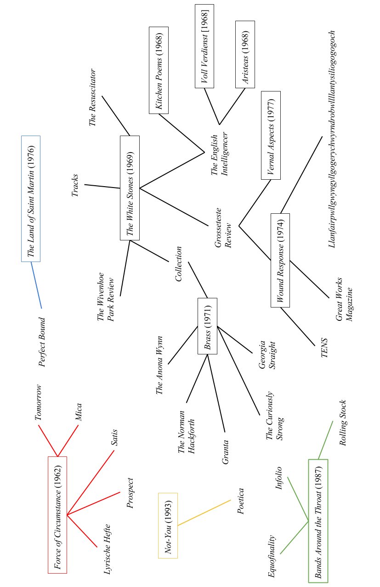

Being a poet is a form of admitted self-recognition and self-description inside a schedule of professions and roles within the social categories of a community and the nomenclatures for operational identity ---J.H. Prynne.1
This thesis offers a survey of the context in which the British poet J.H. Prynne began his literary career, focussing specifically on the period between 1955 and 1975 and seeking to reorient critical attention towards certain traditions, influences and social and literary milieux which have been overlooked in scholarship to date. These neglected contexts are then read back into Prynne's prose work to offer several new perspectives on his intellectual, political and ethical outlook. Following a very brief review of existing work on Prynne, this introduction maps the territory which the remainder of the thesis sets out to explore, explaining both its methodological peculiarities---principally its reliance on Prynne's prose rather than his poetry---and its overall shape.
While Prynne's poetry has received minor critical attention ever since the publication of his debut collection, Force of Circumstance and Other Poems, in 1962, serious scholarly discussion can be said to begin a decade later with Donald Davie's Thomas Hardy and British Poetry (1972). Here, in what Keston Sutherland terms 'a spirit of literary partisanship', Prynne is inserted by Davie---his former supervisor as an undergraduate and briefly as a doctoral student at Jesus College, Cambridge---into a resolutely English poetic tradition.2 Prynne's work is also used by Veronica Forrest-Thomson in her posthumously published Poetic Artifice (1978) to explicate a theory of poetic language. A number of short reviews and studies of individual poems appeared throughout the 1970s, mainly in small venues such as Prospice and Grosseteste Review, while the publication in 1982 of Prynne's collected poems provoked a much wider interest in his work, receiving attention in organs as high-profile as the London Review of Books. The first book-length study of Prynne's work, N.H. Reeve and Richard Kerridge's Nearly Too Much: The Poetry of J.H. Prynne, appeared in 1995, following an increasing number of articles both in 'little magazines' and in mainstream scholarly journals. More recently, Anthony Mellors's Late Modernist Poetics: From Pound to Prynne (2005) includes extended discussion of the poetry, while Ian Brinton's essay collection A Manner of Utterance (2009) collects a number of articles on the same subject. Further analysis is provided by dedicated editions of the journals Jacket (24, 2002), QUID (17, 2006) and Glossator (2, 2010), while doctoral theses focussing primarily on Prynne have been produced by N.R. Burrell, D.S. Marriott, Anthony Mellors, Rachel Campbell-Johnston, Birgitta Johansson, Sutherland, Ryan Dobran and Matthew Hall.3
There are two related issues with the prevailing focus of scholarship on Prynne, which it will be the task of this thesis to clarify. The first is manifested in a general bias towards text rather than context. Existing studies of Prynne's work tend to concentrate very closely on the poetry itself, or on related theoretical issues, without paying much attention to the historical conditions of its composition, publication and distribution. To take a prominent example, Reeve and Kerridge's Nearly Too Much consists of four chapters, the first two of which read Prynne's work through pre-determined literary concepts ('Questions of Scale', 'Lyricism'), while the third relates the poetry to 'theory' as such (Bakhtin, Kristeva, Lyotard) and the fourth consists of a long reading of the The Oval Window (1983). Mellors's Late Modernist Poetics is similarly theory-driven, its chapters headed by concepts such as shamanism, obscurity and the uncanny, which structure the subsequent readings of Prynne's work to the exclusion of historical detail.4 That the most powerful counterexample is Alex Latter's recent monograph Late Modernism and 'The English Intelligencer' (2015), a book which does not even include an entire chapter on Prynne, only serves to emphasise the aversion to history in what has gone before.5 It would obviously be optimistic to expect a large body of rigorously historicist scholarship to have already emerged around Prynne, when book-length studies of his poetry can still be counted on the fingers of one hand. Nevertheless, Prynne is peculiarly ill-served even by basic literary history of a semi-biographical type. Brinton's articles for PN Review, which inevitably lack the full apparatus of academic scholarship, nevertheless remain some of the only pieces actually to pay sustained attention to the publication contexts of Prynne's poems.6 The notorious impenetrability of Prynne's work is no doubt part of the reason for this situation: it is difficult to illustrate accessible, macro-level historical argument with poetry when the poetry itself requires extensive explanation and interpretation almost every time it is used. Yet it is perhaps also the combined result of close personal association between Prynne's foremost critics and the poet himself---primarily through pedagogical relationships but also in the context of a relatively close-knit avant-garde poetic community---and Prynne's own published comments on the irrelevance of any criticism involving biography. When in 'Mental Ears and Poetic Work' Prynne ventriloquises a 'primitive' critic---'Look, the poet is wearing red socks! Now at last we understand everything!'---it is difficult not to take this as an implicit warning against any such approach to his own work.7
The second major problem with scholarship on Prynne appears as a bias against consideration of the very earliest stages of his career, and therefore, in combination with the focus on text over context, against the influences that shaped that part of his career. The precise details of this bias will be considered in the introduction to Chapter 1, but it is important at this stage to take account of what it obscures. For many critics of Prynne's work, his poetic career is taken to begin in earnest with 1968's Kitchen Poems; that is to say, Prynne's deliberate suppression of his debut collection, Force of Circumstance, is accepted relatively unproblematically. Counterintuitively, this would be less of a problem for Prynne scholarship in general if Force of Circumstance was more similar in style to the later work. As it stands, the sense that the book is an obvious outlier leads to an unjustifiable hypostatisation of the break that follows its publication. A seemingly unbreachable wall having been erected between Force of Circumstance and what follows it, everything associated with the book is left on the far side, presumed to be irrelevant to the later work. As will be argued in Chapter 1, the fact that this shift in Prynne's work---and it is certainly an important shift---coincides with his increasing receptivity to American poetry has the effect of 'nationalising' the respective parts of his career, with certain English contexts being ignored, even where they might shed new light on much of what Prynne was writing throughout the later 1960s and '70s.
In order to counter the two problems identified above---a focus on text over context and a reluctance to consider the earliest phase of Prynne's career---this thesis will concentrate almost exclusively on Prynne's prose work rather than his poetry. Such a drastic restriction in scope requires some justification. It is important to emphasise from the outset that this is primarily a methodological decision rather than a choice about content. In other words, while certain prose pieces will be read in detail, and their status as prose made an object of analysis, this is not intended to be a thesis about Prynne's prose. Rather, it is a thesis which adopts Prynne's prose as a tool---one among many---to explore the broader contexts of his literary career.8 There are two characteristics which make the prose a particularly effective tool for this job. At the most basic level, Prynne's prose writing is significantly more transparent to contextual analysis than his poetry. While the style is in some cases just as obscure, this is not usually the case. Furthermore, Prynne's prose pieces tend to be tied much more obviously to specific occasions of composition and publication, e.g. as book reviews, letters in response to recent articles, or syntheses of pre-existing scholarship, than do his poems, allowing analysis to extend outwards into these contexts without encountering major barriers to understanding.9 The relative lack of existing critical work on Prynne's prose also allows these pieces to escape the often too rigid periodising of his career that attends analysis of the poetry.
Critical discussion of Prynne's prose work has generally been undertaken as a means of entry to the poetry. One of the most frequently discussed works is the very early piece 'Resistance and Difficulty', in which Prynne presents a theory of poetic difficulty influenced by contemporary phenomenology. This work has been considered at length in Ph.D. theses by Marriott, Sutherland, Dobran and Nandini Ramesh Sankar.10 Simon Jarvis engages with a similarly early piece, 'The Elegiac World in Victorian Poetry', in a recent essay on rhyme.11 A more regularly cited work is 'A Note on Metal', first published in The English Intelligencer and subsequently printed in pamphlet form alongside the poem 'Aristeas, in Seven Years' before being included in Poems. This piece has been discussed briefly by Jarvis, Robin Purves, Reitha Pattison, Latter and Nicholas Royle, and more substantially by Seeta Chaganti and C.D. Blanton.12 Johansson, Jow Lindsay, Justin Katko and others have written on 'The Plant Time Manifold Transcripts', whose inclusion in the collected poems has---as with 'A Note on Metal'---led to some confusion over its poetic/prosaic status, while Gerald Bruns, in a recent Chicago Review article, further complicates the poetry/prose distinction with reference to Kazoo Dreamboats (2011).13 Prynne's 1993 lecture-essay Stars, Tigers and the Shape of Words, which deals with the linguistic problem of arbitrariness, has received wider attention than many of his earlier works, being cited by Charles Bernstein, Edward Nye and Derek Attridge; meanwhile, his slightly later 'Discourse on Willem de Kooning's Rosy-Fingered Dawn at Louse Point' has proved useful to scholars of de Kooning and Frank O'Hara, notably Lytle Shaw and Sam Ladkin, as well as to those with a more contemporary focus such as Peter Middleton.14 A more recent jumping-off point for analysis of Prynne's poetry, as well as broader linguistic and phonological issues, is provided by 'Mental Ears and Poetic Work', which has been discussed by Attridge and Lacy Rumsey.15 Christopher Nealon also uses a number of Prynne's prose works to support his argument in 'The Prynne Reflex', but does not consider any in great detail.16
Recalling one of a number of visits to Ezra Pound during his incarceration at St Elizabeth's Hospital in the late 1940s, Charles Olson writes that 'I asked him if anybody had commented on his prose. He started out to say plenty, but I saw he meant the subject matter, and I stopped him, and meant as language, but that was the end of the interview.'17 While the review above is admittedly partial, focussing on texts which will be considered in the present thesis, it is nevertheless representative enough to make clear that the situation in Prynne's case is worse, with very little commentary existing on either the content or the language of his prose work. Thus, while the pieces can be assigned roughly to the periods of Prynne's poetic work by their dates of composition, this operation is for the most part not justified by analysis of the texts themselves. The freedom which this situation allows will be particularly evident in Chapter 1, in which prose from the early stages of Prynne's career is discussed in order to gain a clearer picture of his early influences than that which emerges from the poetry alone. Through the use both of published pieces and of archival material such as letters, which fall under this thesis's definition of prose, an idiosyncratic and specifically British intellectual milieu anchored by the work of Donald Davie and F.R. Leavis is proposed as an important and hitherto overlooked context for Prynne's early work. This context is then connected to a conception of the academy, and the University of Cambridge in particular, which, it is claimed, extends throughout Prynne's career. In the first half of Chapter 2, a similar strategy is used to illuminate the little magazine scene which served as a conduit for so much of Prynne's poetry and prose throughout the 1960s and '70s. As in Chapter 1, attention is paid to activities which blur the boundary between what is generally considered to be Prynne's juvenilia and the work of his mature career, while a focus on material practices and contexts is maintained. The second half of this chapter, by contrast, accepts the textual focus of current Prynne scholarship, but turns this attitude in the direction of a prose text, undertaking an extended reading of Prynne's 1967 piece 'A Note on Metal' and exploring questions about the nature of his prose work in detail. Finally, Chapter 3 turns to prose fiction, proposing a third key context for Prynne's work in the writing of Wyndham Lewis, Edward Upward and Douglas Oliver. These three authors are claimed to occupy a loose tradition into which Prynne also intervenes with his 1974 text 'The Plant Time Manifold Transcripts'. As in Chapters 1 and 2, Prynne's letters, published and unpublished, are used to support the idea of a coherent context for his work, while potential rifts and inconsistencies are also acknowledged. This thesis is thus structured in a roughly tripartite fashion, with the mid-point of the second chapter signalling a shift from the contextual to the textual, while the final chapter incorporates both modes of analysis. Allied to this structure is a broad movement from the descriptive to the argumentative and evaluative as the work progresses.
In-keeping with the largely contextual focus of this thesis, the choice of the precise period from 1955 to 1975 as its object of study was made by looking simultaneously at the internal contours of Prynne's career and at events outside it. The concept of 'the Long Sixties', defined roughly as the period 1958--74, is familiar from the work of Arthur Marwick, and just as in Marwick's model the initial date of this thesis's expanded scope is firmer than its endpoint.18 1955 was Prynne's final year at school; it is also the date of his earliest recorded poem, and of his first involvement with a little magazine, as editor of the sixth-form journal which published it, a position which will be examined in Chapter 2.19 In broader historical terms, any number of factors could be cited to support a case for 1955 as the beginning of an era in which the cultural emphasis in Britain came to rest firmly on the first rather than the second part of the phrase 'post-war': ten years on from the Second World War's formal end, the first full year without rationing also saw the symbolically important resignation of Winston Churchill as Prime Minister, to be replaced by Foreign Secretary Anthony Eden. (In another sense, 1955 was a significant year in the gradual shift towards a new type of war, with the formation of Britain's first strategic nuclear bomber squadron on 1 January and the government's announcement of its decision to develop a thermonuclear weapon the following month.) Perhaps more importantly for the concerns of this thesis, D.J. Enright's anthology Poets of the 1950s was published in 1955, solidifying the poetic infrastructure of 'the Movement' which, as Chapter 1 will argue, helped to determine the course of Prynne's early career.20 As acknowledged above, 1975 is weaker than 1955 as a point of periodisation; nevertheless, it has some key virtues. According with the terminal point given by Mellors for 'late modernism' (1945--1975), it includes Prynne's significant collection Wound Response (1974) and its associated prose text, 'The Plant Time Manifold Transcripts', a work which Chapter 3 will argue is highly representative of tendencies present in other prose fiction published throughout this period.21 Importantly for the largely British focus of this thesis, 1975 also marks Prynne's transition from national to international standing (albeit with a consistently restricted readership) with the publication of Bernard Dubourg's French translations of Kitchen Poems, Day Light Songs and Fire Lizard.22 This introduction of Prynne's work to continental Europe fits neatly with the British electorate's decision of the same year in favour of the United Kingdom's continued membership of the European Economic Community (EEC), a vote which has until recent events been taken as a mandate for involvement in the EEC's associated and successor institutions.
Inevitably, there are relevant areas of enquiry which, primarily for reasons of space, this thesis is not able to pursue. The first of these is Prynne's relation to the concept of the nation in general, and the United Kingdom in particular. This thesis generally uses the terms 'England' and 'English' when referring to poets born, living or writing in England and 'Britain' or 'British' when referring to the state, acknowledging the existence of culturally distinct poetic traditions in Scotland, Wales and Northern Ireland. This is not to deny the many geographic rifts within England as a cultural entity, but the fact that England is in the present work generally used in broad-brush opposition to the concept of 'America' justifies a degree of generalisation. In any case, Prynne's Englishness (though not necessarily his idea of it) fits for the most part within a Home Counties, Received Pronunciation, public school--Oxbridge, BBC model which for the bulk of the period under study here remained culturally hegemonic. Adding to the pressures against including a detailed study of nationhood in this thesis is the fact that these issues were considered at length in the author's own M.Phil. dissertation, and while some of its conclusions would be dissented from in the present context, the evidence and analysis on which they are based would not.23 The other topic largely absent from this thesis is less straightforward. The study of Prynne's prose was compared above to the study of Ezra Pound's, but this is far from being the only point of connection between the two men. In fact, the figure of Pound could be said to haunt every one of the following chapters. The vitriolic and polemical tone of Prynne's critical writing and correspondence, discussed in relation to Leavis in Chapter 1, has a lineage which could equally---perhaps even more justifiably---be traced to Pound. Like Pound, Prynne has acted as a sort of poetic impresario for friends and acquaintances, a set of activities which is considered in the first half of Chapter 2. Even Prynne's discussion of the relation between abstraction, corruption and value in 'A Note on Metal', considered at length in the second half of that chapter, has shades of Pound's economic thought, and while Chapter 3 does engage briefly with Pound on a direct level, this is subordinated to a focus on Wyndham Lewis. It would be misleading to claim that Pound is excluded from the body of this thesis for the same reason that it does not include detailed studies of Olson and Ed Dorn---namely, that he is an American. Pound's long-term expatriate status would make such an exclusion problematic, to say the least. The real reason is again one of space. To provide a full account of Prynne's relation to Pound would (and perhaps one day will) be the task of an entire thesis, not merely a section of one. As the subtitle of Mellors's Late Modernist Poetics: From Pound to Prynne indicates, some of this work has already been done, but not to an extent which would prevent other important material from being crowded out in a work as short as this one. Mellors's focus, moreover, is primarily on the cultural transmission of a particular understanding of myth, rather than on broader structural and sociological similarities between his three main subjects: Pound, Olson and Prynne. The figure of Pound will, nevertheless, be brought back to the surface in this thesis's conclusion, used to draw together and reflect on the foregoing analysis.
When the most basic and accessible introductions to Prynne's work seek to identify his influences, the two figures who appear more than any others are the British poet Donald Davie, one of Prynne's academic supervisors, and the American poet Charles Olson, with whom Prynne corresponded throughout the 1960s.24 Yet the relationship between the citations is in most cases highly unequal. Prynne's entry in The Concise Oxford Companion to English Literature is characteristic: 'His first collection, Force of Circumstance and Other Poems (1962; later suppressed), bore similarities to Donald Davie's gently modernist Movement poetry, but his subsequent involvement in the British Poetry Revival exposed his work to the legacy of American Objectivism, particularly Charles Olson, and shifted it in a more experimental direction.'25 Leaving aside the misleading reference to the 'British Poetry Revival'---a term coined by Eric Mottram and more often associated with London-based poets involved with the Poetry Society in the 1970s---the dual purpose of this sentence, epitomised by the casually parenthetical '1962; later suppressed', is clear: to acknowledge the importance of Davie to Prynne's early poetry while cordoning off the later work, safely insulating it from any implication of further influence.26 Unlike Olson, Davie is only 'gently' modernist; Prynne, meanwhile, is a sort of poetic negative who is 'exposed' to the blinding light from across the Atlantic and thereby fundamentally 'shifted', never able to return to his previous form. Prynne's implied designation of his debut collection as juvenilia, excluding it from every volume of his collected poems up to and including the recent third Bloodaxe edition, is in this way accepted as a factually correct literary-historical judgement rather than a highly contentious attempt at personal canon-formation, and figures associated with the work---not only Davie, but also Charles Tomlinson---are consigned to the same ash heap.27
If basic reference works downplay Davie as an influence, the more sophisticated scholarly perspective on Prynne's poetic development moves him even further out of view. Despite the relative infancy of academic work on Prynne, a number of clear conventions can already be discerned. One of the most important of these is the view that Prynne's 1971 collection Brass marks a significant shift---perhaps the most significant shift---in his poetic development. As Sutherland notes in his own 2004 account of the book, '[a]ll published accounts of Brass are agreed on one point: as Ian Patterson says, "Brass ... is a transitional work."'28 He goes on to cite Reeve and Kerridge's Nearly Too Much, which as the first widely-available, book-length study of Prynne's work has exerted a strong influence on subsequent reception, as well as David Trotter's The Making of the Reader (1984), which Sutherland describes as '[p]erhaps the most influential account' of the shift. Sutherland himself disagrees at length with the specifics of these accounts, but he does not dispute the substantive point that a change took place in Prynne's work, arguing instead that it can be detected as early as The White Stones (1969). Whether or not this second shift in Prynne's work is attributed directly to his loss of contact with Olson and the latter's subsequent death, and whether it occurs neatly between The White Stones and Brass or runs like a fault line through the former collection, it has the effect of relegating the work of the early 1960s from the position of subordinate term in a binary hierarchy to effective invisibility within a model of Prynne's career that is formally ternary but is in critical practice still composed of two parts: early and mature.29 More recent investigations into what has been described as Prynne's 'late style'---notably a special edition of the journal Hix Eros compiled following a symposium on the topic in 2013---threaten to push this work even further into obscurity.30
Davie is not the only figure to suffer from the lack of scholarship on Prynne's work in the first half of the 1960s: with notable exceptions such as Steve Clark's highly polemical 'Prynne and the Movement', there appears to be a general bias against consideration of indigenous influences in work on Prynne's early career.31 It is true that Prynne has described the prevailing poetic climate during his school and college years as 'a kind of wasteland', and it would of course be misleading to insist that his intellectual relationship with, say, Charles Tomlinson is as significant to the development of his poetry and prose as his relationships with Olson and, later, Ed Dorn.32 Nevertheless, it is important to recognise the extent to which the prevailing scholarly focus on the transatlantic bridge represented by Prynne's contact with the latter two figures is conditioned by what are essentially archival contingencies---notably, the presence of hundreds of letters from Prynne to Olson and Dorn in a well-known and easily accessible collection at the University of Connecticut.33 It is possible to hazard a general law of modern literary history, according to which physical distance between poets---with its concomitants, greater reliance on written correspondence and a stronger tendency to prize and therefore preserve letters received---tends to promote the visibility of the relationship in subsequent scholarship.34 The opposite case clearly applies to Davie, with whom Prynne must have had dozens of meetings which have left no written trace, aside from the brief reference to 'conversations with J.H. Prynne' in the acknowledgements to Davie's 1964 book on Ezra Pound.35
If a reliable account of Prynne's entire career is eventually to be produced, the bias described here will need to be rectified, or at least compensated for. The following chapter will therefore concentrate directly on the very earliest years of Prynne's career, beginning with his matriculation at the University of Cambridge in 1957. It will examine his relationship with Davie in detail, comparing it with the equivalent relationship between Davie and Charles Tomlinson and considering the effect on Prynne of Davie's involvement with the Movement, the poetic group anchored by Philip Larkin and Kingsley Amis. It will then make a more extended case for a third significant influence that has so far gone almost entirely unacknowledged: F.R. Leavis.
Though this chapter will argue that Donald Davie was an extremely important figure during Prynne's early years at Cambridge, he was not a permanent fixture. Prynne matriculated at Jesus College at the beginning of the 1957--58 academic year, a period in which Davie was a visiting professor at the University of California. Only the following year did Davie return to Cambridge, where he had completed his undergraduate studies and Ph.D. in the late '40s and early '50s respectively, and it was not until 1959 that he was made a fellow of Gonville and Caius College.36 Alex Latter describes how Prynne's transfer to Davie's supervision was the result of direct lobbying by Prynne and R.F. Langley, a fellow student on the English course at Jesus and later an important poet in his own right.37 Though the dates for the move are unclear, it seems likely, given Davie's academic position and the structure of the Cambridge English Tripos, that he only supervised Prynne for the third and final year of the course, known as Part II. Even so, in order to catch Prynne's attention as a potential supervisor, some sense of Davie's basic scholarly and poetic approach must already have filtered down to him. Before examining Prynne's recorded comments on Davie, it may therefore be helpful to sketch a brief outline of the older poet's public image in the mid-to-late 1950s, to give an idea of the sort of figure that Prynne and Langley hoped to encounter.
Writing in the postscript to the 1976 reprint of Articulate Energy, Davie describes his first book of criticism---1952's Purity of Diction in English Verse---as 'a thinly disguised manifesto'.38 A glance at the book's introduction makes clear what he means: having described the 'peculiar discomfort' felt when reading verse whose language is 'impure', he goes on to claim that while '[t]his criterion is not equally relevant to all sorts of English poetry or in all phases of the English tradition', it is 'relevant, indeed indispensable, to the poetry of Goldsmith's contemporaries, and to that of my own.'39 The polemical purpose of Purity of Diction is evidently to legitimise through literary-historical reference Davie's own restrained, broadly anti-modernist poetic practice in this period---'taking sides', as he tentatively puts it, 'with Pope and Yeats and perhaps Auden, against Pound and perhaps Eliot.'40 This unabashedly conservative attitude is typical of what led Davie to be categorised, in a 1954 Spectator leader article that has become a staple of critical accounts, as a member of the Movement.41 Yet despite being included in both of this nascent grouping's seminal anthologies---D.J. Enright's Poets of the 1950s (1955) and Robert Conquest's New Lines (1956)---it was clear that Davie's poetry was never as representative of the tendency as that of, say, Larkin, Amis or John Wain. This fact was raised in 1957 in a blistering review of New Lines by Davie's former student, Charles Tomlinson, who noted that 'Mr. Davie's close association in the public mind with the middlebrows ("the Wain-Amis-Davie school", The Listener calls the new poetry) is [...] difficult to account for.'42 In 1959, Davie raised this implicit divergence to the level of a public break with his short essay 'Remembering the Movement', which denounced the whole thing as a sort of publicity exercise, though one of which the key participants claimed strenuously to be ignorant.43 Perhaps most tellingly, the dustjacket of his next full-length collection, which comprised poems written between 1957 and 1963, declared that '[i]n these poems Donald Davie abandons certain features of his writing which have attracted notice in his earlier volumes. In particular he now eschews for the most part the use of irony, nostalgia, and literary allusions.'44
A reading of one poem from the book, 'Housekeeping', will show how necessary the qualification 'for the most part' is to this description. For one thing, the poem is absolutely nostalgic in tone. Davie begins abruptly with the chronological locator 'From thirty years back', describing a childhood scene of 'my grandmother with us boys | Picking the ash-grimed blackberries'.45 To recall an event from childhood is not automatically to be nostalgic---nevertheless, Davie's tone as the poem progresses makes clear that this is the mode in which it is to be read. The poem's central subject is Davie's grandmother's migration from Somerset to Yorkshire in the 1890s: how '[s]he toiled, my father a baby, through the hard | Fellside winters, to Barnsley'. This is expressed through the conceit of the characteristic noises she makes while picking blackberries having 'carried' across the distance between the two counties, and subsequently through time to Davie as speaker: 'Contentment cries from the distance. How it carries!' Describing how his grandmother was '[t]ranslated in youth past any hope of returning', Davie brings this very 'hope' into play, presenting the distance between his Barnsley childhood and his present condition (Davie wrote the poem while living in Italy) as analogous to that between the West Country and northern England.
It would, however, be misleading to characterise 'Housekeeping' as a simple expression of Heimweh, though this is undoubtedly one of its roles. The poem is also a vehicle for Davie's own self-presentation, a function which is accomplished through the strategic use of a certain narrative tone---if not quite 'ironic', then certainly urbane and knowing. This tone can be detected most clearly in the poem's third stanza:
How the sound carries! Whatever the dried-out, lank
Sticks of poor trees could say of the slow slag stealing
More berries than we did, I hear her still down the bank
Slide, knickers in evidence, laughing, modestly squealing.
Perhaps the most obtrusive aspect of this stanza is the concluding clause, in which the speaker deliberately collides two equally patronising images of the poem's subject: Davie's grandmother 'squeals' like a pig, but 'modestly', as befits a family matriarch who spent the prime of her life in 'the 'nineties'. The phrase nevertheless succeeds in distancing the speaker from his grandmother, thereby playing into the poem's broader purpose: to allow Davie, well-known poet and Cambridge don, to celebrate his provincial origins while reassuring his audience that he has transcended them, and crucially that they do not exert any involuntary influence on his poetic work. This deliberate disjunction of form and content, in which the former neutralises and controls the latter, is visible in another phrase from this line, 'knickers in evidence'. It is not entirely clear whether this is a genuine Davie-ism---an artefact of his infamously pedantic style---or a deliberate parody of the sort of semi-euphemistic working or lower-middle class speech that his grandmother herself may have used (something akin to the compensatory latinity of 'serviette' as opposed to 'napkin', or the hyper-technicality attributed to mid-century sergeant majors: 'never say "pull the trigger" when you might say "depress the mechanism"'46). Either way, it serves to place the speaker in a superior discursive position---the only question is how superior.
'Housekeeping' is definitely nostalgic and potentially ironic. Does it also infringe Davie's third ban, on the use of literary allusions? According to Davie's own comments during a 1963 reading at the University of Cincinnati, it does. Introducing the poem, he reveals that it 'has quite a close relation to a specific poem among those [...] by Boris Pasternak, which I was translating at the time.'47 Davie is referring to the poems which form the concluding section of Pasternak's novel Doctor Zhivago, of which his translation was published in 1965.48 Far from being an invisible link, and thus not strictly an allusion at all, this relation is presumed by Davie to be visible (with some prompting) to his audience: 'Those of you who know Pasternak's Doctor Zhivago, with the poems at the end in the of course inadequate translation, may like to ask yourselves which of Pasternak's poems it was that sparked this one off as far as I'm concerned.'49 'Housekeeping' is certainly not representative of Events & Wisdoms as a whole, but neither is it completely anomalous, and the fact that it fails so obviously to conform to what is presumably Davie's own description of the volume---a collection which 'eschews for the most part the use of irony, nostalgia, and literary allusions'---suggests a real gap between his ambitions and his poetic achievements in this period. This analysis is confirmed in startlingly blunt terms by a November 1958 entry in Davie's personal journal. Having recounted a conversation with George MacBeth in which 'modern Franco-American poetic' was dismissed, Davie makes the ambivalent nature of his own position clear: 'I come round to thinking that [...] many of the sincerely self-professed champions of poetry are in fact its worst enemies. My own prolonged schizophrenia---between [Yvor] Winters on the one hand, Pound & Tomlinson on the other---at this point enters on a crucial phrase.'50
On returning to Cambridge in 1958, then, it seems fair to say that Davie was in a liminal position, having shifted away from the Movement in intention but having not yet confirmed this shift in practice or in considered public statement. The most fertile source of information on Prynne's attitude to Davie is his correspondence of the 1960s---not only the letters to Olson and Dorn, but also those to Peter Riley, as well as three short airmail letters sent to Cid Corman in 1961. By the same token, the collation and comparison of comments made to diverse correspondents sheds light on the differences in these relationships, and on Prynne's approach to letter-writing itself. Prynne's earliest remarks about Davie come in a November 1961 letter to Corman, in the context of a sustained comparison of the English and North American poetry scenes, to the detriment of the former. Having enquired in an earlier letter after potential American contributors to Prospect, the little magazine which he had recently taken over from Elaine Feinstein and Tony Ward, Prynne laments the 'total collapse of a singable idiom' in England, which has encouraged the emergence of '[d]ecorous poltroons on all sides: small, cautious and dead.' After praising Charles Tomlinson's work as 'truly the nearest to stirrings', Prynne seems to consign Davie to the 'poltroon' category: 'Just look at Davie's recent A Sequence for Francis Parkman---such muscle-bound gesticulation is rife. Look at Gunn.'51 The collocation with Thom Gunn is particularly telling, suggesting that Prynne did not consider Davie's poetic work of the late '50s and early '60s to have shifted as decisively from its Movement origins as Davie himself did. Yet even at this early stage, there is a sense of obligation to the older poet---in an asterisked note to the above comment, Prynne acknowledges that 'Prospect will have to carry a review [...]---pressures inherited that I can't side-step.'52 It is not immediately obvious what Prynne means by 'muscle-bound gesticulation', though the phrase bears a resemblance to his 1962 condemnation of 'the deliberately small aims and over-developed musculature of most English writers of verse'.53 It is perhaps relevant that A Sequence for Francis Parkman is Davie's most explicit attempt to bridge the transatlantic gap that Prynne was himself struggling with in this period, its dedicatee being the celebrated 19th-century author of The Oregon Trail. Writing in a note to the sequence in his 1972 Collected Poems, Davie describes it as 'my response to North America on my first visit', and the overall tone is one of simultaneous fascination and alienation.54 In the sequence's final poem as published, a verse letter to the Yeats scholar Curtis Bradford, Davie asks a series of questions about American history before admitting that he can 'only guess, | I guess at it out of my Englishness | And envy you out of England.'55 A further poem, added to the sequence in the collected edition but not present in the original book, is even more forceful in its self-hating Englishness (or Britishness): 'Anglophobia rises | In Brooklyn to hysteria | At some British verses. | British, one sympathizes.'56 It seems possible that Prynne's antipathy towards the sequence stems not from its misdirected energy, as might be the case with some of Davie's earlier work, but from its anaemic, small-island handling of subject matter explored so much more vitally by poets such as Dorn and Olson. Davie has poetic muscles of a sort, but he is using them simply to gesticulate rather than to deliver the knock-out punch.57
Prynne's next comment on Davie, in an April 1962 letter to Dorn, is much more positive: relaying Davie's approval of Dorn's The Newly Fallen---'I don't know when I enjoyed reading a collection of poems so much as Edward Dorn's'---Prynne describes it as 'an encouraging comment from an academic of such intelligence and standing as him.'58 While this change might cynically be attributed to Prynne's hopes of securing a fellowship at Caius in the following months (he was, with Davie's help, elected fellow of Caius in October 1962), it might equally result from the structure of the letter: there would seem to be little point in relaying a compliment from somebody while simultaneously declaring them an idiot.59 Prynne's next letter to Dorn, in July, helpfully clarifies the evident ambivalence of his position vis-Ã -vis Davie, contrasting the latter's declared critical stance in 'Remembering the Movement' with what Prynne sees as the still 'crippled' state of his poetry: Davie is presented---to use his own terminology---as a schizophrenic figure, apparently aware of what needs to be done in the new poetry of the 1960s but unable to do it himself. Prynne quotes Davie's characterisation of the typical Movement poet as 'never so surrendered to his experience, never so far gone out of himself in his response, as not to be aware of the attitudes he is taking up', writing that 'Davie's own writing is crippled with this sense of the larger social context, his desire to include all his reservations within the scope of what small conviction he can command.'60 He admits that Davie 'has visions of the nobility of the poet's responsibility', giving 1959's The Forests of Lithuania as an example, but contends that 'he cannot see this as other than an interpreter's function---to speak out and make plain what is true of the public context in which we live.'61 It is odd to see Prynne seeming to deny that 'the public context in which we live' is a legitimate subject for poetry when his next collection, Kitchen Poems (1968), would deal directly with the human subject's imbrication in the very public contexts of global finance and politics. It is probable, therefore, that he means something different by the phrase; perhaps something similar to the debased sociality which Davie admits to paying tribute to through 'inert gestures of social adaptiveness---"no doubt", "I suppose", "of course", "almost", "perhaps"'.62 This is absolutely to be distinguished from, for example, the metaphysical emphasis on 'discretion' in Prynne's 'A Gold Ring Called Reluctance', a poem which claims that '[t]he public | is no more than a sign on the outside of the | shopping-bag'.63 When we encounter the 'inert gestures' of 'Have | you had enough? Do have a little more? | It's very good but, no, perhaps I won't' in this context, they are very obviously shaded with sarcasm, whereas in Davie's poetry they retain their primary function as 'poetic socializing'---what John Press described in 1963 as 'vaguely reassuring gesture[s] intended to show that these highly intellectual poets want their readers to relax and feel at home in a genial atmosphere.'64
For Prynne in the early 1960s, Davie's receptivity to American poetry had its uses, particularly when combined with the public profile that he had earned in the course of the previous decade. Writing to Olson in November 1962, Prynne describes his plans---in retrospect too optimistic---to print Dorn's Hands Up! in England, noting that 'I have induced Donald Davie to like it, and he is a figure of such authority in these matters that we should be able to find a publisher without too much difficulty.'65 Discussing the same subject with Dorn in December, he describes how the manuscript has been sent to the London publisher Routledge & Kegan Paul, 'since both I and Davie have had work published there and know the man in question [Colin Franklin].'66 In an extraordinary letter to Dorn earlier the same month, Prynne makes Davie's usefulness as a mouthpiece for American poetry explicit: 'He is an energetic propagandist, and has a chance of being heard (which I do not), so that a change of wind may be just possibly in the offing here; he has certainly singled out [Robert] Creeley's collection as one of the year's most exciting books in another piece he is doing for The Guardian.'67 The tone here is like a less direct and militaristic version of that adopted by Amis in his most mercenary letters during the ascendancy of the Movement, as when he wrote to Wain in November 1953 to summarise recent developments in the literary press, concluding that 'with you as general, the boys could move right into control.'68 Further evidence of a coordinated PR campaign is provided in an April 1963 letter to Dorn, by which point Prynne had abandoned hope of placing Hands Up! with Routledge:
So I now have my eye on Eyre & Spottiswoode, who have published American verse and would also be interested in the novel [The Rites of Passage]. I am waiting for Donald's return from Cincinnati (this week) to plan another set of tactics, and hope you will bear with the delays. [...] Meanwhile Donald (with prompting) will I trust continue to scatter hints in the forum, like this one in a New Statesman review of Spender's new and worthless book.69
Davie's review, a cutting of which is pasted into the letter, combines traditional, Movement-style antipathy towards Stephen Spender, Dylan Thomas and anyone else associated with the 1940s with enthusiasm for 'the theories of Olson and the poems of Creeley and Edward Dorn [which] seem to show the Modern Movement entering, in America, on a new lease of unexpected life.'70
Despite Davie's evident willingness to cooperate in the promotion of Olson and Dorn to English readers in the early 1960s, Prynne's tone when referring to him is frequently patronising. In the 10 December letter referred to above, Prynne writes of Davie as if he is one of his students, complaining that 'he knows almost nothing of what is really new in America at this time, but I am working steadily at him'.71 At other points, however, Prynne admits to a certain respect for his former supervisor. Writing to Olson at around the same time as he is coordinating the Eyre & Spottiswoode campaign, Prynne refers to Davie as 'a colleague and a close friend of mine here', and by 1965, after Davie had secured Dorn a teaching post at the new University of Essex, he is ready to describe him as 'the most intellectually and personally honourable man I've ever met in the knowledge industry (or the adjacent masquerades). I owe him much more than I can easily say, even though we don't really know each other very well and he has a certain robust sense of distance'.72 This ambivalence is maintained throughout the decade. Writing to Peter Riley in August 1967, Prynne makes a joke about Davie's irrelevance, declaring that 'Andrew [Crozier] must be in a complete mental haze if he thinks sending a copy [of a recent book] to Donald Davie would be interesting---maybe to the Sports Editor of The Times as well.'73 Yet when Davie makes his momentous move to the United States the following year, Prynne admits to Riley that 'I am very deeply torn apart [...] (most obscurely) by Donald Davie's translation to Stanford Cal.'74 Prynne's ambivalence towards Davie was described above as stemming from the aesthetic gap between the latter's poetic theory and his poetic practice; yet the tone of this last comment, not to mention Prynne's own apparent confusion about his feelings, suggests that something more may be at stake.
In order to clarify Prynne's poetic and academic relationship with Davie, it may help to compare it to Davie's superficially very similar relationship with Charles Tomlinson. Davie had supervised Tomlinson at the turn of the 1950s during his first stint at Cambridge. In a 1998 Paris Review interview, Tomlinson recalls that '[m]y final year at Cambridge was a compensation for my first. I acquired a new supervisor, a young man just returned from service at sea, and this was Donald Davie. We went on to educate each other and ultimately to criticize each other's verse.'75 That Prynne enjoyed a similarly free relationship with Davie is suggested by an account of the activities of the Jesus College Literary Society, printed in the college's annual report for 1959. Prynne served as secretary of this society for the 1958--59 academic year, with his college tutor, the biologist and ethnomusicologist Laurence Picken, serving as president. Given that the report refers to Picken in the third person, it seems reasonable to conclude that it was written by Prynne, and its tone is therefore of interest. Having recounted a number of the society's events for the year, Prynne describes how
Dr [David] Daiches introduced the poetry of Wallace Stevens to an audience largely unacquainted with the extent of his work, and Dr Davie presented a most forceful case for the major stature of Ezra Pound's Cantos against the concerted reluctance of a section of the audience to admit anything of the sort. We hasten to reassure Dr Davie, however, that things may not be as bad as they must have seemed.76
Despite the brevity of this account, there is a clear sense of scholarly community: an implication, particularly in the gentle humour of the final sentence, that the undergraduate may speak on equal terms with the celebrated poet.
As noted above, Tomlinson's eventual break with Davie was public, though not therefore permanent. His attack on New Lines, titled 'The Middlebrow Muse', was printed in Essays in Criticism in 1957, the year that he was hired by the English department at the University of Bristol, where he would remain for the rest of his career. Writing from this relatively secure position---the preceding years had been spent travelling in Italy and teaching in a primary school---Tomlinson was apparently unhampered by professional squeamishness, attacking Conquest's anthology in no uncertain terms. As with many assaults on the Movement, one of Tomlinson's key targets is their apparent collusion with the popular press: he describes how 'the new type of poet' has been advertised in publications ranging from 'the Times Educational Supplement to the Daily Express', a spectrum calculated to shore up their characterisation as 'middlebrow'.77 The anthology's contributors are then summarily dismissed: Wain is a purveyor of 'Hollywoodese', Amis a philistine, Gunn a wannabe tough guy, and Conquest lives up to his name by 'offer[ing] us in his own poetry a rather blatant parade of his sexual adequacy.' Enright is afforded lengthier consideration, but only the more forcefully to label him a 'journalist in verse'.78 Aside from some similarly dismissive comments about Larkin and Elizabeth Jennings, much of the rest of the review is devoted to considering how far Davie's work exceeds the bounds of the anthology, Tomlinson accusing Conquest of having selected the least interesting and most typically Movement-esque poems in order to construct a false harmony between the contributors. Davie is apparently 'the only poet in this volume whose work, after worrying signs of metrical restraint, promises a real development away from his earlier manner', though he is kept in his place as 'a good but minor poet'.79 Tomlinson ends up declaring that 'there is not a great deal in Mr. Conquest's anthology outside the range of an average talent with some leisure and within reach of an English faculty library', before concluding with a Leavisian lament over 'the gradual disappearance of objective values in our criticism.'80
What is striking about Tomlinson's position in the context of this thesis is its effective mirroring of Prynne's own attitude to Davie. Where Prynne sees Davie as acknowledging in his prose---particularly in 'Remembering the Movement'---what he fails to break away from in his poetry, Tomlinson appears to view Davie's 'Movement-plus' poetry as a sort of unconscious vanguard for his critical work. The key to this difference is, perhaps, chronological: as a student of Davie's well before the publication of Purity of Diction, Tomlinson could regret his supervisor's initial absorption into the publicity machine of the Movement, whereas for Prynne the issue was always with his failure fully to leave it behind. Yet both positions are complicated by a further issue---namely, the uneasy involvement of Prynne and Tomlinson in the very processes of literary promotion and publicity that formed the basis of their antipathy towards the Movement. When 'The Middlebrow Muse' was published, it was followed by rebuttals from both Davie and Enright. Davie's effort relies, as in much of his criticism, on the vague insinuation of fascist sympathies: 'That sneer at "democratic" shows how far Mr. Tomlinson is from losing his nerve. He will run any risk, throw down any safeguard.'81 It is Enright's piece which deals the crushing blow. Having dismissed the tone of Tomlinson's review, with its 'confidently aped Leavisian and Lawrentian gestures', Enright undercuts him in the most effective way possible:
Mr. Tomlinson applies the new sneer-word 'fellow-travellers' to two of the contributors. Yet, in the case of both of the anthologies mentioned, the editors received one unsolicited manuscript (which they felt unable to use)---from Mr. Tomlinson. Of course Mr. Tomlinson retains the right (which he has used, in America and in England) to review these same anthologies. But, in choosing his abuse, has he forgotten that he himself, in full knowledge of who his 'fellow-travellers' would be, once applied for a ticket?82
Tomlinson's criticisms of the Movement are effectively, if unfairly, painted as the ressentiment of a poetic also-ran. As Martin Dodsworth points out, it was almost certainly Davie who showed Tomlinson's poems to both Conquest and Enright in the first place, a circumstance which perhaps accounts for the review's ambivalent take on his work, viewing it as simultaneously hampered by the middlebrow milieu and trying to push beyond it.83
Prynne's relations with the literary world through Davie were more successful, and accordingly less dramatic. It is easy to identify at least three opportunities afforded to Prynne in the early 1960s for which Davie was, in all probability, at least partly responsible. The most obvious is the publication of Prynne's debut collection, Force of Circumstance, by Routledge in 1962. Davie's A Winter Talent had been published by the firm in 1957 and his critical work The Heyday of Sir Walter Scott in 1961. D.S. Marriott claims, without citation, that 'Davie was [...] responsible for drawing Prynne's manuscript of poems to the attention of his then publishers'.84 Prynne's letter to Dorn of 31 December that year makes clear that he considered Colin Franklin, his contact at the firm, to be amenable to persuasion by poets already on their list. Given that Davie was willing to write to Franklin in support of Dorn, an American whom he had never met, it would certainly be odd if he refused to do the same (or more) for his own student.85 The second event which it seems reasonable to attribute to Davie is Prynne's delivery of a broadcast on the Third Programme in the same year. Subsequently printed in the BBC magazine The Listener as 'The Elegiac World in Victorian Poetry', the talk was originally broadcast at 8:45 p.m. on 15 December 1962 under the title 'The World of Elegy'. The Radio Times gives the following description: 'During the last hundred years elegiac poetry retired from the external world and created an inner meditative world of its own symbols. Mr. Prynne discusses in illustration some poems of Tennyson, Arnold, Eliot, and Wallace Stevens.'86 Broadcasting on the Third Programme was in fact a relatively common activity for Cambridge dons in this period, as is amply demonstrated by contemporaneous schedules: Prynne's talk came on the same evening as a segment on 'Science and the Industrial Future' by D.B. Welbourn (Selwyn) and the previous day saw a talk by D.M. MacKinnon (Corpus Christi) on Martin Heidegger.87 Nevertheless, it seems likely that Davie---perhaps through his acquaintance with George MacBeth, then a Third Programme producer---would have had some hand in securing the opportunity for Prynne, who was after all a relatively unknown figure at this point. (Davie, by contrast, had appeared regularly on the Third Programme since the early 1950s. In February and March of 1962, he presented a four-part series on 18th-century poetry, while in the early months of 1963 his work was broadcast as part of a twelve-episode translation of the Odyssey.88) The last of Davie's potential attempts to insinuate Prynne's work into the London literary world is represented by a January 1964 interview conducted as part of the 'Poet Speaks' series by Peter Orr. Davie had himself been interviewed for this series in October 1960 (and was recorded again in November 1964), and the project was subsequently to be associated with Routledge through the publication of selected interviews in a 1966 volume edited by Orr.89
Prynne's interview is interesting insofar as it contains some unusually clear and concise statements of his poetic priorities in this period. Asked whether he considers poetry something to be 'dabbled with', he provides a response which seems to be aimed directly at those unreconstructed elements of the Movement which had persisted into the early 1960s:
No, I think very much not to be dabbled with. I think this is probably one of the strongest feelings I have about it; one of the strongest feelings I have, indeed, about the contemporary situation here in England. The casualness, the sense that it can function at a low pressure, that one can write occasional poems, that one can be wry, self-deprecating, amusing, perhaps slightly embarrassed; the sense in which a poem can apparently be written at a fairly low level of engagement, of interest, of committal---all this seems very foreign to me, I think.90
Prynne's use of the word 'foreign' here is striking, not least because these qualities are seen to represent precisely the English character of contemporary poetry in similar statements from this period, raising the possibility that it is Prynne himself who is in some sense foreign. Reviewing Michael Hamburger and Christopher Middleton's anthology Modern German Poetry, 1910--1960 (1962), Prynne repeatedly sets up and opposes the categories 'England' and 'Europe', claiming, for example, that '[it] is [...] a fundamental difference between the imaginative climate of England and Europe, both in tone and in structure, that this anthology is valuable for setting before us', and referring to 'the gap between the intellectual climates responsible for Larkin or Hughes on one side, and Ingeborg Bachmann or Paul Celan on the other.'91 In a roughly contemporaneous letter to the little magazine Mica, he describes 'English writers of verse [as] sheltering with provincial timidity behind the irony inherited from Eliot', while in a 1961 letter to Olson he deplores the insularity of 'Betjeman's England (the logical successor to Auden's)'.92 This last statement offers a solution to the problem, suggesting that while Prynne considers 'wry, self-deprecating, amusing' tendencies to be typically English at that point in time, this is a development that is both regrettable and historically contingent. Englishness has been hijacked by Betjeman; it is not a quality to which he can claim an absolute right.
The three events considered above show Davie introducing Prynne to the mechanisms of mainstream poetic publicity and Prynne shifting between acquiescence and resistance. As early as September 1962, he had effectively disowned the collection that was to be published with Davie's help, writing to Olson that 'my own Vol. of poems (out November) is 96% of no interest to me. Zip-fastener type of thing---dead as no door-nail would be, given any decent chance.'93 It is instructive to compare this with Tomlinson's early poetic career: after the publication of a pamphlet of juvenilia, Relations and Contraries (1951), with Erica Marx's Hand and Flower Press, it was Davie's support of Tomlinson's 'first real collection', The Necklace (1955), which helped him 'find [his] way into print' in a more permanent sense, and that set the tone for his subsequent work.94 Prynne and Tomlinson both clearly felt ambivalent about using the cultural capital accumulated through Davie's association with the Movement in order to further their own very different poetics. From the late '60s onwards, Prynne's aversion manifested itself in an almost total rejection of the mainstream literary world, the details of which will be discussed in the following chapter; Tomlinson, by contrast, had enjoyed the fruits of Davie's influence much earlier, and was thus able, once established, to distance himself less completely from the older poet. Prynne's early involvement with Davie nevertheless complicates any attempt to present his work as some sort of sui generis avant-garde artefact, or even to characterise it primarily as an English offshoot of the Olsonian poetic project.
Discussing a series of parodies of Movement poets written by Amis and Larkin in 1956, Zachary Leader makes a helpful point about the fluidity of literary allegiances in the 1950s, which might apply just as well to the 1960s: while Stephen Spender was by this point one of the Movement's chief hate figures, Amis was perfectly happy to send him the parodies for publication, with he and Larkin thereby 'including their detractors in a trick they hoped to play on their supporters.'95 Just as Amis and Larkin were forced to rely on the existing literary infrastructure represented by Spender's CIA-backed Encounter in order to get their voices heard and their names mentioned, Tomlinson and Prynne had little choice but to accept Davie's help if they were to promote their work in any conventional sense: to 'pour' their work into a conventional 'literary and economic mould', as David Trotter writes of Force of Circumstance.96 That Prynne decided, from the late '60s, to forego this promotion and to seek out alternative models of poetic dissemination is part of what makes his subsequent career so exceptional and worthy of study.97 As was demonstrated at the beginning of this chapter, conventional encyclopaedic and scholarly conceptions of Prynne's work attempt---consciously or otherwise---to minimise the importance of Davie, framing him as an influence who was quickly superseded following the publication of Force of Circumstance. While this is no doubt true in a poetic sense, Davie's practical efforts to aid Prynne in the early 1960s reverberate throughout the younger poet's entire career. Prynne's decision to turn away from commercial publication and the mainstream press was described above as a 'total rejection', and it is true that his attempts to use Davie's literary connections to secure British publication for Olson and Dorn were largely unsuccessful. Yet it was also Davie's influence which helped to secure Prynne's fellowship at Caius, a position which has not only afforded him the time and resources to produce poetic and critical work but has also served as a base, over more than 50 years, for the instruction and encouragement of younger poets. Prynne's attitude to his position at Cambridge will be considered in more detail at the end of this chapter. First, it will be necessary to make another, more contentious, case for influence.
Speaking at a colloquium on the history of Cambridge English in 2011, Prynne recalled some of the famous figures with whom he had become acquainted in what was then more than five decades of almost continuous association with the Faculty: 'I knew William Empson only slightly but I enjoyed a free and easy relationship with Ivor Richards over many years, and we had many conversations. I was even quite well acquainted with F.R. Leavis and his wife Queenie.'98 Prynne and F.R. Leavis are very rarely mentioned in the same breath---yet when the apparently obvious political and aesthetic differences between the two men are set aside, there is much to recommend the comparison. Both came up to Cambridge from minor public schools after periods of military service; Prynne was very quickly elected fellow of Caius after his undergraduate degree while Leavis worked on a Ph.D., but both served as teachers at the university for many decades; both maintained ambivalent relationships with Cambridge as an institution, by turns benefiting from the privileges of relatively secure academic positions and acting as 'ghosts in the machine', opposed to aspects of prevailing academic orthodoxy; most importantly, both Leavis and Prynne have, to an extraordinary degree, inspired successive generations of critical and poetic 'followers', for want of a better term.99 Responding to a piece by Robert Archambeau in 2010, Andrea Brady vigorously contests his use of the label 'Cambridge School', particularly in relation to her own work:
Personally, I feel like I'm forever being tagged 'Cambridge School', even though I've lived in London for twice as long as I was a gownie, and my time in the UK still adds up to far less than half my life. When I did live in Cambridge I felt distinctly female and distinctly American. I've always said that I was influenced less by Prynne than by Frank O'Hara; my commitment to a politicized art predates any serious reading of Prynne, and even now I have profound misgivings about the political methods of Prynne's late poetry.100
Just as with the controversial designator 'the Movement', her rejection of the term is typical of the reactions of poets whom it attempts to subsume. Nevertheless, she recognises that 'protesting about the designators is something of a cliché [...] and that in introducing a large, various and sometimes grotesquely self-aware body of works to new readers it is helpful to be able to assert some continuities or shared aspirations'.101 In fact, the use of 'Cambridge School' to refer to Brady's work---sometimes qualified as 'third-generation'---is less common than its use in relation to the supposed first and second generations. This usage had by the early 2010s reached the status of an established critical term, meriting inclusion in a 2013 revised edition of the Oxford Companion to Modern Poetry:
the term 'Cambridge School' refers to a particular grouping who began writing in the later 1960s, some of whom studied or worked in the city. J. H. Prynne is a central figure, together with Andrew Crozier, John James, Wendy Mulford, Douglas Oliver, and Peter Riley. [...] As with the New York School, it is now possible to speak of a 'second generation' of Cambridge poets [...]. A major anthology, Conductors of Chaos (Picador, 1996), ed. Iain Sinclair, includes work by Andrew Duncan, Michael Haslam, Tony Lopez, Grace Lake, Rod Mengham, Drew Milne, Ian Patterson, Denise Riley and John Wilkinson.102
After moving into university teaching positions, many of these poets have been involved, consciously or otherwise, in the creation of a nascent academic infrastructure---critical books, conferences, Ph.D. supervision, etc.---not totally dissimilar to that which grew up around the so-called 'Leavisites', though largely situated at the tertiary rather than the secondary level of the British education system. To take one of the more obvious examples, as of the 2013/14 academic year the Cambridge English Faculty employed Ian Patterson, Rod Mengham, Simon Jarvis and Drew Milne. All four were taught by Prynne---if not through direct supervision, then through lectures---as undergraduates at Cambridge in the 1960s, '70s and '80s. All four are poets whose work has been published by the same small presses as Prynne's (principally Equipage and Barque, the former being run by Mengham himself). Most importantly, since completing doctoral degrees at Cambridge, all four have supervised further undergraduate, masters or doctoral work on Prynne or related subjects.
It is easy to identify a similarity between two figures; it is more difficult to determine exactly what this means for the latter, who bears the burden of the comparison. In what follows, it will be shown that the link between Leavis and Prynne consists of more than a loose parallel in their career trajectories, and that the comparison can be used to shed new light on central aspects of Prynne's poetic, critical and pedagogical practice.
While it is probably true to say that Leavis only met Prynne at some point in the late 1960s, once his most important work, represented by the journal Scrutiny, was safely behind him, Prynne is likely to have known of Leavis at least a decade and perhaps even twenty years earlier, as a schoolboy at St Dunstan's College in Catford, South East London. As Christopher Hilliard's detailed analysis of admissions records shows, St Dunstan's was one of the most important 'feeder schools' for Leavis's infamous English course at Downing College, sending six boys in total, three in the year 1948 alone.103 A memoir written by one of the three records how an older brother advised the school's English master, Basil Harvey---dedicatee of Force of Circumstance---on which books would best prepare pupils for Leavis's notoriously exacting scholarship exams.104 According to Perry Anderson's famous dictum, '[e]vents that fail to happen are often more important than those which do; but they are always infinitely more difficult to see.'105 The educational choices of an individual school-leaver in the mid-1950s are also much more obscure than the broad historical forces with which Anderson is concerned. Nevertheless, it is worth dwelling briefly on what might have steered Prynne away from this potentially formative encounter with Leavis. It is possible that Downing's reputation as a destination for serious-minded literary sixth formers was waning by the time of Prynne's application, particularly following the demise of Scrutiny in 1953, but this is hardly borne out in the extensive evidence collected by Hilliard---the numbers of English students entering the college in the late 1950s are comparable to those of the late-'40s/early-'50s heyday, and Leavis was in any case still publishing important works of criticism. It also seems possible, at first glance, that Harvey might have changed his attitude towards Leavis at some point after 1948 and consequently begun to steer his pupils away from the college, but this too is undermined by the presence in the records of a Downing matriculant from St Dunstan's in 1958, the year after Prynne. The two remaining possibilities seem to be, (a) a personal preference or dispreference on Prynne's part; or (b) a sense that, after the success of 1948, the school would be well advised to wait a while before trying to get any more boys into Downing.106
Prynne's friendship with coursemate Roger Langley and their request for supervision by Davie, who had himself been taught by Leavis in the late 1940s, has been described above. What is less clear is the state of affairs which preceded this change of academic arrangements---specifically, who else supervised Prynne during this period. As mentioned above, Prynne's college tutor at the time was Laurence Picken, and while this is usually a pastoral role Prynne has made clear that Picken 'taught me my first beginnings of Chinese and encouraged me to help him with translations of some poetic texts.'107 In terms of formal academic supervision, however, there are a number of more obvious candidates. The Shakespeare scholar Philip Brockbank served as a college lecturer at Jesus from 1954 to 1958, before moving to the universities of Reading and York.108 Brockbank was closely associated with Leavis during his tenure at the latter institution, though it is not clear how well the two men knew each other in the late 1950s. The Scottish literary historian David Daiches was, meanwhile, appointed fellow at Jesus in 1957, presumably to fill the teaching gap left by the death of A.P. Rossiter in the same year. Listed as Director of Studies in English in the college's 1959 annual report, Daiches again raises the spectre of Leavis, albeit in a negative fashion.109 Janet Burroway, a contemporary of Prynne's and a Marshall Scholar at Newnham College during this period, recalls 'a rivalry between the camps of Daiches and Leavis', though Daiches maintained that he only 'learned later' of the war that was 'going on at Cambridge between F.R. Leavis and his enemies'.110
On the basis of this brief biographical sketch, it seems fair to say that Prynne spent his sixth-form and college years in an environment suffused by Leavis's judgements and approach, if only as foils for more catholic approaches to the canon, as in the first volume of Daiches's Critical History of English Literature (1960). The results of this distinctive form of critical training can be felt in the early prose piece 'The Elegiac World in Victorian Poetry'. Here, Prynne advances a theory about Victorian 'meditative' poetry which bears a strong resemblance to the argument put forward in Leavis's New Bearings in English Poetry (1932). Prynne posits a shift in English poetry following Romanticism, from traditional 'odes and poems of elegiac reflection', which pay at least some attention to the outside world, to a more specific, 'narcotic' form of self-sufficient meditation. In Wordsworth's 'Tintern Abbey', a poem which precedes the shift proper, 'the conventionalized landscape is already yielding final pre-eminence to the speculation it prompts', but its details still 'stand as legitimate experiential antecedents, as the roots, however apparently slight, from which the subsequent reflection springs.111 By contrast, in Tennyson's 'Ulysses'---'one of the earliest meditative poems in which the change I have been discussing has already taken place'---'[i]ncantation has taken the place of description as the main meditative technique. The world is as wide as the range of one's desires and virtuosity of expression makes it to be, since the poem is not a means of focussing one's attention but of diffusing it.'112 Prynne gives the principal characteristic of meditative poetry as 'scene-painting', turning to a contemporary review of Tennyson by John Stuart Mill for a definition:
Of all the capacities of a poet, that which seems to have arisen earliest in Mr Tennyson, and in which he most excels, is that of scene-painting, in the highest sense of the term: not the mere power of producing that rather vapid species of composition usually termed descriptive poetry---for there is not in these volumes one passage of pure description but the power of creating scenery, in keeping with some state of human feeling; so fitted to it as to be the embodied symbol of it, and to summon up the state of feeling itself, with a force not to be surpassed by anything but reality.113
The part of New Bearings from which Prynne's argument can be seen most clearly to derive---or at least to draw inspiration---is the first chapter. Like Prynne, Leavis locates the fulcrum of his argument at the point of transition from the Romantic to the Victorian, arguing that English poets of the later 19th century failed to develop aesthetic techniques adequate to changes in the broader intellectual climate and its language, clinging to outmoded 'ideas of the essentially poetical which, when the conditions which gave rise to them [...] changed, bar[red] the poet from his most valuable material'.114 At first glance, this emphasis on stasis might seem at odds with Prynne's theory of an important change between, say, Wordsworth and Tennyson, but these attitudes are really two sides of the same coin. The change that Prynne identifies is a reconfiguration of the relationship between poetic language and reality, not necessarily a change in poetic language itself: like passengers in a stationary train carriage, Victorian poets think they are moving forwards when in fact they are simply watching an adjacent train pull out of the station. Differentiating the meditative poetry with which he is concerned from an earlier tradition, Prynne notes that 'performances such as "Lycidas" were essentially public events, monuments crafted out of a shared language, in such a way that the feeling expressed was cogently personal but also anonymous'---the problem for later poets is that the poetic language which they continue to use is no longer 'shared' in any real sense.115 Importantly, Prynne and Leavis not only provide common diagnoses of the disjunct between poetic language and the world in which it is written, but also provide remarkably similar assessments of the texture of this language---what it feels like to read. 'Nineteenth-century poetry,' writes Leavis, '[...] was characteristically preoccupied with the creation of a dream-world.'116 Where Prynne describes meditative poetry as 'narcotic', Leavis notes that, in a piece of 'late Victorian poetastry' by Andrew Lang, 'it is the music of the languid hours that predominates'.117 Leavis even identifies Tennyson as a paradigmatic example of the tendency:
He might wrestle solemnly with the 'problems of the age,' but the habits, conventions and techniques that he found congenial are not those of a poet who could have exposed himself to the rigours of the contemporary climate. And in this he is representative. It was possible for the poets of the Romantic period to believe that the interests animating their poetry were the forces moving the world, or that might move it. But Victorian poetry admits implicitly that the actual world is alien, recalcitrant and unpoetical, and that no protest is worth making except the protest of withdrawal.118
Where 'The Elegiac World' diverges significantly from Leavis is in its assessment of aesthetic developments subsequent to the 19th century. As the title suggests, the purpose of New Bearings is to set out what makes the work of its three primary subjects---T.S. Eliot, Ezra Pound and Gerard Manley Hopkins---different from the poems that Leavis castigates in the initial chapter. By contrast, Prynne's model of the relationship between late-Victorian and 20th-century English poetry is fundamentally one of continuity. Introducing his argument via Wallace Stevens's late poem 'The World as Meditation', Prynne brings together 'Tennyson's "In Memoriam", Arnold's "Dover Beach" [and] Eliot's "Prufrock"' as three more poems which give 'a rough idea of what I mean' by the word meditative.119 Eliot is considered in more detail at the very end of the piece, where he is ambivalently credited with having 'maintained the subjective cocoon while draining it of its overt melancholy. We remain inside the mind, but it is not clear whose mind is in question, and the emotional modality is largely neutralized.'120 There is a parallel here with Leavis's assessment of Eliot's Gerontion in the third chapter of New Bearings, where he praises the poem's 'really dramatic detachment': 'From a position far above his immediate concerns as a particular individual, projecting himself, as it were, into a comprehensive and representative human consciousness, the poet contemplates human life and asks what it all comes to.'121 Yet where Leavis sees a decisive break, Prynne sees a development in a tradition, as his final paragraph makes clear:
The Victorian meditative poem was too crass in its sentimentalism, by and large, to remain adequate as an acknowledged model for twentieth-century technique; but in the structure of its world and its means of creating around it its own ambience---'scene-painting', in Mill's phrase---it remains unexpectedly with us. Like Penelope in Stevens's poem, the modern poet would hardly recognize a contingent event if he saw one, and least of all if he had been expecting it.122
That Prynne considers himself at least partially exempt from this last comment is suggested by the language used to set out the argument in the earlier stages of the piece: writing approvingly of 'Tintern Abbey', he notes that 'in Wordsworth's encounter with his theme there remains a positive force of circumstance', the latter three words being the title of Prynne's own first collection of poems.123
It is worth dwelling on what Prynne might actually mean by this phrase, and by his apparent enthusiasm for the 'contingent event' in the passage quoted above. On one level, 'force of circumstance' is a conventional phrase, usually preceded by 'through' or 'by' and used to indicate unavoidable, external pressures impinging on the subject of a sentence. The Times Digital Archive shows its first usage in the newspaper in 1833, with much more regular appearances from the end of the Edwardian period. As a title, 'The Force of Circumstance' had already been used by W. Somerset Maugham in 1928, while Steve Clark notes that Prynne's usage 'perhaps alludes to Hardy's Satires of Circumstance'.124 In the context of this particular collection of poems, however, there seems to be a more pressing ideological-aesthetic meaning. James Keery has claimed provocatively that 'on the strength of this early collection alone Prynne deserves to be recognised as the finest Movement poet bar Larkin and Davie.' Whether or not this act of recuperation can be accepted in its entirety, Keery's earlier contention that 'Force of Circumstance is recognisably derivative from Davie' is not substantially in doubt.125 Given this, it is not too much of a stretch to read the valorisation of 'force of circumstance' as an anti-Romantic (though not quite anti-Wordsworthian), Movement-style exhortation to modesty: an injunction not to interfere unduly with the forces that shape circumstance, but simply to observe and to record them.126 This certainly seems to be force of the phrase in the collection's titular poem, in which the speaker reflexively contemplates his or her own memory of a 'broken, idle mill-wheel', repeatedly refusing to modify the image by making the wheel turn, or even by imagining the reconstruction of 'the rotting chute | That brought the water to it' in order to allow it to turn of its own accord. For the speaker, 'the force | Of circumstance [...] protects the place', preventing any such interference, though at the poem's conclusion he or she is permitted to 'set a heron down, a tense | And watchful silence' which figures the speaker's own position as observer.127
The phrase 'contingent event', as used by Prynne, has the potential to confuse this interpretation. The clearest source for this concept is Chapter 9 of Aristotle's De Interpretatione, which raises the famous question of the truth value of the proposition 'A sea battle will take place.' If any proposition must be either true or false, then whether or not the battle will take place must already have been determined, a situation which apparently leaves no room for contingency. Citing the common-sense perception of human will as causative, Aristotle attempts to reconcile these conflicting positions by seeming to restrict the principle of bivalence: 'Everything must either be or not be, whether in the present or in the future, but it is not always possible to distinguish and state determinately which of these alternatives must necessarily come about.'128 This ambiguous solution to what has been termed the problem of future contingents provided the fuel for a long-running debate over the relationship between human free will and God's omnipotence, particularly in the Scholastic period. Much of this discussion was spurred by an influential commentary on Aristotle's text by the late-Roman philosopher Boethius, an author to whom Prynne has acknowledged a profound debt.129 What, then, does Prynne mean when he claims that 'the modern poet would hardly recognize a contingent event if he saw one, and least of all if he had been expecting it'? The traditional opposition between contingency and necessity would seem to undercut his point---surely it is the necessary event which shows the true force of circumstance, determined as it is by external forces rather than by human will? It is possible, however, to suggest that in the context of 'The Elegiac World' a necessary event would be one which fit too neatly into the poem's meditative structure, as conceived by the poet himself. A contingent event is in this sense the type of event most truly determined by circumstance. The final part of Prynne's comment---'and least of all if he had been expecting it'---would seem on this reading to be a joke at the expense of poets who are eager to bear witness to contingent reality, but only within their own pre-conceived formal structures.
Beyond literary criticism, a number of Prynne's early letters to Olson and Dorn also bear Leavis's mark in their scathing assessments of the English literary and artistic scene. In his very first letter to Olson, for instance, Prynne takes aim at one of Leavis's favourite targets, the so-called Bloomsbury Set, supposedly 'still in the saddle' in 1961; his next letter includes a brief shot at Auden, another Leavisian bugbear.130 Bloomsbury is again attacked in a 1962 letter to Dorn, though tempered by a precisely anti-Leavisite impatience with a situation in which 'D.H. Lawrence is a culture-hero and Ezra Pound a sort of curious and sinister joke.'131 Leavis's opposition to Bloomsbury is part of a broader assault on what he describes, in a discussion of John Maynard Keynes and Stephen Spender, as 'the habit of substituting the social-personal values for the relevant ones'; Prynne, for his part, rails against 'seeing a lot of each other as method' in a May 1967 letter to Peter Riley, referring to the work of younger poets associated with The English Intelligencer.132 Both attitudes seem to derive, at least in part, from a suspicion of a particular form of homosocial interaction. Q.D. Leavis, at one with her husband on matters Bloomsbury, extends to outright homophobia in her discussion of the public school milieu, attributing the success of the 'evidently unqualified reviewers [who] fill the literary weeklies' to 'hav[ing] been "the most fashionable boy in the school", or to hav[ing] had a feline charm or a sensual mouth and long eyelashes.'133 Prynne, in a slightly earlier letter to Riley, raises an odd objection to close male-male contact that fails to extend to 'the full homosexual passion & stop at nothing', while a later mention of John Ashbery and his 'various camp followers' encouraging 'feeble insecurity' in young English poets is more overtly homophobic.134
Whether following Leavis's judgements or challenging them, the most significant thing is that Prynne is engaging with them, and doing so in a broadly Leavisite style: briskly and with a minimum of argument. This formal similarity between Prynne and Leavis can be seen even in relation to the latter's most elitist critical positions, including his well-known advocacy of 'minority culture'. Writing in the opening paragraphs of his pamphlet Mass Civilisation and Minority Culture (1930), Leavis uses an epigraph from Matthew Arnold and a quotation from I.A. Richards to launch into a typically vague statement of his basic position: 'The minority capable not only of appreciating Dante, Shakespeare, Donne, Baudelaire, Hardy (to take major instances) but of recognising their latest successors constitute the consciousness of the race (or a branch of it) at a given time.' He lays stress on the close relationship between this minority and language: 'In their keeping [...] is the language, the changing idiom, upon which fine living depends, and without which distinction of spirit is thwarted and incoherent. By "culture" I mean the use of such a language.'135 On a purely terminological level, it is revealing that Prynne uses the term 'discriminating minority' to describe the audience for Daiches's and Davie's talks to the Jesus College Literary Society in the report referred to above, though this may of course be an ironic usage. Writing to Ed Dorn in 1963, in the wake of a disappointing encounter with a major publishing house, he follows Leavis more explicitly, railing against the commercial debasement of literary standards:
They [i.e. the publishers] pretend to listen when spoken to (as in the enclosed missive), but are in fact all the time reckoning up what's in it for them and how the Great British Public will take it. And the answer of course in most cases is, that they won't take it at all; they've been cossetted [sic] in the second-rate for too long, & most of them have given up reading anything but brisk brash novels about the modern social scene.136
This dismissal draws much of its force from the shared Prynnian--Leavisian opposition to 'the habit of substituting the social-personal values for the relevant ones': modern novels are not only produced by a coterie system of prominent authors, publishers and newspaper reviewers, but also about this system, or its analogues elsewhere in public life. The 'modern social scene' has become a self-sustaining tumour on the body of the 'Great British Public', and the only solution short of cutting it off is to ignore the infected organism entirely. In a letter to the publishing house André Deutsch the following year, occasioned by the rejection of Dorn's novel The Rites of Passage, Prynne reiterates this opinion while providing a bold description of his job as a university teacher:
We agree, it appears, only on the difficulty of selling [the book] to the great British public, who always have and always will prefer the lending library fodder provided for them in such conspicuous abundance. And in any case I suppose that I don't read a great deal of contemporary fiction, since too much of it is insipid, garrulous, and genteel to vanishing point. However, it's my professional business to know the serious ethical shapeliness of real writing when I see it, to find it there and reclaim it for those who will stop to read.137
Prynne's description of what characterises 'real writing' as a 'serious ethical shapeliness' is worth considering in detail. What might at first glance seem like a string of weighty adjectives designed to puff up the status of his 'professional business' in fact ties in with previous statements made by Prynne about poetic form. In particular, the word 'shapeliness' echoes a 1962 paean to 'the poem's achieved shape': 'This is not only the words as isolated monads, but their ordering; the grammar of feeling: the movement forward speeded or checked by the adverbs, bent, inverted or split by the conjunctions, maintained always by the constant verb.'138 This, in turn, recalls both the argument put forward in the 1961 piece 'Resistance and Difficulty', which celebrates the ability of poems to become real objects in the world, perceptible through their very resistance to perception, and the editorial statement appended to Prynne's issue of Prospect, which declares that '[w]ork sent in should preferably be extensive enough to define its own contour'.139 The most important five words of the quotation above can, however, be found in the first sentence: 'always have and always will'. While a disgruntled letter to a publisher should not be taken too seriously as a statement of fundamental artistic principles, Prynne's position here is remarkable both for its elitism and for its pessimism: he seems at least to acknowledge a structural component ('conspicuous abundance') in the determination of the reading habits of the 'great British public', but also seems to rule out any possibility of change---those who 'will stop to read' will stop anyway, regardless of Prynne's professional efforts; those who won't, won't. There is, of course, more than one model for aesthetic elitism in the long history of modernism---Leavis himself was strongly influenced by Eliot's critical work---but, given the prominence of Leavis both in Prynne's 'schooling so-called' and in the Cambridge environment of the late '50s and early '60s, it would be misleading not to note similarities where they arise.140
Does this formative exposure to Leavis leave any trace in Prynne mature work, specifically that which was produced subsequent to his now-disowned debut collection? To attempt to answer this question, a specific set of ideas which appear in Prynne's poetry and prose in the mid-to-late '60s will be examined, with the suggestion of either a direct derivation from the pages of Scrutiny or a provenance in later intellectual currents nevertheless influenced by Leavis and his supporters. Evidence will then be introduced for a development in Prynne's poetic thinking in the 1970s away from what might be termed the 'vulgar Leavisism' of the the essay on Victorian poetry discussed above, before this chapter turns to consider Prynne's and Leavis's respective attitudes towards their professional positions at Cambridge.
One of the concerns that has been most clearly identified in Prynne's earliest mature collection, Kitchen Poems---and specifically in the long poem 'Die a Millionaire'---is that of 'wants' and 'needs', and the relationship between the two. According to the remarkably straightforward assertions of this poem, imperialism can be described as the idea that 'what you want, you by | historic process or just readiness | to travel, also "need"'; furthermore, 'the market defines wants from | single reckoning into a social need', and the engine of modern consumer capitalism itself is the 'mass-conversion of want (sectional) into | need (social & then total)'.141 Referring to a number of other poems, as well as to the short prose piece 'About Warning an Invited Audience', Sutherland notes that Prynne's attitude here 'bears a strong affinity to Guy Debord's Situationist polemic against "alienated consumption" in The Society of the Spectacle, published, like Prynne's "Warning", in 1967.'142 The comparison is apt, and there is indeed evidence that Prynne was reading Situationist material in this period. Writing to Peter Riley in September 1967, he describes how Barry MacSweeney is 'translating Le Point d'Explosion de l'Idéologie en Chine, a current pamphlet from l'Internationale Situationniste'---this pamphlet, like many of the anonymous texts printed in IS, was authored by Debord.143 Nevertheless, it would be extremely optimistic to think that the intellectual background to a collection as complex as Kitchen Poems could be mapped cleanly on to a single source, particularly as there is at least one other strong contender for influence.
Exactly three months before the letter referred to above, Prynne sent Riley a postcard and a copy of the May Day Manifesto, which had been published the previous month.144 Edited by Stuart Hall, E.P. Thompson and Raymond Williams, the manifesto 'appeared with the names of over 70 signatories---writers, academics and activists associated with the New Left.'145 Prynne clearly considered it important enough for Riley to have his own copy, instructing him not to return it 'as I'll get another here'. The May Day Manifesto is concerned with the political economy of then-contemporary Britain, focussing particularly on the country's position as a client state in a global economy dominated by the United States of America, its relationship with its former colonies through the dubious frameworks of 'international development', and the various facts on the ground, especially the structural dominance of the Labour Party, which had served as blocks to the emergence of any radical left-wing challenge to the status quo. Throughout this broadly Western Marxist analysis, the manifesto maintains a crucial focus on the fundamentally constructed nature of what economists term 'demand', a focus which is at its sharpest in Chapter 13, on 'The laws of the new market': 'The process of diffusion of new wants is conditioned and reinforced by advertising in which ideas of prestige and status are directly exploited. When breakfast cereals packets ask, in colour, whether we "want to be the first family in our road to have colour T.V.", a new "want" is being created in thousands of homes.'146 The scope of concern here is perhaps more locally economic than Prynne's---nevertheless, the similarities in terminology, particularly the use of the substantive form of the verb 'want', are striking. There is less direct comparison between 'wants' and 'needs' in the May Day Manifesto than there is in Prynne's work, but here, again, there are linguistic similarities: the phrase 'social need', for example, which appears in Chapter 7 of the manifesto, or the general assertion in Chapter 13 that 'the mass consumption path set by market-led growth generates needs for increasingly higher standards of public provision' (emphasis mine).147
As mentioned above, the May Day Manifesto was a product of the New Left: specifically, the group surrounding the journal New Left Review, which was formed by the merger of the New Reasoner and the Universities and Left Review in 1960. This group, in turn, owed an extraordinary---if contradictory---intellectual debt to Leavis and Scrutiny, a debt fully acknowledged in Francis Mulhern's The Moment of 'Scrutiny' (1979), not to mention Raymond Williams's contribution to a 1959 Critical Quarterly symposium on 'Our Debt to Dr. Leavis'.148 In terms of concrete ideas, one of the key inheritances was precisely the focus on the manipulation of wants and needs described above. While this was an idea of great importance to Marx, particularly in his early work, its significance in the broad tradition of Marxist scholarship has been limited by accidents of publication. As Andrew Chitty points out, '[i]t was in the Notes on James Mill (1844), the Economic and Philosophical Manuscripts (1844) and The German Ideology (with Engels, 1845--6), that Marx worked out his philosophical anthropology'---yet these texts all remained unpublished well into the 20th century.149 Crucially, the Economic and Philosophical Manuscripts and the Notes on James Mill, in which the concept of need is dealt with most directly, were first translated into English as late as 1959 and 1975 respectively, creating a gap in English-language Marxist scholarship not significantly bridged until the translation of Ãgnes Heller's The Theory of Need in Marx in 1976.150 Herbert Marcuse's One-Dimensional Man (1964), with its discussion of 'false needs', would certainly have had an influence on the May Day Manifesto group, as would much of the other culturally-focussed work of the Frankfurt School. Three decades earlier, however, Scrutiny was also clearly concerned with, for example, the role of advertising in the proliferation of new human needs. The paradigmatic example of this attitude is Leavis and Denys Thompson's Culture and Environment (1933), which positions literary-critical training specifically as a tool to resist the call of the ad-men. Rather than focus on economics proper, a number of Scrutiny's contributors took a sociological turn, drawing on American works like Robert and Helen Lynd's Middletown (1929) in attempts to chart the future of an increasingly consumerist British society.151 Discussing Frank Whitehead's contribution to the 1964 Penguin paperback Discrimination and Popular Culture, edited by Thompson, Hilliard describes it as 'a conspectus of Scrutiny arguments about advertising from thirty years before', going on to provide a summary which, if rendered into the present tense, would not seem out of place in Chapter 10, on 'Advertising', of the May Day Manifesto:
The standardization of goods effected by mass production meant that advertising was needed to create illusory differences, a distinctive 'emotional aura' for each brand (of cigarettes, for instance). [...] Advertising encouraged people to define the good life in materialistic terms. Advertising pandered to bad desires and manufactured new ones.152
That Prynne's work is concerned with the manufacture of such 'bad desires' is clear. If this attitude can plausibly be linked to a French intellectual milieu still relatively obscure in the Britain of the mid-'60s (the first English translation of Debord's Society of the Spectacle was not produced until 1970), then it can surely also be traced to an indigenous equivalent which, though politically and aesthetically far-removed, nevertheless shared some of its concerns.
A divergence between Prynne and Leavis can, nevertheless, be felt in their sole clearly documented encounter, which occurred in the letters pages of the Times Literary Supplement in 1971. On 6 May that year, the TLS printed the text of a lecture titled 'The Osmotic Sap', delivered by the Movement poet Roy Fuller in his role as Professor of Poetry at the University of Oxford. The theme of the lecture was the interaction between poetry and science, one which might be expected to pique the interest both of the recent author of Brass (1971) and of Leavis, who had famously engaged with C.P. Snow over a similar issue less than a decade earlier.153 Fuller begins the lecture with two extended quotations. The first is taken from Leavis's celebrated 'revaluation' of Shelley, first printed in Scrutiny in 1935 and subsequently collected in Revaluation: Tradition and Development in English Poetry (1936). Here, Leavis uses the second section of Shelley's 'Ode to the West Wind' ('Thou on whose stream, 'mid the steep sky's commotion, | Loose clouds like earth's decaying leaves are shed, | Shook from the tangled boughs of heaven and ocean', etc.) to launch a full-scale attack on the poet's approach to metaphor:
In what respects are the 'loose clouds' like 'decaying leaves'? The correspondence is certainly not in shape, colour or way of moving. It is only the vague general sense of windy tumult that associates the clouds and the leaves; and, accordingly, the appropriateness of the metaphor 'stream' in the first line is not that it suggests a surface on which, like leaves, the clouds might be 'shed,' but that it contributes to the general 'streaming' effect in which the inappropriateness of 'shed' passes unnoticed. What, again, are those 'tangled boughs of Heaven and Ocean'? They stand for nothing that Shelley could have pointed to in the scene before him; the 'boughs,' it is plain, have grown out of the 'leaves' in the previous line, and we are not to ask what the tree is.154
Leavis summarises what he opposes in Shelley as 'a general tendency of the images to forget the status of the metaphor or simile that introduced them and to assume an autonomy and a right to propagate, so that we lose in confused generations and perspectives the perception or thought that was the ostensible raison d'être of imagery'.155 Having quoted Leavis at length, Fuller proceeds to quote an extended passage from the physicist and poet Desmond King-Hele's Shelley: His Thought and Work (1960) in which every detail of the 'Ode to the West Wind' is meticulously accounted for in modern meteorological terms. The central thrust of the argument is that Shelley's 'loose clouds' are of the fractostratus type, and that '[t]he tangled boughs from which these leaf-like clouds are shaken are those regions of air whose slightly adverse pressures, temperature and humidities make them the destined birthplace for clouds.' Furthermore, '[t]hese parcels of air, turbulent, ever-changing in shape like wind-blown boughs, contain a mixture of water-vapour from Ocean and air from Heaven.'156
Leavis was predictably unimpressed by the narrow scientism of this supposed refutation and wrote to the editor of the TLS on 21 May to defend his 35-year-old argument:
One needn't question the scientific accuracy of the detailed point with which [King-Hele] defends the stanza, in order to reflect that imagery which has to be explained in this way does not owe the persuasiveness it has had, and can still have, for lovers of Shelley to the kind of felicity the meteorological specialist elucidates here. The reader who finds 'shook from the tangled boughs of Heaven and Ocean' potent and right (as he may go on doing after accepting Mr. King-Hele's defence) is not enjoying delicately precise and felicitous observation, but paying implicit tribute to the Shelleyan hypnoidal power, which precludes the kind of actively intelligent attention Mr. King-Hele's defence required of him---and required of Mr. Fuller.157
Both the argument and the language here bear an even stronger resemblance to Prynne's 'The Elegiac World' than does Chapter 1 of New Bearings in English Poetry. The reference to a lack of 'actively intelligent attention', for instance, echoes Prynne's comments on meditative poetry as 'a means not of focussing one's attention but of diffusing it', while a later description of Shelley's 'Adonaïs' as 'a triumph of intoxicated and intoxicating narcissism' could have been lifted directly from Prynne's essay (though given Shelley's dates and Prynne's description of the 1833 'Ulysses' as one of the earliest poems 'in which the change I have been discussing has already taken place', the actual assessment would likely be out of place). What is certain is that by 1971 Prynne's view both of Shelley and of the qualities originally identified by Leavis---the 'tendency of the images to forget the status of the metaphor'---is absolutely not in accordance with that of the older critic. Entering the fray on 28 May with another letter to the editor, Prynne does not attempt to counter the descriptive aspect of Leavis's assessment of Shelley. In fact, he agrees with it, describing it as 'a brilliantly shrewd piece of attentiveness to the uncongenial.'158 What he puts in question is 'whether the second stage of the diagnosis [i.e. that Shelley is a bad poet] necessarily follows from the first [i.e. that Shelley pursues metaphor beyond strictly mimetic bounds]: and if not necessarily, then whether in a range of important particular cases it seems actually to describe our critical response.'159 The tone of the letter ('And I should have thought it possible by now ...') is weary, as if it is frustrating to have to make such a basic logical point 'thirty-five years later', though in actual fact Leavis's original revaluation was published before Prynne was born. In the words of Ross Wilson, Prynne 'responds to Leavis with a stern acuity of which Leavis himself would have been proud', even taking a swipe at Leavis's critical method: 'we can by now surely see why, assuming on prior moral-epistemic grounds a necessary entailment, Dr. Leavis could hardly make a dispassionate critical appraisal of the actualities.'160
What is most interesting about Prynne's letter, however, is not its demolition of the Leavisian position but the aesthetic potential that he goes on to attribute to Shelley's technique. If Leavis is affronted by the tendency of upwardly mobile images to assume 'autonomy and a right to propagate', Prynne positively encourages it:
the variable transfer of the criteria for imaginative coherence from the grounds of figurative language to the forms of language resulting from overlapping figurational transformation is a major source of excitement and energy in Shelley's writing. [... A]t its best, this produces a power and vigour of creative intelligence in the working out of ideas astonishingly disregarded at the present time.161
Prynne has, by this point, gone far beyond the rigid schematism of the analysis in his early essay on Victorian poetry, and therefore beyond Leavis as well. As the final words here indicate, Prynne is not only criticising Leavis's well-worn argument, but also passing judgement on what was then contemporary scholarship on Shelley: books like Seymour Reiter's A Study of Shelley's Poetry (1967), described by Jerome McGann as 'a leisurely and often disingenuous tour of the Shelley corpus, connecting the works along a thin thread of biography.'162 This focus on biography at the expense of 'ideas' seems to have been a common feature of work on Shelley in the late 1960s, leading P.H. Butter to review Reiter's book and Donald H. Reiman's Percy Bysshe Shelley (1969) in almost exactly mirrored terms: 'Readers familiar with Shelley and Shelley criticism will plod rather wearily through most of this book, in which a sensible but unoriginal account of the poet's life is interwoven with explications of all his major and many of his minor poems'; 'In this book [Reiman] interweaves a sound and accurate account of the events of Shelley's life with interpretations of his chief poems and prose essays.'163 What, then, is Prynne proposing instead? A clue is provided by his actual critical practice---for example, in his commentaries on Shakespeare, Wordsworth and George Herbert, published from 2001 onwards.164 All three of these texts are structured as meticulous, line-by-line---often word-by-word---readings of individual poems. Prynne maintains a fine balance in each case between explication of meaning, identification of potential source material and reference to biographical or contextual data. The focus is fundamentally on the poem as a 'machine made out of words', but not in the strictly acontextual manner of I.A. Richards and without Leavis's overarching emphasis on quality and literary 'standards' (though this may simply be because all three commentaries consider poems of which Prynne approves).165 This helps to explain the interest shown in the TLS letter in Shelley's innovative use of metaphor: Prynne is concerned with what Shelley's language actually does, not with what it should do.
In order to show that this attitude has persisted more or less intact throughout Prynne's mature career, it will be necessary to bring things full circle and to return to the late poetry of Wallace Stevens with which 'The Elegiac World' began. In a recent prose pamphlet, Concepts and Conception in Poetry (2014), Prynne offers a close reading of Stevens' 'Prologues to What is Possible', first published in 1952 in the same issue of The Hudson Review as 'The World as Meditation'.166 In the course of his reading, Prynne repeatedly emphasises the autonomy that the poem achieves through eschewing recognisable exterior reference: 'the development of this poem has been set up to seem to give the poem itself its own autonomy, its opportunity to nominate and follow its own logic, or logics, in which the mariner once notionally in charge merges into the compound vehicle of these flights of resemblance and imagery'.167 Having referred directly to 'the English Romantic poets, exemplary to Stevens', Prynne seems to raise exactly the metaphorical process which he earlier attributed to Shelley, 'the outreach of metaphor from the tenor (source domain) of a reference-base to the vehicle (target domain) of transformed semblance':
As the voyage [the ostensible subject of the poem] is transported by the fiction of its conception, being poetically conceived, from the near and familiar to a far distant and unknown 'destination' (3), the mariner's own destiny becomes near unrecognisable to himself (21), he can scarcely traverse these newly indefinite and far-reaching intervals between the tenor of his own being-in-the-world and the vehicles of devised comparison not fully nor any longer within his control.168
'Prologues to What Is Possible' is certainly a more self-conscious poem than the 'Ode to the West Wind'---Prynne describes it as being able to 'pick up and even toy with its own strands'---but by virtue of his employment of the same technique of self-developing and self-sustaining metaphor, Stevens is fundamentally a similar poet to Shelley.169 By the same token, it seems fair to say that the Prynne who writes so approvingly of Stevens in 2014 is more or less the same as the Prynne who rushed to Shelley's defence in 1971.
A final point of simultaneous comparison and difference can be found in Prynne's and Leavis's respective attitudes to their mutual place of work, the University of Cambridge, and to the British higher education system in general. Writing in the New Left Review in 1968 as part of a broader survey of British intellectual culture, Perry Anderson undertook the important task of looking clearly at the relationship between F.R. Leavis and Cambridge, which is above all an ambivalent one. Now considered a key figure in the history of Cambridge English, Leavis spent much of his early career in positions with relatively low professional status, serving as a probationary lecturer and supervising students at a number of different colleges.170 His biographer, Ian MacKillop, summarises the precarity of Leavis's position: 'Leavis's probationary lectureship ran out in October 1931. Not until 1936 did he gain a lectureship again, and then only a part-time one. He was kept on "part work" until 1947, when he was over fifty years old.'171 Leavis was not made a fellow at Downing until 1936, at the age of 41, five years after starting work at the college.172 His most important critical work, meanwhile, was not printed by Cambridge University Press until the 1960s, appearing instead in the pages of Scrutiny, through Gordon Fraser's appropriately named Minority Press, or through metropolitan publishers such as Chatto & Windus. Despite this notable lack of formal institutional support for the Leavisian project, Cambridge was nevertheless the community in which that project took shape, and therefore came to mean something particular to its participants: Anderson describes Leavis's ultimate conception of the city and its university as a sort of 'meta-Cambridge'. In Scrutiny: A Retrospect---published, ironically, by CUP in 1963---Leavis makes the ambivalence clear:
Only at Cambridge could the idea of Scrutiny have taken shape, become a formidable life and maintained the continuous living force that made it hated and effective. It was (to deepen the emphasis) a product, the triumphant justifying achievement, of the English Tripos. I express, and intend to encourage, no simple parochial enthusiasm or loyalty in dwelling on these truths. I had better, in fact, add at once the further testimony that Scrutiny started, established itself and survived in spite of Cambridge.173
In many of Prynne's early letters to Olson and Dorn, he expresses extreme anxiety about his developing academic career. This is especially the case in a June 1963 letter to Dorn, in which he reveals that 'this college [i.e. Caius] has just decided to turn me into a Tutor, college lecturer, official fellow, and next year Director of Studies. It's like getting called to the White House, at the tender age of twenty-six; it feels like death.'174 Prynne characterises the offer as a result of 'circumstances latch[ing] on to my own petty capacities for routine ambitiousness' and briefly raises the possibility of rejecting it in order to avoid ever having to make 'compromising decisions [...] on behalf of others'; ultimately, however, he is fatalistic in discussing the supposed inevitability of acceptance: 'It would make no sense to walk out, smash back to a more elemental predicament, since this is not in my nature. Or so I tell myself. Merely to have deliberated in these terms would seem to me to have reduced to possibility to a level of contrived irrelevance.'175 Importantly, Prynne presents his acceptance of the offer as an all-or-nothing decision: 'I'd not be capable of not doing [sic] what is required with less than complete care; I respect the young too much, and know that they need their opportunities placed very accurately before them.'176 This attitude reappears clearly in almost every letter in which Prynne mentions his teaching duties: while he is often critical of what the English Tripos requires him to teach and is invariably exhausted by the obligations of supervisions and marking, he is nevertheless fully committed to the intellectual development of his students and obviously sees the university as at least a potential site for real literary education.
A sense of Prynne's broader attitude towards the university as an institution can be gleaned from another set of letters to the Times Literary Supplement. In August 1963, Prynne wrote a letter to the editor responding to a leader article that had appeared in the newspaper's 9 August edition. Titled 'The Library's Place', the article concerned the issue of public funding for university libraries, the context being the rise of the new, so-called 'plate glass' universities and the imminent publication of the Robbins Report, which was to give the official seal of approval to this unprecedented expansion of the British higher education system. The author lamented the 'general parsimony of financial support', arguing for a co-operative acquisitions system comparable to the United States' Farmington Plan, which would allow newer and smaller libraries to build up strengths in specialist areas.177 For the twenty-seven-year-old Prynne, who had recently completed his first academic year as a fellow at Caius, Clark's leader carried a note of bias. 'You suggest that the prospect ahead is "especially ominous for the less ancient, the recently established, the several merely nascent universities and colleges"', writes Prynne; 'and it is just possible that this may be taken to imply that all is (relatively) well in the case of our major and long-established university libraries'.178 He proceeds to disabuse Clark of this notion, citing two letters from the University Librarian at Cambridge and ending on a note that can leave no doubt about his position:
Even granted the prevailing parsimony in the allocation of public funds to education as a whole, there seem at least grounds for disquiet over the internal distribution of funds within ancient and modern universities alike. Terms are relative, but the values to which they refer should be stable enough to withstand bureaucratic erosion; and when in the midst of an affluent society the University Librarian of a major and long-established centre of learning is forced to plead "exiguous funds", it seems likely that the situation is in need of fairly radical review.
That Prynne refers to distribution of funds 'within' rather than 'between' universities is important to note: this is not a call to take a hammer to the new plate glass, and there is nothing like the absolute contempt that had been expressed towards Robbins in the conclusion of Leavis's 'Two Cultures?' the previous year.179 Nevertheless, there is a characteristic appeal to antiquity and a sense that the country's 'major and long-established centre[s] of learning' embody certain 'values' that are, if not timeless, at least longer-lasting and certainly more important than those of politics and bureaucracy. This view is certainly consonant with Leavis's conception of the university as 'a real and vital centre of consciousness' and his opposition to 'the publicizers, public relations men, heads of houses, academic ward-bosses, hobnobbers with Cabinet ministers, who are planning, they tell us, to remodel the University and start going a new kind of higher education.'180
Prynne's oeuvre contains a number of texts by which the persistence of this attitude may be tested. The most convenient is an intervention in an official debate held at the Cambridge University Senate House between the release of the Browne Review's report, 'Securing a Sustainable Future for Higher Education', in October 2010 and the publication of the coalition government's White Paper on higher education reform in June 2011.181 To the extent that this period involved intense public discussion about the future of the British (or, more properly, English) university system, it may be taken as comparable to 1963. Prynne decries what he sees as the government's opportunistic use of the 2007--08 financial crisis as a premise for cuts: 'The current financial crisis is in historical terms a local aberration; yet over-eager and reckless exploitation of the justification it apparently offers, to ransack universities and override their delicate autonomies, can surely inflict deep and permanent damage.'182 He also appeals repeatedly to the University of Cambridge's leadership role in opposing government policy. There is a strong sense here of the very same small-'c' conservatism that was apparent in 1963. In phrases such as 'delicate autonomies' and 'core values', Prynne slips into the sort of grandiloquent but ultimately empty language that he himself parodied in 1969 as the 'manifest emergence | of valued instinct', affirming an arm's-length principle of university regulation that cannot but implicitly justify the status quo.183
If the analysis above is correct, then Prynne's relationship with Cambridge appears to be broadly similar to Leavis's. Leavis began as an outsider trying to get in; he ultimately succeeded, but was never fully co-opted by the institution. Prynne, on the other hand, began as a somewhat reluctant insider. Though he later adopted a more oppositional stance which would see him remain permanently eccentric to the real centres of academic power, he has nevertheless maintained a basically conventional view of the role of the university in society---in other words, as an autonomous intellectual community bound by its own rules and traditions, which is frequently in need of protection from bureaucratic state intervention.184 Writing to Dorn in 1972, Prynne declares that Cambridge 'should never have' given him a permanent job as he 'won't ever produce the gavotte required'.185 While this is true if the 'gavotte' is taken to refer to the delicate dance of professional advancement through publishing (it is questionable whether Prynne has ever produced a single piece of 'REF-able' research in his entire career), there is no doubt that through teaching, lecturing, librarianship and general 'committee work', Prynne has more than fulfilled the basic obligations of a Cambridge don, and has even gained a certain level of academic influence.186 Despite minor differences, then, Prynne and Leavis share a fundamental ambivalence towards academia in general and Cambridge in particular. Does it therefore follow---or is it at least plausible---that Prynne's teaching, like his early criticism, has been Leavisian in character? Discussing the legacy of Practical Criticism, the method of textual interpretation developed by I.A. Richards and taken up enthusiastically, though with modifications, by Leavis, Sam Solomon refers to a document produced by Prynne for incoming students at Caius, 'Tips on Practical Criticism, for Students of English' (2004). This text, argues Solomon, articulates 'a tutorial pedagogical authority with a form of preparatory moral training', and is as such 'quite continuous' with the work of Richards and Leavis, but this isn't its only function: 'there is also a movement within this document against the grain of its structural pedagogical purpose, toward a consideration of the literary text and of critical reading as already social processes and spaces and of reading and writing as forms of labor that produce value.' In fact, 'Prynne foregrounds the limitations that attend the Arnold--Richards--Leavis emphasis on the preparatory nature of literary study as moral training for citizenship.'187 Solomon's reading is accurate, but it is important to note that the original focus on 'preparatory moral training' is absolutely not confined to this one text. In a postscript added in 2006 to another 2004 piece, 'Tips on Reading', Prynne makes his position on the moral aspect of a literary-critical education absolutely clear:
I add also this postscript, because your responsibilities to whatever long-term benefits you derive from reading with insight and enhanced understanding some of the world's finest books do not end as you depart from Caius. When you read and sing to your young children at bed-time, and buy them picture-books for their early birthdays, remember how susceptible are those of tender years and how much your example will mean to them. If you read aloud to them with humour and truth, and prefer reading matter (choose it yourself) which is not slick child-fodder even when simple and direct and pitched right for young minds; and do not allow them to be drawn into a fear or scorn of poetry, and take them all to Christmas pantos which offer sparks of witty imagination, and give good book-presents to nieces and family because you shew that you care about them (both the recipients and the books); then part of the longer-term inwardness of your literary education, a far cry from writing essays and splitting critical hairs, approaches thus a fulfilment which will start to transmit deep values across the generations. That's called being human. Then later you can lure them into kids' libraries and bookshops, buy them writing-notebooks in which they can compose stories to read back to you, and songs to sing and little playlets for family festivals, and so make all this a natural part of their young lives; and of yours also.188
The simple and evident sincerity of this text makes using it to shore up a scholarly point about Prynne's intellectual influences seem churlish. Yet perhaps this feeling is itself symptomatic of a strong moral strain not only in Prynne's work but also in work on Prynne. This strain is certainly not pure Leavis, but it seems clear that it owes at least something to the editor of Scrutiny.
This chapter has argued for the recognition of Leavis as an early influence on Prynne, based on the content of prose works such as 'The Elegiac World in Victorian Poetry' and on the style of Prynne's engagement with certain literary and political issues, most obviously in his correspondence. This influence should not be surprising given that Leavis's critical work and opinions enjoyed wide circulation throughout Prynne's school and college years, yet Leavis was selected as an interesting figure for comparison precisely because the connection is so rarely made: aside from Solomon, whose comments are in any case incidental to his overall argument, no critic appears to have investigated the link. This lack of interest is reflective of the overall paucity of scholarship on Prynne's early career, discussed at the beginning of this chapter. As was noted, this is not a paucity which can be attributed solely to the inattention or perversity of individual critics: Prynne's withdrawal from commercial publishing and his obvious shift in poetic style following Force of Circumstance create an unavoidable sense of rupture in his career, and it is not surprising that many scholars have followed the guidance of their subject in steering their attention towards the later work. The implicit argument of this chapter has, however, been that Prynne's very earliest influences are worth studying precisely because they remain relevant throughout his career. How can this claim be reconciled with Prynne's demonstrable abandonment not only of a number of important Leavisian critical positions but also of the literary world represented by Davie?
A clue may be found in two relatively unknown essays by Davie, published in the journal Twentieth Century in 1953 and 1954---following the publication of Purity of Diction but before J.D. Scott's coinage of 'the Movement'---and not subsequently collected. In the former, 'Academicism and Jonathan Swift', Davie takes a reprint of Ricardo Quintana's The Mind and Art of Jonathan Swift (1936) as the occasion for a disquisition on the relationship between scholarship and pedantry, intervening in the criticism--scholarship debate that was then raging between Leavis and F.W. Bateson in the pages of Scrutiny.189 Defending Quintana against the apparently common view that his book is 'earnest, exhaustive, pedestrian, largely irrelevant but, for its minor virtue of accuracy about facts and dates, indispensable', Davie contrasts its in fact quite subtle analysis with the banal pedantry of a more fashionable book by the critic John M. Bullitt, Jonathan Swift and the Anatomy of Satire (1953).190 His point, which he makes with reference to Leavis, is that 'donnishness' is a much less stable epithet than is commonly assumed, and that the characteristics which it denotes (principally pedantry) often apply to self-declared works of criticism more than to those of academic scholarship. Davie admits that, to an increasing extent, 'instead of the professional man of letters we have the professional critic, the young don writing in the first place for other dons, and only incidentally for that supremely necessary fiction, the common reader.'191 Yet he presents the work of Leavis and Scrutiny, approvingly, as a sort of academic entryism, keeping criticism pure from inside the ivory tower:
The work of Dr Leavis and his collaborators in Scrutiny over the past twenty years is of enormous importance to anyone seriously interested in the future of British and European culture. And in our period, when the treasures of that culture are passing more and more for safe keeping into academic hands, it is one of the most hopeful signs. For it means that the most mordant and salutary criticisms of academicism have come, and are coming, from inside the academic world itself.192
Leavisism as Davie understands it is, moreover, not a matter of strict adherence to a set of critical rules: 'Any method, however shaky its basis in theory, is justified by results. The wrong approach can give the right results. Hence Dr Leavis has no method. It is his self-styled disciples who have constructed a method which they put forward and practise as his.'193
In the second essay, titled 'Is There a London Literary Racket?' after the well-known Scrutiny editorial 'The Literary Racket', Davie diverges from Leavis. Having restated his point about the shift in literary authority from the 'the professional man of letters' to the young don in the provincial university, Davie nevertheless admits the continued existence of a highly effective and exclusive metropolitan publicity machine which poses a 'terrible threat' to the maintenance of literary standards: 'When the racketeers emerge the machinery is ready for them to use.'194 He goes on to argue, in effect, for the gradual upgrading of that machinery into a real literary culture through more robust reviewing rather than for its summary dismantling. This is the point on which Davie breaks with Leavis, characterising the latter's position as one of ridiculous fundamentalism:
[What] he asks and hopes for [...] is that dons will keep themselves free from contagion, writing only for such exacting organs as Scrutiny, and refusing to broadcast or to review for a weekly or a Sunday paper. [... H]is bitterest scorn is reserved for those who, on the Third Programme or in the weeklies, can be shown to voice opinions or to use methods derived from Scrutiny.195
At this stage, then, Davie's position can be summarised as the advocacy of a long march through the cultural institutions, grasping the spirit of Scrutiny in a non-dogmatic fashion and using it to bring critical rigour to venues which Leavis himself, at least in the mid-1950s, would not have touched with a barge pole. This attitude can be usefully compared to Prynne's, considered at length above. As has been shown in relation to Shelley, Prynne clearly abandoned certain Leavisian strictures---notably Leavis's opinion of the limited role of metaphor---in his critical writing from the late 1960s onwards. Yet if Davie is right to state that 'Dr Leavis has no method' and that attempts to claim otherwise are the illegitimate protestations of 'self-styled disciples', then this shift need not be characterised as a fundamental break. Rather, Prynne's critical work can be seen to exist on a spectrum of Leavisian influence, much as his attitude to the university shares elements of Leavis's view while also differing in several respects. Crucially, this mode of critical relation to Leavis, for all its apparent incompleteness, is implied by Davie to be more Leavisian than slavish adherence. What, then, of the second part of Davie's position, that which relates to cultural institutions? Here, there is no such get-out clause: in contrast to the question of critical methods, this is one which demands a 'yes' or 'no' answer. Can the machinery of publicity be made to serve the cause of real literary standards? Leavis answers with an emphatic 'no', Davie with a tactical 'yes'. Prynne's position is more variable, appearing as a 'yes' during his early years as a published poet and especially in his attempts to promote Olson and Dorn to English readers, but quickly shifting to a strong 'no' which would waver very little over the course of the next four-and-a-half decades.196 Prynne is in this respect more properly Leavisian than most of the so-called Leavisites, and certainly more so than any member of the Movement (including Davie), whose supposed affinity with Leavis is really more cultural and sociological than intellectual. As Thomas Mallon puts it in a review of Blake Morrison's The Movement (1980), 'if the Sitwells, in Cyril Connolly's famous phrase, belong more to the history of publicity than poetry, the Movement members may ultimately belong as much to the sociology of education as to a history of literary values.'197
Periodicals have played a crucial role in the distribution both of Prynne's poetry and of his prose over the course of the last five decades. Yet the category 'periodical' is a broad one, stretching to encompass everything from photocopied 'zines' to academic journals, from national newspapers to the annual records of Oxford and Cambridge colleges. This chapter will focus on one specific form of periodical, the little magazine, examining Prynne's engagement with this form throughout his early career and attempting to overturn some conventional critical positions on this engagement. It will then go on to read one of Prynne's prose works, 'A Note on Metal', in detail, developing an argument about Prynne's relation to history. Chapter 1 concluded that, by virtue of his rejection of the machinery of mainstream poetic publicity in the mid- to late-1960s, Prynne is 'more properly Leavisian than most of the so-called Leavisites'; it will be the task of the present chapter to determine what this rejection means in practice. As in the discussion of Davie and Leavis, special attention will be paid to periodicals and points of contact which may have been overlooked in previous accounts, whether as a result of the bias towards transatlantic influence that has already been described or simply due to the lack of existing archival research on the very earliest stages of Prynne's career. Before developing any sort of argument, however, it will be necessary to provide a provisional definition of the little magazine. Long a neglected area of literary studies, little magazines have experienced renewed academic interest in recent years. The publication of David Miller and Richard Price's British Poetry Magazines 1914--2000: A History and Bibliography of 'Little Magazines' in 2006 coincided with the beginning of Peter Brooker and Andrew Thacker's Modernist Magazines Project, which has since resulted in an online archive of scanned journals and the publication of three substantial reference volumes covering magazines in Britain and Ireland, North America and continental Europe.198 These new resources come on top of a number of existing bibliographical and critical works, many of which are listed in Price's selected bibliography of little magazine scholarship.199 Nevertheless, there remain regions of obscurity. One such region is occupied by little magazines published in Britain from the 1960s onwards, which are excluded for reasons of chronology from Brooker and Thacker's 2009 volume. Miller and Price's largely bibliographical work on these periodicals supplements valuable oral history undertaken by Wolfgang Görtschacher, notably in his Little Magazine Profiles: The Little Magazines in Great Britain, 1939--1993 (1993); nevertheless, that one of the key resources in the field remains a Ph.D. project produced by an Austrian scholar more than two decades ago is itself suggestive of the lack of critical attention to these magazines in Britain. Given the dates of Prynne's poetic activity, this is clearly problematic for any scholar of his work.
For the purposes of this chapter, the little magazine is understood to be a periodical concerned primarily with literature (generally poetry), produced cheaply by volunteers formally independent of any external institution and distributed for a short period of time to a small group of subscribers, either for free or for a small fee.200 Production costs, pricing, length of operation and subscriber numbers are all relative terms and it would be futile to impose any absolute upper limit on any of them. Nevertheless, their consistent minimisation across the field of little magazine production points to a single determinant, which can be identified as non-commerciality. Any little magazine which is sold for a fee may, strictly speaking, be considered a commodity. Nevertheless, it is a relatively consistent feature of little magazines that they strive constantly to escape the commodity form, either by being given away for free or, if this is not financially viable, by minimising the proportion of surplus value returned to their producers after sale (a proportion which, in any case, rarely exceeds the amount necessary to produce the next issue of the magazine). Contributions to the running of a little magazine often take the form of relatively unmediated provision of the materials for production and distribution, e.g. the use of a mimeograph machine or a book of postage stamps. As a result of this dislocation from the world of commercial publishing, little magazines of the type with which this chapter is concerned rarely carry advertising, though there are exceptions to this rule, notably Prospect. These criteria constitute a rough practical or economic definition of the little magazine. There is, however, a further, ideological level to consider before the concept will come fully into focus. Little magazines have historically been associated with modernism---specifically, with the long canonical period of Euro-American modernism extending roughly from the beginning of the First World War to the end of the Second. As such, the attempt to define the little magazine in the 1960s and '70s encounters many of the problems inherent in defining 'late modernism', a term which is frequently applied to Prynne's work---including on the dustjacket of his collected poems---but rarely in a critical or self-reflexive fashion.
The most detailed study of the term in specific relation to Prynne is provided by Mellors's Late Modernist Poetics: From Pound to Prynne, a work whose subtitle suggests the broad outline of its argument: that the 'impersonality, eclecticism, linguistic playfulness and Hermetic rigour' of Prynne's poetry descends in a linear fashion from the work of Ezra Pound, via that of Charles Olson, and that the whole phenomenon can be described as late modernist in character.201 Yet Mellors also provides an external, logistical definition of the category to complement this narrative of internal aesthetic development. Introducing the section of the book which concerns Prynne, he notes that '[t]he real and imaginary divisions between modernist and anti-modernist camps run very deep in British literary culture and have only recently begun to seem archaic':
While in the final analysis the distinction between 'mainstream' and 'alternative' poetry is bogus, the view taken by the institutions and prize-giving bodies that have evolved since the 1950s has been one of pull-quote respect for the great modernists accompanied by unwavering contempt for 'foreign' experiments carried out by British poets.202
It is this separation---an intellectually 'bogus' distinction which has taken on the character of reality through the sheer fact of continued enforcement---with which this chapter is partly concerned, accepting the essential arbitrariness of the disjunction while investigating the real effects that it has exerted, particularly on the work grouped under the 'alternative' side of the equation.203 Mellors goes on to link this situation directly to the non-commerciality of small presses and little magazines: 'While the small press might not be entirely free from the process of exchange, it nevertheless represents an alternative to the market-led interests of established publishing houses.'204 Reading 'little magazine' for 'small press', we can thus clarify the definition of the late modernist little magazine in Britain as one which exists in a specifically antagonistic relationship to mainstream poetry publishing: not so much non-commercial, then, as anti-commercial, rejecting exchange---if not fully, then as far as possible---as part of a deliberate strategy of contestation. Crucially, Mellors presents Prynne's involvement with these magazines as equally deliberate, rather than simply as the result of his exclusion from other channels: 'Where other poets hoped to work their way up from little magazines and presses to gain greater recognition with Faber, Cape, Oxford University Press, and other major publishers, Prynne reversed the process, placing higher value on small-scale enterprises.'205 The signs of this deliberate effort at reversal are visible as early as 1963, when in a letter to Ed Dorn Prynne recounts a conversation with his Caius colleague, the biologist Francis Crick. Prynne is pleasantly surprised by Crick's familiarity with new developments in American poetry, but relays a reservation: 'what he did see as less obviously helpful in the long run was the positive need for social & cultural resistance, since while it functioned as a means of enhancing the concentration of effort and serious practice, it also encouraged a defensiveness and stridency of tone which tended to shatter the firm centre.' Having followed this train of thought, however---'if the reaction to resistance (real or imagined) distorts the shape of the utterance, then this is the poet's responsibility, for not having stepped into a wider & more open space'---his concluding question sounds a note of hesitation: 'what happens when this resistance---the necessity of marginal status within the overall context---disappears from the scene (Ph.D. theses and big publishers): will this operate as a liberation or as a more desperate extremity?'206 Though the grammar of this sentence ('when', 'will') appears to present mainstream publication and academic recognition as inevitabilities, the very fact that it is asked seems to hold open the prospect of continued resistance.207
The clearest way to represent Prynne's overall involvement with little magazines is visually. Figure @fig:mags maps almost every periodical in which Prynne's poetic work has been published, linking them to the books in which the same work was subsequently collected.208 One of the principal uses of this mode of visualisation is as a tool to investigate the periodisation of Prynne's poetry, discussed at the beginning of the previous chapter. For example, the severing of Force of Circumstance from Prynne's later work is apparently confirmed by the lack of connections between the five publications in which its poems appeared---Lyrische Hefte, Prospect, Satis, Mica and Tomorrow---and subsequent collections of the 1960s such as Kitchen Poems and The White Stones. On the other hand, the status of the supposed second break between The White Stones and Brass---or, alternatively, somewhere in the middle of The White Stones---is altogether less clear: whatever its aesthetic ruptures, Prynne's poetry from the late 1960s to the mid-'70s seems to be bound together by a relatively coherent web of periodical publication. To take one more example, the books proposed by Sutherland as representative of Prynne's 'late style'---'from Red D Gypsum, published in 1998, to the latest, Kazoo Dreamboats, from 2011'---are conspicuous by their absence from the diagram, suggesting a sort of negative coherence in independence.209 Despite their usefulness, it is important not to view diagrams such as Figure @fig:mags as absolute standards against which the truth or falsity of various periodisation schemes can be measured; rather, they should be treated as individual elements in a broader mosaic of information. This is particularly the case when it comes to an object of study such as Prynne's career, which, as it is one of the key aims of this thesis to emphasise, cannot simply be reduced to a series of chapbooks or to the large yellow volume of the collected poems. When prose is considered alongside poetry, some of the structures outlined in Figure @fig:mags begin to break down: where, for instance, does 'Tomorrow is Fade Out Night' fit, being a review of Douglas Woolf's novel Fade Out (1959) printed in Prospect in 1964, well after Prynne had repudiated his poetic style in Force of Circumstance but before the shift had been confirmed by the publication of Kitchen Poems?210 In order to flesh out the skeleton represented by Figure @fig:mags, it will be necessary to provide a brief historical overview of Prynne's relationships with little magazines from as early as the 1950s. Given the restriction of the scope of this thesis to Prynne's early career and the significant work that has already been done on his involvement with The English Intelligencer, this account will concentrate primarily on the period from 1955 to the first issue of the Intelligencer in 1966.211
{#fig:mags}
Prynne's involvement with little magazines begins as early as his time in the sixth form at St Dunstan's College, where in 1955 he was instrumental in the revival of a school publication, Six, which had last appeared in 1948. Billed as 'an unofficial production undertaken by members of the Sixth Form', Six's 1955 issue was edited by Prynne, and it therefore seems fair to assume that its brief, unsigned editorial statement was also written by him.212 This statement is conspicuous in its desire to place the issue within a long-running tradition, or at least one that might seem long-running to a sixth-former. According to the school's archivist, the magazine had 'appeared sporadically from the 1930s' onwards, a run which the eighteen- or nineteen-year-old Prynne describes as 'almost legendary'.213 He then proceeds to generalise about previous editions of Six---particularly those produced during the Second World War---claiming that '[a] generation stands mirrored in [their] pages':
it may not perhaps be too rash to detect in comparison with [the present issue's] forbears, a paradoxically more balanced and less adult approach to life. The accelerated maturity forced on the war generation has gradually relaxed its grip; and the recondite earnestness and cynical obscurantism of the war-time SIX's rings slightly strange to a generation which has never been forced face to face with the bitter futility of war.
The point of this comparison might seem to be to distance the 1955 cohort from their wartime equivalents, men of Donald Davie's generation who would by this point have been well on their way to positions of adult authority, some perhaps serving as schoolmasters. Yet there is also, in the easy use of the term 'forbears', a deliberate claim to continuity---indeed, the very act of making the comparison implies that there is something comparable. Prynne strengthens the sense of tradition by going on describe his English master, Basil Harvey, as 'the spiritual god-father of SIX ever since its first appearance', before expressing hope that the revived magazine 'will not die an early death [...] will not sink back into oblivion.' The 1955 issue itself is a striking object. Large post quarto in format, the issue's content is mimeographed from typewritten stencils, while the front cover is reminiscent of the July 1915 'war number' of Blast, featuring a large, capitalized title above a bold monochromatic print. The latter shows a delta-wing jet aircraft similar to early designs for the Avro Vulcan, seemingly balancing on its nose in front of a Greek temple, from the base of which emanate stylized rays of the sort featured on the Japanese Rising Sun Flag. When viewed next to this print, the issue's Italian inscription, 'sesta forma giornale' ['sixth form journal'], perhaps suggests an attempt to situate the magazine in a Futurist context, though stray words in Russian and Greek raise the possibility of a more prosaic adolescent cleverness. Linguistic facility is evident in the issue's content, too: of the 13 poems and prose pieces that make up the magazine, two are in French and two in German, including Prynne's own contribution, a translation into German of Thomas Hood's Petrarchan sonnet 'Silence'.214
The magazines to which Prynne contributed as an undergraduate and postgraduate student are relatively few, but are nevertheless instructive in their variety. In 1960, Prynne had two poems published in little magazines: 'Times Trans-shifting: for Robert Herrick', which appeared in Prospect, and 'The Hazel Tree', which was printed in Tomorrow.215 Both founded in 1959, Prospect and Tomorrow are in many ways mirror images of each other, with the axis of reflection situated somewhere along the newly-opened M1 motorway: the former was edited by Elaine Feinstein, Tony Ward and eventually Prynne himself in Cambridge, the latter by Ian Hamilton and Susil Pieris in Oxford.216 Both had reached their fourth issue by the second half of 1960, each publishing a relatively broad range of more or less established poets, though with almost no actual overlap---aside from Prynne, the only contributor shared by the two magazines is Harold Pinter. This may testify to the relative insularity of the university communities which both Tomorrow and Prospect represent, or at least the importance of personal contact in the solicitation of work for publication, although both magazines also carried work by foreign poets, with Prospect becoming known for championing the new American poetry represented by Olson, Dorn and Robert Creeley, among others.217 The poems contributed by Prynne are characteristic of his work in Force of Circumstance and were subsequently reprinted on pp. 43 and 44 of that collection, suggesting a certain affinity between them. The former is a self-consciously metaphysical meditation on a phrase, 'lutes of amber', from Herrick's 'Upon Julia's Voice', which is printed on the facing page of the magazine. Prynne begins by bringing Herrick down to earth, questioning the efficacy of an instrument actually made from amber---'A sounding-board needs grain and temper, needs | A latent sympathy for vibrant tone'---yet goes on to transfer the deficiency to 'us':
Their wood the essence of a former age,
Their sound compacted in the golden glow
Within their aromatic shapes, would seem
Too rich, to us who never took our music
Neat, but in smaller doses, over intervals.
The lapsarian tone of the final three lines makes clear that the problem is on 'our' side of the equation: 'To contemplate a sound so rare, complete | Within its glowing moment: this would seem | Denied to us who have such need of time.' 'The Hazel Tree', by contrast, is more concerned with direct observation, though it also seems to set up an opposition between nature and the fallen state of modern man. Prynne describes a scene consisting of a hazel tree and a 'spike of bugle' (Ajuga reptans) in 'a shaded plain', using the homonymic character of 'bugle' to shift into musical terminology---'Shall I blow a note scored for trumpet | Set in the key of D major | With green ground-bass?'---and subsequently to military metaphor:
From the battlements
This may unlock, set loose
The right response: officers are meant
To be obeyed; fix bayonets,
Senses quicken, without question
Reflex action . . .218
This thought is undercut by the statement that 'there is always | The hazel tree; pause and reflect'. The purpose seems to be to counterpose human animation, represented by the bugle, to the tree's poise and stillness: 'Not impaled on action. | Pattern, not movement'. Later, the bugle is imagined as a 'stream | Of fluid discourse', its two colours forming an 'Interlinear gloss in two languages', before the refrain about the tree is repeated: 'there is always the hazel tree.'
If Prynne's very earliest poetic publications remained confined to the Oxbridge axis, 1961 saw him make contact with little magazines outside of the British academic milieu altogether: Lyrische Hefte and Mica. The former, edited by the German poet Arnfrid Astel, printed a single poem of Prynne's, 'Landfall', a phenomenological consideration of a bridge which seems to owe much to Martin Heidegger's 1951 essay 'Building Dwelling Thinking' ['Bauen Wohnen Denken']; this connection is doubly relevant given that one of the key points of reference for Heidegger's essay is the Alte Brücke in Heidelberg, the university town from which Lyrische Hefte was published.219 In Mica, on the other hand, Prynne found a point of regular contact, with the American magazine publishing five poems and a letter between 1961 and '62.220 This is also the period of Prynne's involvement with the British magazine Satis, in which he published two poems which would subsequently be collected in Force of Circumstance.221 Both Mica and Satis can be considered offshoots of the much more well-known Migrant, which ceased publication in 1960, though they differ significantly from each other both in format and in content.222 Importantly, Satis---a conspicuously smart publication, professionally typeset and photolithographed in duodecimo format---has a practical claim as a forerunner to the 1964 issue of Prospect, edited by Prynne and discussed in detail below. Having sold two sets of three-issue subscriptions, Satis's editor and publisher, Matthew Mead and Malcolm Rutherford, ran out of money by the time of the magazine's fifth issue. A solution was given in the final issue's editorial:
We are indebted to J. H. Prynne, the Editor of Prospect, for agreeing to our suggestion that subscriptions which would not have expired until our sixth number should be filled by Prospect. All subscriptions which run beyond that point will be returned. Any malcontent to whom this arrangement is not agreeable should write to use at once. We are sharpening everything.223
Prynne's prose piece 'Resistance and Difficulty' was published in Prospect's fifth issue in 1961, while in 1963, having taken over the management of the publication and having been appointed fellow of Caius in the meantime, he wrote two reviews for the university periodical The Cambridge Review. It is not entirely clear whether the Review conforms to the definition of the little magazine given in this chapter's introduction, being predominantly a university publication, though not one officially connected to or overseen by the university, and having a more general intellectual and academic than literary focus. Nevertheless, it provides an interesting point of comparison. Force of Circumstance had been reviewed in the magazine's pages in January 1963 by John Rathmell, Prynne's former coursemate at Jesus; the next month, Prynne contributed a review of the American poet Charles Edward Eaton's collection Countermoves (1962), following this in March with an article on a recent anthology of German poetry in translation.224 Despite this apparently auspicious start, however, Prynne did not become a regular contributor to the magazine: when he was commissioned to review Olson's Maximus Poems IV, V, VI (1968) six years later, a book which Prynne had himself had a hand in producing, alongside Robert Creeley's For Love (1962), the reviews were withdrawn after 'the Literary Editor allowed himself to be casually insulting about the modes involved.'225 Describing the incident to Peter Riley, Prynne hints at his motives in writing for a relatively mainstream academic publication such as the Review: 'They [i.e. the reviews] were actually written directly at that benighted readership, so that now they're useless: I clearly should never have allowed myself to stumble into that maudlin and ignoble dependence, and I regret very much having done so.'226 Prynne seems to consider The Cambridge Review as something separate from the broader little magazine scene and his reviews for the publication as an educational service for 'benighted' readers not sufficiently clued-up about contemporary poetry. In an apparent reference to the informality of little magazine publication, Prynne celebrates the fact that '[w]hatever master-servant exploitations persist and exfoliate in the great world, we are not at last subject to the patronising imbecilities of editors'.227 Even so, it is clear that he maintains as rigorous a critical attitude towards little magazines as he does to other publications: in his previous letter to Riley, Prynne describes Andrew Crozier's magazine The Park (known as The Wivenhoe Park Review from 1965 to '68) as 'a rigidly passé disservice to our current needs', and the fact that the piece on Olson was eventually printed in the latter publication seems to put it on a par with The Cambridge Review.228
As Ian Brinton points out, the gap between Prynne's assumption of the editorship of Prospect in the latter half of 1961 and the appearance of the magazine's sixth and final issue in Spring 1964 was a long one; yet as a result of Prynne's decision to include work by both Olson and Dorn in the issue, and his frequent correspondence with both, a detailed record of the period is available.229 Prynne's opening letters to the older poets, sent in November 1961, are both written on stationery stamped with a Prospect emblem and both focus primarily on soliciting work for publication. Writing to Olson, Prynne seems optimistic about the potential for the magazine to introduce new energy from North America to an apparently moribund English poetic scene: 'though the nature of this place makes it necessary to pretend that PROSPECT is respectable & harmless, I hope to print some genuine kinetics now and then, if not more often.'230 He follows this with further details about his hopes for Issue 6, complaining that '[y]ou can have no idea how hostile the parochial mediocrity of an English university can be' and revealing an intention to exclude prose contributions from the issue in order to give 'the wiseacres'---presumably a reference to reactionary dons of the sort whose disquisitions might be found in the pages of The Cambridge Review---'no foothold in prose theory.'231 In a short letter to Dorn the same month, Prynne reiterates this plan, requesting 'two or three shortish pieces, or one long piece' of poetry, though he is more cautious about Prospect's potential to influence the local intellectual environment: 'No intention to make clamorous presentation of outrageous new American things [...]. I daren't, here in the middle of the most god-awful blasé city full of half-baked sophisticates, simply itching to patronise what they don't understand.'232 Instead, he presents a deliberately gradualist approach: 'I care enough to keep our fragile magazine in print & circulation, to establish some kind of firm ground out from which we can then perhaps venture somewhat further. If I had cash & a private list like ORIGIN, then everything would be very different.'233
The reference to Cid Corman's long-running magazine Origin (1951--84) reveals much about Prynne's hopes for Issue 6 of Prospect and beyond. Prynne had been in correspondence with Corman from June 1961 at the latest, while working as the Frank Knox Memorial Fellow at Harvard University, though the informal tone of his first letter suggests earlier contact.234 Having taken over Prospect, he wrote to Corman almost immediately, requesting work from 'people you can't print in ORIGIN but would like to see started in England', asking Corman to put in good words for him with Olson, Dorn and Louis Zukofsky, and asking for general tips about the running of a little magazine. Perhaps most significantly, Prynne tentatively requests that Corman either send him the Origin subscriber list or print a notice advertising Prospect in a forthcoming issue of the magazine. Despite another reference to the 'special characteristics' of the 'English scene' and a desire not to see Prospect 'become simply another stamping ground for new American writers', the overall sense of this letter is that Prynne intends the magazine to become a sort of English Origin---not a carbon copy, but a publication that would take up the spirit of Origin and adapt it for audiences on the other side of the Atlantic.235 As he puts it in a subsequent letter to Corman, poets in Britain need to 'start again in ENGLISH, not your enviable US dialect, which our natives must draw from but could never use.'236
In a brief note to Olson in February 1962, Prynne mentions delays to Prospect 6, but expresses hope that the issue will be published by April of the same year.237 Writing to Dorn in July, he describes how the magazine 'revealed unexpected teeth when I finally took it over, in the shape of a large bank overdraft' and claims finally to be on the verge of publication; by September, however, there are further delays, 'mainly through difficulties with funds'.238 At this point there is a gap of almost seven months before the next mention of Prospect, in a February 1964 letter to Olson---here, Prynne claims that the magazine is 'due at the printers in ten days', though by June it has still not actually been distributed.239 What is most striking about this period---particularly given retrospective knowledge of the magazine's demise---is Prynne's optimism about Prospect as a continuing institution. Writing to Olson before Issue 6 has been published, he admits that 'I am now thinking already about the next Prospect after this one now on the stocks', suggesting that Issue 7 contain a long section of the Maximus Poems. Prynne is even optimistic about the Cambridge literary environment, claiming that 'things are beginning to happen here. There's now a range of subversive interest amongst students I'm in contact with, and I am hopeful of what will follow.'240 To Dorn, he reveals that Issue 6 will be given away for free, 'as I know from experience that any other way is squalid and makes no real financial difference.'241 One of Prynne's clearest statements about his intentions for the continuation of the magazine in fact comes in an October 1964 letter to Robert Creeley, a facsimile of which is included in Dorn's papers. The statement is worth quoting in full:
I don't want to spread [Prospect] around too easily, but to keep it an occasion of value, maybe in part as Cid managed with Origin. I shall have to find the expense myself, but that's better, in today's England, than mimicing the popular press, with ads and the glossy format. I hope, that way, there's something here, this side, to be brought out. It's not before time, anyway. I could wish that people here would want to have the sequence of them, could write for it and to each other, get clear of the middle class "society" idea and the caution which fogs everything at that level.242
The tone of this statement is perhaps familiar from the previous chapter. It is easy enough to imagine the Leavises expressing similar hopes for Scrutiny in the early 1930s, particularly the desire to transcend 'the middle class "society" idea'---the word 'society' appears more than 120 times, very often in a pejorative sense, in the two-volume Selection from 'Scrutiny', rising to an average rate of twice a page in Q.D. Leavis's consideration of Edith Wharton.243 What is most important here, however, is the notion of community which seems to undergird Prynne's conception of the magazine. His hope is not just that recipients will write material for Prospect, but also that they will write 'to each other', perhaps unmediated by a correspondence page, as Prynne was at that very moment doing to Creeley. Yet the magazine will maintain a central, coordinating position within the social network that it is intended to generate: recipients will 'want to have the sequence of them', presumably in order to trace developments and conversations across issues, but also as a sort of monument.244 It is in this respect that Prynne's concern with the aesthetics of Prospect becomes especially relevant. Writing to Olson in March 1964, he notes that '[t]he format [for Issue 6] is quite large and it's to be fine, careful printing; I have a young design typographer who takes his tasks with alert zeal.'245 When Issue 6 finally emerged, its production note boasted that '[t]he text is set in 10 on 12 Plantin type with headings in 36 point Grotesque 126 and is printed on Conqueror blue white laid paper. End papers and wrappers are Swedish Tumba Ingrespapper.'246 Perhaps the most significant decision made by Prynne was to jettison the advertisements which had crowded the pages of earlier issues, favouring instead a layout characterised by small text and plentiful white space. This move was part of the broader anti-commercial strain in the issue: according to Prynne's optimistic editorial statement, '[o]nly a very small number of copies will be for sale over a counter; but copies will be sent free of charge to any person who, out of a real sense of interest, thinks it worth writing to the editor to ask for them.'247
If there is a model for Prynne's editorial statement, it is certainly Corman's equivalent, printed---like Prynne's---on the inside back cover of each issue of Origin: 'ORIGIN is not for sale; it can be had for love, as it happens, not for money. [...] Priority will be offered those who show concern for the material involved, involved themselves with it, though not necessarily agreeing with its manner, matter, scope or delivery.'248 There are a number of other factors which make the conjunction an apt one. Origin had been launched in Spring 1951, its cover billing it as 'a quarterly for the creative'; this first issue included Olson's poem 'I, Maximus', which would become the initial element in the broader Maximus Poems project. While subsequent issues focused on other poets associated with the experimental Black Mountain College and the Beat movement such as Creeley and Gary Snyder, it would be fair to say that Olson remained the presiding aesthetic presence during the earliest years of the magazine, contributing both poetry and prose---indeed, his letters to the publication between 1950 and 1956 would subsequently be collected.249 Prospect, similarly, began with a significant contribution from Olson---the poem 'Maximus to Gloucester'---and published his work again in Issues 4 and 6.250 Though not printed, Olson's important 'Letter to Elaine Feinstein' was also sent during this period, adding to the sense of his involvement in the intellectual milieu surrounding the magazine.251 In aesthetic terms, Origin and Prospect also share a number of key features, both being issued in octavo format for most of their respective runs (Prospect grew slightly with Issue 5 and expanded even further after Prynne's takeover) and both being professionally offset printed. Origin and Prospect begin to seem even more similar when compared to the opposite pole of post-war little magazine production: the mimeographed 'worksheet'. Although what has been termed the 'mimeo revolution' did not begin in earnest until the 1960s, outlying publications such as William Carlos Williams and Robert McAlmon's Contact had pioneered the technique of printing from typewritten stencils as early as 1920, while magazines like Amiri Baraka's Yugen (1958--62) had begun to re-exhibit the characteristic combination of avant-garde poetic content and ultra-low production values in the years immediately preceding Prospect's launch.252 Seen in relation to this increasingly popular and significantly cheaper method of production, the decisions made by Feinstein, Ward and Corman to maintain their respective magazines' professional formats---or, in Prynne's case, radically to boost the production values of Prospect---take on the character of positive artistic statements.
The preceding section of this chapter attempted to convey the profound diversity---formal, editorial, economic---that exists even within the relatively narrow definition of the little magazine which was proposed in its introduction. Yet through the deployment of Prynne's early poetic career as a connecting thread, it also tried to demonstrate these periodicals' interdependence as elements in a broader artistic scene. The present section will shift the focus from the magazines themselves to Prynne's contributions---specifically, his prose contributions. What caused Prynne, during a period of intense activity both in his professional life as a university teacher and in his nascent career as a poet, to write in prose? Perhaps more importantly, what function do these prose works serve in the specific contexts of their publication? Having so far confined discussion to the period leading up to the publication of the first issue of the Intelligencer in 1966, the scope of the inquiry will now be extended to include this particular periodical.
As the quotations from Prynne's earliest letters to Olson and Dorn indicate, his attitude towards prose as editor of Prospect was one of cynicism. His language when describing the magazine presents it as a fortification which must be protected at any cost from the 'hostile [and] parochial mediocrity [of the] English university', with 'prose theory' being one of the key tools by means of which 'the wiseacres' might gain a 'foothold' in its walls.253 If radical new American poetry is to be printed in England, it must speak for itself. Indeed, if it is truly to speak at all, it can only do so by itself, unmediated either by the mass-produced scholarship of the 'knowledge industry' or by professional criticism---what Prynne describes to Dorn as 'discussion/speculation about issues, poetic theory, problems of the writer'---both of which are equally corrupt and decrepit.254 Yet there is one very obvious problem with taking this anti-prose posture at face value: when Prospect 6 was published in Spring 1964, it included prose. In fact, fully one third of the magazine's 42 pages are devoted to it, in a broad array of forms that encompasses fiction, review and 'poetic theory', with Prynne himself contributing one of the key pieces and Davie---a figure who, as Chapter 1 showed, was certainly not immune from charges of wiseacrey by this point---contributing another. The potential explanations for this disjunct are twofold: either Prynne's original editorial vision for Prospect 6 was compromised by social or economic forces outside of his control (a hint of these forces is given as early as November 1961, when he tells Corman that 'pressures inherited that I can't side-step' mean that Prospect will have to carry a review of Davie's A Sequence for Francis Parkman); or his attitude towards the usefulness of prose did in fact shift between these early letters and the magazine's eventual publication.255 The evidence of the issue itself lends weight to the latter explanation. While the inclusion of Davie's contribution---a short piece on the American poet Alan Stephens---might perhaps be attributed to 'pressures inherited' (though it might just as well not), it hardly makes sense to say the same about Prynne's own review, of Douglas Woolf's five-year-old novel Fade Out. Prynne did not even have Woolf's address in May 1964, and if he had been under any obligation to review the book by Woolf's long-time champion Creeley, it hardly seems likely that he would have wasted a further four pages of 'Conqueror blue white laid paper' on printing the latter's short story 'The Grace' as well.256 Equally, it is difficult to see how an editor who was so single-mindedly fastidious about the issue's design---single-minded to the point of delaying publication for three years and eventually bankrupting the magazine---could have tolerated such an obvious compromise on the level of content.
That Prynne's conception of the relationship between prose and little magazines evolved away from the exclusionary rhetoric of 1961 is confirmed by one particularly revealing letter sent to Peter Riley six years later. The letter apparently accompanied a copy of the so-called 'prose issue' of The English Intelligencer, which though edited by Riley for its second series was substantially produced---in the material sense of physical duplication, and often in terms of arranging the content into stencils---by Prynne, with the assistance of both Andrew and Jean Crozier and John James.257 As Latter notes, the worksheet had under Riley's editorship been moving steadily away from being simply a collection of poems and towards the provision of a more comprehensive range of 'information', generally in the form of long letters and other prose pieces. Interviewed by Latter for a doctoral thesis, James recalls that 'the balance between poetry and non-poetry was increasingly skewed. Towards the end Jeremy [Prynne] expressed his dissatisfaction with the whole thing in no uncertain terms, one night deciding enough was enough. [...] This was the moment of what I refer to ... as the Palace Revolution, the night of 6 December 1967.'258 The letter from Prynne to Riley under consideration here can be situated precisely in the period referred to by James as 'towards the end', being sent in mid-September 1967. Riley's intention to print a formal 'prose issue' had been announced at least twice in previous issues of the Intelligencer; yet once it had been put together in its final form, Prynne described the collection which he had just sent off to Riley as 'a weak assemblage, mostly midget fictions or would-be lyric gestures'.259 It is clear that Prynne's unhappiness with the issue stems not from the bare fact of printing prose rather than poetry, but from what he sees as the poor quality of the prose that Riley has chosen to print (though he may have been choosing from a limited pool): 'if a whole culture supports itself on its prose (whatever it might aspire onwards from that base), is this all we have?'260 James's collocation of the 'skewed' balance between 'poetry and non-poetry' with 'Jeremy express[ing] his dissatisfaction' is therefore misleading; in fact, Prynne seems to assign a hugely important role to prose, describing it as nothing less than the 'base' of culture. He continues in this vein:
We can't & I presume shouldn't
presumeexpect to evolve all our thinking into poems, where the complication of opinion and the inter-modifying force of open argument has to give way to the closed form. A poem isn't "to be disagreed with" and thus evolutionary & self-extending: it has a discrete priviledge as self-sufficient ("for its own sake", whatever that means), just as soon as it's set down on paper. I would look to prose to expand the base, to equip and exercise the person, literally to keep us sane. Otherwise we topple into bigotry---our poems, though of course not considered, not level & judged, must be right. Prose is the way such extension into the world might be less armour-plated, more provisional for heaven's sake, and I don't mean picturesque short stories.
According to this statement, prose not only is the base of culture, but also serves to expand that base according to an 'evolutionary & self-extending' logic. It is a form characterised by its provisionality---its competence, if not always willingness, 'to be disagreed with'---and therefore forms a natural home for 'the complication of opinion and the inter-modifying force of open argument'. This phenomenon, in turn, through a process which Prynne describes as 'exercise', 'keep[s] us sane' and prevents 'us' from 'toppling into bigotry'. Though expressed in sweeping terms, this is hardly a controversial view of the role of argumentative discourse. In fact, it could be read as a condensation or a restricted prefiguration of any number of eminently uncontroversial---even liberal---models of discursive rationality, from the Socratic method to Jürgen Habermas's Theory of Communicative Action (1981). By the same token, it contains some common blind-spots, most notably the obscurity of the referent of the collective noun 'us', a group which is able to assume sanity and freedom from bigotry but which is never formally defined, and which is perhaps fringed by a penumbra of insane bigots.
That Prynne is thinking of prose in specifically political terms is confirmed by what follows in the letter. Having offered the model above, he copies out a long passage from Shelley's A Philosophical View of Reform (1820, first printed 1920), in which the poet attacks Thomas Malthus's well-known views on population control, as expressed in An Essay on the Principle of Population (1798). Shelley characterises the ability to marry and reproduce as 'the one thing which made it impossible to degrade [the poor] below the beasts', and later as 'that property which is as strictly their birthright as a gentleman's land is his birthright', noting that the desire to reproduce is 'a propensity which persons of the most consummate wisdom have been unable to resist, and which it is difficult to admire a person for having resisted.'261 Prynne seems to concur, telling Riley that
Here we have in our hands the immediate instrument; and the pathos of Shelley's tract, noble as it is, urgently has to be re-written for us now, with all the hormonal sophistication of birth-control & modern demography. Genetic servo-mechanisms and the sophistry of current welfare-economics are what we should work our way towards, keeping our balance in prose in counterpoise to that furor poeticus which now so quickly slides into paranoid hysterics.
What was it that made 'the pathos of Shelley's tract'---as opposed, presumably, to its ethos or logos---particularly relevant at this historical juncture? It is true that the so-called 'population debate' was as alive in the late 1960s as it was at almost any point in its history. A newspaper report from the same month as Prynne's letter describes an academic symposium on 'Our crowded world' at which some participants were accused of inciting 'a new "anti-population hysteria"', while in the United States the Population Crisis Committee (PCC), founded in 1965, had already achieved some notable successes in its mission to curb population growth in the developing world.262 The science fiction novel Logan's Run (1967), a dystopian narrative in which the population level is maintained by executing all citizens at the age of twenty-one, even shows these concerns seeping into popular culture.263 A more immediate answer can, however, be found in one of the key pieces of legislation occupying Parliament in the latter half of 1967: the Abortion Bill. Having been introduced as a private member's bill by the future Liberal leader David Steel in 1966, the legislation officially known as the Medical Termination of Pregnancy Bill passed its third reading in the Commons on 14 July 1967, after what The Times reported was the longest sitting in more than 16 years.264 Its key aspect was a broad provision for legal abortion in cases where continuing the pregnancy would injure the 'physical or mental health' either of the mother or of any existing children, within the 28-week limit set down in the Infant Life Preservation Act 1929. Following the introduction of a number of amendments in the Lords, the bill was finally passed on 27 October, with party whips allowing MPs to vote along lines of conscience.
Prynne's letter to Riley of 15 September thus sits in the middle of a period of ferocious political debate about a highly controversial and complex issue of human reproduction. Yet despite specifying 'birth-control & modern demography' as appropriate subjects for argument, Prynne seems to avoid engaging with the debate from any recognizable political position.265 What, for example, does he mean by 'the sophistry of current welfare-economics'? This phrase seems to refer to the hot topic of 'selectivity', i.e. the proposed means-testing of some state benefits, and could, given the ambiguity of the hinge-word 'current', equally have been uttered from a right-wing, anti-welfare position as from a left-wing, statist one (or even from a more complex mixture of the two); indeed, the governing Labour Party was not itself in agreement over the issue.266 'Genetic servo-mechanisms' is even more obscure: is Prynne referring to welfare policy, new methods of birth control (the female contraceptive pill became available through the National Health Service in 1961) or even abortion as 'servo-mechanisms'?---in other words, devices which use negative feedback to regulate the behaviour of systems, in this case presumably to control the population level. If he is, then what is his position on the ethical character of these mechanisms, and what does his use of the word 'genetic' imply about the agency of the human beings---primarily women---involved?267
While the two phrases just considered are given as subjects which 'we should work our way towards', it is far from clear what Prynne intends to do once 'we' reach them. This hesitancy is not, moreover, a necessary or even a desirable feature of prose according to Prynne's own earlier definition, which deliberately downplays the importance of being 'right': prose is supposed to be 'less armour-plated' than poetry, remaining constantly vulnerable to attack. Yet there is a countervailing emphasis throughout the letter: like the reference to 'sanity' considered above, the celebration of 'keeping our balance in prose' rather than 'sliding' through poetry into 'paranoid hysterics' seems directed towards the establishment of a zone of rationality based on an essentially conventional, clinical definition of mental illness, with all the problems that such a definition entails. Prynne seems simultaneously to call for what he elsewhere terms a 'community of risk' and for a discursive arena in which participants will carefully 'keep their balance'; for a mode of argument in which contributions will be 'provisional' and potentially falsifiable, but in which they will not be 'hysterical', a term whose gendered etymology and historical usage cannot be overlooked, particularly in the overwhelmingly male context of the The English Intelligencer.268 Most importantly, he establishes himself as a figure competent to police the border between this arena---implicitly coextensive with the Intelligencer, at least in its ideal form---and its outside. This is made clear in an astonishingly vicious attack on David Chaloner which follows closely on Prynne's comments on Shelley. Chaloner had contributed four pieces to the issue, the last being an account of a bonfire in slightly purple descriptive prose ('A smell of damp leaves & smoke cloaks the octoberal, rusting garden').269 As Chaloner's contributions did not completely fill two stencils, Prynne used the remaining space on the second page to print a quotation from former US Treasury official Robert Roosa about plans to stimulate liquidity in global financial markets.270 He explained this decision to Riley as follows:
The sentimentalism is so hopelessly irrelevant: Chaloner is the worst, and his last piece is an enormity of feeble-mindedness, modish & inert. He may think that the paragraph I added below (to 'fill up space') was intended as 'ironic contrast', but its confident & level claim to be firmly talking about the real world will steam-roller our lyric adolescent's flabby little soul into a faint stain on the tarmac.
Prynne here flies in the face of his own paean to 'the inter-modifying force of open argument': his implicit riposte to Chaloner is not made on the level of content, through argumentative discourse, but by means of form, with Prynne relying on his pseudo-editorial position---a position based on little more than his having access to a communal college mimeograph machine---to manipulate the publication's layout in such a way that it will undermine Chaloner's piece. Crucially, through the parenthetical 'to "fill up space"', he effectively admits to Riley that the move is underhand.
In summary, Prynne's letter to Riley of 15 September 1967 sets out an ambiguous model for a new sort of prose which, given the events referred to by James as the 'Palace Revolution' and the worksheet's subsequent demise after just six more issues, it seems safe to assume was not achieved by The English Intelligencer. Prynne quotes a letter from Shelley to John and Maria Gisborne, sent while the poet was writing A Philosophical View of Reform, in which he declares that 'I have deserted the odorous gardens of literature to journey across the great sandy desert of politics.'271 '[M]aybe we should take to the desert as well,' suggests Prynne---'honourable Beduins'. His hesitation is telling, however. Writing to Riley in what is presumably his next letter, Prynne acknowledges that '[m]y last note was a bit irritable I'm afraid, but I was writing a bit under pressure from interesting prose: cannot it too be joined more freely into the world.'272 It is not clear whether Prynne intends the emphasis on 'interesting' to be read in a sarcastic sense, and thus for it to refer to the contents of the Intelligencer, or whether he is referring to some other genuinely interesting prose---perhaps even the Robert Roosa article---that he was reading at the time. Whichever interpretation is correct, his subsequent call for prose to be 'joined more freely into the world' seems to reiterate his wish for a political turn in the Intelligencer's non-poetic work, as described in the 15 September letter. Yet the evident failure of this turn to manifest itself cannot be attributed solely to Prynne's fellow-contributors. As described above in relation to Chaloner, Prynne deliberately avoids playing by his own discursive rules. Moreover, when he does make individual prose contributions to the Intelligencer, they most often take the form of personally-addressed letters taking on issues of poetics or providing meta-commentary on the worksheet itself. This chapter will now move to consider one of Prynne's longer prose contributions, 'A Note on Metal', to determine whether the apparent dissonance between his claims to Riley and his actual practice can be more effectively understood.
'A Note on Metal' is the most widely distributed of Prynne's prose works prior to texts such as 2008's 'Huts' and 2010's 'Mental Ears and Poetic Work', which owe their circulation to the relatively recent phenomena of the online journal and the easily-sharable PDF file. The work was first published in The English Intelligencer as one of a series of responses to Peter Riley's 'Working Notes on British Prehistory, or Archaeological Guesswork One', which had appeared as a supplement at the conclusion of the worksheet's first series.273 It was subsequently printed in pamphlet form alongside the poems 'Aristeas, in Seven Years', 'Star Damage at Home' and 'Frost and Snow, Falling', and has since been included in every edition of Prynne's collected poems.274 'A Note on Metal' is, then, a text with more than one context: initially embedded in the argumentative back-and-forth of the Intelligencer described earlier in this chapter, it has also been presented as supplementary to a series of poems and as a relatively self-sufficient, 'standalone' piece.275 It is the first and last of these contexts with which this discussion is primarily concerned. Both C.D. Blanton and Seeta Chaganti have examined 'A Note on Metal' in detail, while Simon Jarvis, Robin Purves, Reitha Pattison, Alex Latter, Alistair Rider and Nicholas Royle have all considered it more briefly.276 Without exception, these accounts use the text as tool to examine some other aesthetic object---usually one of Prynne's poems, or, in the cases of Blanton, Chaganti and Rider, poems by Basil Bunting and Geoffrey Hill, Anglo-Saxon artefacts and 20th-century sculpture respectively. Blanton's account of the piece is by far the most detailed, situating it in a political tradition occupied simultaneously by Ruskin and Marx. Nevertheless, this reading is offered with the ultimate intention of making a point about poetic practice and form, rather than of considering the text on its own terms, as prose. Rather than cite a pre-existing summary of 'A Note on Metal' and risk distorting its analysis in the direction of another scholar's project, this section will therefore begin with a fresh paragraph-by-paragraph synopsis, before undertaking a political reading of the text which will engage with existing judgements, particularly Blanton's, where appropriate. The synopsis will take the more opaque aspects of the text at face value, leaving their explanation to the subsequent analysis. For the sake of clarity, however, a rough schematic representation of the piece's argument has been provided in Figure @fig:anm.
{#fig:anm}
¶1 (p. 128277): Before the early Bronze Age, property resided uncomplicatedly in substance, and the 'most specific carrier for the inherence of power' was weight, found most obviously in stone. Stone is ambiguous, offering both a hard outside and, through erosion or carving, a protective inside, but weight is its crucial property. ¶2 (128): Metals such as copper and tin are more complex, having 'brightness, hardness [and] ductility' as well as weight. Alloys abstract property from substance even further, making it formal. The naturally uneven geographical distribution of metallic elements encouraged the Sumerians to acquire tin from as far away as Cornwall; yet there is an obvious difference in intent between this sort of trade and the physical transportation of the materials for Stonehenge. ¶3 (128): The strength of metal when forged in fire was 'infinitely more abstract' than that of flint or wood and allowed for rapid developments in hunting, fishing and agriculture. A 'spiritual' importance thus became attached to the sorts of sharp edges characteristic of metal tools, marking a shift from 'the history of substance (stone)' into 'the theory of power (metal)'. ¶4 (128--29): That said, this shift may actually have caused a 'deeper cultural adherence' to stone, a material not primarily related to the practicalities of everyday active life, but to a different sort of 'persistence through material transmutation'---hence its use to mark death. ¶5 (129): Advances in metallurgy shifted communities more rapidly from hunting to agriculture, allowing for the idea of 'place' and making mining possible. Threshing of grains encouraged the development of a theory of value even more abstract than the 'mixed relativism of substance' associated with alloys: a 'specialised function [...] dependent on the rate of exchange.' General abstraction of value through metallurgy and otherwise became the basis for a politics of wealth, with currency objects still measured by weight rather than by number. ¶6 (129--30): Currency initially carried a residual sacrality due to 'the magical implications of transfer', but eventually became 'iconized', with number replacing strength or power as the 'chief assertion of presence'. Because this sort of currency is best suited to trading over large distances, trade routes expanded. ¶7 (130): The shift of wealth from power to value can be seen most clearly in interactions between different societies, e.g. 'the sea-borne traders of the Eastern Mediterranean and the peoples of the Anatolian hinterland'. For the latter, wealth was determined by the power directly to control flocks of sheep, a 'politics of limit'; the former 'were already middlemen', relying on 'the trick of abstract distance between real supply and real demand.' ¶8 (130): Geographical factors caused what we know as coinage, representing 'sheer mercantile distance', to first emerge in the Eastern Mediterranean. Croesus further abstracted value by creating a bimetallic currency system. This increasingly rapid flight from 'presence as weight' allowed for the development of a 'complete middle class' based on the techniques of this flight, but also of 'an exilic (left-wing) history of substance.' ¶9 (130--31): This is a complex and involuted history. Abstraction of value is not always deleterious and unmediated substance is not always to be favoured, and is perhaps not even possible at all. Human awareness is sharpened by some of the 'shifts' away from substance, and stone is, in fact, already abstraction ('of standing, of balance'). It is not a matter of identifying the crucial and catastrophic turning point, but of looking clearly at 'the increasing speed of displacement which culminates only later in the critical overbalance of intent.'
As will by now be obvious, Prynne's style in 'A Note on Metal' is highly telegraphic. The text contains many gaps---not so much gaps in archaeological evidence, which is amply provided in the series of dense endnotes, but gaps in argument. Frequently, Prynne will move from the specific to the general in a transition so sharply telescopic that it cannot but be disorienting, even for experienced readers of his work. At other times, he will make use of apparently familiar words or phrases in radically unfamiliar contexts, rendering already convoluted sentences even more difficult to parse. Ryan Dobran claims that 'A Note on Metal' is a text which 'fails to explicate or consistently group the various concepts it discusses; it is patchy and meandering.'278 On the contrary, the text's difficulty stems precisely from its tightly compressed structure, a structure which admits gaps (it is 'patchy'), but which is far from 'meandering'---in fact, it is highly organised. This discussion will now address five key lacunae in 'A Note on Metal', with the hope both of further clarifying Prynne's text and of approaching the relationship between prose, politics and history which is to be the ultimate subject of this section. The choice of which gaps to analyse is necessarily influenced by the contours of the synopsis given above.
1. Prynne relies on a number of technical philosophical terms---most obviously 'substance', but also 'abstraction' and 'quality'---without explaining the context in which they are used, or making any reference to the intellectual tradition from which they are taken.
This is perhaps the most serious issue to be confronted in any reading of 'A Note on Metal', with the interpretation of Prynne's basic terminology likely to inform almost every aspect of subsequent analysis. Foremost among the terms used by Prynne is 'substance', a concept with a history almost as long as philosophy itself. In the present context, its most relevant formulation would appear to be that which derives from Hegel's reading of Spinoza. Hegel famously claimed, in his 1805--06 lectures on the history of philosophy, that 'thought must begin by placing itself at the standpoint of Spinozism; to be a follower of Spinoza is the essential commencement of all Philosophy.'279 What made Spinoza important for Hegel was the former's repudiation of Cartesian dualism, which resulted in a form of substance monism, substance being identified with a pantheistic God. For Spinoza, in Hegel's reading, '[t]he true is simply and solely the one substance, whose attributes are thought and extension or nature: and only this absolute unity is reality, it alone is God.'280 This dissolving of the Cartesian subject--object divide makes room for Hegel's more complex reinterpretation of the subject as object, with his well-known emphasis on dialectically achieved self-consciousness. Prynne's argument in 'A Note on Metal', however, seems to differ significantly from the Hegelian perspective. Most obtrusive in this respect is his apparent lack of concern for subjective self-consciousness or will; or, to reframe it positively, his persistent concern with the object. Throughout 'A Note on Metal', the direction of argument extends relentlessly from material conditions to human action. When the latter is described, it is invariably as a consequence of the former, which goes on in turn to create further material conditions and further consequences. Croesus may have created a bimetallic currency system (¶8), but this was the inevitable result of the availability of the relevant materials, and he certainly didn't reflect on his role in the ever-increasing abstraction of value (or, if he did, this fact is irrelevant). In other words, Prynne---like Hegel's most famous reader, Marx---is rigorously materialist in his approach.281 As Sutherland puts it, ventriloquising Prynne, 'the subject who engrosses the whole of truth is a disgusting contraption for silencing objects [...] and is fundamentally predatory and imperial in its reach'.282
Why, then, does Prynne use the philosophically loaded term 'substance', when there are plenty of other words---'matter', for example---which would allow him to avoid idealist associations altogether? Why, indeed, does he not reframe his account in such a way that it would be unnecessary to name that which is abstracted from, given that any technical term---'substance', 'matter', 'being'---is inevitably already an abstraction? 'A Note on Metal' is, after all, a text which is explicitly concerned with the deleterious effects of abstraction, making the reproduction of that process in its own form particularly glaring. It is possible to offer a preliminary explanation by relating Prynne's use of language to his concern for the object described above. For Prynne, as the early text 'Resistance and Difficulty' makes clear, language once used takes on an ontological status comparable to that of any other object in the world, contributing to a general 'resistance' which is experienced as 'difficulty' and which gives us a form of immediate knowledge about our surroundings.283 This position leads to an apparently paradoxical situation in which, as Sutherland puts it, 'the truth of language [is] conceived to exist "prior to" any subject', if not in an ontological sense than at least in a cognitive one.284 At the point of composition, then, Prynne is faced with a pre-existing philosophical vocabulary which is the product, over millennia, of the very process of abstraction which 'A Note on Metal' seeks to chart: 'A Note on Metal' is, in other words, a text which attempts to describe the conditions of possibility of its own terminology. The word 'substance'---as with every other word used in the text---may therefore be seen not only as a tool with which to grasp an object, but also as an object in itself. From this perspective, Prynne's choice of this particular term signifies something concrete about the anti-idealist trajectory of his argument. The consequences of this position will be discussed in more detail at the end of this section in relation to the work of the philosopher Quentin Meillassoux. To lay the foundations for this discussion, however, it will first be necessary to clear up some of the more obvious factual and argumentative gaps in the text.
2. In ¶2, Prynne states that '[t]he differences between the kinds of intent supporting the movement of bluestones from Pembrokeshire to Wessex, and the Sumerian acquisition of tin from Cornwall or Bohemia, must be obvious.' It is not immediately clear why it must.
Since the publication of 'A Note on Metal', a number of important archaeological discoveries have been made concerning both Bronze Age cassiterite (tin ore) mining in Asia and the origins of the Stonehenge bluestones, casting doubt on the models accepted by Prynne. Most notably, evidence has emerged of mining in what are now western Afghanistan and southern Turkey, potentially stronger candidates for the source of Sumerian tin than either the Czech Republic or Britain, while modern chemical analysis has strengthened an existing theory that the bluestones were transported from Wales to Wiltshire by glacial action rather than by deliberate human effort.285 These discoveries do not, however, affect the fundamentals of Prynne's comparison, and may in fact help to clarify it. Prynne is not primarily concerned with the particular geographical regions from which materials were sourced, or even with the distances involved in transporting them from source to destination, but rather with 'the kinds of intent supporting the movement' (¶2). In the case of Stonehenge, the intent, whether astronomical or ritual---and whether the stones were transported all the way from Wales or from a more proximate location---is singular: the stones were sourced, moved and arranged for a specific reason, and could not easily have been used for anything else. Sumerian tin, by contrast, is implicated in a qualitatively more complex web of intentions, some of which may ultimately have been ritual (the production of bronze ornaments, for example), but many of which would have been commercial or proto-commercial and would have involved extensive logical chains: the acquisition of x in order to make y, which can then be traded for z, etc. In describing the 'obvious' difference between the two phenomena, Prynne means to point out how these differing intentions are determined fundamentally by the materials in relation to which they operate. Tin is a material which facilitates the abstraction of property through alloying; stone is not.
3. Prynne's central concern in ¶3 with the shift from 'the history of substance (stone)' to 'the theory of power (metal)' is preceded only by a very brief and potentially insufficient account of how '[t]he new quality of spiritual transfer was concentrated in [the] most durable forms of leading edge'.
The point here is similar to that which was at stake in the previous paragraph. Having described the various uses to which forged metal might be put---ploughshares, arrowheads, fish hooks---Prynne asserts that '[t]he new quality of spiritual transfer was concentrated in these most durable forms of leading edge, seen especially in the flattened motive of ornament' (¶3), before using this to support his theory of a general shift from substance to power. Part of the obscurity of this statement derives from the specialist sense of the word 'motive', which is used---as it is by V. Gordon Childe, whose work provides one of the key spurs for 'A Note on Metal'---as a synonym for or variant spelling of 'motif' (see OED definition 7286). Even more confusing, however, is the phrase 'quality of spiritual transfer': this is the first appearance of the word 'spirit' in the text, and, as with 'transfer', it is not at all clear in what sense it is being used. A reading of the following paragraph helps to illuminate this passage. Here, Prynne shifts the focus of the piece back to stone, and refers to certain activities specifically as 'extension[s] of the body' (¶4). Importantly, he implies the existence of a number of different types of extension whose characteristics are determined by the directions in which they point relative to the subject---inward (as 'ego-terms') or outward (towards 'enemies or animals hunted for food' [¶4], etc.)---and which reflect these characteristics back on to the materials that they employ. 'Spiritual transfer' can, then, be seen as another term for bodily extension, also described as 'persistence through material transmutation' (¶4). When used in relation to metal, it serves to emphasise the phenomenological sense in which subjectivity is always bound up with its objects: having developed tools of unprecedented power and effectiveness, humans in some sense become those tools, as well as the abstracting processes through which they are produced.287 '[D]urable forms of leading edge' (¶3) not only represent the pinnacle of then-current technological development but also, having been invested with spiritual content, help to determine future development.288
4. In ¶5, Prynne claims that '[t]he threshing of millet or barley must bring a "purer" and more abstract theory of value; the mixed relativism of substance leads, by varied but in outline predictable stages, to value as a specialised function and hence as dependent on the rate of exchange.' Again, it is not clear that the various parts of this statement follow necessarily from each other.
This sentence is formed of two parts: a blunt, demonstrative clause followed, after the semicolon, by a more closely argumentative statement purporting to explain what goes before it. Obscurity is fostered by the use of logical markers such as 'must' and 'hence' in close proximity to highly technical phrases such as 'the mixed relativism of substance', the meaning of which is not clearly explained. In order to clarify Prynne's argument, it is necessary to look closely at what distinguishes the activity of threshing from other pursuits, principally hunting and fishing, that have already been described. The reference to threshing follows a description of how systematic agriculture---facilitated by new metal tools---'produces the idea of place as the chief local fact' (¶5), situating communities in fixed geographical spots and making long-term local activities such as mining practicable. Threshing, by which cereal grains are separated from their chaff, is even more specifically local than agriculture in general, requiring a specially flattened and hardened threshing floor. Crucially, it is also extremely labour-intensive, 'absorb[ing] as much as a quarter of agricultural labor input' prior to mechanisation in the 19th century.289 This combination of factors creates a relatively novel situation in which humans spend large amounts of time creating value (in the form of edible grains) through a more or less stationary, repetitive activity. This is at the heart of Prynne's argument about threshing: that the relative complexity of the process and its insertion in a long chain of other processes---sowing, harvesting, milling, etc.---directly encourages the development of 'a more abstract theory of value' (¶5), perhaps even an implicit labour theory of value. By 'the mixed relativism of substance' (¶5), then, he is referring to the fungibility, or at least comparability, of properties such as hardness (metal) and edibility (grain) that emerges from complex processes such as alloying and flour production, while 'value as a specialised function' is the term that mediates these properties through 'the rate of exchange' (¶5).
5. Prynne appears to suggest in ¶6 that trade routes expanded as a function of the development of numerable metal currency. This view is potentially controversial both for factual reasons (as a result of its emphasis on the role of early coinage in foreign trade) and for what it seems to imply about technological development and human agency.
Having described the development of techniques of casting and stamping bronze, which result in the production of coins standardized by weight and design, Prynne offers the following observation: 'In consequence, trade-routes undergo a dramatic expansion, since mercantile theory operates with the most conspicuous success when employed over large inter-cultural distances' (¶6). He then quotes a passage from Childe: 'In the Early Bronze Age peninsular Italy, Central Europe, the West Baltic Coastlands, and the British Isles were united by a single system for the distribution of metalware, rooted in the Aegean market.'290 Confusingly, this quote and the statement of Prynne's that precedes it bear no obvious relation to each other. Using the phrase 'Early Bronze Age', Childe is referring to a period unambiguously prior to the development of stamped coinage described by Prynne, which did not emerge until c. 700 BC at the earliest. Further obscurity is created by the citation at the end of the previous paragraph of an article by C.M. Kraay which seems directly to contradict Prynne's argument.291 As Prynne summarises Kraay's thesis, which is supported by an analysis of the distribution of coins between numerous extant hoards, '[e]ven in the case of early Greek coinage [...] the original intention was not so much in the first place to facilitate trade (external or internal), but rather to establish a system of centralised national wealth which could support a professional military caste' (n. 3). This knot cannot be untied as easily as those previously discussed, unless Prynne's emphasis in the piece's final paragraph on indeterminacy---'[i]f we are confident over the more developed consequences, at the unrecognised turn we are still at a loss to say where or why' (¶9)---can be taken as a quite serious admission of ignorance and a declaration of openness to multiple explanations, of which Kraay's is one. Even then, it would seem strange to provide practically no evidence for one's own theory while shoring up a competing narrative in the endnotes. Ultimately, as with much else in this text, the statement that follows Prynne's confident '[i]n consequence' must be taken on trust. Even then, however, the teleology of the argument requires further analysis. Prynne is not claiming here that coinage was developed in order to facilitate trade; on the contrary, his theory is that 'inter-cultural' trade boomed as a result of the development of coinage and 'mercantile theory' (¶6). This is an important aspect of the argument in 'A Note on Metal', recalling the earlier emphasis on materials as vessels for 'spiritual transfer'; for Prynne, metal is not merely a passive object shaped by a pre-existing human will, but rather the motor and determinant of human will itself.292
6. At the end of ¶8, Prynne associates 'the technique of [the] removal' from 'presence as weight' with the emergence both of 'a complete middle class' and of 'an exilic (left-wing) history of substance'. It is not obvious what he means by either of the latter two terms, or how they relate to each other.
By this stage of the piece, it is relatively clear what Prynne means by 'the remov[al]' from 'presence as weight' (¶8)---this is the tendency that has been described throughout 'A Note on Metal', according to which technological developments in metallurgy encourage value to be constituted in a series of increasingly abstract forms, culminating (for the time being) in bimetallic systems of stamped metal coins. Yet what follows this is more obscure: Prynne seems to set up a new, explicitly political distinction between a 'middle class' and an 'exilic (left-wing) history', describing the two as being in 'contrast' (¶8). Perhaps the most important stumbling block here is historical: having just described developments in currency during the reign of Croesus (595 -- c. 547 BC), Prynne's use of the terms 'middle class' and 'left-wing' is apt to seem highly anachronistic, even if their emergence is qualified as merely 'possible' (¶8)---this is, indeed, a central issue with 'A Note on Metal', which will be discussed in more detail below. The most plausible definition of 'middle class' in this context is a relatively strict economic one: Prynne is obviously not referring, in the modern British sense, to an organic combination of professionals and other white-collar workers with elements of the labour aristocracy, but rather to a class similar to that which Marx describes as manipulating 'merchant's capital' in historical eras prior to capitalism's dominance of the mode of production.293 As for 'left-wing', the term's immediate context---'an exilic (left-wing) history of substance'---suggests that it refers to a narrative about the past produced in the present, rather than to the essence of past social structures or other forms of life: a phenomenon need not be left-wing itself for it to be included in a left-wing history. Nevertheless, there is a further implication contained in the apparent anachronism of both terms. By inserting these essentially social terms into a profoundly non-social, material account, Prynne seems to make a claim to be more materialist than any existing brand of political analysis, notably Marxism. The history of all hitherto existing society may be the history of class struggle, but the history of all class struggle is the history of stone and metal. Crucially, Prynne's history is 'exilic', and thus presumably to be differentiated from the long process of collective solidarity and struggle that more commonly goes under the name 'left-wing'. In fact, the term 'exilic' specifically recalls his contemporaneous quotation to Riley of Shelley's description of the 'great sandy desert of politics', across which Prynne suggests they should journey as 'honourable Beduins'.294 The real question, then, consists of two parts: (a) what does Prynne understand an 'exilic (left-wing) history of substance' actually to be? and, (b) is 'A Note on Metal' an attempt to write, or at least to begin to write, this history?
Blanton provides a lucid response to the first part of this question in the course of a summary of Prynne's argument:
With the advent of metal, significance no longer resides strictly in objects, and substance accordingly begins to forget its own terrestrial origins. [...] The qualitative hegemony of metal, however, does not fully eclipse the substantiality of stone, but rather complicates and even sublates it. Indeed the power of economy relies on its capacity to preserve substance as a sedimented concept or ground, as a sort of historical unconscious against or across which power implicitly measures itself. [...] The attempt to remember a writing older than monetary circulation or the commodity [...] offers an Archimedean critical point outside of economy, a position from which to induce, perform, or merely conceive modernity's end.295
Following John-Joseph Goux, Blanton argues that 'the gesture to an origin of economics or an origin of capital fatally undermines the hegemonic notion of the symbol'---a left-wing history of substance consists precisely in the performance of this gesture.296 But is this performance actually undertaken by Prynne in 'A Note on Metal', or does he merely gesture towards a gesture? On this point, Blanton is equivocal, describing 'poetry'---particularly Prynne's---as 'an index to the history of substance', but neglecting to state explicitly whether or not 'A Note on Metal' is a member of this category.297 It is certainly true, and was pointed out at the beginning of this discussion, that the text is included in a book titled Poems, a status afforded to none of Prynne's other prose works except the fictional 'Plant Time Manifold Transcripts' which follow Wound Response (1974). On the other hand, it would be premature to assume, as Chaganti seems to, that the simple fact of being published in this book makes 'A Note on Metal' a 'prose poem'---taken to its logical extreme, this line of reasoning would assign a similar status to the author's note or the index of first lines.298 This dilemma can be avoided entirely by denying, or at least modifying, the premise of Blanton's argument: that a left-wing history of substance is to be found only in poetry. In fact, 'A Note on Metal' does not contain a single reference to poetry. Blanton's claim appears to rest on the fact that Prynne is, by common consent, a poet, and that he must therefore be committed to this form above all else. Yet it might be countered that he is many other things, among them a teacher and, as it is part of the mission of this thesis to emphasise, a writer of prose. It is true that 'A Note on Metal' was first published in a context in which most of the prose was focused, explicitly or otherwise, on the question of what sort of poetry English poets should be producing in the mid-to-late 1960s---certainly this was the implicit focus of Riley's 'Working Notes on British Prehistory', to which Prynne was, in part, responding.299 Nor is it necessary to deny that Prynne's conception of the role of poetry is an unusually far-reaching and ambitious one. The point is simply that to restrict the notion of an 'exilic (left-wing) history of substance' to what is conventionally deemed poetry is both unjustifiable based on the text of 'A Note on Metal' itself and implicitly contradicted by Prynne's own comments to Riley on the role of prose, as discussed earlier in this chapter.
'A Note on Metal' accords fundamental importance to history, both as a word and as a concept. The text is, self-evidently, a work of history itself, though this may not be its only function. It also seeks a history, the 'exilic (left-wing) history of substance' referred to so extensively above. Importantly, Prynne deliberately counterposes the concepts of history and theory, most obviously at the end of the third paragraph, where 'the history of substance (stone) shifts with complex social implication into the theory of power (metal)' (¶3), but also in the reference to the '"purer" and more abstract theory of value' (¶5) brought into being by threshing. A theory is, in a basic sense, the forward- or present-facing counterpart of a history: a descriptive structure which attempts to account for a phenomenon while remaining open to potential falsification. For Prynne it seems to be coded negatively, signifying the increasing abstraction which it is the main purpose of 'A Note on Metal' to chart, a position which would restrict the text to something like the simple backwards/forwards schema put forward by Chris Nealon in a recent consideration of Prynne's career.300 But does history need to be backwards-facing? On one level, it obviously does; yet 'a history', no matter how exilic, is also something which underlies and moves at the same speed as the present. In an ideal world, history and theory meet and mutually inform each other in the present; in 'A Note on Metal', however, this correspondence is ruptured by theories of power and value which have deliberately forgotten their past. So, to return in a modified form to a question asked above: is the text an attempt to excavate this history?
'A Note on Metal' seems to be a provisional attempt to excavate an 'exilic (left-wing) history of substance', but one which acknowledges that the task of full excavation is out of reach of any one text. The clearest point of acknowledgement can be found in the final paragraph, in which Prynne appears to retract---or at least to qualify---much of the foregoing argument. Having set out an eminently linear historical narrative, he now declares that this is not enough: a real history would not be 'a simple decision that any one movement is towards ruin' (¶9). Importantly, however, Prynne does not take this opportunity to declare the impossibility of such a history. While he acknowledges that 'at the unrecognised turn we are still at a loss to say where or why' (¶9), he refuses to hypostatize this loss as some sort of fundamental characteristic of modernity or of the human condition in general. That an 'exilic (left-wing) history of substance' is hinted at but not fully investigated by 'A Note on Metal' can be seen even more clearly by assessing the text against Prynne's own criteria for prose, as communicated to Riley shortly after the piece's first publication in the Intelligencer. Discussing the passage from Shelley referred to earlier in the context of an argument about the role of prose, Prynne claims that 'the pathos of Shelley's tract, noble as it is, urgently has to be re-written for us now, with all the hormonal sophistication of birth-control & modern demography.' The emphasis here is on continuity: not a crude 'updating' of A Philosophical View of Reform, but an effort to break out of short-term political thinking through the identification of parallels between 1820 and 1967, with the ultimate aim of laying bare deeper historical forces. Yet this sort of 're-writing' is something which 'A Note on Metal' deliberately forgoes. As mentioned above, the piece's context implies relevance to a community of poets in late-1960s England, but the text's actual history stops in the ancient world. Prynne spends eight paragraphs describing several thousand years of developments in materials from the Stone Age to the Iron Age, but offers only the most brief and suggestive account of how these developments relate, for example, to currency as it exists in the mid-to-late 20th century, and no account at all of how modern materials such as plastics might fit into or challenge this history.301 'A Note on Metal' is, quite literally, a prehistory, both in the conventional sense of dealing with the prehistoric era, and to the extent that it constitutes a necessary prelude to the more comprehensive re-writing that Prynne wishes to see.
In the fourth chapter of 'J.H. Prynne and Philology', Sutherland provides a detailed account of the later stages of Prynne's relationship---intellectual and personal---with Charles Olson. Through a reading of the correspondence and the later poems of The White Stones, he suggests that Prynne's response to Olson's 1953 prose work The Mayan Letters, reissued by Jonathan Cape in 1968, demonstrates a fundamental difference between the two poets' conceptions of history. The Mayan Letters consists of letters from Olson to Robert Creeley, written during a stay in Mexico and largely concerned with the immediate apprehension of Mayan civilisation as a sort of pre-lapsarian state, to which modern society might return through an act of poetic will. As is typical for Olson, despite its historical subject matter and its engagement with primary sources---in this case, Mayan hieroglyphs---the text deliberately eschews all the trappings of academic history. As Sutherland puts it, describing the pamphlet The Special View of History (1970), when Olson writes about history '[h]e means nothing about which we can speak very precisely, and this is part of what he does mean.'302 Sutherland goes on to describe Prynne's poem 'Bronze : Fish', which he takes to be a direct response to The Mayan Letters, as 'a poetic argument for strictness and accuracy and against Olson's "negative" capacity to romanticise archaic cultures in disregard of scholarship.'303 This distinction between Prynne and Olson, and the positive light that it sheds on Prynne's attitude to history, bears directly on 'A Note on Metal'. One of the key points that Sutherland uses to distinguish Prynne from Olson is the former's emphasis on a history which persists, without fundamental breaks, from the time of the historical object right up to the moment of composition. Whereas 'Olson excavates back and down into a world which is the contrary of modernity', Prynne remains committed to a theory of continuity, however obscure and unrecognised. Nevertheless, Prynne's position is also characterised by a deep lack of certainty, an antipathy to settled and self-satisfied pronouncements about the relationship between past and present, especially when made in the form of vatic utterances. This is precisely the scepticism which, as was shown above, emerges in the final paragraph of 'A Note on Metal'. Sutherland derives a political content from this stance, describing it as
a conscious refusal of specificity, on the grounds perhaps that both Pound's and Olson's seizure of specific cultural formations as the condition of unity led respectively to fascistic and egregious forms of mythologisation of the heroic modern individual. Prynne's vagueness is thus a calculated form of resistance to political error, as well as a resistance to the 'tweezers and tropic catalogues' of academic forms of rationality cut off from any general purpose or general understanding of their place in the world.304
For Sutherland, then, Prynne is both a proponent of accuracy and an opponent of specificity, depending on the exact context of each work. As the contours of a text like 'A Note on Metal' make clear, Prynne is prepared to deploy all the resources of conventional historical scholarship where they stand a real chance of revealing something about our relation to the past, but he is careful to steer clear both of pedantic scholarship-for-scholarship's-sake and of grand Olsonion/Poundian leaps which reject academic rigour as a matter of myopic principle. This discussion will now move to consider Prynne's relationship to history on a more fundamental, philosophical level, attempting to clarify the position which has been described obliquely throughout this chapter through reference to the work of Quentin Meillassoux.
Some attention was paid at the beginning of this discussion to the distinctive philosophical vocabulary deployed by Prynne in 'A Note on Metal', and particularly to the term 'substance'. It was suggested that this word recalls the pantheism of Spinoza and the related idealism of Hegel, but that these perspectives are entirely incommensurable with Prynne's own, which emphasises the absolute exteriority and self-sufficiency of the object, a category which includes ostensibly human creations such as language. The key source for this attitude, particularly the latter part, is Prynne's 1961 text 'Resistance and Difficulty', a resumé of a particular branch of the philosophy of perception whose main strand of argument forms a dialogue with the American philosopher John Wild's 1959 article 'Contemporary Phenomenology and the Problem of Existence'.305 Wild's key aim in this article is to defend the status of what he sees as a form of direct, unmediated knowledge: 'The intentional act, together with its object, is immediately self-revealing to me, and there is a clear sense in which I have a privileged access to such intentions.'306 He also attempts to set up a distinction between reality and the imagination, taking 'resistance' to be a key marker of reality: 'A real being not only resists my overt acts and manipulations; it resists my acts of awareness as well. It reveals only a partial phase of itself in a perspective that constantly changes with my movements.' An object of the imagination, by contrast, 'is fixed, and lacks this openness to further points of view. Thus a piece of painted scenery does not continue to reveal itself as I move around it, but simply disappears.'307 Imaginative objects are 'clear and distinct', while real objects are 'resistant'. It is this distinction with which Prynne takes issue. He begins by further distinguishing between 'resistance' and 'difficulty', the latter being the 'subjective counterpart' of the former: 'I experience difficulty when I encounter resistance.' In other words, 'difficulty is cognitively prior to resistance but ontologically dependent upon it.' Importantly, 'resistance itself comes nearer than any other differentiable quality to being completely inherent in the object'.308 He then demonstrates the 'viciousness' of a position like Wild's, which 'allows the external world only sufficient objective reality for the major dimensions of human living to be set up':
'Self-conscious action' in the milieu described with such eloquence, as a primary source for the experience of existence, seems to point to a position where the external world's main value to the subject lies in the graduated difficulties that it can provide him with, and by means of which the subject can render himself and his actions fully intelligible. I do not discover much about the nature of water, if I require it only in order to realise my ability to swim; and if the attempt to reach an awareness of substance is thus prompted by the need for self-definition, then we must expect the contributions of the imagination to be set aside.309
Wild's stance is reduced to a sort of weak (in the intellectual sense) epistemological solipsism, albeit one which does not yet realise quite how alone it might be. Prynne then reintroduces the imagination, and by extension art, in a much more important role, claiming that they
offer both the difficulty of contrivance and also a profound assurance that this difficulty corresponds to genuine resistance in the larger context of the outside world. It is the imagination's peculiar function to admit, draw sustenance from, and celebrate the ontological priority of this outside world, by creating entities which subsequently become a part of the world, an addition to it.310
Art objects---and, for Prynne especially, poems---become effective guarantors of a continued relationship between the subject and what lies outside it, between difficulty and resistance. Whether through actually creating new resistant material ex nihilo or through permanently transforming that which already exists---Prynne is not entirely clear on this point---art sets up the possibility of a real and logical channel between subject and object, as opposed to a potentially deceptive cocoon of mere difficulty.311
Prynne's concerns and mode of argument in 'Resistance and Difficulty'---though not his conclusions---bear a striking resemblance to those of Quentin Meillassoux in his 2006 book Après la finitude, translated into English in 2008 as After Finitude.312 In this short work, Meillassoux takes aim at a stance which he terms 'correlationism', and which he takes to be the dominant perspective in contemporary philosophy, both continental and analytic. For the correlationist, 'we only ever have access to the correlation between thinking and being, and never to either term considered apart from the other.'313 Meillassoux identifies this as an explicitly post-Kantian attitude designed to avoid the pitfalls both of pre-critical metaphysical dogmatism and of subjective idealism. Its effect, however, is to keep the subject locked in what he terms, after Francis Wolff, a 'transparent cage':
correlationism readily insists upon the fact that consciousness, like language, enjoys an originary connection to a radical exteriority (exemplified by phenomenological consciousness transcending or as Sartre puts it 'exploding' towards the world); yet on the other hand this insistence seems to dissimulate a strange feeling of imprisonment or enclosure within this very exteriority [...]. Consciousness and its language certainly transcend themselves towards the world, but there is a world only insofar as consciousness transcends itself towards it.314
It is not difficult to see the similarities between Meillassoux's description of correlationism and Prynne's critique of Wild, for whom 'the external world's main value to the subject lies in the graduated difficulties that it can provide him with'.315 Meillassoux goes on to reveal what Prynne would call the 'viciousness' of the correlationist view by means of a thought experiment. Proposing an object accessible to science but which predates all human life, which he terms 'the arche-fossil'---examples include 'an isotope whose rate of radioactive decay we know, or the luminous emission of a star that informs us as to the date of its formation'---Meillassoux shows how a consistent correlationism is necessarily barred from making meaningful statements about the pre-human past which such an object apparently reveals.316 Despite making conventional concessions to science in everyday discourse, the correlationist cannot finally think the origin of the correlation, the emergence into being of givenness. The correlationist will, claims Meillassoux, always add an implicit 'codicil' to statements about the arche-fossil: 'event Y occurred x number of years before the emergence of humans---for humans (or even, for the human scientist).'317 As Prynne asks in 'Resistance and Difficulty', 'can the world---in its full and detailed substantiality---be said to have existed for me, before my knowledge of it?'318 The answer, for the strict correlationist, must be that the world can only be said to have existed for me, and not in itself.
It is necessary, at this point, to offer a clarification not made by Meillassoux himself, but which has important implications both for the nature of the correlationist circle and for the status of the arche-fossil. Meillassoux's designation of the arche-fossil as an object which precedes all human life is one of the most memorable aspects of the book; nevertheless, as Graham Harman points out, the arche-fossil 'is not an argument.'319 Rather, it is a provocative thought experiment, designed to raise a problem which it will be the task of the remaining chapters to analyse, and to raise it in the most effective and convincing manner possible. This strategic aspect has a tendency to bleed into the main stream of Meillassoux's demonstrations. Thus, in a recapitulation of his argument at the beginning of Chapter 3, he describes how correlationism 'institutes a certain kind of solipsism, which could be called a "species solipsism", or a "solipsism of the community", since it ratifies the impossibility of thinking any reality that would be anterior or posterior to the community of thinking beings.'320 This is certainly the implication of the arche-fossil as Meillassoux presents it. Yet there is no reason to believe that real correlationism would fare any better in dealing with an arche-fossil that predated only the present thinking subject, a situation which would lead to a more familiar form of solipsism. Meillassoux seems to oscillate between these two perspectives, which are really just a stronger and a weaker version of each other. Thus, in the short paper 'Time without Becoming', he describes how '[a]ppeals to intersubjectivity are of no account [against the arche-fossil], since the time in question is not the time preceding such and such an individual---this time is still social, made up of the subjective temporality of ancestors---but a time preceding all life, and so every human community.'321 However, it is clear from the argument of After Finitude that a truly strong correlationism is unable to appeal to intersubjectivity for anything more reliable than representations anyway. In fact, Meillassoux admits in an endnote to the first chapter that the arche-fossil anterior to all human life was preferred to one merely antedating the subject because it avoids a seeming 'loophole', through which the correlationist might argue that
one's individual birth and death occurs within a time which is woven from intersubjectivity---the time of the community of consciousnesses, which means that to be born and to die is to be born and to die for other consciousnesses, and hence to be deployed in a becoming which is once more reducible to its givenness for a community of egos.
Yet as Meillassoux rightly points out, 'this rejoinder is a desperate sophism, which reduces emergence and perishing to whatever the other perceives of it.'322 For strong correlationism, 'the other' is as inaccessible as the in-itself. As such, there is no essential difference between an arche-fossil from 13.5 billion years ago (the date given by Meillassoux for the origin of the universe), one from 1900 (the birth date of the world's oldest living person at the time of writing) or one from 1990 (the present author's own year of birth), as long as it is anterior to the presently thinking subject. This will be important to bear in mind in the discussion of Prynne below.323
Following the book's provocative introduction, Meillassoux spends the remainder of After Finitude in a painstaking effort to penetrate the 'correlationist circle' and to gain access to the 'great outdoors' which lies outside contemporary philosophy's transparent cage.324 Like Prynne's, his attempt is to some extent an 'inside job', accepting the premises of his opponent before adding a new term which completely reconfigures the situation; unlike Prynne's, it is strictly rationalist in character. The details of his argument, which relies largely on the counterintuitive implications of absolute contingency, are, however, of less interest in the present context than his reasons for making it. Meillassoux sees the main problem with correlationism not in the theory itself, but in what its abdication of responsibility for the absolute makes room for: a new fideism. For the strong correlationist, reason has no more privileged access to the absolute than does faith---any claim to such access is equally valid. This tendency is referred to by Meillassoux as the 'religionizing of reason', and he sees it as having operated ever since the Enlightenment's first critiques of religious dogmatism.325 He demonstrates how, in the modern era, philosophers as diverse as Wittgenstein and Heidegger have allowed fideistic elements into their work, giving Levinas's conception of 'the wholly other' as a paradigmatic example of 20th-century religionized reason.326 Meillassoux's opposition to fideism seems, at the very least, to be structurally analogous to Prynne's antipathy towards the supposedly direct historical access represented by Olson's Mayan Letters. Whereas for Meillassoux what needs to be countered is the attitude which accords legitimacy to protestations of faith precisely to the extent that they disavow claims to reason, for Prynne it is a lazy position which assigns a privileged epistemological status to the poet while evacuating the latter term of meaning: the poet just has access to the essence of Mayan civilization, without having to do any (or having to do only minimal) poetic work. It is clear, however, that the two situations are not exactly the same. In fact, it is necessary at this point to distinguish between two separate comparisons between Prynne and Meillassoux, which are not entirely compatible. In 'Resistance and Difficulty', Prynne takes aim at a philosophical position that falls into the broad category of correlationism, with the aim, like Meillassoux, of reopening a channel to the 'great outdoors' of reality; in his comments on Olson, as described by Sutherland, he expresses scepticism about an attitude to history comparable to what Meillassoux characterises as fideism. Yet for Prynne these two undesirable positions do not seem to exist in a toxic relationship of complementarity-in-difference. It is not the case that John Wild's stance leaves a gap which is filled by Olson's; or at least, if it is, this is not the line taken by Prynne. In fact, the solution to the problem of correlationism provided in 'Resistance and Difficulty' seems, at first glance, closer to fideism than to Meillassoux's 'speculative materialism'---it is certainly difficult to imagine the latter, for all his commitment to poetry, being satisfied by such a simple move.327 Equally, the predominant 'tweezers and tropic catalogues' approach to history opposed by Prynne can hardly be considered a form of correlationism, its disjunction from reality being a function of its academic self-absorption rather than a deliberate epistemological stance.
This clarification of Prynne's twin positions offers a new way of looking at his task in 'A Note on Metal'. On the one hand, it is a text which does real historical work based on archaeological evidence, and which refuses to claim some sort of poetic position automatically superior to the academic books and articles which are cited in its endnotes. This is the level on which the text was approached in the early stages of this reading, accepting its claim to empirical knowledge and testing that claim against more recent evidence where necessary. On the other hand, 'A Note on Metal' is in some sense a poetic work. The argument for considering the text as a 'prose poem' based on its publication in Poems was dismissed earlier as overbroad. Nevertheless, the very fact that 'A Note on Metal' is so regularly confused with a poem is itself suggestive, and means that it does differ from something like the book's index of first lines. The word 'note' in the title of such a hugely ambitious text must be consciously ironic, but it is also a key term for Prynne, deployed to describe other prose works---'A Pedantic Note in Two Parts', Field Notes---as well as the poem 'First Notes on Daylight', which is roughly contemporaneous with 'A Note on Metal'. For Prynne, the note is a form whose apparent modesty also implies flexibility and freedom from the more teleologically determinant aspects of academic rationality, while maintaining some of the more useful, lower-level aspects: scholarly accuracy, concern for references, and so on. Like reports in Notes and Queries, Prynne's notes are freed from the formal and argumentative imperatives of the full-length journal article or the scholarly monograph; yet unlike such reports, they make use of this freedom to head in a direction of their own. If 'A Note on Metal' is to be read accurately, it must be read not only as a work of history, but also as one of those 'entities which subsequently become a part of the world' which are described in 'Resistance and Difficulty'---that is to say, as a poem.
The poem, for Prynne, is perhaps something like a reverse arche-fossil. Whereas Meillassoux's arche-fossil is an object completely external to humanity which is nevertheless recuperable by science (it is this recuperability which creates problems for correlationism), the poem---a category which includes 'A Note on Metal'---is a man-made object characterised by its having become at least partially unrecuperable: once written, it is a resistant piece of the external world, whose essence can never be entirely captured by hermeneutics. An important consequence of this view in the present context is that the poem thereby becomes part of history, a data point on the same ontological plane as any other piece of historical evidence.328 'History' is a word with at least two meanings: it designates both the object of historical enquiry---in the most basic sense, facts about the past---and, as 'a history', the process of recovering, synthesising and recounting those facts, i.e. the act of historical enquiry itself. 'A Note on Metal' is history in both senses, and the careful and deliberate nature of its textual construction suggests that it is aware of this status. This is true not only of 'A Note on Metal' as a whole, but of each of its constituent parts, right down to individual words. We thus return to the phenomenon by which the text is a sort of index of itself, described earlier as an attempt to make clear the conditions of possibility of its own terminology. In being simultaneously a history and a poem---in other words, resistant, requiring an effort of interpretation, not self-effacing or aiming at transparency like a more conventional piece of historical discourse---'A Note on Metal' is something different from epic, in which the poem merely includes history as its object. It is precisely here that Prynne's 'exilic (left-wing) history of substance' can be found. Paradoxically, it is only when the text is read as history and nothing more that this deeper history appears 'exilic': when it is grasped in its full substantiality, as history and poem, it appears clearly, not as the object of the text but as the substance from which every word is formed, as well as the animating principle behind their configuration.329 It is as if 'A Note on Metal' was an impossible sort of coin, one side of which precludes access to its obverse, while the other allows both to be viewed at once. What, then, does it actually take to view the text, and history as such, from this privileged angle?
Having described Prynne's concern for historical accuracy in contradistinction to Olson's great leaps, Sutherland introduces a further, qualifying term. For the Prynne of The White Stones---or at least of the majority of the poems in that collection, excluding a few which significantly postdate 'A Note on Metal'---accuracy can never be completely sufficient; indeed, it must sometimes be held in check. Referring to a prior reading of the poem 'In Cimmerian Darkness', as well as Prynne's frequent use of the trope of 'the city' for 'some other version of this | present age', Sutherland describes how
it is precisely the prerogative belonging to our real auctoritas to imagine that in the other world, "the city," our accuracy would be immediate and not a matter of conscious resistance of error; and furthermore that we can make a true gesture toward that condition only by suspending the characteristically modern need to be accurate at the moment when the condition itself, the city, seems nearest to the imagination.330
The temporary suspension of accuracy in this world is the condition for accuracy in the next, which is actually just another version of here. Yet it really is only a condition: unlike Olson's active mysticism, Prynne's is profoundly passive, emphasising patience and trust rather than the poet's uniquely active and accurate penetration of the mysteries of being. From this perspective, it is possible to return to the unexpectedly lyrical concluding sentence of 'A Note on Metal': 'If we are confident over the more developed consequences, at the unrecognised turn we are still at a loss to say where or why' (¶9). That Prynne ends the text with this affirmation of our lack of knowledge, figured as a spatial condition---'at a loss'---is highly significant. Not only does he downplay our accuracy about specifics ('where'), but he also suggests a serious lack of coherent teleology in the foregoing argument, at least when read simply historically ('why'). The purpose of this statement, far more than a belated protestation of humility, is perhaps to effect or at least to encourage some form of the 'swing across into | some other version of this | present age', manifested in this particular case by a shift from the historical to the poetic-as-historical levels of the text. Only with this final acknowledgement of ignorance, both on the part of Prynne and of the reader, does the text yield up its real meaning.
The preceding chapters introduced contexts for Prynne's career through consideration of his critical, theoretical and historical prose. It was pointed out that Prynne is not merely a poet, though this is undoubtedly the work for which he is most well-known, but also a critic, a teacher and an editor, and that this variety of activities is reflected in the various pieces of prose work that he produced between the mid-1950s and the mid-1970s. The present chapter will see a change both in content and in methodology, considering Prynne's relationship to a form that---leaving aside an arguable exception which will be considered in the fifth section of this chapter---he has never actually practised: fiction. This does not, however, mean that the argument will be unable to draw upon primary texts by Prynne. While Prynne has never written---or, at least, never published---conventional prose fiction himself, he has certainly produced texts which comment on the fiction of others, often in great detail. These most often take the form of private letters, either to the subjects of the commentary or to third parties, but Prynne has also published at least one formal review of a novel, as well as public letters and less formal comments. Beyond assessing Prynne's attitude to fiction in general, this chapter will investigate a number of similarities between prose texts that Prynne has professed to admire, proposing a third context for his work, akin to the nexus of Leavisite criticism and Movement poetry discussed in Chapter 1 or the avant-garde little magazine scene explored in Chapter 2. It will go on to draw broader conclusions about Prynne's basic ethical and aesthetic stance, building on the reading of 'A Note on Metal' offered in the second half of that chapter. Specifically, a gap will be traced between two styles in Prynne's prose work---one reasoned and deliberate, the other vitriolic and dismissive---which will then be reconnected through their shared advocacy of a number of implicitly aesthetic qualities, most notably sexual maturity.
The list of novelists mentioned by Prynne in his letters of the 1960s and '70s is long, but not perhaps as long as might be expected; certainly, it is dwarfed by the number of poets mentioned. This manageability makes it relatively easy to identify authors who appear more than once, or with whom Prynne corresponded directly, suggesting that he was particularly interested in their work. This restricted list may be divided into three main categories: Prynne's avant-garde contemporaries in Britain (Tony Ward, Douglas Oliver); American writers associated loosely with the Black Mountain group (Ed Dorn, Douglas Woolf); and older figures with whom Prynne is unlikely to have had any personal connection (Wyndham Lewis, Edward Upward). In-keeping with this thesis's focus on British contexts for Prynne's work, this chapter will concentrate on the first and the third of these groups, leaving aside Tony Ward, whose novels are generally only mentioned by Prynne in passing, or in conversations about the practicalities of publication.331 The relationship between the three remaining names---Wyndham Lewis, Douglas Oliver and Edward Upward---is, it will be argued, roughly triangular, in the sense that there are a number of strong similarities between Lewis and Upward, Upward and Oliver, and Oliver and Lewis, but only weaker ones between all three figures at once. In some cases, the relationship is one of direct influence: Upward has stated explicitly, albeit with prompting, that 'Wyndham Lewis [...] influenced me considerably', and a very specific, concrete connection will be made between sections of Upward's and Oliver's work.332 In others, the link rests more on the shared use of certain literary techniques. Through an examination of Prynne's recorded comments on each author, this chapter will attempt to clarify both this structure and the relationship between Prynne and prose fiction to which it corresponds.
Prynne's most significant comments on Wyndham Lewis come at an important stage in his correspondence with Peter Riley, shortly before the extended remarks on prose which were discussed in Chapter 2. Writing to Riley on 23 June 1967, Prynne expresses exasperation with the latest issue of The English Intelligencer, which he has been helping to produce. Its 'effect', he claims, 'is of a somewhat parochial and second-hand youthfulness: most of the tedious embarrassments of youth without any of the original energy of (a) not having read anything except the great classics of the past, or (b) of having read with profit & intelligent insight the writing of the present.'333 The Intelligencer poets are, according to Prynne, doubly vapid, completely disengaged from literary tradition: 'There is really no option about it:- either a man like [David] Grubb must read Milton & Pound, or he must prove that he doesn't need to. Otherwise, the level of childishness is just too high altogether.' Having blasted Grubb, Prynne moves on to the long-running conversation in the pages of the Intelligencer about poetic language and historical experience, a conversation to which 'A Note on Metal' had been a significant contribution. He describes either the latest public interventions in this debate---made by Tim Longville, David Chaloner, Jim Philip and Riley himself---or the contents of a previous letter from Riley, as 'arguments about syllabic and epistemic nicety, that we touch with equal conscience on the fall of speech and the localities of our experience'. Prynne goes on to declare that 'this is surely an ethic which we can now simply presume':
That subject-object dialectic is just part of our remorse at consorting so intimately with language quite as much as with the natural aspect. & it's part of our history too, & I would hold myself that we can best regard the problem in that form as superseded, i.e. we have moved on from that apparent impasse, the syntax & phenomenology of regard (in both senses, including regard for) is a French and American pre-occupation which charmingly attests their respective old-fashionedness.
The absence of Riley's side of the correspondence clouds our understanding of Prynne's argument here. Nevertheless, what he seems to be saying is that the mutually constitutive nature of language and experience is a phenomenon which, by 1967, is no longer an interesting or profitable subject of discussion, at least in its basic form. The 'subject-object dialectic' which lies behind arguments about poets' relation to history, in particular, is, Prynne suggests, merely a symptomatic outgrowth of the use of language itself---and this is something which poets should by now be able to assume.
Prynne's argument may be clarified through reference to a previous letter, dated roughly one month earlier. Here, Prynne rails against what he terms ('with crisp French melodrama') 'the public exclusion of freedom'.334 He is referring to emerging structuralist modes of analysis---notably the anthropology of Claude Lévi-Strauss---which, according to Prynne, promote the 'idea that originary history defined the world by limiting the choice of language (and conduct) within it'. Later, he states explicitly that 'Lévi-Strauss [...] synchronises our use of the past into types and thus settles a wire-mesh of structural probabilities around our prospect of the future.' The language of restriction here is very similar to Francis Wolff's invocation of the 'transparent cage', as quoted by Meillassoux, and though it refers to the structure of language rather than strictly to the correlationist circle, Prynne can be seen to tack closer to the latter in his denunciation of the 'subject-object dialectic' above.335 As in Chapter 2, while starting from a problematic which is similar in structure---and certainly similarly felt and expressed---Prynne diverges wildly from Meillassoux in his prescriptions, ignoring 'some generative idea of contingency' in favour of a 'tactic of refusal [which] is part Romantic/Anarchist'. Importantly, this abrupt and practically unargued defence of free choice---history being 'the language by which we implicate ourselves [...] into a chosen diffidence about the future'---is linked directly to fiction: 'the past at any point cannot be a new kind of present unless it's taken up through narrative, fictive and not polemic'. This would seem directly to contradict the attitude expressed in contemporary letters to Riley, notably that of 15 September 1967 which was discussed in the conclusion to Chapter 2. Here, though he does not use the word 'polemic', Prynne appeals explicitly to 'opinion' and 'the inter-modifying force of open argument', advocating a rewriting of Shelley which cannot be anything but polemical. Unless the opinions expressed in Prynne's correspondence are to be considered wildly inconsistent, then, his comments in May must be taken to refer to a different type or level of prose than his comments in September. Polemic is what is needed temporarily to kick-start the Intelligencer, but fiction---or 'fictive narrative'---is what is ultimately required to make the past 'a new kind of present'.
Prynne goes on to substantiate his designation of 'the syntax & phenomenology of regard' as 'a French and American pre-occupation' by citing Alain Robbe-Grillet and Louis Zukofsky, but without any real explanation of what it is in these writers' work which conforms to his definition.336 What he does suggest is a connection between the attitude described above and a pedantic, 'musical' approach to poetic language: what is wrong with Zukofsky is his concern with 'microrhetoric' and 'musical analogisings', his treatment of language as 'an old & delicate musical box [which] scatter[s] on the page [...] charming inanities'. This retreat into music is, for the anti-Paterian Prynne, a fatally unambitious reaction to 'our remorse at consorting so intimately with language', a strikingly sexual phrase by which he seems to mean paying attention to the conventionally semiotic aspects of language.337 It is certainly not, as Peter Riley seems to suggest in the Intelligencer, some sort of shortcut to 'the entire vital structure' of historical human experience.338 It is at this point that Prynne brings up Lewis. Despairing of writers who treat 'life in the world' as 'a china-shop', he notes that '[i]t's as if, for example, Wyndham Lewis had never written a line, as if Blast now has to be done all over again. That's of course why Tarr has been allowed to go out of print'. The implication here is not only of a regrettable tendency in contemporary literature but of a positive conspiracy against anything that might counter it, inattention to Lewis's 1918 novel Tarr being a case in point.339 Prynne goes on to quote a paragraph from the book:
'Small as it is, I shan't get it' he thought and began repeating this stupidly and stuck at the word 'shan't.' Brain and mouth in a sluggish tangle, he stuttered thickly in his mind. He sprang up a blustering dishevelled mass, but the slovenly hopeless quality of the bed clung to him. This was a frivolous demonstration. He wandered to the window in a sulky apathy, his nose flattened against the pane, conscious of his compressed putty-grey mask, he let his gaze stream out into space.340
The assessment of this passage is as absolute as it is opaque, recapitulating Prynne's conspiratorial theme: 'The sheer satiric intelligence of this disposes finally of the claim that our best accuracies are musical in structure. Which of course was its intention; hence the current neglect.' It is unclear from Prynne's letter how this quotation from Tarr is supposed to relate to the issues which he has been discussing. In his play with dialogue, Lewis is certainly concerned with 'the fall of speech'---indeed, his construction of the deeply sibilant sentence 'Small as it is, I shan't get it' and his description of the character Otto Kreisler's looping, stuttering engagement with this particular piece of language might be described as 'microrhetoric'. Is Prynne's point, then, that a concern with the 'musicality' of language in the 1960s is outdated because it has already been done by Lewis in the 1910s, or because it has already been satirised? The idea that Lewis's text 'disposes finally of the claim that our best accuracies are musical in structure' would seem to suggest the latter, but it is not entirely clear that this section of Tarr should be read as satirical. To take another approach, does Prynne mean to suggest that the focus on Kreisler's gaze in the final sentence represents some sort of satirical attack on what he terms 'the syntax & phenomenology of regard'? Having attended Henri Bergson's lectures in Paris, Lewis was certainly familiar with contemporary philosophies of perception, but the relative infancy of Husserlian phenomenology at this point---though first published as a whole in 1918, the initial draft of Tarr was written from 1909--11---sets a high burden of proof on any claim about deliberate engagement, satirical or otherwise.341 There are further possibilities: perhaps the relentlessly adjectival character of the passage, in which virtually every noun is preceded by a qualifier, is what Prynne means by 'satiric intelligence'. Yet it is just as difficult to substantiate this claim through reference to some satirised object, or even to be sure that it isn't simply an ordinary feature of Lewis's prose style, as it is with the two previously considered.
A different perspective can be gained by 'zooming out' from this particular passage to consider the general cultural significance of Tarr and its author, particularly in light of Prynne's pejorative reference to 'French and American pre-occupation[s]'. Following an Englishman's interactions with a series of Germans, Russians and Poles in Paris, Tarr is a novel obsessed with national character: as a subject, it drives not only the book's comic incidents, but also major aspects of its plot. This is a fact acknowledged by Lewis himself in the preface to the 1918 American edition, where---describing the novel's German co-protagonist, Kreisler---he assures readers that 'I have not produced this disagreeable German for the gratification of primitive partisanship aroused by the war. On the other hand, having had him up my sleeve for so long, I let him out at this moment in the undisguised belief that he is very apposite.'342 Yet while characters such as Kreisler are subject to an extreme form of national ridicule, the same is not quite the case for the novel's protagonist, Frederick Tarr. While some play is made of Tarr's nationality, the majority of Lewis's satirical jibes against Englishness are directed at comparatively minor characters such as Hobson and Butcher, who appear in the first two chapters of the novel. This relative freedom from national stereotyping allows Tarr to become what Lewis describes as 'the individual in the book, and [â¦] at the same time one of the showmen of the author.'343 Tarr is not primarily 'an Englishman'---he is a man, first and foremost, and English second. 'For Tarr', notes Scott W. Klein, 'individuals without a robust sense of self become merely predictable products of their national upbringing, an assemblage of the tics and prejudices of their national ethos.'344 By contrast, Tarr is able to navigate the cosmopolitan environment of pre-war Paris relatively unmolested by narrative stereotyping, using his 'sense of self' to expose hypocrisy in others. As Klein points out, again, '[t]he novel balances Tarr's nominal ability to look at life objectively, "from the outside", and to separate his relationship to art from his relationship to sex, against Kreisler's increasingly clear inability to separate art from life and sexuality from violence'---similar structures are set up at the expense of other characters.345 This is not to say that Tarr isn't subjected to implicit criticism and even made to look ridiculous at points; merely that these moments are not coded nationally.
A similar trick of presentation can be found in the second text cited by Prynne, Lewis's short-lived but legendary little magazine Blast, the foundational text of Vorticism. Here, as in Tarr, there is an obtrusive focus on national character. References to nationhood begin in the magazine's very first text, 'Long Live the Vortex!', which contains the statement that 'great artists in England are always revolutionary, just as in France any really fine artist had a strong traditional vein.'346 England and France appear again in 'Manifesto---I', the famous list of things to be 'blasted' and 'blessed', simultaneously occupying both categories, though the blasting of England is undercut by the parenthetical phrase 'from politeness', positioning it from the outset as a modest gesture made by a nation secure enough to make such gestures.347 The key reference to nationhood in the first issue of Blast comes, however, in 'Manifesto---II', the more conventional of the magazine's two opening texts.348 This piece is concerned explicitly and self-consciously with what it might mean to make radically new art in England. 'We hear from America and the Continent all sorts of disagreeable things about England: "the unmusical, anti-artistic, unphilosophic country"' (II.1), writes Lewis, before reversing the expected defence: 'We quite agree' (II.2).349 He goes on to clarify his position:
- Luxury, sport, the famous English 'Humour,' the thrilling ascendancy and idée fixe of Class, producing the most intense snobbery in the World; heavy stagnant pools of Saxon blood, incapable of anything but the song of a frog, in home-counties:---these phenomena give England a peculiar distinction in the wrong sense, among the nations.
- This is why England produces such good artists from time to time.
- This is also the reason why a movement towards art and imagination could burst up here, from this lump of compressed life, with more force than anywhere else.
Eager to prove that 'there is nothing Chauvinistic or picturesquely patriotic about our contentions' (III.1)---despite statements such as '[t]he Modern World is due almost entirely to Anglo-Saxon genius' (VI.1)---Lewis here develops a negative theory of national character: the truly revolutionary artist can only emerge from the most stultifying, infertile, old-fashioned environment, as the deliberate negation of that environment.350 Like Tarr, the vorticist painter, sculptor or poet is simultaneously English and not-English, occupying a privileged position partially inside and partially outside national identity---a vantage point which a Frenchman or a German could never hope to gain, not existing in such a violently antagonistic relation to their own culture. It is not difficult to detect a parallel here with Prynne's letters, which oscillate between scathing comments on English literary culture, as in the correspondence with Olson and Dorn discussed in Chapters 1 and 2, and comparisons which seem implicitly to privilege aspects of the English intellectual milieu, as in the dismissive reference to 'French and American pre-occupation[s]' considered above. In order to understand more clearly what Prynne means by this latter phrase, and by the whole argument in which it appears, this chapter will now turn to a much more deliberate and detailed consideration of a different fictional text: Douglas Oliver's The Harmless Building.
First published as a joint venture by Andrew Crozier's Ferry Press and John Riley and Tim Longville's Grosseteste Review Books in 1973, The Harmless Building was reissued in revised form in the 1990 Paladin collection Three Variations on the Theme of Harm. While it is certainly not a conventional book by the standards of mainstream literary fiction, it remains Douglas Oliver's only individually-authored prose novel. To an even greater extent than Tarr, The Harmless Building is structured around what Laura Steele describes as 'a rag-tag plot'.351 Highly episodic, it is held together both by thematic elements and by the relationships and personal concerns of its three main characters: Donald (the ostensible protagonist), Rosine and Frank. Chief among these concerns is the kidnapping of a 'mongol' (in the archaic sense referring to Down's syndrome) baby named Uncle Aubrey, a catastrophe which is accompanied by a serious railway accident and a hotel fire. Again like Tarr, The Harmless Building was written during or shortly after a prolonged stay in Paris, and shows a deep but undeferential concern with the latest developments in European, and especially French, intellectual culture. Chapter 12 begins with 'seagulls circl[ing] overhead, calling "Jacques Lacan, Jacques Lacan", without giving further details.'352 The parallels between Lewis's and Oliver's work are implicitly acknowledged by Prynne in a 1972 letter to Oliver, which consists of an extended response to a pre-publication version of The Harmless Building and which was itself published, in amended form, in Grosseteste Review the following year.353 Describing recent poetic work by Crozier, John James, Tom Phillips, Oliver, and himself, Prynne claims that 'the Anglo team have their teeth really sunk into pain, great physical gouts of it, as opposed to the water-colour joys of the American art-gallery nympholepts. Your novel confirms this; its elegance is much too vorticist for the pre-sexual phenomenology preferred in l'Amerique du Nord.' With the latter phrase, Prynne neatly condemns both France and the United States, just as he does in the letter to Riley which positions Lewis as one of the great underappreciated figures of 20th-century English literature. But is the statement in which it appears any less opaque, and can it shed any light on its predecessor?
In order to parse Prynne's argument here, it is first of all necessary to translate his terminology. The 'Anglo team' is fairly clear, referring---with a partly ironic sense of team spirit, given his more familiar pose of vitriolic criticism---to English poets formerly associated with The English Intelligencer, and now clustered around Grosseteste Review and similar publications. The identity of the 'American art-gallery nympholepts' is less immediately obvious, but it seems reasonable to assume that Prynne is referring to the so-called New York School, particularly poets such as James Schuyler, Kenneth Koch and John Ashbery, about whom he had already been thoroughly dismissive in a 1969 letter to Riley.354 This reading is confirmed by Prynne's subsequent exemption of Frank O'Hara, who, he claims, 'had that pail of serpents [i.e. pain] always in view.' The OED gives the following definitions for 'nympholepsy': 'Passion supposedly inspired in men by nymphs; an ecstasy or yearning, esp. that caused by desire for something unattainable. Also: passion or desire aroused in men by young girls.'355 Given both the broadly homosexual character of the New York School as a group and the subsequent use of 'pre-sexual', it seems appropriate to interpret Prynne's usage in the former sense, with its emphasis on abstract unattainability. To summarise in adjectival form, then, Prynne counterposes the following:356
| English | French/American |
|---|---|
| painful | water-colour |
| elegant | nympholeptic |
| vorticist | pre-sexual |
The essential component of this structure seems to be something like an opposition between seriousness and frivolousness, coded in the language of sexual development. If the phenomenology preferred in 'l'Amerique du Nord' is 'pre-sexual', then that which we find in The Harmless Building is sexual---or, to put it more simply, adult. These terms recall Prynne's description of Zukofsky as 'adolescent' and his reference to David Grubb's 'parochial and second-hand youthfulness' in the letter to Riley, the implication being that certain techniques and concerns are inappropriate to a writer working in a 'mature' tradition.357 Oliver and Prynne are poets willing to engage with the serious, grown-up subject of pain, and to do so with a sharp, clean elegance derived partly from Vorticism; Ashbery and others are content to wallow in a state of insubstantial, water-colour yearning.
Before examining this sexualised approach to culture in relation to Edward Upward, the third novelist specified in this chapter's introduction, it will be helpful to consider some of Prynne's other comments on The Harmless Building in the 1972 Grosseteste Review letter. Prynne's interest in the novel appears at first to be primarily structural. Having described the book in terms which emphasise its coherence and solidity---'closely cross-woven and under control', 'all the tendons under multiple stress'---he describes his personal assumptions when reading it: 'I started with a Cartesian mind-body manifold, extended into a continuous 3-space along the memory/intuition/expectation timeline; this produced a three-dimensional endocrine hypersurface forming the world tube of the "novel".'358 Assuming that 'manifold' is used in the mathematical rather than the mechanical/biological sense---an assumption justified by the close proximity of allied terms such as '3-space' and 'hypersurface'---what Prynne seems to be suggesting here is that any point in The Harmless Building can be specified using co-ordinates on the three axes mind, body and time (as experienced in 'memory/intuition/expectation'). The clearest example of a manifold is the Earth, a shape which resembles Euclidean space at any given point but which requires more than one two-dimensional chart to project in full. In Prynne's example, latitude and longitude are apparently replaced by mind and body, before the whole shape is extruded along the axis of time, creating a tubular structure (see Figure @fig:thb). It is not clear why Prynne uses the term 'hypersurface', which refers to a surface with one fewer dimensions than the space in which it exists (e.g. a one-dimensional point on a two-dimensional plane, or a two-dimensional plane in a three-dimensional space)---it may simply be a terminological mistake. More interesting is the word 'endocrine', which re-emphasises the bodily nature of the structure: different points in the novel are linked to each other in an arrangement analogous to the body's endocrine system, in which glands transfer information via hormones secreted into the blood.
Having set out this complex model, Prynne proceeds to complicate it further by dividing the novel into three sections: a central récit surrounded by texte, with a section of hors-texte at the very end. Despite being rendered in French, this terminology does not seem to correspond to any established structuralist or narratological framework---it is worth remembering that a seminal text like Gérard Genette's Discours du récit was only published in French in 1972, the same year in which Prynne wrote the letter. Nevertheless, it may be understood as a partly logical, partly chronological system of subordination: the récit consists of past events which are narrated inside the (present) texte, with the hors-texte being a short section in which the author directly addresses the readers, 'asking all of you who have read my book this far to send a donation of some kind to [learning disability charity] Mencap'.359 Yet even this structure is, finally, undermined by Prynne, who acknowledges that 'of course that would just ("just") be a French roman. What you have done is quite beyond that in saturnine tenderness, a novel deeply curled in around the experience of good.'
{#fig:thb}
Prynne's comments on Oliver's work, along with the negative terms against which he defines its aesthetic achievement, helpfully illuminate his intellectual relationship with Lewis. Literary history is never a zero-sum game; nevertheless, Prynne's selection of Lewis as his favoured 'man of 1914' is bound to have negative as well as positive implications, the more so given the note of conspiracy with which it is made: if Lewis has been unfairly neglected, who has been stealing the limelight? The obvious culprit is James Joyce. In many ways, Prynne's praise of The Harmless Building corresponds in an inverted fashion to Lewis's attempted demolition of Joyce---his sometime friend but long-term artistic rival---in the 1926 essay 'The Revolutionary Simpleton', later reprinted as part of Time and Western Man (1927). Lewis uses Joyce as an exemplar in fiction of the 'time-cult' which it is the main purpose of Time and Western Man to counter, and deploys a wide and sometimes contradictory range of arguments to make his point. He begins with a straightforward denial of Joyce's intellectual capacity, presenting him as an unwitting vehicle for the 'time-machinery' derived from Bergson: 'there is not very much reflection going on at any time inside the head of Mr. James Joyce. That is indeed the characteristic condition of the craftsman, pure and simple. [... H]e is not so much an inventive intelligence as an executant.'360 Joyce's work, for Lewis, is fatally concerned with style---an odd contention for a writer whose own fiction is now primarily read for its stylistic innovations, but one which Lewis pursues doggedly.361 Joyce might indeed be described as the exemplar par excellence of what Prynne disparages as 'microrhetoric': a concern for language's musicality over its meaning. On a more fundamental level, Joyce's work---and particularly Ulysses---is criticised for its reliance on time as a structuring principle, as against Lewis's preferred metaphor, space. In a 1963 letter to Olson, Prynne shows his clear appreciation for this attitude, quoting at length from Time and Western Man and linking its prescriptions to Ezra Pound's approach in the Cantos. Prynne refers specifically to 'Bergson's musicalised world', describing the process of successful poetic creation as a deliberate neutralisation of time: 'time is a governing absolute within the process, the immersal in the poem and its coming to be; but the achieved kinetics of the thing on the page are tensions, which is the idiom of poem as construct or diagram rather than passage or transit.'362 Assuming something similar may be said to operate in the composition of novels, Prynne's description of The Harmless Building as a '3-space' becomes clearer: while this structure includes time as one of its axes, it is a time which has become essentially spatialised, made into just one part of a broader system which is susceptible to diagrammatic representation.363
For Lewis, visual art was to be a key model for literature's adoption of space. While Prynne does not compare Oliver's work directly to painting or sculpture, his use of 'water-colour' as a dismissive epithet suggests a similar attitude, watercolour painting being in the popular imagination a weak or feminine version of the 'real thing'.364 This structure helps to clarify what Prynne means by 'pre-sexual', which when applied to poets of the New York School, as above, effectively decodes as 'homosexual'. Pre-sexuality for Prynne is less a necessary developmental stage than a deliberate and contemptible immaturity, standing in the same relation to 'real', mature, procreative sex as a Victorian watercolour does to a vorticist canvas by Lewis. Rather than being a total absence of sex, it is something more like a perversion. Lewis's analysis of Ulysses's supposed obscenity can be seen to run along remarkably similar lines. Discussing the progress of modernity in general, Lewis claims that an increasingly direct cultural emphasis on sex is paradoxically part of a project 'to turn people's minds away from sex altogether eventually.' The one aspect of life in which 'the otherwise popular notion of specialization of function' is taboo, sex is doomed to irrelevance: 'Its expensive ecstasies and personal adornments must go in the end. The supposed encouragement of them today is illusory.' Lewis uses a glancing reference to Henry Havelock Ellis and the evidentially dubious assertion that '[t]he more clothes people have, and the colder the climate, the more "immoral" they become' to prop up a claim in the opposite direction: 'attracted by the lure of the "immoral," everybody in the end will be induced to become more moral, simply-clothed, well-behaved and inexpensive.'365 Ulysses is no more than a pawn in this drive towards titillation and illusory immorality: 'Once you admit the licence that, at the start, Joyce set out to profit by, it is surprising how very little "sex" matter there is in his pages.' Importantly, Lewis connects the book implicitly both to homosexuality and to immaturity by invoking the public school: 'What is there is largely either freudian [sic] echoes (they had to enter into it), or else it is horse-play of a schoolboy or public-house order.'366 Like John Ashbery or his English followers, Joyce's concern with sexuality is essentially silly, and certainly not worth serious critical attention (aside, of course, from Lewis's own).
Lewis is not the only literary-philosophical reference point used to describe Oliver's work. Oliver's achievement in The Harmless Building is, according to Prynne, to combine the technical sophistication of French theory with something profoundly other: 'The trust usually asked of us [in reading] is textual, or "human" like a friendly dog. But both together is so absolutely delicate and fine, I cannot say how deeply affected I am by having read this book.' He attempts to explain what he means through a passing reference to Iris Murdoch: 'it is the risk throughout which I find profoundly moving. Going right through to where the heart would be if the reader could afford that golden idea-rhyme; I think of Iris Murdoch's paper on "The Idea of Perfection" in her new book The Sovereignty of Good.' In this paper, first published in The Yale Review in 1964, Murdoch attempts to counter a 'behaviourist, existential, and utilitarian' model of ethics which she considers to be pervasive in British philosophy departments, and whose influence she attributes to G.E. Moore, though her immediate target is her former Oxford colleague Stuart Hampshire.367 Central to this attitude is the idea that we relate to the good not primarily through a process analogous to seeing (introspectively or otherwise) but through actions in the world. Allied to this is the rule that 'mental concepts must be analyzed genetically'---through back-reference from the actions that they occasion---'and so the inner must be thought of as parasitic on the outer.'368 Applying this rule rigorously leads to a situation in which the concept of a private decision either ceases to be relevant or ceases to exist altogether:
A decision does not turn out to be [...] an introspectible moment. The concept has no further inner structure; it is its outer structure. [...] Of course a sense can be attached to: he decided to but did not. That is: he said he would go, and we had reasons to believe that he would, but a brick fell on his head. Or, the notion of his going cohered with many other things he was doing and saying, and yet he did not go. But all this is just as overt, just as little private, as the actual carrying out of the decision.369
Murdoch counters this focus on action by means of an example. M, a mother, dislikes D, her daughter-in-law. M nevertheless behaves perfectly, not allowing her feelings to show, and D subsequently disappears from the scene, either emigrating or dying. M continues to think about D and gradually changes her opinion: 'D is discovered to be not vulgar but refreshingly simple, not undignified but spontaneous, not noisy but gay, not tiresomely juvenile but delightfully youthful, and so on.'370 No subsequent action on M's part results from this changed opinion. From the behaviourist-existentialist-utilitarian standpoint, this state of affairs can only have meaning in a hypothetical sense: 'M's vision of D has altered means that if M were to speak her mind about D now she would say different things from the things she would have said three years ago.'371 But, as Murdoch points out, '[t]he truth of the hypothetical proposition could be consistent with nothing in the interim having occurred in M's mind at all. And of course a change of mind often does take the form of the simple announcement of a new view without any introspectible material having intervened.'372 Murdoch spends the remainder of the paper in an attempt to rehabilitate metaphors of vision---and particularly of attention, a concept which she takes from Simone Weil---in moral discourse: 'What M is ex hypothesi attempting to do is not just to see D accurately but to see her justly or lovingly. [...] Freedom is not the sudden jumping of the isolated will in and out of an impersonal logical complex, it is a function of the progressive attempt to see the object clearly.'373 Crucially, she goes on to connect this ethical stance, in which attention is compelled by 'a kind of "necessity"' in the object, to an aesthetic one: 'This is something of which saints speak and which any artist will readily understand. The idea of a patient, loving regard, directed upon a person, a thing, a situation, presents the will not as unimpeded movement but as something very much more like "obedience."'374
Returning to Prynne's comments on The Harmless Building, it is now possible to interpret his statement about 'the risk throughout [... g]oing right through to where the heart would be if the reader could afford that golden idea-rhyme'. For Murdoch, attention to an object is analogous to---or a superset of---loving a person. Prynne has already made clear that he interprets The Harmless Building not only as a novel about bodies, but as in some sense a body itself, held together by an endocrine system. It is only logical that such a body would have a heart, the organ responsible for circulating that system's hormones, even if only as an 'idea-rhyme'. While the casual reader may not always be able to 'afford' the level of attention that this model implies, it is nevertheless real, and is a result of what Murdoch would call Oliver's 'patient, loving regard' for the aesthetic object. This object can be read, through the novel's first chapter and its dedication ('For Tom') as a baby: 'I should love to keep a mongol baby alive in my mind, an outgoingness and kindness, a lack of coherence, an area of almost no-harm like a clearing in the middle of harm.'375 Yet it can just as easily be interpreted as a sexual partner, a reading seemingly encouraged by Chapter 15: 'I'm talking to you. You were Rosine all along; you knew that. I love you.'376 In fact, it is not necessary to specify a single object, providing that Oliver relates to the novel's series of objects in the mode of 'necessity' and 'obedience' specified by Murdoch. 'Attention worked out so closely does not often attain to a condition of truth', writes Prynne, implying that, in this case at least, it does.377
In his remarks to Douglas Oliver, just as in his comments to Peter Riley on Wyndham Lewis, Prynne makes use of age and sexual maturity as tools to distinguish avant-garde English writing from its French and American equivalents. Whether describing the latter as 'adolescent' and 'pre-sexual' or as an 'old-fashioned' art practised by 'old grannies', the implication is that its English counterpart is in the prime of life, dealing with subjects which are appropriate to a mature tradition in forms which are equally appropriate. This chapter will now move to consider a more controversial case, which will test the explanatory value of this structure. Writing to Ed Dorn on 9 September 1975, Edward Upward's 72nd birthday, Prynne introduces the American poet to the work of his British namesake:
I've just been reading Edward Upward's The Rotten Elements (first out in 1969, now in Penguin), which might have frightened me if I hadn't just before that finished off a Project of my own. Upward was the vanished intelligence behind the Auden-Isherwood group; his disgust with the opportunistic pragmatism of English communist party policy seems to me very strikingly clear-minded.378
This is a relatively conventional description of Upward's position in British literary culture in the mid-1970s.379 Like Wyndham Lewis, little more than two decades his senior, Upward has been overshadowed by more famous friends and associates, most notably his close friend at school and university, Christopher Isherwood. This neglect is generally attributed to a long period of literary silence coinciding with his membership of the British Communist Party: Upward published no major work between the Second World War and the early 1960s, when In the Thirties (1962), the first volume of the trilogy which includes The Rotten Elements, was printed.380 Shoring up this characterisation, the semi-autobiographical trilogy---published in full as The Spiral Ascent in 1977---takes the conflict between its protagonist's political commitments and his literary ambitions as its central theme.
In the Thirties describes how a young, middle-class teacher and poet, Alan Sebrill, joins the Party after a period of creative despair. Sebrill struggles at length to reconcile the three competing demands of political work, 'the poetic life' and his day job, while becoming increasingly disenchanted with what he sees as a drift away from orthodox Leninism by the Party leadership following the war. His attempts to counter this tendency lead to his expulsion, along with his wife, an event which forms the pivotal moment of The Rotten Elements.381 In the final volume, No Home But the Struggle, a retired Sebrill reflects simultaneously on his childhood and on his current involvement with the Campaign for Nuclear Disarmament (CND). Towards the end of the novel, he finally reaches a state of reconciliation between poetry and politics, and the book ends self-referentially with Upward's stand-in having completed his own great work, 'the poem which I have been working on for six years and have written the final lines of today'.382 Describing The Rotten Elements, Prynne once again makes use of the term 'pre-sexual': 'I'm glad I can see well past [Upward's] political dilemma for the poet, but I'm glad I can see what the dilemma is, without the paranoid pre-sexual infantilism which was the hall-mark of the late 1960's (itself a legacy of naively self-defensive mythologies from the past).' There are two possible meanings here, generated by the ambiguity of the clause beginning 'without': either Upward's novel is an example of the 'paranoid pre-sexual infantilism' that Prynne describes, but the younger writer is able to 'see past' it; or he is enabled to 'see past' it precisely because Upward's novel dispenses with it. Prynne's description of the tendency as the 'the hall-mark of the late 1960's', along with the novel's publication date of 1969, would seem to lend weight to the former reading, but his positive assessment of The Rotten Elements in the preceding sentence casts doubt on this interpretation. The book certainly does not conform to the rough equation of 'pre-sexual' with sexual frivolity outlined in relation to Joyce and the New York School above. The closest approach to these issues in The Rotten Elements is a post-coital conversation between Alan Sebrill and his wife, Elsie, concerning the relation between their political and sexual commitments, conducted in Upward's characteristically stilted dialogue. Here, Sebrill's 'hankering after' something other than monogamy is strictly and consensually subordinated to politics:
'How wrong the romantics were in their idea that for every person there exists somewhere a unique soul-mate.'
'Yes, and in practice it's an idea that doesn't go at all well with monogamy.'
'Perhaps under full communism there will be a return to group marriage. Engels seems almost to favour that.'
'I suspect it rather appeals to you too.'
'I confess I do have a sentimental hankering after it, because it would be so much fairer to everyone, especially to the less attractive ones. And it might bring back a kind of matriarchy on a higher level, which would compensate women for their biological disadvantages.'
'You always were a loyal feminist, dear.'
'But at present monogamy seems best.' He put his arm gently around her. She said: 'To be perpetually looking for new sex-partners must be such a drain on energy when there's so much else to do.'383
Divorced from its context, this passage risks taking on a ironic tone which it does not possess in the original narrative, where a line like 'You always were a loyal feminist, dear' is actually representative of the way Upward's characters speak. Taken at face value, then, the message is one of seemingly justified scepticism about the role of sexual experimentation in revolutionary practice---while it may have its place in a communist future, Alan and Elsie seem to agree, it is not properly part of the preparations for that future. While desire is sensibly acknowledged in the form of Sebrill's 'sentimental hankering', it is quickly repressed, not (supposedly) by bourgeois sexual morality, but by reason: even the utopian description of sexual relations under 'full communism' is conducted in logical terms, its arrangement justified as a system of eminently sensible 'compensations'. This acceptance of reproductive monogamy through a sort of sexual pragmatism conforms almost exactly to Prynne's concern for the adult and mature, as opposed to the nympholeptic and pre-sexual, that has already been described.384
One month prior to the letter to Dorn mentioned above, Prynne sent a copy of Upward's short story 'Sunday' to Barry MacSweeney, along with a single sheet of paper reading '[w]ith the ivory tower keeper's compliments'.385 Written as far back as 1931, this story was first published in Michael Roberts's celebrated New Country anthology in 1933; in Upward's own words, it follows 'an office-worker who dreads returning to work on Monday. His thoughts begin on a neurotic and self-centred note, and end with his decision to contact the workers' movement, in other words, the local Communist Party, and to devote himself to a cause outside himself.'386 The publication history, however, is more relevant than the story's content. Having appeared in Roberts's anthology, it was not printed again until 1969, when Heinemann published The Railway Accident and Other Stories, a retrospective of Upward's early work intended to accompany The Rotten Elements; both volumes were reissued as Penguin paperbacks in 1972. Given the proximity of Prynne's two letters, it seems likely that he read both The Rotten Elements and The Railway Accident at roughly the same time, a few years after his comments on The Harmless Building. (That Prynne was still heavily invested in Oliver's work by this point is confirmed by correspondence throughout 1974, as well as by a mention of Oliver directly after the passage on Upward in his letter to Dorn.387) Any similarities between the two writers will therefore be of particular significance, especially in light of the terminological recurrence considered above. In fact, there is a very specific similarity---in all probability an instance of direct influence---between the titular story of Upward's 1969 collection and The Harmless Building.
As undergraduates at Corpus Christi College, Cambridge, Upward and Isherwood collaborated in the creation of a complex and largely private fantasy world. Stemming from a series of in-jokes about shared acquaintances and the university environment, this project---described by Katherine Bucknell as 'an elaborate imaginative game'---eventually took shape as a fictional village, Mortmere, peopled by a shifting cast of variously sinister and bizarre characters.388 'The Railway Accident' is the most accomplished story to emerge from this long-running 'game'; as Isherwood describes it in an introduction printed in New Directions 11, 'it is the last and longest of the Mortmere stories---a farewell to Mortmere, which left Chalmers [Upward's pseudonym] free to develop his extraordinary technique in other, more fruitful directions.'389 The story is narrated in a highly metaphorical, almost surrealist fashion, which contrasts sharply with the austere prose of Upward's later work. A journey to Mortmere by train is interrupted by the accident of the title; having survived, the two principal characters are ferried by car to a party at Mortmere rectory, where recriminations over responsibility for the crash result in a duel. It is the accident itself which seems to be mirrored as one of the centrepieces of Oliver's The Harmless Building. The paragraphs which describe the exact moments of the respective accidents are quoted sequentially below, Oliver following Upward:
An iron echo approached us. Clambering the lower rocks I turned. The express had taken the points. Booster-fitted, excessively rolling, the racing Mogul engine rounded the curve, bounded into the rear of the carriage we had left. Coaches mounted like viciously copulating bulls, telescoped like ventilator hatches. Nostril gaps in a tunnel clogged with wreckage instantly flamed. A faint jet of blood sprayed from a vacant window. Frog-sprawling bodies fumed in blazing reeds. The architrave of the tunnel crested with daffodils fell compact as hinged scenery. Tall rag-feathered birds with corrugated red wattles limped from holes among the rocks.390
Everyone got out, never minding the bad weather that met them, more concerned that the whole rear of the train had reprehensibly failed in its direction. Donald soon realized that his journey had simply crocked its elbow. He could dimly see the tragedy like a hill in his past. The two central carriages had remarkably telescoped, a time-juncture; they had torn each other's metal aside in eagerness to come together and had reared up in excitement. The engine, quite unharmed, remained coupled on to the front carriage and was panting like a dog no longer interested in the night's orgy. Donald's famous locust gesture came upon him again, cracking his joints, which exuded darkness as the carriages cocked up and uttered that portentous wailing.391
Perhaps the most obvious points of comparison here are the twin sexual metaphors, both expressed through reference to animals: where Upward's carriages are 'viciously copulating bulls', Oliver's engine is a sexually sated dog. Two writers recounting similar events might be expected to hit upon similar metaphors, yet Oliver and Upward also deploy identical terminology: both, for instance, describe how the carriages 'telescoped' on impact.
The frequency of rail accidents in Britain over the course of the 20th century means that any claim of direct literary influence will have to vie with that of the real world.392 Nevertheless, there is a broader similarity between Upward's early work and The Harmless Building, which---when combined with the 1969 publication date of The Railway Accident and Other Stories---makes a direct connection more likely. On the most basic level, Upward and Oliver share an interest in provincial, and particularly coastal, English settings. Much of The Harmless Building is set in 'a town on the south coast of England', while Mortmere borders the Atlantic Ocean and Upward's later work maintains a fixation on the Isle of Wight.393 More important, however, are the stylistic affinities between the two authors. As mentioned above, Mortmere is an environment constructed primarily from the eccentricities of its characters, 'all dream-distortions of classic English types', whose slight deviations from expected behaviour set up much of the village's uncanny atmosphere.394 The same can be said of the nightmarish figures who The Harmless Building's main characters---Donald, Frank and Rosine---meet in the course of the novel's increasingly disturbing plot: principally McFarlane, the inappropriately upbeat and unharmed train driver; his daughter, Mary; and Jerry, Margaret and the 'new man', with whom Donald ends up working at the Tacuarembo Hotel. In fact, the hotel acts as a sort of micro-Mortmere, a surreal and claustrophobic container for major sections of the novel's plot. Finally, Upward's Mortmere stories evince the same sort of preoccupation with the human body that can be found in Oliver's novel. The comparison of a railway tunnel to a nostril in the passage from 'The Railway Accident' quoted above is far from being the only point at which the body is projected on to the story's surrounding environment: in one memorable example, which might prove useful to a study of the latent misogyny in much of Upward's work, gasometers are compared to the 'stumps of semi-amputated breasts'.395 Sex per se enjoys a liminal status in Mortmere, and is invariably deviant: the initial draft of 'The Railway Accident' contained a scene involving the rape of a choirboy, but was expurgated prior to publication.396
If The Harmless Building and 'The Railway Accident' can be said to resemble each other, both on the level of content and stylistically, it is also possible to make a further comparison. The intensely metaphorical style of Lewis's Tarr---which Fredric Jameson identifies more precisely as a self-referential slippage between metaphor and metonymy---was described above, as was its reliance on bizarre, 'cardboard' characters, both features deployed by Oliver and Upward.397 There are other works in Lewis's oeuvre which track even more closely to this vein. Chief among these is The Wild Body, a collection of short stories which was first published by Chatto & Windus in 1927, though it was nearing its final form as early as 1919.398 Prynne mentions the collection in a September 1967 letter to Riley, claiming that it is 'better than' Lewis's more famous novel The Revenge for Love (1937), without providing further details.399 The themes and techniques of the stories in The Wild Body are helpfully set out by Lewis himself in two explanatory pieces printed towards the end of the volume, in which he deals directly with the book's title. Lewis's key aim, it seems, is to defamiliarize the body, demonstrating the various ways in which his characters interact with and interpenetrate their environment, rarely from a conventional perspective of unilateral, authoritative will. In the first of his explanatory pieces, 'Inferior Religions', Lewis reverses conventional conceptions of human agency, describing his characters as 'creaking men machines', which are 'worked' by 'some little restaurant or fishing-boat' (the stories are set primarily in rural Brittany and Spain).400 Apparently familiar human action is made strange by the revelation of the framework of possibility and repetition in which it takes place: 'The wheel at Carisbrooke imposes a set of movements upon the donkey inside it, in drawing water from the well, that it is easy to grasp. But in the case of a hotel or fishing-boat, for instance, the complexity of the rhythmic scheme is so great that it passes as open and untrammelled life.401 In the following piece, describing the role of humour in the stories, Lewis quotes William James on the fundamental absurdity of the body:
One need only shut oneself in a closet and begin to think of the fact of one's being there, of one's queer bodily shape in the darkness (a thing to make children scream at, as Stevenson says), of one's fantastic character and all, to have the wonder steal over the detail as much as over the general fact of being, and to see that it is only familiarity that blunts it.'402
The connection to The Harmless Building here is clear: just like Lewis, Oliver shows a consistent concern with the defamiliarizing, metaphorical description of the body. To take two examples almost at random: 'her hips fell over to one side, settling over awkward legs like a dollop of icecream lodged in a biased way on a double-barrelled cornet. Only the cornet wasn't straight. Each leg was more like a penknife with one blade open'; 'His body was composed of three rams' heads on a totem pole: 1. his real face; 2. his shoulders and their long face-torso, with nipple eyes and a "these sweets are a bit sour" navel mouth; 3. a dwarf genital face with a long nose.'403
In accordance with the roughly triangular structure identified in this chapter's introduction, this tendency does not map quite as clearly on to Upward's work, though Upward himself claims that 'a certain inhumaneness in the descriptions of the personal appearances of Mr Parkin and McCreath and others in J. to the B. [Journey to the Border] I caught from Lewis.'404 If Oliver is excluded, however, there is a much stronger point of comparison to be found. As with Mortmere, Lewis's stories are fundamentally comic. This is made clear in the two explanatory pieces discussed above, in which Lewis attempts to set out a basic theory of comedy---or, more accurately, laughter. Lewis contends, in line with his comments on 'creaking men machines', that '[t]he root of the Comic is to be sought in the sensations resulting from the observations of a thing behaving like a person.'405 As such, his characters are 'puppets': 'I would present these puppets, then, as carefully selected specimens of religious fanaticism. With their attendant objects or fetishes they live and have a regular food and vitality. [...] Their mechanism is a logical structure and they are nothing but that.'406 One of the many definitions of laughter given by Lewis is as a 'thunderbolt' accompanying the fleeting recognition of oneself as just such a puppet.407 The characters of Mortmere appear to conform to Lewis's model, their interactions determined by a 'logical structure' composed of diverse 'objects and fetishes'. Upward's and Isherwood's world is distinguished from Lewis's by the tendency, as in a warped detective story, of this logic to be simultaneously overt and subterranean; in other words, for its form to be acknowledged, but for its content to remain mysterious. This is pre-eminently the case in 'The Railway Accident', where the accident itself (in fact a repeat of a previous crash) is foreshadowed very early on in the story, yet none of the characters have conventionally plausible motives for engineering it and responsibility remains ambiguous at the story's conclusion. Nevertheless, the 'thunderbolt' that powers Mortmere is, as in Lewis, the liminal status of the observer, who may at any time realise their complicity in the mad world that they are attempting to describe. As Isherwood notes,
The Railway Accident may [...] be regarded as satire. But it is something more than that; it has an extra-dimension. It is, so to speak, a satire on satire, a parody of parody. Satire requires a norm, a sane observer, a standard of contrast. Where can we find one here? Hearn, the 'I' of the narrative, is just as crazy as the people he describes. Indeed, he may be crazier---for we begin to suspect that this entire journey and its sequel may be taking place only in his own imagination.408
Or, in Lewis's more ambiguous definition, '[s]atire is the great Heaven of Ideas, where you meet the titans of red laughter; it is just below intuition, and life charged with black illusion.'409
In order to examine how the complex of qualities described above---sexual maturity, the body, satire, Vorticism, anti-French and -American sentiment---relates to Prynne's conception of prose fiction, and of art more broadly, it will be necessary to consider the one text by Prynne himself which has a reasonable claim to the form. 'The Plant Time Manifold Transcripts' was first published in Grosseteste Review in 1974; it is thus roughly contemporaneous with the Penguin edition of The Railway Accident, The Harmless Building and Prynne's letter to Oliver, as well as sharing a publisher with the latter two.410 Early ideas for the text had been worked out in a series of letters to Ed Dorn, which appeared in modified form as reports in Bean News in 1972.411 The PTM is presented for the most part as an account of a scientific conference on the 'Plant Time Manifold' of its title, which can be roughly summarised as the idea that plants' bi-directional vertical movement (roots downward, shoots upward) implies the need for a new model of time. Held in London and extending from 1 April at the latest to 3 May 1972, the conference is fictional, as are its participants, who are given the names of plants: Professor Lichen, Dr Cypress, Dr Gale. Nevertheless, the academic papers and books to which these characters refer in their reported presentations are invariably real, with scrupulous citations and easily traceable quotes. The PTM thus exists in a liminal space between veracious academic discourse and fiction, a characteristic which will be considered below. Whereas Justin Katko, in the most detailed account to date, reads the PTM on the most literal level, taking the text as one which 'knows itself to constitute actual scientific thinking', this reading will pay deliberate attention to its fictional aspects, something which scholars of Prynne's work have so far been reluctant to do.412 This is not to contradict Katko's explicit and strongly argued claim that the science of the work should be taken seriously, but it is to temper his subsequent contention that 'any projection of irony or satire onto the core propositions of this treatise would be detrimental to a clear-eyed grasp of the hypothesis'.413 While we might well agree that any such 'projection' would be unwarranted, it is possible to deny that what other critics have performed is a projection at all. Real science may be embedded within a fictional frame, and the frame itself may be worthy of analysis, but its position as a frame does not separate it irremediably from that which it contains. As Katko points out, referring to one of the original Bean News reports which formed the basis of the authoritative text published in Grosseteste Review, 'the satirical frame is not locked in until the end of "Full Tilt Botany," where we enter the diegetic framework of the actual PTM conference'---in other words, the initial stages of the text are presented more or less transparently as Prynne's own discourse, or at least as that of his pseudonym, Erasmus W. Darwin.414 Nevertheless, the decision to expand the frame in the compiled version, beginning the text as reportage---'Today's session of the London PTM Conference'---clearly authorises the interpretation of the whole work as fictional, if only as one reading among others.415
Perhaps the most obvious sense in which the PTM may be compared to the work of Lewis, Oliver and Upward is in its use of humour. However serious its scientific content, the PTM is a fundamentally comic text; Drew Milne goes so far as to claim that it 'contains moments of undergraduate knockabout'.416 Crucially, the methods through which this humour is generated share much with those of the writers considered above. Prynne's characters, for instance, are completely lacking in depth: like Lewis's Breton peasants in The Wild Body, they are 'puppets', shaped by their environment---in this case, the academic conference---rather than shaping it. For the most part, figures like Professor Quondam Lichen are relatively transparent mouthpieces for the monophonic scientific discourse that makes up the bulk of the PTM. Rather than being given verbatim, their papers are narrated in the third person by the text's ostensible author, a scientific journalist who, while not strictly extradiegetic, nevertheless refrains from intervening in any of the action. At one important point, however, the characters' speech is reported directly. As this is the most conventionally fictional part of the text, it will be worth considering in detail. The section follows Lichen's initial paper and is presented as a transcript from a seminar attended by Lichen, Cypress and 'a small group of co-workers' following 'a prolonged lunch'.417 Cypress, 'relax[ing] the formalities', asks Lichen a question about 'root uptake of organic compounds in the, er, higher plants', a hierarchical term at which Lichen---not being a 'higher plant' himself---takes offence.418 Lichen embarks on a long and increasingly ill-tempered rant, with Cypress attempting to intervene, before 'collaps[ing] into a rosette on the desk', having 'during the previous ("convivial") lunch taken in a good deal of liquid refreshment.'419 Of the texts considered above, the one which this section most closely resembles is Upward's 'The Railway Accident'. Like most of Upward's Mortmere stories, it is dialogue-heavy, involving a rapid back-and-forth between two characters (though unlike parts of 'The Railway Accident', Prynne avoids confusion by repeating the characters' names in the dialogue: 'Well, Dr Cypress'; 'Oh indeed yes, Professor Lichen').420 The characters themselves, though nominally plants, are recognisably upper-middle class Englishmen of exactly the sort that populate Mortmere, and as in many of the Mortmere stories---though not 'The Railway Accident'---their conversation is given added momentum by the intoxication of the one of the parties. Most importantly, the dialogue follows the characteristically Mortmerian structure according to which a seemingly benign surface narrative conceals an obscure and potentially violent undercurrent. In fact, this is made clear by the narrator, for whom 'the incident [...] remains indicative of important biometric tensions underlying this London conference.'421
An even stronger resemblance can be found between this particular section of the PTM and a work which falls firmly outside the nexus represented by Lewis, Oliver and Upward, but which forms part of the broader cultural formation analysed in Chapter 1. It would be misleading to characterise the PTM solely as academic satire: while the conference setting is important, it remains a frame for the action which takes place within it. Even so, and despite its avant-garde credentials, it seems clear that the PTM owes something to the British campus novel, a genre whose two most famous examples---Kingsley Amis's Lucky Jim (1954) and David Lodge's Changing Places (1975)---sit roughly at either end of this thesis's chronological scope. The most instructive point of comparison is Chapter 22 of Amis's novel, which forms the comic climax of the book. Having repeatedly steadied his nerves with whisky and sherry, the protagonist, Jim Dixon---a member of academic staff at a provincial university---gives a public lecture on the topic 'merrie England'. Just as in the PTM, the lecture begins relatively normally but quickly degenerates. Where Lichen's descent into drunkenness is signified by orthography ('scr-r-rupulous', 'Hoots mon', 'crowlin' creatures', 'obsairved'), Dixon's is described directly: 'Almost unconsciously he began to adopt an unnameable foreign accent and to read faster and faster, his head spinning. [...] He began punctuating his discourse with smothered snorts of derision. He read on, spitting out the syllables like curses, leaving mispronunciations, omissions, spoonerisms uncorrected'.422 Nevertheless, intoxication is in both cases signified by changes in speech. Dixon does not finally collapse like Lichen, but it is made clear that he is not far from it ('He paused and swayed; the heat, the drink, the nervousness, the guilt at last joined forces in him'), and his behaviour is certainly 'indicative of important [...] tensions'---principally his fraught relationship with his senior colleague, Professor Welch, whose voice Dixon accidentally imitates in the course of the lecture.423
Before connecting the PTM more directly to the work of Oliver and Lewis, it is worth considering the academic aspect of the text in more detail. As noted above, the conference frame is incidental to the thesis that sits at the heart of the text, but it is not therefore arbitrary. Prynne has spent almost his entire literary career in an academic environment---an environment towards which he has entertained considerable ambivalence, as the latter part of Chapter 1 sought to demonstrate. The university and its associated institutions constitute the field of production of virtually all of Prynne's poetry and prose. Why, then, does it take until 1974 for this field to become visible in the work itself? To put it another way, what is it about the precise period in which the PTM was composed that allows the academy to cross the gap from context to content? It appears easy to dismiss this question by referring to the PTM's origins in the satirical newspaper Bean News, in which Prynne's character Erasmus W. Darwin had already been established as a scholar, if not strictly as an academic.424 Yet all this really serves to do is to the push the question back a couple of years, from the time of the publication of the PTM as such in 1974 to the beginning of Prynne's reports for Bean News in 1972. An answer seems unlikely to be found at the macro level of UK higher education policy, either: in stark contrast to her period as Prime Minister, Margaret Thatcher's 1970--74 tenure as Education Secretary saw British universities remain comparatively untouched---her written statement at the launch of the 1972 Education White Paper spent more space on teacher training than on the entirety of higher education.425 What, then, of the micro level, that of Prynne's individual career?
In 1972, Prynne became a University Lecturer, having previously only held positions at his own college, Gonville and Caius. Writing to Dorn, he emphasised that the role came with 'something close to tenure if I want it'.426 As might be expected, this appointment seems to have entailed a considerable increase in his professional responsibilities. Writing to Dorn again in 1975, in a notably untidy hand, Prynne gives a powerful account of the stresses of combining academic work with childcare:
for the last 50 hours I've had no sleep at all. I don't know how I got into this stupid spiral and I must never do it again. But until this bloody term is over I can do nothing [...]. Whenever you ring I am working with some eager creep, when I finish it's never before 4 a.m., it's a treadmill [...].427
Married with two young children and having recently bought a house, it is perhaps not so difficult to see why Prynne would in his mid-to-late 30s emphasise maturity as an aesthetic criterion. Importantly, the integration into the structures of bourgeois society represented by these personal milestones comes at the same time as what is arguably Prynne's tightest professional integration into the university. As a student and later as a research fellow at Caius, Prynne's poetic identity threatened to eclipse his academic one: whatever his later assessment of Force of Circumstance, to have a debut collection issued by a major national publishing house at the age of 26 is a significant achievement. The same is obviously true of the later stages of Prynne's career, certainly since the publication of the first edition of his collected poems in 1982, in which his increasing literary fame has far outstripped any academic advancement (Prynne has never, for instance, held the title of professor at Cambridge, though his poetic work has led to honorary and visiting professorial appointments at the University of Sussex and at Sun Yat-sen University in China). The 1970s, however, represent a window between these two stages. Not only was Prynne given an official university position in this period, but through Caius he was on close terms with some of the most important academic, and especially scientific, figures of the period: notably Stephen Hawking, whose Large Scale Structure of Space-Time was published in 1973, and the Nobel laureate Francis Crick. The biochemist and sinologist Joseph Needham, a close friend of Prynne's, served as Master of the college from 1966--76, affording him further influence. In satirising the politics and personality clashes of contemporary academic science, then, Prynne may well have been drawing on personal experience of a relatively recent character. Indeed, it could easily be the case that the PTM's sophisticated engagement with modern biology and physics would not have been possible had it been composed in a less academically diverse environment than a Cambridge college. Some of the specific results of this diversity will be considered in the conclusion to this chapter.
To return to the PTM's fictional qualities, what is it that links the text to the work of Oliver and Lewis, its 'Mortmerian' character having already been considered? The key point of connection, which gives rise to a number of subconnections, is the text's concern with the body. It was argued above that both Lewis and Oliver strive continually to defamiliarize the human body. This is done primarily through the means of metaphor (Lewis's 'creaking men-machines', Oliver's ice cream cornets and penknives), with the body as tenor and some conventionally inanimate object as vehicle. Beyond defamiliarization, the fundamental effect here is to remove the barrier between the body and its other: the body becomes a simple part of the material world, just like anything else. At times, however, this metaphorical structure breaks down into something less rigid. This can be seen clearly in the second quotation from Oliver given above, in which the body is said to resemble 'three rams' heads on a totem-pole'. While this introduction obeys the conventional arrangement of tenor and vehicle, what follows does not, as the body is divided into three faces, comprising the character's actual face, his torso and his genitals. Comparing a face to a face is relatively straightforward, but doing the same with a face and a torso or a face and genitals---separate parts of the same body---is more complex. As a metaphorical operation, it may be considered the reverse of that for which Prynne defended Shelley in his reply to Leavis, analysed in Chapter 1, though it is by no means less disruptive of conventional sense-making. Rather than forgetting the tenor in a too-eager concern for the properties of the metaphorical vehicle, Oliver sticks rigidly to the former, seeking his vehicle in the tenor itself. This is achieved through successive metonymic expansions (from the torso and genitals to the body as a whole) and contractions (from the body back down to the face). In the case of the torso-face comparison, this operation works along a pre-existing aesthetic path laid down by such works as the paintings in René Magritte's Le Viol ('The Rape') series.428
The metaphorical implications of the PTM with regard to the human body similarly fail to conform to the simple animate/inanimate defamiliarization structure. In Prynne's text, plants take the place of humans, but this is by no means a simple process of substitution. In fact, the PTM derives much of its comic force precisely from its failure seamlessly to map tenor on to vehicle, leaving the reader in a sort of no-man's-land between the two. As mentioned above, the most important clue to the text's metaphorical structure is provided by the characters' names: Lichen, Cypress, 'Myrtle' Gale. Yet Prynne allows the reader to take in four lengthy paragraphs of Professor Quondam Lichen's reported paper before his colleague, Cypress, is introduced, making it difficult to pick up on the joke from the very beginning. Moreover, the use of a mixed bag of species (Gale, referring to Myrica gale), plant family (Cypress) and organism (Lichen) names in place of personal names creates further confusion: are these characters to be understood as individual plants, or as representatives of their hierarchically distinct botanical categories? Is it significant that the character with the highest academic honours, Lichen, represents the most conceptually broad category, or that the only character definitely identified as a woman represents the narrowest? What is the significance of sexual identification at all---including, in lines such as 'Dr G flashed a sweet smile', what seems like flirting---in relation to organisms which are only rarely dioecious (having separate male and female plants)?429 On a more troubling level, if the characters are to be understood as plants, then are they experimenting on their own kind? or is, for example, Lichen's work on beans intended to mirror human experimentation on other mammals? Is the apparent lack of a clear hierarchical relationship between scientist and subject, lichen and beans, cause for concern, or does it in fact give the lie to human prejudices based on evolutionary complexity?430 To ask such questions is not to 'over-read' an essentially comic text, but rather to treat the PTM's fictional frame with the same seriousness that critics have used in analysing its scientific content.
To understand whether or not the characters in the PTM have bodies in a conventional sense, it is helpful to turn once again to the seminar scene discussed above. Beginning at the conclusion of Lichen's paper, this scene includes the first significant use of verbs to describe characters' actions, the only previous instance being the statement in the introductory paragraph that the paper was 'delivered by Professor Quondam Lichen'.431 The paper having been delivered, Lichen is greeted with 'polite, photosynthetic applause.'432 Immediately, plant (photosynthesis) and human (applause) are confused, with no guidance given on how to interpret the resulting compound, though the mention of photosynthesis perhaps suggests plants clapping their leaves. The narrator makes reference to a 'prolonged lunch' preceding the seminar, but the characters are never described eating and drinking directly, leaving the exact nature of their physical embodiment mysterious. In the course of Lichen's drunken rant, the pendulum seems to swing from human back to plant action: defending the status of lichens as a class, the professor describes 'seeing trees held up by their Lichen canopies', a statement in which the capitalisation of 'lichen' reintroduces the problems of naming which have already been described.433 Dismissing carrots, he further alleges that 'those crowlin' creatures will metabolise anything, phagocytic riff-raff', a statement which obviously takes its points of reference from the plant kingdom, despite humans also being able to 'metabolise'.434 Finally, Lichen's collapse after having 'taken in a good deal of liquid refreshment' is clearly meant to recall alcoholic intoxication, yet the lack of an explicit statement to that effect leaves open the possibility of a more plant-appropriate explanation.435
In the course of the PTM's narrative sections, Prynne is clearly concerned to blur the boundary between human and plant, refusing to provide a one-to-one correspondence (if such a thing would even be possible) between the actions of his characters and what they represent. He does not simply 'see men as trees, walking' (Mark 8:24): the plants in Prynne's text think, act and speak like humans, yet what they speak about---phagocytosis, photosynthesis---often reaffirms their status as non-human organisms. As well as mirroring Oliver's metaphorical disruption of the body, this technique functions as a text-wide version of a process conducted in a much more compressed fashion (though with a greater proliferation of metaphorical vehicles) by Lewis. A perfect example is given by Hugh Kenner, a description of the eponymous main character of the story 'Bestre', whose body is in one paragraph compared to a landscape, a cow, some sort of jug or cup, a liquid, genitals, snakes and a pig. 'We all believe [...] in sleek organic integrity when the object of attention is a Man, someone "human" like our fine selves,' writes Kenner.
But this man is built up of parts, of oddly assorted phrases [...]. When we read 'Bestre', as we must, against something we carry in our heads, the uncodified but substantial tradition of personal description, all that novelists have learned from one another about ways to convey the look of people, then we may suspect a chasm between affrontive reality and literature's suave procedures. Bestre is not so much ushered on to the page, as relentlessly looked at, between discharges of metaphoric shells.436
The 'tensions underlying this London conference' might, then, be glossed as the natural conflicts which emerge from any attempt by living organisms to adopt an attitude of scientific observation towards life. It is notable that Lichen's seemingly well-intentioned defence of the 'lowly organisms' against Cypress's use of the term 'higher plants' quickly descends into a new form of name-calling. Following the attack on carrots, he comes out with the ambiguously patrician/meritocratic statement that 'any natural fool would make a clever fellow, if he was properly brought up', before revealing another prejudice: 'though for them worm-infested tubers it's mostly down, unsaturated carbon chains of the most naive kind'.437 If, having followed his argument so far, we bridle at Lichen's denigration of tubers, why should we retain a similarly arbitrary prejudice placing humans in ethical superiority to plants?438 In this sense, the PTM uses the metaphorical techniques of literary fiction---techniques similar to those used by Oliver and Lewis---temporarily to tap into a wider constellation of early-'70s concerns, characterised by the emerging environmental movement in general and the controversy around plant sentience in particular.439
This controversy is epitomised by Peter Tompkins and Christopher Bird's The Secret Life of Plants (1973), which appeared in the year between Prynne's contributions to Bean News and the publication of the compiled PTM, though excerpts had been included in the November 1972 issue of Harper's Magazine.440 In this engagingly written but academically questionable work, the authors summarise the alleged findings of a number of independent researchers into plant intelligence, going on to discuss the implications of these results for humanity's interaction with the plant world. Both the researchers quoted and the authors themselves make frequent use of concepts and terminology associated with the New Age movement and other 'alternative philosophies', and Tompkins and Bird take a stance deliberately biased in favour of their subject, though not without the occasional hint of irony. More interesting than the specific experimental results, or lack thereof, is the general tenor of the book, which in its combination of playful open-mindedness and (nominally) scientific method mirrors Prynne's approach in the PTM. It is particularly telling that in the book's introduction Tompkins and Bird raise the exact phenomenon which forms the factual basis for Prynne's plant time hypothesis:
Poets and philosophers such as Johann Wolfgang von Goethe and Rudolf Steiner, who took the trouble to watch plants, discovered that they grow in opposite directions, partly burrowing into the ground as if attracted by gravity, partly shooting up into the air as if pulled by some form of antigravity, or levity.441
For all Katko's emphasis on the absolute seriousness of the PTM, a tension between 'gravity' (the scientific hypothesis) and 'levity' (the comic fictional frame) makes for an apt description of the text itself.
That Prynne, like Oliver, is aware of the specific power wielded by partial or ambiguous metaphors---the comparison between plants and humans in the PTM being a paradigmatic example---can be seen by turning to a recent prose work, Graft and Corruption: Shakespeare's Sonnet 15 (2015), which also deals with the plant kingdom. Despite fitting into the sequence of Prynne's post-2001 commentaries on Shakespeare, Wordsworth and George Herbert---a category which arguably also includes 2014's Concepts and Conception in Poetry, a study of Wordsworth and Wallace Stevens---Graft and Corruption has origins closer to the period of this thesis, though not strictly within it: according to a note on the text, '[t]his lecture, originally given in the Faculty of English at Cambridge University in around the late 1970s-early 1980s, has been more recently (2015) somewhat extended, though its main arguments have not been altered and its references have not been updated.'442 Here, Prynne offers an exemplary technical reading of Shakespeare's poem, drawing on extensive research into the early modern understanding of horticultural grafting---the artificial attachment of a fresh shoot or 'scion' from one plant to the 'stock' of another---to provide a new interpretation of the sonnet's final two lines, 'And all in war with Time for loue of you | As he takes from you, I ingraft you new.'443 Beginning with a discussion of the soul, Prynne notes that 'the apparently generalising usage of "thing" in line one ['When I consider euery thing that growes'] disguis[es] the decisive recognition that, while men and plants are alike technically things that grow, the difference is that man's soul traditionally does not grow but is the immortal part immune to physical time.'444 The grafting operation desired by Shakespeare's speaker is therefore aberrant from what Prynne presents as the conventional Christian perspective, seeking to prolong the life of the body rather than that of the soul. The technicalities of grafting as a process further destabilize the metaphor. As Prynne points out,
the action of grafting requires three components: the stock or basal part of a plant; the scion or shoot from another and preferred species; and the grafter. The last two need give little trouble, since the grafter is the poet-lover and the scion is the image of the beloved in his youthful beauty and perfection. But what is the stock?445
Prynne's candidate is the poem itself, or the sequence of poems which makes up the Sonnets. Yet this possibility introduces a tension insofar as a grafting stock has no independent life of its own---once the grafting process is complete, the scion determines almost all future activity. Either the poet's creations are merely supporting structures for their images of the beloved, or the beloved himself is the stock supporting the growth of the poems, a possibility which seems almost sacrilegious in the broader context of the Renaissance sonnet sequence and its ideological underpinnings. Prynne concludes with the suggestion that the flawed and self-contradictory nature of the grafting analogy---earlier, he refuses to describe it as an 'image', 'since the metaphoric device cannot be envisaged in any way literally or as intelligible to the mind's eye'---might be part of a deliberate strategy of self-sabotage, causing the structure of the poem to fail at its apex in order to reveal something more profound about the nature of desire and its (non)fulfilment.446 Is it possible, he asks, 'that the image will not work quite seriously enough to be taken seriously; and deliberately thus, as to take it with full seriousness would be to discover that it could not work at all?'447
How, then, does Prynne's argument in Graft and Corruption relate to the subjects which were identified at the beginning of this section, principally sexual maturity and the body? Prynne uses youth and maturity as oppositional terms in his discussion of writers such as Lewis and Oliver, painting American poets as 'art-gallery nympholepts' concerned only with a 'pre-sexual phenomenology' that is essentially, and unfortunately, French. This national coding ties into a broader structure counterposing solid, serious work and frivolous artificiality, which can be detected as the basis of many comments in Prynne's letters in this period. Writing to the American poet Robin Blaser in 1973, for instance, with a stinging critique of his work, Prynne refers to 'the fashionable French intellectual, more than content with the sawdust of rhetoric in place of the true honie & gall on the lips of the poet'---a poet who, as the archaic orthography of the proverbial 'honey and gall' suggests, is English by default.448 There seems at first glance to be a ready-made counterpart to this structure in the opposition between natural growth and grafting. Natural growth shares all the qualities implicitly promoted by Prynne: it is the product of sexual reproduction among mature plants whose physical proximity ensures a certain level of indigeneity. Grafting, by contrast, involves the eminently artificial importation of 'foreign' shoots (within certain genetic limits) with the explicit purpose of rendering sexual reproduction unnecessary. Thus, while grafted plants are not strictly 'pre-sexual' in the sense that they are unable to reproduce, what they exhibit is a sort of fast-tracked or counterfeit maturity. Moreover, if a process of continual regrafting such as that seemingly described in Sonnet 15 takes place, then they will not even need to sexually reproduce themselves. The connection is more than conceptual: at one point in the text, Prynne notes that '[i]n earlier literary usage, often allegorical, the characteristic term for scion is ympe', a word with a pleasing similarity, if not a direct etymological connection, to nymph.449
Prynne's argument in Graft and Corruption is, however, too subtle to conform to the strict correspondence described above. Having raised the issue of grafting's supposed artificiality and circumvention of nature, he refuses to accept this easy characterisation, instead embarking on a lengthy discussion of the concept of artificiality itself. Prynne first quotes Polixenes in The Winter's Tale, who uses a grafting analogy to provide the 'traditional defence' of artifice:
we marry
A gentler Sien, to the wildest Stocke,
And make conceyue a barke of baser kinde
By bud of Nobler race. This is an Art
Which do's mend Nature: change it rather, but
The Art it selfe, is Nature.450
The supposedly persuasive appeal to tradition in this argument in fact renders it unconvincing, not least to its intended fictional recipient, Perdita, who as Prynne notes 'finds it to be freakish and contaminated [and] refuses to accept the act of grafting as safely within the permitted and natural order of things.'451 There is, however, a further level to Prynne's discussion. Through a consideration of the gradual accretion of pejorative connotations around the word 'conceit', Prynne reveals the complex and multiple layers of artificiality which make up such tropes: 'grafting was recognised as a curious, subtle and conceited action [...]; in figurative contexts this element of conceitfulness is compounded, since the trope is itself a product of inventive conceit and (by extension) is itself termed "a conceit."'452 The end result of this spiral of artificiality is to reveal how the system extends in both directions: if the use of grafting as a way to describe artificiality is a conceit, then the bias towards nature is itself artificial, if not in its origin then certainly in its persistence. The maintenance of a distinction between nature and artifice---a precondition of the privileging of nature---is dependent on rhetorical and metaphorical techniques which are just as constructed as those used in an argument such as Polixenes's.
When Graft and Corruption is added to the group of non-fictional texts which have already been considered in this chapter---principally letters from Prynne---a gap seems to emerge between two styles of discourse: one which pays scrupulous attention to its own prejudices and assumptions, and another which allows itself to fall into brisk approbations and even brisker dismissals, generally of literary work which differs in some obvious respect from Prynne's own. The contradiction is similar to that which was described in Chapter 2, between Prynne's high-minded remarks on the role of prose in little magazines or worksheets such as The English Intelligencer and his actual practice. Yet the fact that there is such a gap, even between texts produced at roughly the same time, is important. As a necessary response to centuries of gendered and racialised violence, the prevailing culture of literature and the academic humanities in the 2010s privileges qualities such as empathy, critical self-examination and attention to difference. In this context, if all of Prynne's non-fictional prose was equally vitriolic, it might easily be written off in toto as lacking in contemporary relevance: less Lewis than Leavis. That it is in fact so heterogeneous paradoxically extends a saving umbrella over all of it, effectively guaranteeing at least the possibility of insight in even the most acid texts. It would appear important, then---if a reliable understanding of Prynne's relation to fictional prose is to be reached---to trace the outline of this gap over the necessarily vague set of supposedly positive and negative characteristics considered above. Thus, we can separate a tendency to dismiss writers by implying their exclusion from the category of sexual maturity---'pre-sexual', 'old granny'---from the question of what an aesthetic attachment to sexual maturity might actually mean. By the same token, to ascribe specific aesthetic qualities to lazy national stereotypes does not necessarily diminish the value of those qualities attributed to the speaker's own nation---in Prynne's case, soundness, solidity, effectively truth itself---though it may be difficult to disentangle them from the conceptual system in which they are set forth.
In order to provide a final assessment of the conjunction of these qualities, it will be helpful to return to the most extensive of the non-fictional prose texts mentioned so far---Prynne's January 1972 letter to Oliver. The description in this text of American poets as 'art-gallery nympholepts' has already been considered in detail; the countervailing term against which this assessment is made has not. Before turning to French and American work, Prynne notes with approval how 'the Anglo team have their teeth really sunk into pain, great physical gouts of it'. In the list of work given to support this statement, Prynne includes his own 1971 collection Brass. Even more relevant is 1974's Wound Response, in which the PTM appears and which includes an epigraph from a 1966 scientific work, Touch, Heat and Pain.453 What is it about pain as a literary subject that Prynne finds so worthy of praise? Plainly, it is related to the concern with the body discussed above. As Elaine Scarry points out, human pain is characterised by its incommunicability:
When one hears about another person's physical pain, the events happening within the interior of that person's body may seem to have the remote character of some deep subterranean fact, belonging to an invisible geography that, however portentous, has no reality because it has not yet manifested itself on the visible surface of the earth.454
Yet pain is arguably also the body's most immediate mode of relation to the external environment: the most extreme form of that 'resistance' which, as Prynne discusses in Resistance and Difficulty, allows us to experience the world. Moreover, if The Secret Life of Plants---seemingly a key influence on, if not strictly a source text for, the PTM---is to be believed (admittedly a considerable 'if'), pain is not a sensation confined to humans, or even to the animal world: one of the very first experiments described in detail by Tompkins and Bird involves a dragon tree supposedly reacting not just to pain, but to the threat of future pain.455 In this context, pain becomes abstracted, converted into something more like a general interface language between the living and the non-living. This chapter will conclude by suggesting that it is precisely this interface point with which Prynne is most deeply concerned in his comments on Lewis, Oliver and Upward, as well as in his own example of prose fiction, the PTM. What is more, it is a subject which is fundamentally linked to his views on poetic creation, as discussed in Chapter 2.
Alongside and related to the body, one of the key concerns identified above was sexual reproduction. It is difficult to think of a subject more intimately concerned with the relation between the living the non-living, involving as it does the creation of the former from the latter---or, to put it another way, the creation of a new instance of the former from two existing ones. This is the scientific field, embryology, which preoccupied Joseph Needham in the first phase of his career, before his turn to sinology following the Second World War. Katko makes clear the scientific relevance of Needham to the PTM, demonstrating in particular how Prynne relies on the latter's article 'Chemical Heterogony and the Ground-Plan of Animal Growth'.456 Not pursued, however, is the potential connection between the 'London PTM Conference'---an explicitly interdisciplinary event, part academic and part social, concerned specifically with the meshing of biology and physics---and the Biotheoretical Gathering, a similarly focused informal research group of which Needham was a founding member. Described by Pnina G. Abir-Am as a 'scientific Bloomsbury', the Gathering---whose members, besides Needham, included C.H. Waddington, Joseph Woodger, Dorothy Wrinch and J.D. Bernal---was active throughout the mid-period of the 1930s and concerned itself with the development of a syncretic 'mathematico-physico-chemical morphology'.457 Interest in the group's activities from the Rockefeller Foundation very nearly led to the endowment of a dedicated institute at Cambridge, but the reigning scientific authorities' personal and political antipathy towards Needham, as well as the group's threat to established disciplinary boundaries, saw the project axed.458 Nevertheless, as Abir-Am convincingly argues, the research programme of the Gathering helped make possible 'the currently dominant DNA-centred conception of molecular biology [...]. Indeed "molecular biology" surfaced as a catchier abbreviation of the lengthier and cumbersome self-description of the Biotheoretical Gathering's brief collective discourse'.459 There can be few clearer representatives of this 'currently dominant [...] conception' than Needham and Prynne's colleague at Caius, Francis Crick, who in 1953 was jointly responsible for the discovery of the structure of DNA itself.460 Writing to Dorn in 1978, Prynne describes a dinner with Crick and Needham, noting that '[t]here was a touch of electric collusion in the air, since the former should (& could) have succeeded the latter'; it is unclear whether he is referring to general intellectual succession or to something more prosaic such as the mastership of Caius, which had fallen from Needham to the lawyer William Wade two years earlier.461 In any case, Prynne was clearly in regular contact with Crick throughout the 1970s, and appears to have maintained the view---expressed to Dorn as a newly minted fellow in 1963---that the biologist was 'something close to genius.'462
One of the aspects of Crick's later research which seems to have most interested both Prynne and Dorn is the theory of panspermia: the hypothesis that life on Earth originated from microorganisms which travelled here from elsewhere in the universe, either through accidental contact with bodies such as meteoroids or through deliberate 'fertilisation' by intelligent alien life. In 1973, Crick co-authored a paper with the chemist Leslie Orgel, using 'the theorem of detailed cosmic reversibility'---'if we are capable of infecting an as yet lifeless extrasolar planet, then, given that the time was available, another technological society might well have infected our planet when it was still lifeless'---to argue for at least the possibility of the latter, a theory known as 'directed panspermia'.463 Crick later elaborated this theory in a monograph, Life Itself: Its Origin and Nature (1981), the UK publication of which prompted a letter from Prynne.464 Here, Prynne offers an extension to the hypothesis, speculating about the potential motives of an alien civilisation which, to have reached the stage of fertilising other planets, is 'likely to have persisted in the development and satisfaction of an intense intellectual curiosity.' He points out that '[t]he far-sighted would think out the predicaments produced by instances of success [...] recognis[ing] that, in a successfully evolved colony, the question would inevitably arise there about their own origins.' Prynne's following questions are worth quoting at length:
Would it have been completely satisfactory to leave the discovery of an indisputably extraterrestrial origin, for this sibling culture, to an extremely sophisticated interpretation of increasingly distant and fragmentary evidence (e.g. the fossil record)? Would not a good scientist of that earlier culture (from whose common genetic stock we here would, by the hypothesis, be remotely descended) not [sic] recognise that a later scientific curiosity would deserve to have been given evidence about its own origin, so far as this were possible, and that a good scientist does not intervene in events without leaving a record that he has done so?
What begins in the language of intellectual satisfaction here takes on an unmistakably moral tone: to leave a sign of one's intervention is the job of an implicitly god-like 'good scientist', and no more than what we, as that intervention's products, 'deserve'. Prynne thus approaches something like an ethics of interplanetary contact. The process of planetary seeding---Crick and Orgel's preferred term, a contrast to the 'infection' of undirected or accidental panspermia---is perhaps therefore analogous to horticultural grafting, an artificial transplantation of an active shoot to a passive stock. The good scientist is, by the same token, a cousin of the 'good gardiner' described by George Puttenham (and cited by Prynne roughly two years before his letter to Crick), who 'by his arte will not only make an herbe, or flower, or fruite, come forth in his season without impediment, but also will embellish the same in vertue, shape, odour and taste, that nature of her selfe woulde neuer haue done.'465 He (Prynne's pronoun) is clearly also related to the broadly non-interventionist creator God of Enlightenment deism, the creed to which the real-life Erasmus Darwin enthusiastically subscribed.466
In fact, the provision of readable clues is just one part of a broader implicit ethical stance---characterised first and foremost by intellectual responsibility---which it is tellingly easy to apply to other processes raised by the readings of Prynne's work in this and the preceding chapters. Prynne's good scientist relates to his creation in a manner strikingly similar to the attitude of loving obedience described in Murdoch's 'The Idea of Perfection', and thus also to Oliver's attitude---described implicitly by Prynne---to the 'body' of The Harmless Building, a body which is identified partly with that of his son.467 Whether technically omnipotent or not, the good scientist is bound by ethical strictures which are larger than himself: his creations 'deserve' certain forms of care and attention. In another sense, the good scientist provides a structural mirror for the attitude to poetic creation and the subsequent relation to the poetic object described at the end of Chapter 2. Life on Earth is like a poem, a new addition to the resistant world, and just as with a poem it is no more recuperable by its author for having been scrupulously signed and dated.468 The link to Prynne's implicit intervention in the so-called population debate, described in Chapter 2, is less clear, partly because the intervention itself is vague, calling for a 'rewriting' of Shelley which never actually appears. Nevertheless, it is fairly clear that Prynne's pro-procreative attitude here is at least on same the wavelength as his enthusiasm for panspermia. It is, finally, possible to link Prynne's version of the panspermia hypothesis to his comments on the value of education, considered in relation to Leavis at the end of Chapter 1. Here, Prynne offers an explicitly procreative and sexual model of cultural transmission, with the father or mother's literary education allowing them to set their offspring up for their own life of intellectual curiosity, much as the good scientist anticipates the future intellectual enquiries of the denizens of a fertilised planet.
The concerns listed above relate to each other not directly but through a system of structural homology, generally based on the axis of scale. Prynne's thought shifts between levels---from the plant to the animal world, the human to the family to the aesthetic to the interplanetary---and reveals, in the process, shared structures and patterns, much as in a typological reading of scripture. This has long been recognised as a fundamental characteristic of Prynne's poetry: the first chapter of the first book-length study of his work, Reeve and Kerridge's Nearly Too Much, is titled 'Questions of Scale'. That it obtains similarly in the argumentative structure of his published and unpublished prose work has been less clear. Importantly, the identification of homologies is not just an effect of Prynne's work, but also, in some cases, its explicit subject. This is most obvious in the very text under consideration above, Prynne's March 1982 letter to Crick, which goes on to offer structural isomorphism as the condition for that deliberate sign left by the good scientist:
what might be required could be a recognisably non-random match (say, numerical or morphological) between one part of the system and another which was functionally and causationally distant from it. Such a match would be the message in a bottle, confirming that we are survivors and not self-made.
As Katko helpfully points out, though not in reference to this particular letter, a 'non-random match' of this sort---what Needham describes as 'a system of ratios and relations, which may be possibly the same in all animals, in a word, a chemical-ground plan of animal growth'---is a key feature of the PTM's biochemical hinterland.469 In the letter to Crick, Prynne is more cautious, but in diligently tracing both possibilities---the presence of a message and its absence---to their various logical conclusions, he ends up revealing something more important about his basic intellectual and ethical stance:
The first [possibility] is that messages are there and we have not found them or not noticed their significance (which ought, if efficient, to be self-confirming). The second is that they are not there. This second category divides into (a) because they were originally there but have been lost, or (b) because the original scientists attached no priority to including a message, or decided against it, or (c) because in fact there was no original scientist in our genealogy, since we ourselves are the first such in our family tree.
Prynne admits that 'these thoughts do nothing to resolve the fundamental uncertainty', and even that 'to look for a message must, I suppose, inevitably increase the possibility of deluding oneself that a message has been found'. Crucially, however, he does not therefore abandon the search, concluding the letter with a re-affirmation that 'the question of a message built into the fundamental structure does strike me as one for which a small niche might be found; even if its position there were merely that of an ornament, or an irritant, or both.' This structure---the growth of a pearl of logic around a minute grain of its 'irritant' opposite (hope, free choice, the deliberate suspension of accuracy)---is absolutely characteristic of Prynne's prose, corresponding, for example, to the declaration of uncertainty which concludes 'A Note on Metal' or the act of instantiation which makes a new poem part of the world. In a version of Pascal's wager in which the prize is not heavenly but immanent, Prynne implicitly exhorts us to copy the behaviour of a good scientist who we have no proof ever existed---for it is precisely by such a circular imitation of our own projections (an idea which is by no means negatively coded), transposing them on to every level and scale of our experience, that we develop an ethics. In fact, of course, this is all we are---but it is the refusal to accept this condition which allows us finally to live in it. Writing to Dorn about Crick's Life Itself, Prynne quotes the author's contention that 'chance is the only source of true novelty', 'chance' being Crick's particular irritant grain. 'I tell that to the tip of my pencil, every day', continues Prynne, 'and it fills in the missing step: "chance is the main source of true boredom and only that is the source of novelty."'470
Be influenced by as many great artists as you can, but have the decency either to acknowledge the debt outright, or to try to conceal it ---Ezra Pound.471
As much as identifying particular traditions and histories which impinge on the work of Prynne's early career, the task of this thesis has been to make the simple point that such impingement happens at all. Even in the present context of increasing scholarly interest in Prynne, and despite the deeply historical tendencies of both his poetic and his critical work, this remains what he would term a 'non-trivial pursuit'.472 Introducing the recent Cambridge Introduction to British Poetry, 1945--2010---notable for its acknowledgement of Prynne's important place in 20th-century literary history---Eric Falci mounts an extended defence of his essentially historicist critical approach, summarised in the following statement: 'History doesn't determine form, but a poem is nonetheless marbled by its context.'473 It is striking that Falci feels moved to express his approach in such defensive terms, effectively denying in the first clause what he goes on to affirm---albeit in a weakened form---in the second. In seeking a metaphorical expression which will be acceptable to all sides, he risks abandoning determination altogether, when it is in fact the linchpin of his argument. Falci's statement is expressive of a contradiction in a certain branch of contemporary literary history, in which materialism must be affirmed at the same time as a taboo against biographical criticism is upheld. The structural implications of the marbling analogy are revealing: history gets into poems, like a mineral impurity, rather than shaping them from outside, and it does so automatically and without mediation. This might at first glance seem to be Prynne's own position, epitomised in the sarcastic remark from 'Mental Ears and Poetic Work': 'Look, the poet is wearing red socks! Now at last we understand everything!'474 Yet everywhere from undergraduate teaching notes to his published commentaries on Wordsworth and George Herbert, Prynne makes extensive and unapologetic use of biographical material---not as 'colour' for the main analysis, but as a fundamental tool, showing how history gets where it does.475
Any biographically minded approach to Prynne must, nevertheless, contend with the poet's own published comments on the irrelevance of such criticism to his work. This attitude is expressed explicitly in a prose piece from late 2015, a transcription of 'a faxed memorandum sent to [Josh] Kotin and [Jeff] Dolven, who recently interviewed the author for a forthcoming issue of The Paris Review.'476 Here, apparently in delayed response to a question about the cover images used for the Bloodaxe editions of Poems, Prynne acknowledges that '[n]one of these publications shews a human figure, still less an author-likeness', attributing this firstly to his 'well-attested distaste for self-promotion or any kind of personality interest attaching to the writer as the performing origin ("ego scriptor") of text.' He continues:
The self-life is mere domestic anecdotage, in its original sense, and there is not much overt idea of inherent personal opinion or life-story deployed visibly in my work (though under indirection may be another matter). It is in my view merely vulgar to publish work with your face run up the flagpole, in concession to reader curiosity when close engagement with the interior of writing work will open up many kinds of interiority, yours and mine.477
Prynne goes on to discuss what he considers to be a more important reason for avoiding author photos, to do with his own hyper-materialist view of poetic language (the poem, once created, is part of the resistant world external to the subject), but for the purposes of this thesis it is the first explanation which is most interesting. There is a fundamental contradiction implicit in Prynne's statement: disclaiming personal authority in a letter voluntarily sent as part of (or at least in the wake of) an interview for a literary magazine. The interview will form part of what is perhaps the most famous and comprehensive set of interviews with 20th-century writers; interviews, moreover, with an explicitly biographical focus. The blurb for a 2006 collected volume describes the Paris Review interviews as 'an essential and definitive record of the writing life.'478 Importantly, it is Prynne's first substantial interview since his conversation with Peter Orr for the British Council in 1964 and forms part of a more general easing-up of anti-biographical vigilance in recent years. Representative of this tendency is the 2008 essay 'Huts', which is peppered with exactly the sort of biographical anecdote which Prynne deplores in his letter to Kotin and Dolven. (In fact, the term 'anecdote' is insufficient, referring etymologically---as Prynne implies in the letter---to 'things unpublished'.479) Near the beginning of the essay, for example, Prynne remarks that 'those of my generation who can remember being conscripted for National Service will surely recall being assigned to camp huts for training and manifest discomforts; I used to sleep in rolled-up newspaper, in effort to keep out the fierce winds that blew in under the floorboards'.480 Later, he describes visiting huts in China, the Austrian alps and the German Schwarzwald over a period of more than forty years. This anecdotal style mirrors that used during readings at the beginning of his career: in his 1971 York Street Commune reading in Vancouver, Prynne covers topics ranging from his evacuation during the Second World War to his neighbours' cat, often spending more time on anecdotes than on the poems themselves.481
Making use of such material for the purposes of biographical analysis allows Prynne to be reinserted into a broad, 20th-century literary tradition from which he is too often excluded, both by his supporters and by his detractors. Once the critical lens is focussed properly, Prynne's position in this tradition is not at all difficult to see, emerging in areas as seemingly banal as his professional name. As Terry Eagleton notes in a recent review of D.J. Taylor's The Prose Factory,
[t]he Victorians did not generally call themselves by the initials of their first two names plus their surname [...] and neither do most authors from roughly the second half of the 20th century onwards. [...] Between these two periods, however, this largely male habit of self-designation spreads thick and fast: H.G., T.S., W.B., E.M., D.H., L.P., W.H. and so on.'482
That Prynne's adoption of the style is a deliberate choice rather than a reversion to default is shown, paradoxically, by the indecision with which it is made. Prynne's first published poem, in the 1955 sixth-form magazine Six, is credited to 'J.H.', yet as late as Prospect 6, two years after the publication of Force of Circumstance (also 'J.H.'), he is listed as 'Jeremy'. The style would of course have been familiar from institutional contexts: the Jesus College yearbooks for the period of Prynne's undergraduate course consistently initialise names, as do some military records. Prynne's entirely optional decision to adopt it for literary purposes, however, signals a claim to occupy a certain tradition, the more so as the style had clearly gone out of fashion by the 1960s---in contemporary magazines, Prynne's is often the only initialised name on the contents page, and in circulation lists for The English Intelligencer he is accompanied only by his college friend R.F. Langley.483 In Prynne's case, that tradition might owe as much to, say, R.P. Blackmur, the American poet and critic cited in 'Resistance and Difficulty', as it does to T.S. Eliot or even F.R. Leavis. Nevertheless, it is a tradition, and an eminently mainstream one at that.
Discussions of Prynne's influences are frequently divided along lines of will, choice or intention. On the one hand, he is presented---to some extent correctly---as a sort of polymath, evincing a deep knowledge both of the literary matters that constitute his immediate field of professional expertise and of a surprisingly disparate range of other subjects, including the technical and the scientific. This is a level of influence which might be described as self-directed, and whose already considerable scope seems to expand with every new reading of Prynne's work. When poetic influence in the more diffuse, environmental sense is discussed, however, Prynne appears as the product of a highly restricted field: Ezra Pound, Charles Olson, Ed Dorn and perhaps two or three more canonical poets such as Wordsworth are the only figures regularly acknowledged as major influences on Prynne's mature work, despite his evidently close and prolonged reading of scores of other poets, both in English and in other languages. Even in the case of the poets mentioned above, influence is often presented as something directed by Prynne: dissatisfied with the moribund state of English poetry in the late 1950s, he sought out new work from across the Atlantic. This thesis has made the implicit case for a new category of influences situated chronologically in the period 1955--75 and geographically in Britain. These influences differ from one another not only in content, but also structurally, and can be summarised as follows.
The first is the literary and literary-critical culture represented by the poetry of the Movement and the criticism of F.R. Leavis, as well as their respective and mutual offshoots, considered in Chapter 1. Absorbed pedagogically and institutionally through the relatively homogeneous environments of the 1950s public school and Cambridge college, these influences accordingly emerge in the most pedagogical and institutional aspects of Prynne's life and work: the early lecture text on Victorian poetry, for example, or his much later notes for English students at Caius. The broadest of the three fields of influence examined in this thesis, it is also the most conventional, both in its cultural prominence and in its mode of operation. The second is the British side of the avant-garde little magazine scene towards which Prynne turned in the early 1960s, as described in Chapter 2. While apparently deliberate, this turn loses some of its force when the lack of any 'third way' for publication and distribution is considered, Prynne having by this point decisively rejected the mainstream channels offered by a figure like Donald Davie. Unlike the form of influence described in the previous chapter, in which specific critical attitudes or tenets are either adopted or negated, this milieu makes its influence felt structurally, as the material context in which Prynne's thought takes place. Accordingly, its effect is more like a negative imprint: its trace appears at the very moment that Prynne attempts to reach beyond it, most obviously in his letter to Peter Riley of 15 September 1967 and in the prose piece 'A Note on Metal'. The third and final field of influence explored in this thesis is more diffuse, being represented by the fiction of Wyndham Lewis, Edward Upward and Douglas Oliver, discussed alongside a number of other points of reference---notably the scientific work of Francis Crick and Joseph Needham---in Chapter 3. In this case, the process is a combination of the previous two: Prynne does not merely adopt elements of these writers' work in his own prose, nor does he simply write against or around them. Rather, certain works by Prynne, Lewis, Upward and Oliver form part of a broader nexus of conscious and unconscious concerns which comes into focus when they are read together. This nexus is comprised primarily of anxieties about national identity, sexual maturity and reproduction.
Beyond the localised concept of the 'good scientist', the nexus formed by these concerns has not yet been given a name. By way of conclusion, this thesis will suggest one such name: fatherhood. From the implantation and nurturing of a literary sensibility in the mind of a child to the creation of the autonomous, resistant poem, and even to the 'seeding' of Earth itself, the structure of male reproduction---initial contact followed by withdrawal---seems to sit behind much of what matters most deeply to the Prynne that emerges in the foregoing pages. Ironically, this conclusion has been reached through a mode of analysis that has striven precisely to avoid any simply 'patrilineal' model of poetic descent---what Andrea Brady terms 'fantasies of all-male reproduction'---particularly the Pound--Olson--Prynne structure presented in works such as Mellors's Late Modernist Poetics.484 As far as this thesis is concerned, Prynne's aesthetic, intellectual and ethical stance is the product of an exceptionally diverse (though differentially weighted) pool of influences. Yet the stance itself undeniably emphasises processes with a structural similarity to patrilineal descent. It was claimed in the introduction to this thesis that Pound would 'haunt every one of the following chapters'. A characteristic example is Prynne's use of the term 'ego scriptor' above, a phrase which raises the spectre of Pound---subject of multiple popular and scholarly biographies, including David Moody's three-volume, 1,650-page Ezra Pound: Poet---at the very moment that he attempts to thwart biographical interest in his own work.485 What, then, is the structure of this 'haunting', and what does it say about that which it affects?
Like Prynne, Pound is a poet concerned at a deep level with problems of reproduction: one of the crucial charges against 'usura' in Canto XLV, arguably the centre-piece of the long poem that represents Pound's lifework, is that it 'slayeth the child in the womb'.486 Pound is, however, much more ready than Prynne to acknowledge direct poetic influence.487 The most famous example of such acknowledgement is the early poem 'A Pact', a short piece in which Pound explicitly positions himself in filial relationship to Walt Whitman: 'I come to you as a grown child | Who has had a pig-headed father; | I am old enough now to make friends.' Pound presents his task as one of refinement: 'It was you that broke the new wood, | Now is a time for carving.'488 Prynne's oeuvre contains no such direct statement of influence. Yet, as was pointed out at the beginning of this thesis, the intellectual and contextual correspondences between Pound and Prynne are numerous, and far more compelling than any equivalent similarities with, say, Olson or Dorn. In particular, the blistering scorn of Prynne's private and semi-private tirades against poetic stupidity---matched only by the intellectual, social and even financial generosity of his attempts to support and promote those writers whose work he has considered important---is a characteristic which cannot but be linked to the author of 'How to Read'.
If Pound is to be considered a poetic 'father' to Prynne, it is in precisely the sense identified above: a relationship characterised by distance, like that of the good scientist and his creation, but which can also, with effort, be read backwards. The apparent conflict between the disparate influences identified in this thesis and grand theories of patrilineal poetic descent might therefore be dispelled by seeing Pound and his career as a sort of over-arching formal influence within which more local influences (Davie, Tomlinson, Leavis, etc.) emerge as content: an image of the father as a matryoshka doll containing a set of successively shrinking sub-fathers.489 The apparent genealogical absolutism of this perspective is tempered if Pound---and Prynne's relationship to him---is understood as one formal structure among many. Thus, a thesis which took Olson rather than Pound as its implicit starting point may have come up with a quite different set of emphases and influences (or vice versa), even where these influences have only a formal or structural rather than a direct relation to Olson himself. It is important to acknowledge such underlying structures, even and especially when they emerge into view at the end of a process of argumentation which they have helped to generate. Through reflection on the concept as a crystallisation of the material that it produces (and that produces it), that material can be viewed from a bird's-eye perspective structurally impossible in the analysis itself.
In the present case, the fact that a particularly patrilineal, Poundian air emerges from a consideration of Prynne's early career has the potential to shed further light on the periodisation of his work. Would the selection of a period other than 1955--75 for contextual analysis---say, the period from the publication of Poems in 1982 to Prynne's retirement from academic life in 2005---have necessitated a different structuring force? Furthermore, what do the qualitative aspects of the structure that has emerged say about that which they subsume? The type of poetic inheritance which it is possible to extrapolate from the good scientist trope is, for one thing, entirely androcentric: descent is based structurally on the male side of the reproductive process, with almost no regard for the female.490 Any conception of poetic creation based even metaphorically on a 'natural' view of sexual reproduction is also heteronormative. To raise these issues is not simply to nitpick from a more enlightened cultural-historical position. It is not clear that poets' thinking about poetry can be placed on an (ideally) ever-advancing political timeline in the manner of, say, civil rights legislation, and even if it could it is not obvious that any advance which would afford the contemporary critic a privileged vantage point has in fact taken place. What is clear is that androcentrism and heteronormativity are recognisable parts of Prynne's thinking about aesthetic practice in this period---broadly encapsulated in the good scientist trope described at the end of Chapter 3---rather than unfortunate aberrations to be explained away. To put it plainly, when in the 1950s, '60s and early '70s Prynne refers to 'the poet', this idealised figure is more or less implicitly a heterosexual man.
{#fig:man}
The chronological qualifier in the last sentence is necessary, and---if a poet's thinking about poetry can be assumed to leave a trace in the work itself---the restriction it imposes is to some extent backed up by statistics. Figure @fig:man shows the results of analysing concatenated scanned texts of Force of Circumstance and the 2005 edition of Poems according to a very crude approximation of androcentricity: appearances of the word 'man'---used either as a singular noun or to refer to 'mankind'---per 1,000 lines. A clear trend is visible, consisting of a spike around the beginning of The White Stones (l. 1,800) and a steady drop-off thereafter.491 For reference, the chronological scope of this thesis terminates with High Pink on Chrome (1975) at around l. 8,350. Such analysis violently flattens the semantic complexity of Prynne's work---it is impossible to tell whether any given usage of 'man' is sincere, ironic, direct, reported, and so on---but offers a sort of knowledge which can only be gained through such flattening, rather than through readily disputable readings of individual usages. While it would be foolish, then, to use Figure @fig:man as evidence of the androcentricity of Prynne's work, if that quality is established by other means then the diagram can be used to trace its probable contours.492
Writing to Douglas Oliver in 1994 on the subject of intellectual and ethical consistency, Prynne claims that 'it is not facile to speak of ethical style, and to recognise that even within a single lifetime there is room for many shifts which can nonetheless preserve a thread of purposeful mutation.'493 This implicitly genetic model, in which the subject is neither absolutely changeable nor absolutely consistent, is perhaps helpful in coming to terms with Prynne's own evolving opinions. For his part, Prynne is well aware of changes in his own thinking and practice, acknowledging later in the same letter that 'my own habit now is sharply altered from only a few years back.' In the recent lecture-essay 'The Poet's Imaginary', which presents a conception of poetic composition as involving a sort of introjected double-self, Prynne tackles the relation between poetry and gender directly:
the dyadic relation of poet and imaginary [...] may not be accompanied by determined gender assignments. Either figure may be male or female, or may include features of both, like a system of Christian angels who, rather than owning no sexual identity at all, may present as equally responsive to both genders and both bodily incarnations, in cherishment and in trust.494
That this statement might now be objected to for its binarism---'both genders and both bodily incarnations'---neatly illustrates how poetic thought exists in relation to a constantly shifting social and historical context; a context from which, as Prynne would be the first to acknowledge, it does not have the luxury of severing itself. Earlier in 'The Poet's Imaginary', Prynne writes that 'being a good poet and continuing to meet the self-challenge of not lapsing into mediocrity is continuously difficult, a matter of struggle not easily handled because intrinsically hard to recognize accurately'.495 Part of this difficulty---and something that Prynne has striven to do throughout his career, with varying degrees of success---is to acknowledge the intersection of the poetic and the political, even when they appear to be most separate, and especially when the content of the latter is necessarily remote from the poet's own personal experience.
The personal is political and the poetical is personal. As long as literary analysis is restricted to the texts of individual poems and not extended to the poets who produce them, as well as to their non-poetic work, much of the historical marbling described by Falci---'History doesn't determine form, but a poem is nonetheless marbled by its context'---will remain obscure. This point is made not from the standpoint of a self-deluding common sense but from that of materialism: to confine historicist analysis to individual texts is an error in the same category as the formalist evacuation of context against which historicist criticism itself reacts. In one of his clearest statements of aesthetic principle, Prynne writes that 'no poet has or can have clean hands, because clean hands are themselves a fundamental contradiction. Clean hands do no worthwhile work.'496 That his choice of metaphor is bodily neatly illustrates the point in question. Poems do not get written without hands, and those hands inevitably do other things, from eating hamburgers to filling in ballot papers. This is something, Prynne claims, that he 'ha[s] believed throughout [his] writing career'.497 Scholars of Prynne's work owe it to the truth of the first quotation not to take that of the second on trust.
Due to the large number of letters cited from some boxes, archival materials are listed in chronological order, with folder and/or envelope numbers where necessary, under subheadings indicating the collection, series and box in which they may be found.
Letter, J.H. Prynne to Cid Corman, 17 June 1961, Folder 17
---, 18 October 1961, Folder 18
---, 19 November 1961, Folder 19
Letter, Prynne to Edward Dorn, 16 November 1961, Folder 328
---, 29 November 1961, Folder 328
---, 29 April 1962, Folder 328
---, 9 July 1962, Folder 328
---, 26 September 1962, Folder 328
---, 10 December 1962, Folder 328
---, 31 December 1962, Folder, 328
---, 22 January 1963, Folder 329
---, 14 April 1963, Folder 329
---, 23 April 1963, Folder 329
---, 16 June 1963, Folder 329
---, 6 May 1964, Folder 330
---, 30 June 1964, Folder 330
---, 26 July 1964, Folder, 330
Letter, Prynne to Robert Creeley, 21 October 1964, Folder 330
Letter, Prynne to Diana Athill, 17 November 1964, Folder 330
Letter, Prynne to Dorn, 21 December 1964, Folder 330
---, 17 June 1965, Folder 331
---, 26 January 1966, Folder 332
Letter, Prynne to Dorn, 10 January 1972, Folder 657
---, 14 March 1972, Folder 657
---, 25 March 1972, Folder 655
---, 25 April 1972, Folder 657
Letter, Prynne to Robin Blaser, 28 August 1973, Folder 334
Letter, Prynne to Dorn, 25 October 1972, Folder 334
---, 5 March 1975, Folder 335
---, 9 September 1975, Folder 335
---, 11 August 1978, Folder 336
---, 18 March 1982, Folder 338
Letter, Prynne to Charles Olson, 4 November 1961
---, 26 November 1961
---, 8 January 1962
---, 14 February 1962
---, 9 September 1962
---, 7 November 1962
---, 3 February 1963
---, 24 April 1963
---, 28 December 1963
---, 1 February 1964
---, 29 February 1964
---, 6 March 1964
---, 24 June 1964
---, 3 March 1965
Journal entry, 14 November 1958, Notebook (A)
Letter, Prynne to Douglas Oliver, 9, 10 and 11 January 1972
---, 11 September 1974
---, 16 February 1986
---, 5 September 1994
Unattached second page of letter, Prynne to Peter Riley, Envelope 1
Letter, Prynne to Riley, 24 April 1967, Envelope 1
---, 21 May 1967, Envelope 1
---, 23 May 1967, Envelope 1
---, 29 May 1967, Envelope 1
---, 13 June 1967, Envelope 3
---, 23 June 1967, Envelope 1
---, 9 August 1967, Envelope 3
---, 13 September 1967, Envelope 1
---, 15 September 1967, Envelope 1
---, 7 February 1968, Envelope 1
---, 16 February 1969, Envelope 1
---, 25 February 1969, Envelope 1
---, 16 March 1969, Envelope 1
Typescript, Donald Davie, 'Remembering the Thirties' [1953]
Letter, A.C. Spearing to Edward Upward, 14 July 1959
Biographical statement ('Edward Falaise Upward. Born 9th September 1903 [...]') 'Answers to questions from David Lambourne'
Letter, Prynne to Barry MacSweeney, 7 August 1975
Letter, Prynne to Francis Crick, 22 March 1982.
'& Hoc Genus Omne', Bean News (1972), [p. 2]
'About Warning an Invited Audience (Obliquely Arising from George Dowden's Letters to English Poets)', in Certain Prose, 2:['Ghost Issue'] [G3], 168--69 (p. 168)
'Charles Olson, Maximus Poems IV, V, VI', The Park, 4.5 (Summer 1969), pp. 64--66
'Chi Ã', Prospect, 6 (Spring 1964), p. 35
Concepts and Conception in Poetry (Cambridge: Critical Documents, 2014)
Contribution to a discussion in the Senate House, Cambridge University Reporter, 141.15 (2011), <http://www.admin.cam.ac.uk/reporter/2010--11/weekly/6211/section13.shtml> [accessed 26 February 2014]
'Damp', Mica, 2 (February 1961), p. 22
'A Dialogue with Nicholas Royle' (seminar, University of Sussex, 11 March 2014)
'Die a Millionaire', in Poems (Tarset: Bloodaxe, 2015), pp. 13--16
'Early Yesterday Morning', Satis, 5 (Spring--Summer 1962), p. 14
Editorial note, Prospect, 6 (Spring 1964), [p. 45]
Editorial statement, Six (1955), [unpaginated]
'The Elegiac World in Victorian Poetry', The Listener (14 February 1963), pp. 290--91
'English Poetry and Emphatical Language', Proceedings of the British Academy, 74 (1988), pp. 135--69
'L'Extase de M. Poher', in Poems, pp. 161--62
Field Notes: 'The Solitary Reaper' and Others (Cambridge: privately printed, 2007)
'Figments of Reflection', The Cambridge Review (16 Feb 1963), pp. 281, 283
'First Notes on Daylight', in Poems, p. 69
'Force of Circumstance', in Force of Circumstance and Other Poems (London: Routledge & Kegan Paul, 1962), p. 1
'from a letter', Mica, 5 (Winter 1962), pp. 2--3, 28
'From a Letter to Douglas Oliver', Grosseteste Review, 6.1--4 (1973), pp. 152--54
'Full Tilt Botany: Ideal Weapons for Suicide Pacts', Bean News (1972), [p. 8]
George Herbert, 'Love [III]': A Discursive Commentary (Cambridge: privately printed, 2011)
'The Glacial Question, Unsolved', in Poems, pp. 65--67
'A Gold Ring Called Reluctance', in Poems, pp. 21--23
Graft and Corruption: Shakespeare's Sonnet 15 (Cambridge: Face Press, 2015)
'The Hazel Tree', Tomorrow, 4 (1960), p. 15
'Huts', Textual Practice, 22.4 (December 2008), pp. 613--33
'In Cimmerian Darkness', in Poems, pp. 74--75
Interviewed by Peter Orr, The Poet Speaks, Programme 39 (6 January 1964)
Kazoo Dreamboats; or, On What There Is (Cambridge: Critical Documents, 2011)
'Landfall', Lyrische Hefte, 10 (November 1961), p. 19
Letter, Times Literary Supplement (16 August 1963), p. 629
Letter, Times Literary Supplement (28 May 1971), p. 620
'A Letter', in Certain Prose, 1:12 [189--91], pp. 28--29
'The Library's Place', Times Literary Supplement (9 August 1963), p. 609
'Mental Ears and Poetic Work', Chicago Review, 55.1 (November 2010), pp. 126--57
'"Modernism" in German Poetry', The Cambridge Review (9 March 1963), pp. 331--37
'A Note to Josh Kotin and Jeff Dolven', No Prizes, 4 (Winter 2015--16), pp. 21--24
'A Note on Metal', in Aristeas (London: Ferry Press, 1968), pp. 14--17
'A Note on Metal', in Certain Prose, 2:1 [286--89], pp. 104--09
'A Note on Metal', in Poems (Edinburgh and London: Agneau 2, 1982), pp. 125--30
'A Note on Metal', in Poems (Tarset: Bloodaxe, 1999), pp. 127--32
'A Note on Metal', in Poems, 2nd edn (Tarset: Bloodaxe, 2005), pp. 127--32
'A Note on Metal', in Poems, pp. 127--32
'A Pedantic Note in Two Parts', in Certain Prose, 2:4 [346--351], pp. 124--35
'Perspective from a Chalk Pit', Mica, 2 (February 1961), p. 23
'The "PLANT TIME MANIFOLD" Transcripts', Grosseteste Review, 7.1--3 (Summer 1974), pp. 80--88
'The Plant Time Manifold Transcripts', in Poems (2015), pp. 233--42
Reading (York Street Commune, Vancouver, 1 August 1971), Archive of the Now <http://www.archiveofthenow.org/authors/?i=77&f=1762#1762> [accessed 17 December 2014]
'The Poet's Imaginary', Chicago Review, 58.1 (Summer 2013), pp. 89--105
'In Praise', Satis, 5 (Spring--Summer 1962), pp. 14--15
'Reading Pound: Background', Gonville and Caius College, <http://babylon.acad.cai.cam.ac.uk/students/study/english/pound/pound0.pdf> [accessed 8 January 2016]
'Resistance and Difficulty', Prospect, 5 (Winter 1961), pp. 26--30
Stars, Tigers and the Shape of Words (London: Birkbeck College, 1993)
'Stille (nach Thomas Hood)', Six (1955), p. 11
'Surface Measures', Mica, 4 (Fall 1961), p. 30
They That Haue Powre to Hurt; A Specimen of a Commentary on Shake-speares Sonnets, 94 (Cambridge: privately printed, 2001)
'Times Trans-shifting: for Robert Herrick', Prospect, 4 (Winter 1960), p. 14
'Tips on Reading, for Students of English', Gonville and Caius College, <http://babylon.acad.cai.cam.ac.uk/students/study/english/tips/reading.pdf> [accessed 23 September 2014], p. 14
'Tomorrow is Fade Out Night', Prospect, 6 (Spring 1964), pp. 41--43
'Until Later On', Mica, 4 (Fall 1961), p. 31
'When is now', Bean News (1972), [p. 4]
Abir-Am, Pnina G., 'The Biotheoretical Gathering, Transdisciplinary Authority and the Incipient Legitimation of Molecular Biology in the 1930s: New Perspective on the Historical Sociology of Science', History of Science, 25 (1987), pp. 1--70
'A century of U.S. influence on Arab education', The Times (11 October 1966), p. 11
Advert, The Times (29 August 1969), p. 23
Alan Walker, Edward Upward: A Bibliography (London: Enitharmon Press, 2000)
Amis, Kingsley, Lucky Jim (London: Victor Gollancz, 1957)
Anderson, Perry, 'Components of the National Culture', New Left Review, 1.50 (1968), pp. 3--57
'anecdote, n.', OED Online (Oxford University Press, 2016), <http://www.oed.com/view/Entry/7367> [accessed 29 June 2016]
Arblaster, Anthony, 'Edward Upward and the Novel of Politics' (1978), Edward Upward, <http://www.edwardupward.info/pdfs/Arblaster.pdf> [accessed 5 May 2015]
Aristotle, On Interpretation, trans. by E.M. Edghill, in The Works of Aristotle, vol. 1, ed. by W.D. Ross (Oxford: Oxford University Press, 1928)
Aslıhan Yener, K., 'Managing Metals: An Early Bronze Age Tin Production Site at Göltepe, Turkey', The Oriental Institute News & Notes, 140 (1994), pp. 1--4
Attridge, Derek, Moving Words: Forms of English Poetry (Oxford: Oxford University Press, 2013)
Atwood, Margaret, The Edible Woman (London: Virago, 2009), p. 244
Bateson, F.W., 'A Reply', Scrutiny, 4.2 (September 1935), pp. 181--85
---, 'The Responsible Critic', Scrutiny, 19.4 (October 1953), pp. 317--21
Beatty, Michael, 'The Earliest Fiction of Wyndham Lewis and The Wild Body', Theoria, 48 (May 1977), pp. 37--45
Bell, Clive, 'What was "Bloomsbury"?', Twentieth Century (February 1954), pp. 153--60)
Bernstein, Charles, 'Introduction', in Close Listening: Poetry and the Performed Word, ed. by Bernstein (Oxford: Oxford University Press, 1998), pp. 3--26
Blanton, C.D., 'Nominal Devolutions: Poetic Substance and the Critique of Political Economy', Yale Journal of Criticism, 13 (2000), pp. 129--51
Booker, M. Keith, Literature and Domination: Sex, Knowledge, and Power in Modern Fiction (Gainesville, FL: University Press of Florida, 1993), p. 34)
Brady, Andrea, letter, Cambridge Literary Review, 1.2 (Lent 2010), pp. 244--49
Brannigan, John, Archipelagic Modernism: Literature in the Irish and British Isles, 1890--1970 (Edinburgh: Edinburgh University Press, 2015)
Bruns, Gerald, 'Dialectrics; or, Turmoil & Contradiction: A Reading of J. H. Prynne's Kazoo Dreamboats', Chicago Review, 57.3/4 (Winter 2013), pp. 54--70
Brinton, Ian, ed., A Manner of Utterance: The Poetry of J.H. Prynne (Bristol: Shearsman, 2009)
---, 'Prynne in Prospect', academia.edu, <https://www.academia.edu/6185230/Prynne_in_Prospect> [accessed 21 January 2015]
Brooker, Peter and Andrew Thacker, eds., The Oxford Critical and Cultural History of Modernist Magazines, Volume II: North America 1894--1960 (Oxford: Oxford University Press, 2012)
---, Andrew Thacker, Sascha Bru and Christian Weikop, eds., The Oxford Critical and Cultural History of Modernist Magazines, Volume III: Europe 1880--1940 (Oxford: Oxford University Press, 2013)
Bucknell, Katherine, 'Introduction', in Christopher Isherwood and Upward, The Mortmere Stories (London: Enitharmon Press, 1994), pp. 9--21
Burrell, N.R., 'The Language of Silence is no Paradox: Enervation & Renewal in the Poetry of J.H. Prynne' (unpublished doctoral thesis, American University of London, 1993)
Burroway, Janet, 'Was Too: Time Passed with David Daiches', in David Daiches: A Celebration of His Life and Work, ed. by William Baker and Michael Lister (Brighton: Sussex Academic Press, 2008), pp. 28--35
Butter, P.H., review, Modern Language Review, 64.2 (April 1969), pp. 407--08
---, review, Modern Language Review, 65.4 (October 1970), pp. 882--83
Campbell-Johnston, Rachel, 'The Difficult Matter; A Reading of the Poetry of J.H. Prynne' (unpublished doctoral thesis, University of Edinburgh, 1994)
Carmody, Tim, 'Paper Modernism', Snarkmarket (9 August 2009), <http://snarkmarket.com/blog/snarkives/selfdisclosure/paper_modernism/> [accessed 29 January 2015]
'Certain Matters', in Certain Prose of the English Intelligencer, ed. by Neil Pattison, Reitha Pattison and Luke Roberts (Cambridge: Mountain Press, 2012), 2:['Ghost Issue'] [G16--17], pp. 173--75
Chaganti, Seeta, 'Vestigial Signs: Inscription, Performance, and The Dream of the Rood', PMLA, 125 (2010), pp. 48--72
Chaloner, David, 'Bonfire', The English Intelligencer, 2.12 (September 1967), p. 477
Childe, V. Gordon, The Prehistory of European Society (London: Cassell, 1962), p. 166
Chitty, Andrew, 'The Early Marx on Needs', Radical Philosophy, 64 (Summer 1993), pp. 23--31
Clark, Gregory, A Farewell to Alms: A Brief Economic History of the World (Princeton, NJ: Princeton University Press, 2007), p. 286
Clark, Steve, 'Prynne and the Movement', Jacket, 24 (November 2003), <http://jacketmagazine.com/24/clark-s.html> [accessed 27 November 2014]
Conquest, Robert, New Lines: An Anthology (London: Macmillan, 1956)
Crick, Francis Life Itself: Its Origin and Nature (New York: Touchstone Books, 1981)
--- and L.E. Orgel, 'Directed Panspermia', Icarus, 19 (1973), pp. 341--46
Daiches, David, A Critical History of English Literature (New York: The Ronald Press Company, 1960)
---, A Third World (Brighton: Sussex University Press, 1971), p. 39
Darwin, Erasmus, The Botanic Garden. Part II (Dudlin [sic]: J. Moore, 1796), <https://archive.org/details/botanicgardenpoe02darwuoft> [accessed 13 June 2016]
Davie, Donald, 'Academicism and Jonathan Swift', Twentieth Century (September 1953), pp. 217--24
---, Articulate Energy: An Inquiry into the Syntax of English Poetry (London: Routledge & Kegan Paul, 1976)
---, Collected Poems, 1950--1970 (London: Routledge & Kegan Paul, 1972)
---, Events & Wisdoms (London: Routledge & Kegan Paul, 1964)
---, Ezra Pound: Poet as Sculptor (Oxford: Oxford University Press, 1964)
---, 'For Doreen. A Voice from the Garden', in Collected Poems (Manchester: Carcanet, 1990), pp. 99--100
---, 'Housekeeping', in Collected Poems (1990), p. 104
---, 'Is There a London Literary Racket?', Twentieth Century (June 1954), pp. 540--46
---, 'A Letter to Curtis Bradford', in Collected Poems (Manchester: Carcanet, 1990), pp. 98--99
---, 'To a Brother in the Mystery', in New & Selected Poems (Middletown, CT: Wesleyan University Press, 1961), p. 46
---, The Poems of Doctor Zhivago (Manchester: Manchester University Press, 1965)
---, Purity of Diction in English Verse (London: Chatto & Windus, 1952)
---, 'A Reading of His Poems' (reading, University of Cincinnati, 29 March 1963), <http://drc.libraries.uc.edu/bitstream/handle/2374.UC/696768/Elliston_Donald_Davie_03--29--63_A_Track_07.mp3?sequence=15> [accessed 16 December 2014]
---, 'Remembering the Movement', in The Poet in the Imaginary Museum: Essays of Two Decades, ed. by Barry Alpert (Manchester: Carcanet, 1977), pp. 72--75
---, 'Spender Struggling', The New Statesman, 65 (29 March 1963), p. 465
---, These the Companions: Recollections (Cambridge: Cambridge University Press, 1982)
---, Thomas Hardy and British Poetry (London: Routledge & Kegan Paul, 1973)
--- and D.J. Enright, 'New Lines and Mr. Tomlinson', Essays in Criticism, 7.2 (April 1957), pp. 343--45
Dedication, 2R1 (January 1968), p. 2
Dobran, Ryan, 'The Difficult Style: A Study of the Poetry of J.H. Prynne' (unpublished doctoral thesis, University of Cambridge, 2013)
---, 'J.H. Prynne's "Aristeas, in Seven Years" and The English Intelligencer', Journal of British and Irish Innovative Poetry, 5.2 (2013), pp. 20--42
Dodsworth, Martin, 'The Movement: Never and Always', in The Oxford Handbook of Contemporary British and Irish Poetry, ed. by Peter Robinson (Oxford: Oxford University Press, 2013), pp. 94--110
Dubourg, Bernard, Chansons à la Journée-Lumière (Damazan: privately printed, 1975)
---, Lézard de Feu (Damazan: privately printed, 1975)
---, Poèmes de Cuisine (Damazan: privately printed, 1975)
Eagleton, Terry, 'A Toast at the Trocadero', London Review of Books, 38.4 (18 February 2016), pp. 9--10
Editorial, in Certain Prose, 2:5 [373], p. 139
Editorial, in Certain Prose, 2:10 [447], p. 143
'Editorial', Satis, 5 (Spring--Summer 1962), p. 2
Editorial note, The Egoist, 6.7 (1 July 1916), p. 107
Education Reform Act 1988 (London: Her Majesty's Stationery Office, 1989)
'Elections to Fellowships', The Caian (Lent 1963), p. 33
Enright, D.J., Poets of the 1950s: An Anthology of New English Verse (Tokyo: Kenkyusha, 1955)
Falci, Eric, The Cambridge Introduction to British Poetry, pp. 1945--2010 (Cambridge: Cambridge University Press, 2015)
Faraone, Mario, '"Chambers of Oblivion": I Treni di Edward Upward tra Allucinazione, Storia e Memoria', in Scorci Improvvisi di Altri Orizzonti, ed. by Faraone, Martina Bertazzon, Giovanna Manzato and Roberta Tommasi (Morrisville, NC: Lulu, 2008), pp. 215--34
Feinstein, Elaine, 'Remembering Prospect', Cambridge Literary Review, 1.1 (Michaelmas 2010), pp. 141--47
Fifty-Fifth Annual Report (Cambridge: Jesus College Cambridge Society, 1959)
Fuller, Roy, 'The Osmotic Sap', Times Literary Supplement (6 May 1971), pp. 559--61
'glossy, adj.', OED Online (Oxford University Press, 2014), <http://www.oed.com/view/Entry/79186> [accessed 14 May 2014]
Goddard, Louis, 'Migration Patterns: Two Little Magazines of 1960--1962', Textual Practice, <http://www.tandfonline.com/doi/full/10.1080/0950236X.2016.1188143> [accessed 11 July 2014]
---, 'National and Private Identity in the Prose of J.H. Prynne' (unpublished M.Phil. thesis, University of Cambridge, 2014)
---, 'Not spooked', Times Literary Supplement (11 December 2015), p. 17
Gombrich, Richard F., 'British Higher Education Policy in the last Twenty Years: The Murder of a Profession' (January 2000), <http://www.atm.damtp.cam.ac.uk/mcintyre/papers/LHCE/uk-higher-education.html> [accessed 24 October 2014]
Görtschacher, Wolfgang, Little Magazine Profiles: The Little Magazines in Great Britain, 1939--1993 (Salzburg: University of Salzburg, 1993)
Gye, Hugo, 'Hammond to keep job', Varsity (6 November 2008), <http://www.varsity.co.uk/news/1077> [accessed 15 October 2015]
Hall, John Matthew, On Violence in the Work of J.H. Prynne (Newcastle upon Tyne: Cambridge Scholars Publishing, 2014)
Hardt, Michael and Antonio Negri, Empire (Cambridge, MA: Harvard University Press, 2000), pp. 388--89
Harman, Graham, 'Meillassoux's arche-fossil is not an "argument"', Object-Oriented Philosophy (6 March 2014), <https://doctorzamalek2.wordpress.com/2014/03/06/meillassouxs-archefossil-is-not-an-argument/> [accessed 12 June 2015]
Hegel, G.W.F., Lectures on the History of Philosophy: Medieval and Modern Philosophy, trans. by E.S. Haldane and Frances H. Simson (Lincoln, NE: University of Nebraska Press, 1995)
Heidegger, Martin, Being and Time, trans. by John Macquarrie and Edward Robinson (Oxford: Basil Blackwell, 1962)
---, 'Building Dwelling Thinking', in Poetry, Language, Thought, trans. by Alfred Hofstadter (New York: Harper and Row, 1971), pp. 145--161
'Higher Education: Students at the Heart of the System', Department for Business, Innovation & Skills (June 2011), <https://www.gov.uk/government/uploads/system/uploads/attachment_data/file/31384/11--944-higher-education-students-at-heart-of-system.pdf> [accessed 3 March 2014]
Hilliard, Christopher, English as a Vocation: The 'Scrutiny' Movement (Oxford: Oxford University Press, 2012)
Horkheimer, Max and Theodor W. Adorno, Dialectic of Enlightenment, ed. by Gunzelin Schmid Noerr, trans. by Edmund Jephcott (Stanford, CA: Stanford University Press, 2002)
'Hysteria over population', The Times (6 September 1967), p. 13
'In the Movement', The Spectator (30 September 1954), pp. 21--22
Isherwood, Christopher, Lions and Shadows (London: Methuen, 1953)
---, foreword to 'The Railway Accident', in Edward Upward, The Railway Accident and Other Stories (London: Penguin, 1972), pp. 33--35
Ixer, Rob, Richard Bevins and Nick Pearce, 'Stonehenge rhyolitic bluestone sources and the application of zircon chemistry as a new tool for provenancing rhyolitic lithics', Journal of Archaeological Science, 38.3 (March 2011), pp. 605--22
Jacobson, Dan, 'You Muddy Fools', London Review of Books, 24.2 (14 January 2002), pp. 3--14
James, William, Some Problems of Philosophy: A Beginning of an Introduction to Philosophy (Lincoln, NE: University of Nebraska Press, 1996), p. 39
Jameson, Fredric, Fables of Aggression: Wyndham Lewis, the Modernist as Fascist (Berkeley, CA: University of California Press, 1979), p. 95
Jarvis, Simon, Adorno: A Critical Introduction (Cambridge: Polity Press, 1998), p. 68)
---, 'Quality and the non-identical in J.H. Prynne's "Aristeas, in Seven Years"', Parataxis, 1 (1991), pp. 69--86
---, 'Why rhyme pleases', Thinking Verse, 1 (2011), pp. 17--43
'J.H. Prynne', The Poetry Foundation, <http://www.poetryfoundation.org/bio/jh-prynne> [accessed 15 December 2014]
'J. H. Prynne', Wikipedia, The Free Encyclopedia, 3 July 2014, 07:56 UTC, <http://en.wikipedia.org/w/index.php?title=J._H._Prynne&oldid=615398780> [accessed 15 December 2014]
Johansson, Birgitta, The Engineering of Being: An Ontological Approach to J.H. Prynne (Umeå: Acta Universitatis Umensis, 1997); Ryan Dobran, 'The Difficult Style: A Study of the Poetry of J.H. Prynne' (unpublished doctoral thesis, University of Cambridge, 2013)
Jones, Frederick L., ed., The Letters of Percy Bysshe Shelley, vol. 2 (Oxford: The Clarendon Press, 1964)
Keery, James, 'The Great Tradition', PN Review, 23.6 (1997), <http://www.pnreview.co.uk/cgi-bin/scribe?item_id=35> [accessed 28 November 2014]
Kenner, Hugh, 'Wyndham Lewis: The Satirist as Barbarian', The Yearbook of English Studies, 14 (1984), pp. 264--75
Kim, Tae Chul, 'F.R. Leavis, or the Function of Criticism under Specialist Modernity', Journal of British and American Studies, 10.1 (2004), pp. 81--112
King-Hele, Desmond, Shelley: His Thought and Work (London: Macmillan, 1960), p. 216
Klein, Scott W., 'Introduction', in Lewis, Tarr, pp. ix--xxix
Katko, Justin, 'Relativistic Phytosophy: Towards a Commentary on "The Plant Time Manifold Transcripts"', Glossator, 2 (2010), pp. 245--94
Kraay, C.M., 'Hoards, Small Change and the Origin of Coinage', Journal of Hellenic Studies, 84 (1964), pp. 76--91
Lacan, Jacques, Ãcrits: A Selection, trans. by Alan Sheridan (London: Tavistock Publicatons, 1977)
Ladkin, Sam, 'Glancing paintings and poems: figuration and abstraction in Clark Coolidge's Polaroid and Willem de Kooning's Excavation', Textual Practice, 26 (2012), pp. 421--448
Latter, Alex, '"Essential news": a history of The English Intelligencer' (unpublished doctoral thesis, Birkbeck College, University of London, 2013)
---, Late Modernism and 'The English Intelligencer' (London: Bloomsbury, 2015)
---, '"Scheming for the possible world": J.H. Prynne's The White Stones and The English Intelligencer', Intercapillary Space, <http://intercapillaryspace.blogspot.co.uk/2010/04/scheming-for-possible-world-j.html> [accessed 10 October 2013] (para. 2)
Leader, Zachary, 'Introduction: Origins and Ambivalences', in The Movement Reconsidered: Essays on Larkin, Amis, Gunn, Davie and Their Contemporaries (Oxford: Oxford University Press, 2009), pp. 1--15
---, The Life of Kingsley Amis (London: Random House, 2013), p. 284
'leading edge, n.', OED Online (Oxford University Press, 2016), <http://www.oed.com/view/Entry/106611> [accessed 1 March 2016]
Leavis, F.R.,---, 'Keynes, Spender and Currency-Values', in A Selection from 'Scrutiny', ed. by Leavis (Cambridge: Cambridge University Press, 1968), vol. 1, p. 185--96
---, letter, Times Literary Supplement (21 May 1971), p. 593
---, Mass Civilisation and Minority Culture (Cambridge: The Minority Press, 1930)
---, New Bearings in English Poetry: A Study of the Contemporary Situation (London: Chatto & Windus, 1932)
---, 'A Rejoinder', Scrutiny, 4.2 (September 1935), pp. 185--87
---, 'A Rejoinder', Scrutiny, 19.4 (October 1953), pp. 321--28
---, 'The Responsible Critic or The Function of Criticism at Any Time', Scrutiny, 19.3 (Spring 1953), pp. 162--84
---, 'Retrospect of a Decade', in A Selection from 'Scrutiny', vol. 1, pp. 175--79
---, 'Revaluations (VIII): Shelley', Scrutiny, 4.2 (September 1935), pp. 158--80
---, 'A Review', Scrutiny, 4.1 (June 1935), pp. 96--100
---, Scrutiny: A Retrospect (Cambridge: Cambridge University Press, 1963)
---, 'Under Which King, Bezonian?', in A Selection from 'Scrutiny', vol. 1, pp. 166--74
---, Two Cultures?: The Significance of C.P. Snow, ed. by Stefan Collini (Cambridge: Cambridge University Press, 2013)
--- and Denys Thompson, Culture and Environment: The Training of Critical Awareness (London: Chatto & Windus, 1933)
Leavis, Q.D., 'The Background of Twentieth Century Letters', in A Selection from 'Scrutiny', vol. 1, pp. 162--66
---, 'Henry James's Heiress: The Importance of Edith Wharton', in A Selection from 'Scrutiny', vol. 2, pp. 124--36
Lewis, Wyndham, The Caliph's Design: Architects! Where is your Vortex?, ed. by Paul Edwards (Santa Barbara, CA: Black Sparrow Press, 1986), p. 65
---, 'From the Prologue to the 1918 Egoist Press Edition', in Tarr (Oxford: Oxford University Press, 2010), pp. 288--89
---, 'Inferior Religions', in The Wild Body: 'A Soldier of Humour' and Other Stories (New York: Harcourt, Brace and Company, 1928), pp. 233--43
---, 'The Meaning of the Wild Body', in The Wild Body, pp. 244--251
---, 'Preface to the 1918 American Edition', in Tarr (2010), pp. 285--88
---, Tarr (London: Egoist Press, 1918)
---, Tarr (London: Chatto & Windus, 1928)
---, Time and Western Man, ed. by Paul Edwards (Santa Rosa, CA: Black Sparrow Press, 1993), p. 88
Lindsay, Jow, 'Excerpt from An Open Letter to J.H. Prynne', QUID, 17 (2006), pp. 35--39
'The Literary Society', Fifty-Fifth Annual Report (Cambridge: Jesus College Society, 1959), pp. 60--61
'Long Live the Vortex!', Blast, 1 (1914), [pp. 7--8]
Lovelock, James, A Rough Ride to the Future (London: Allen Lane, 2014)
Luna, Joe and Jow Lindsay, eds., Hix Eros: On the Late Poetry of J.H. Prynne (Brighton: Hi Zero and Sad Press, 2014)
Lynd, Robert S. and Helen Merrell, Middletown: A Study in American Culture (New York: Harcourt, Brace and Company, 1929)
Lytle Shaw, Frank O'Hara: The Poetics of Coterie (Iowa City: University of Iowa Press, 2006)
MacKillop, Ian, F.R. Leavis: A Life in Criticism (London: Allen Lane), p. 152
Mallon, Thomas, 'The Underreachers', Contemporary Literature, 22.2 (Spring 1981), pp. 243--47
'Manifesto---I', Blast, 1, pp. 11--28
'Manifesto---II', Blast, 1, pp. 30--43
Marriott, D.S., 'An Introduction to the Poetry of J.H. Prynne (1962--1977)' (unpublished doctoral thesis, University of Sussex, 1993)
Marwick, Arthur, The Sixties: Cultural Revolution in Britain, France, Italy and the United States, c. 1958--c. 1974 (Oxford: Oxford University Press, 1998), p. 7
Marx, Karl, Capital, 3rd vol., ed. by Friedrich Engels, in Marx/Engels Collected Works, 37th vol. (New York: International Publishers, 1998)
---, 'Comments on James Mill, Ãléments d'économie politique', trans. by Clemens Dutt, in Marx and Friedrich Engels, Collected Works, Volume 3: Marx and Engels, 1843--1844 (London: Lawrence & Wishart, 1975), pp. 211--28
---, Economic and Philosophic Manuscripts of 1844, trans. by Martin Mulligan (Moscow: Progress, 1959)
Materer, Timothy, Vortex: Pound, Eliot, and Lewis (London: Cornell University Press, 1979)
Matthews, David, Memories of F.R. Leavis (Bishopstone: Edgeways Books, 2010)
Maud, Ralph, Charles Olson's Reading: A Biography (Carbondale, IL: Southern Illinois University Press, 1996)
May, John F., World Population Policies: Their Origin, Evolution, and Impact (Berlin: Springer, 2012)
McGann, Jerome, review, Modern Philology, 66.3 (February 1969), pp. 280--83
Meillassoux, Quentin, After Finitude, trans. by Ray Brassier (London: Continuum, 2008)
---, 'Time without Becoming', conference paper presented at Middlesex University (8 May 2008), <https://speculativeheresy.files.wordpress.com/2008/07/3729-time_without_becoming.pdf> [accessed 12 June 2015]
Mellors, Anthony, Late Modernist Poetics: From Pound to Prynne (Manchester: Manchester University Press, 2005)
---, 'Poetic Space and the Late Modernist Text: The Theory and Context of J.H. Prynne's Writings from 1960--1974' (unpublished doctoral thesis, University of Oxford, 1993)
Middleton, Peter, Distant Reading: Performance, Readership and Consumption in Contemporary Poetry (Tuscaloosa, AL: University of Alabama Press, 2005)
Mill, John Stuart, 'Tennyson's Poems', in The Collected Works of John Stuart Mill, Volume 1 -- Autobiography and Literary Essays, ed. by John M. Robson (London: Routledge, 2013), pp. 395--418
Miller, David and Richard Price, British Poetry Magazines, pp. 1914--2000 (London: British Library, 2006)
Milne, Drew, 'The Art of Wit and the Cambridge Science Park', in Contemporary Poetry and Contemporary Science, ed. by Robert Crawford (Oxford: Oxford University Press, 2006), pp. 170--87
Modernist Magazines Project, <http://www.modernistmagazines.com/> [accessed 15 January 2015]
Moody, A. David, Ezra Pound: Poet: A Portrait of the Man and His Work, 3 vols (Oxford: Oxford University Press, 2009--2015)
Morris, L.F., A History of St Dunstan's College (London: St Dunstan's College, 1970)
Morrison, Blake, The Movement: English Poetry and Fiction of the 1950s (Oxford: Oxford University Press, 1980)
'motive, n.', OED Online (Oxford University Press, 2015), <http://www.oed.com/view/Entry/122712> [accessed 18 March 2015]
Mottram, Eric, 'The British Poetry Revival 1960--1975', in New British Poetries: The Scope of the Possible, ed. by Robert Hampson and Peter Barry (Manchester: Manchester University Press, 1993), pp. 15--50
Muhly, James D., 'Sources of Tin and the Beginnings of Bronze Metallurgy', American Journal of Archaeology, 89.2 (April 1985), pp. 275--91
Mulhern, Francis, The Moment of 'Scrutiny' (London: New Left Books, 1979)
Murdoch, Iris, 'The Idea of Perfection', Yale Review, 53.3 (Spring 1964), pp. 342--80
Nealon, Chris, 'The Prynne Reflex', The Claudius App, 4 (2013), <http://theclaudiusapp.com/4-nealon.html> [accessed 10 October 2013]
Needham, Joseph, 'Chemical Heterogony and the Ground-Plan of Animal Growth', Biological Reviews, 9.1 (January 1934), pp. 79--109
Nicholas Royle, Veering: A Theory of Literature (Edinburgh: Edinburgh University Press, 2011)
Noel-Tod, Jeremy, 'Prynne, J. H. (Jeremy Halvard)', in The Oxford Companion to Modern Poetry in English, 2nd edn, ed. by Noel-Tod (Oxford: Oxford University Press), <http://www.oxfordreference.com/view/10.1093/acref/9780199640256.001.0001/acref-9780199640256-e-961> [accessed 15 December 2014]
Notices, in Certain Prose, 1:11 [173], pp. 24--25
Noyes, Hugh, 'Abortion Bill over Last Commons Hurdles: Hint on Conscience Clause', The Times (15 July 1967), p. 2
Nye, Edward, Literary and Linguistic Theories in Eighteenth-Century France: From 'Nuances' to 'Impertinence' (Oxford: Oxford University Press, 2000)
'nympholepsy, n.', OED Online (Oxford University Press, 2015), <http://www.oed.com/view/Entry/129422> [accessed 28 April 2015]
Oliver, Douglas, The Harmless Building (London: Ferry Press and Grosseteste Review Books, 1973)
---, Three Variations on the Theme of Harm (London: Paladin, 1990)
Ollard, Elizabeth, 'The British Academy 1902--2002: Support for Research', British Academy, <http://www.britac.ac.uk/pubs/src/ba-history/research.cfm> [accessed 24 October 2014]
---, 'Letter to Elaine Feinstein', in Collected Prose, ed. by Donald Allen and Benjamin Friedlander (Berkeley, CA: University of California Press, 1997), pp. 250--52
---, 'A Plantation---A Beginning', Prospect, 4 (Spring 1960), pp. 21--23
---, 'Projective Verse', in Collected Prose, pp. 239--49
---, The Maximus Poems / 1--10 (Highlands, NC: Jargon Society, 1953)
---, The Maximus Poems / 11--22 (Highlands, NC: Jargon Society, 1956)
---, 'Maximus to Gloucester', Prospect, 1 (Summer 1959), pp. 19--20
--- and Ezra Pound, An Encounter at St. Elizabeth's, ed. by Catherine Seelye (New York: Grossman, 1975)
Orr, Peter, ed., The Poet Speaks: Interviews with Contemporary Poets (London: Routledge & Kegan Paul, 1966)
The Paris Review Interviews, vol. 1 (New York: Picador, 2006)
Patterson, Ian, '"the medium itself, rabbit by proxy": some thoughts about reading J.H. Prynne', in Poets on Writing, pp. 1970--1991 (London: Macmillan, 1992), pp. 234--46
Pattison, Reitha, 'J.H. Prynne's "The Corn Burned By Syrius"', Glossator, 2 (2010), pp. 89--114
'Papers Relating to "Players of Shakespeare"', Archives Hub, <http://archiveshub.ac.uk/data/gb2188-dsh04> [accessed 16 November 2014]
Pound, Ezra, 'Cavalcanti', in Literary Essays of Ezra Pound, ed. by T.S. Eliot (London: Faber and Faber, 1954), pp. 149--200
---, 'A Few Don'ts by an Imagiste', Poetry (March 1913), pp. 200--06
---, 'Guido's Relations', The Dial, 86 (July 1929), 559--68
---, Hugh Selwyn Mauberley (London: The Ovid Press, 1920), p. 12
---, 'In a Station of the Metro', Poetry (April 1913), p. 12
---, 'A Pact', Poetry (April 1913), pp. 11--12
---, Sonnets and Ballate of Guido Cavalcanti (London: Stephen Swift and Co., 1912)
---, 'XLV', in The Cantos of Ezra Pound (New York: New Directions, 1996), pp. 229--30
Powell, Neil, 'Davie, Donald Alfred (1922--1995)', Oxford Dictionary of National Biography (Oxford: Oxford University Press, 2004), <http://www.oxforddnb.com/view/article/60078> [accessed 6 November 2014]
Press, John, Rule and Energy: Trends in British Poetry Since the Second World War (Oxford: Oxford University Press, 1963)
Priestman, Martin, The Poetry of Erasmus Darwin: Enlightened Spaces, Romantic Times (London: Routledge, 2016)
Pritchett, Ben and Decca Muldowney, 'Student activism then and now: an interview with Ian Patterson', The Great Unrest, (13 January 2011], <http://thegreatunrest.wordpress.com/2011/01/13/ian-patterson-interview/> [accessed 15 December 2014]
'Prynne, J.H.', in The Concise Oxford Companion to English Literature, 4th edn, ed. by Dinah Birch and Katy Hooper (Oxford: Oxford University Press, 2012), p. 574
'Prynne, J. H. (Jeremy Halvard)', in The Oxford Companion to English Literature, 7th edn, ed. by Dinah Birch (Oxford: Oxford University Press, 2009), <http://www.oxfordreference.com/view/10.1093/acref/9780192806871.001.0001/acref-9780192806871-e-9225> [accessed 15 December 2014]
Prynne, J.H. and Keston Sutherland, 'Introduction to Prynne's Poems in Chinese', Cambridge Quarterly, 41.1 (2012), pp. 197--207
Purves, Robin, 'Commentary on J.H. Prynne's "Thoughts on the Esterházy Court Uniform"', Glossator, 2 (2010), pp. 79--88
Ransome, John Crowe, 'A Poem Nearly Anonymous', The American Review (May 1933), pp. 179--203
Rathmell, J.C.A., 'Paradigms for a Wider Concern', The Cambridge Review (19 January 1963), pp. 193--94
Reeve, N.H. and Richard Kerridge, Nearly Too Much: The Poetry of J.H. Prynne (Liverpool: Liverpool University Press, 1995)
Reuck, A.V.S. de and Julie Knight, eds, Touch, Heat and Pain (London: J. & A. Churchill, 1966)
Rider, Alistair, 'The "Curve over the Crest of the Hill": Carl Andre and Richard Long', in Anglo-American Exchange in Postwar Sculpture, pp. 1945--1975, ed. by Rebecca Peabody (Los Angeles, CA: Getty Publications, 2011), pp. 133--47
Riley, Peter, 'Peter Riley -- Excerpts from a Notebook', in Certain Prose, 2:3 [339--40], pp. 118--20
---, 'Working Notes on British Prehistory, or Archaeological Guesswork One', in Certain Prose., 1:14 (supplement) [234--47], pp. 47--73
Rindler, W., 'Visual Horizons in World Models', Monthly Notices of the Royal Astronomical Society, 6 (1956), pp. 662--77
'Robbins Report: Notice by the Council of the Senate', Cambridge University Reporter (19 February 1964), pp. 986--988
'Roll Call', in Certain Prose., 1:15 [266], pp. 78--79
Roosa, Robert V., 'Judging the New Liquidity Plan', The Banker, 117.499 (September 1967), p. 756
Royle, Nicholas, Veering: A Theory of Literature (Edinburgh: Edinburgh University Press, 2011)
Rumsey, Lacy, 'The Obstinate reader: Prynne, prosody and degrees of engagement', Thinking Verse, 1 (2011), pp. 44--66 (pp. 48--49)
Rustin, Michael, 'Revisiting the May Day Manifesto of 1967--68', in May Day Manifesto 1967--68, ed. by Raymond Williams (London: Lawrence & Wishart, 2013), pp. vi--xxi
Sankar, Nandini Ramesh, 'Poetics of Difficulty in Postmodern Poetry' (unpublished doctoral thesis, Cornell University, 2012)
Scarry, Elaine, The Body in Pain: The Making and Unmaking of the World (Oxford: Oxford University Press, 1985)
Schedule, Radio Times (6 December 1962), p. 49
Schedule, Radio Times (13 December 1962), p. 13
Schmidt, Michael, 'Elaine Feinstein in Conversation', PN Review, 24.2 (December 1997), pp. 36--41
'Securing a Sustainable Future for Higher Education' (12 October 2010), <https://www.gov.uk/government/uploads/system/uploads/attachment_data/file/31999/10--1208-securing-sustainable-higher-education-browne-report.pdf> [accessed 3 March 2014]
Sheldrake, Rupert, A New Science of Life: The Hypothesis of Formative Causation (Los Angeles, CA: J.P. Tarcher, 1981)
Shelley, Percy Bysshe, A Philosophical View of Reform (Oxford: Oxford University Press, 1920)
Solomon, Samuel, 'Reproducing the Line: 1970s Innovative Poetry and Socialist-Feminism in the UK' (unpublished doctoral thesis, University of Southern California, 2012)
Spiegelberg, Herbert, The Phenomenological Movement (The Hague: Martinus Nijhoff, 1959)
Spiegelman, Willard, 'Charles Tomlinson, The Art of Poetry No. 78', The Paris Review, 149 (Winter 1998), <http://www.theparisreview.org/interviews/1033/the-art-of-poetry-no-78-charles-tomlinson> [accessed 17 November 2014]
Steele, Laura, 'Comedy and the Conceptual in Douglas Oliver's The Harmless Building', Intercapillary Space (September 2006), <http://intercapillaryspace.blogspot.co.uk/2006/09/comedy-and-conceptual-in-Â douglas.html> [accessed 27 April 2015]
Stevens, Wallace, 'Prologues to What is Possible', The Hudson Review, 5.3 (Autumn 1952), pp. 330--31
---, 'The World as Meditation', The Hudson Review, 5.3, p. 334
Sutherland, Keston, 'Introduction: "Prynne's late work?"', in Hix Eros: On the Late Poetry of J.H. Prynne, pp. 9--13
---, 'J.H. Prynne and Philology' (unpublished doctoral thesis, University of Cambridge, 2004)
---, 'Sub Songs versus the subject: Critical variations on a distinction between Prynne and Hegel', in Hix Eros: On the Late Poetry of J.H. Prynne, pp. 123--141
Thatcher, Margaret, 'Speech at Lord Mayor's Banquet', Margaret Thatcher Foundation (10 November 1986), <http://www.margaretthatcher.org/document/106512> [accessed 24 October 2014]
Tomlinson, Charles, 'The Middlebrow Muse', Essays in Criticism, 7.2 (April 1957), pp. 208--17
Tompkins, Peter and Christopher Bird, The Secret Life of Plants (New York: Harper & Row, 1973), p. 12
---, 'Love among the cabbages', Harper's Magazine (November 1972), pp. 90--92, pp. 94--96
Trotter, David, The Making of the Reader: Language and Subjectivity in Modern American, English and Irish Poetry (London: Macmillan, 1984)
Upward, Edward, No Home But the Struggle, ed. by David Allinson, Edward Upward, <http://www.edwardupward.info/pdfs/No_Home_But_the_Struggle.pdf> [accessed 5 May 2015]
---, 'The Railway Accident', in The Railway Accident, pp. 33--84
---, The Rotten Elements, ed. by David Allinson, Edward Upward, <http://www.edwardupward.info/pdfs/The_Rotten_Elements.pdf> [accessed 27 November 2015]
---, 'Statement for the Literature/Sociology Conference on "1936" at Essex University, July 1978', Edward Upward, <http://www.edwardupward.info/pdfs/Statement.pdf> [accessed 5 May 2015]
Vinen, Richard, National Service: Conscription in Britain, pp. 1945--1963 (London: Allen Lane, 2014)
'Watercolour', Tate, <http://www.tate.org.uk/whats-on/tate-britain/exhibition/watercolour> [accessed 2 November 2014]
Walker, Alan, Edward Upward: A Bibliography (London: Enitharmon Press, 2000)
Watkins, Alan, 'About-turn on welfare', The Spectator (22 June 1967), p. 3--4
Wheale, Nigel, 'Cambridge School, The', in The Oxford Companion to Modern Poetry in English, 2nd edn, <http://www.oxfordreference.com/view/10.1093/acref/9780199640256.001.0001/acref-9780199640256-e-1383> [accessed 15 December 2014]
Wild, John, 'Contemporary Phenomenology and the Problem of Existence', Philosophy and Phenomenological Research, 20.2 (December 1959), pp. 166--180
Williams, Raymond, 'Introduction', in Keywords, rev. edn (New York: Oxford University Press, 1985), pp. 11--26
---, 'Our Debt to Dr. Leavis', Critical Quarterly, 1.3 (September 1959), pp. 245--56
Williams, William Carlos, 'Introduction to The Wedge', in Selected Essays (New York: Random House, 1954), p. 256
Wilson, Ross, Shelley and the Apprehension of Life (Cambridge: Cambridge University Press, 2013), p. 25
'Women MPs & parliamentary candidates since 1945', UK Political Info, <http://www.ukpolitical.info/FemaleMPs.htm> [accessed 2 February 2016]
J.H. Prynne, 'The Poet's Imaginary', Chicago Review, 58.1 (Summer 2013), 89--105 (p. 93).â©
Keston Sutherland, 'J.H. Prynne and Philology' (unpublished doctoral thesis, University of Cambridge, 2004), p. 111. The academic and poetic relationship between Davie and Prynne will be discussed at length in Chapter 1 of the present thesis.â©
N.R. Burrell, 'The Language of Silence is no Paradox: Enervation & Renewal in the Poetry of J.H. Prynne' (unpublished doctoral thesis, American University of London, 1993); D.S. Marriott, 'An Introduction to the Poetry of J.H. Prynne (1962--1977)' (unpublished doctoral thesis, University of Sussex, 1993); Anthony Mellors, 'Poetic Space and the Late Modernist Text: The Theory and Context of J.H. Prynne's Writings from 1960--1974' (unpublished doctoral thesis, University of Oxford, 1993); Rachel Campbell-Johnston, 'The Difficult Matter; A Reading of the Poetry of J.H. Prynne' (unpublished doctoral thesis, University of Edinburgh, 1994); Birgitta Johansson, The Engineering of Being: An Ontological Approach to J.H. Prynne (UmeÃ¥: Acta Universitatis Umensis, 1997); Ryan Dobran, 'The Difficult Style: A Study of the Poetry of J.H. Prynne' (unpublished doctoral thesis, University of Cambridge, 2013); Matthew Hall, On Violence in the Work of J.H. Prynne (Newcastle upon Tyne: Cambridge Scholars Publishing, 2014).â©
This is not to suggest that 'theory-driven' scholarship is not a necessary and valuable contribution to the steadily growing corpus of work on Prynne; merely that its continued proliferation, at the expense of more basic historical research, risks making that corpus seem distinctly lopsided, and perhaps even contributes to the continued marginalisation of Prynne within mainstream literary history by rendering much of the secondary literature inaccessible to readers not well-versed in the theoretical issues surrounding avant-garde contemporary poetry. Whether Prynne's marginalisation within mainstream literary history is considered a problem by scholars of his work is another matter.â©
Matthew Hall's recent doctoral thesis on violence in Prynne's work includes some exemplary readings of the poetry in relation to large-scale national and global political history, but---with some exceptions, such as the connection of Acrylic Tips to the work of John Kinsella (Hall, pp. 130--32)---is less concerned with the local history of the work's production.â©
A characteristic example is Ian Brinton, '"A common meeting point": Andrew Crozier's Involvement with The English Intelligencer and The Wivenhoe Park Review', PN Review, 38.3 (2012), pp. 54--56, which includes detailed discussion of Prynne's role as editor of Prospect and uses archival material to show the importance accorded by Prynne to the ordering of his poems in publication.â©
Prynne, 'Mental Ears and Poetic Work', Chicago Review, 55.1 (November 2010), 126--57 (p. 130). This position has led to an erroneous depiction of Prynne in parts of the mainstream press as a sort of poetic recluse. In a 2014 discussion with Nicholas Royle, Prynne acknowledged and even attempted to dispel this image, admitting that it was 'time to relax' about biographical questions (Prynne, 'A Dialogue with Nicholas Royle' [seminar, University of Sussex, 11 March 2014]). Importantly, Prynne has in his own scholarship and teaching made little effort to avoid comparisons between life and work. His notes for undergraduates on Ezra Pound, for example, begin with a three-page biographical chronology, complete with two separate references for further material about Pound's life (Prynne, 'Reading Pound: Background', Gonville and Caius College, <http://babylon.acad.cai.cam.ac.uk/students/study/english/pound/pound0.pdf> [accessed 8 January 2016].â©
If 'about' is taken to denote a simple relationship of subject to object, then this is not really a thesis about Prynne either. As in the adjacency matrix of little magazine contributors presented in Chapter 2, Prynne is the arbitrary starting point for a much broader, non-arbitrary structure; a lens, rather than that which the lens makes visible.â©
Prynne admits this himself, albeit negatively, in 'The Poet's Imaginary', claiming that 'above all other classes of writing, a poem is least likely to ensue from specific purposes already motivating its occasion' (Prynne, 'The Poet's Imaginary', p. 89).â©
Nandini Ramesh Sankar, 'Poetics of Difficulty in Postmodern Poetry' (unpublished doctoral thesis, Cornell University, 2012).â©
Simon Jarvis, 'Why rhyme pleases', Thinking Verse, 1 (2011), 17--43 (p. 21).â©
Jarvis, 'Quality and the non-identical in J.H. Prynne's "Aristeas, in Seven Years"', Parataxis, 1 (1991), 69--86 (p. 83); Robin Purves, 'Commentary on J.H. Prynne's "Thoughts on the Esterházy Court Uniform"', Glossator, 2 (2010), 79--88 (pp. 80--81); Reitha Pattison, 'J.H. Prynne's "The Corn Burned By Syrius"', ibid., 89--114 (pp. 103--14); Alex Latter, '"Scheming for the possible world": J.H. Prynne's The White Stones and The English Intelligencer', Intercapillary Space, <http://intercapillaryspace.blogspot.co.uk/2010/04/scheming-for-possible-world-j.html> [accessed 10 October 2013] (para. 2); Nicholas Royle, Veering: A Theory of Literature (Edinburgh: Edinburgh University Press, 2011), p. 51 n. 42; Seeta Chaganti, 'Vestigial Signs: Inscription, Performance, and The Dream of the Rood', PMLA, 125 (2010), pp. 48--72; C.D. Blanton, 'Nominal Devolutions: Poetic Substance and the Critique of Political Economy', Yale Journal of Criticism, 13 (2000), pp. 129--51.â©
Jow Lindsay, 'Excerpt from An Open Letter to J.H. Prynne', QUID, 17 (2006), pp. 35--39; Justin Katko, 'Relativistic Phytosophy: Towards a Commentary on "The Plant Time Manifold Transcripts"', Glossator, 2 (2010), pp. 245--94; Gerald Bruns, 'Dialectrics; or, Turmoil & Contradiction: A Reading of J. H. Prynne's Kazoo Dreamboats', Chicago Review, 57.3/4 (Winter 2013), pp. 54--70.â©
Charles Bernstein, 'Introduction', in Close Listening: Poetry and the Performed Word, ed. by Bernstein (Oxford: Oxford University Press, 1998), 3--26 (p. 17); Edward Nye, Literary and Linguistic Theories in Eighteenth-Century France: From 'Nuances' to 'Impertinence' (Oxford: Oxford University Press, 2000), pp. 174--75; Derek Attridge, Moving Words: Forms of English Poetry (Oxford: Oxford University Press, 2013), pp. 89--91; Lytle Shaw, Frank O'Hara: The Poetics of Coterie (Iowa City: University of Iowa Press, 2006), pp. 179--83; Sam Ladkin, 'Glancing paintings and poems: figuration and abstraction in Clark Coolidge's Polaroid and Willem de Kooning's Excavation', Textual Practice, 26 (2012), 421--448 (pp. 434--35); Peter Middleton, Distant Reading: Performance, Readership and Consumption in Contemporary Poetry (Tuscaloosa, AL: University of Alabama Press, 2005), p. 182.â©
Attridge, pp. 85--91; Lacy Rumsey, 'The Obstinate reader: Prynne, prosody and degrees of engagement', Thinking Verse, 1 (2011), 44--66 (pp. 48--49).â©
Chris Nealon, 'The Prynne Reflex', The Claudius App, 4 (2013), <http://theclaudiusapp.com/4-nealon.html> [accessed 10 October 2013].â©
Charles Olson and Ezra Pound, An Encounter at St. Elizabeth's, ed. by Catherine Seelye (New York: Grossman, 1975), p. 81.â©
As Marwick points out, 'many of the new trends of the sixties continued throughout the seventies, and right on to today' (Arthur Marwick, The Sixties: Cultural Revolution in Britain, France, Italy and the United States, c. 1958--c. 1974 [Oxford: Oxford University Press, 1998], p. 7).â©
J.H. Prynne, 'Stille (nach Thomas Hood)', Six (1955), p. 11.â©
Other key publications of that year include the first edition of Donald Davie's Articulate Energy and Charles Tomlinson's first mature collection, The Necklace.â©
Anthony Mellors, Late Modernist Poetics: From Pound to Prynne [Manchester: Manchester University Press, 2005], p. 2.â©
Bernard Dubourg, Poèmes de Cuisine (Damazan: privately printed, 1975); Chansons à la Journée-Lumière (Damazan: privately printed, 1975); Lézard de Feu (Damazan: privately printed, 1975).â©
Louis Goddard, 'National and Private Identity in the Prose of J.H. Prynne' (unpublished M.Phil. thesis, University of Cambridge, 2013).â©
Jeremy Noel-Tod, 'Prynne, J. H. (Jeremy Halvard)', in The Oxford Companion to Modern Poetry, 2nd edn, ed. by Ian Hamilton and Jeremy Noel-Tod (Oxford: Oxford University Press, 2013), <http://www.oxfordreference.com/view/10.1093/acref/9780199640256.001.0001/acref-9780199640256-e-961> [accessed 15 December 2014]; 'Prynne, J. H. (Jeremy Halvard)', in The Oxford Companion to English Literature, 7th edn, ed. by Dinah Birch (Oxford: Oxford University Press, 2009), <http://www.oxfordreference.com/view/10.1093/acref/9780192806871.001.0001/acref-9780192806871-e-9225> [accessed 15 December 2014]; 'J.H. Prynne', The Poetry Foundation, <http://www.poetryfoundation.org/bio/jh-prynne> [accessed 15 December 2014]; 'J. H. Prynne', Wikipedia, The Free Encyclopedia, 3 July 2014, 07:56 UTC, <http://en.wikipedia.org/w/index.php?title=J._H._Prynne&oldid=615398780> [accessed 15 December 2014].â©
'Prynne, J.H.', in The Concise Oxford Companion to English Literature, 4th edn, ed. by Dinah Birch and Katy Hooper (Oxford: Oxford University Press, 2012), p. 574.â©
Eric Mottram, 'The British Poetry Revival 1960--1975', in New British Poetries: The Scope of the Possible, ed. by Robert Hampson and Peter Barry (Manchester: Manchester University Press, 1993), pp. 15--50.â©
J.H. Prynne, Poems, 3rd edn (Tarset: Bloodaxe, 2015), referrred to hereafter as Poems.â©
Sutherland, 'J.H. Prynne and Philology', p. 238; Ian Patterson, '"the medium itself, rabbit by proxy": some thoughts about reading J.H. Prynne', in Poets on Writing, 1970--1991 (London: Macmillan, 1992), 234--46 (p. 237).â©
Arguing against Anthony Mellors, Sutherland takes a version of the latter position, further disagreeing with Reeve and Kerridge over the precise character of the break: 'It is in my view misleading to speak of "changes ... introduced" by Prynne as if these were calculated reforms. It is also misleading to suggest that these changes were merely in "poetic manner" [...] rather than in Prynne's convictions and his struggle to hold on to them' (Sutherland, 'J.H. Prynne and Philology', p. 175, n. 329). Davie, for his part, seems to locate a break somewhere within the pages of Brass; having written confidently about much of The White Stones, he claims in 1973 that 'The Ideal Star-Fighter' is 'the only one of [Prynne's] recent poems which I think I understand' (Donald Davie, Thomas Hardy and British Poetry [London: Routledge & Kegan Paul, 1973], pp. 177--78).â©
Hix Eros: On the Late Poetry of J.H. Prynne, ed. by Joe Luna and Jow Lindsay Walton (Brighton: Hi Zero and Sad Press, 2014).â©
Steve Clark, 'Prynne and the Movement', Jacket, 24 (November 2003), <http://jacketmagazine.com/24/clark-s.html> [accessed 27 November 2014].â©
J.H. Prynne, 'A Dialogue with Nicholas Royle' (seminar, University of Sussex, 11 March 2014).â©
By contrast, Prynne's correspondence with Tomlinson is only partly represented by the small collection at the University of Texas's Harry Ransom Center, with at least some letters from Prynne remaining in private possession.â©
It would be instructive to make a detailed comparison of Prynne's letters to Olson and Dorn with those to Peter Riley, who for much of the correspondence was living in the same city. It is of course likely that physical distance, as well as necessitating the conduct of a relationship through correspondence, fundamentally changes the nature of that relationship, with potential consequences in terms of influence and relevance to poetic work.â©
Davie, Ezra Pound: Poet as Sculptor (Oxford: Oxford University Press, 1964), p. vi. In all the various collections of Davie's papers, the only clearly identified material relating to Prynne is a single 1973 letter held at Yale University's Beinecke Rare Book and Manuscript Library.â©
Neil Powell, 'Davie, Donald Alfred (1922--1995)', Oxford Dictionary of National Biography (Oxford: Oxford University Press, 2004), <http://www.oxforddnb.com/view/article/60078> [accessed 6 November 2014].â©
Alex Latter, '"Essential news": a history of The English Intelligencer' (unpublished doctoral thesis, Birkbeck College, University of London, 2013), pp. 100--01. Latter attributes this story to Peter Riley and notes that it has been corroborated by Rod Mengham (email to the author, 2 February 2014). Though Prynne took his scholarship examination in 1954, winning an exhibition, his progression from sixth form to university was interrupted by National Service, which he spent primarily with the 3rd The King's Own Hussars in Iserlohn, Germany. As well as Langley, he was a contemporary on the Jesus English course of A.C. Spearing, J.C.A. Rathmell and Tony Tanner, all of whom would subsequently win research fellowships at other Cambridge colleges and go on to distinguished academic careers.â©
Donald Davie, Articulate Energy: An Inquiry into the Syntax of English Poetry (London: Routledge & Kegan Paul, 1976), p. ix.â©
Davie, Purity of Diction in English Verse (London: Chatto & Windus, 1952), p. 2.â©
Davie, Articulate Energy, p. ix. In fairness, Davie is referring here not to his own actual tendencies, but to what he felt was expected by those 'who were kind enough to read the two books one after the other, and to read my poems too'. His later sympathies with the modernist project are well-known.â©
'In the Movement', The Spectator (30 September 1954), pp. 21--22.â©
Charles Tomlinson, 'The Middlebrow Muse', Essays in Criticism, 7.2 (April 1957), 208--17 (p. 213).â©
Davie, 'Remembering the Movement', in The Poet in the Imaginary Museum: Essays of Two Decades, ed. by Barry Alpert (Manchester: Carcanet, 1977), pp. 72--75.â©
Davie, Events & Wisdoms (London: Routledge & Kegan Paul, 1964), [dustjacket]. Despite being published by the Marvell Press, Davie's 1959 The Forests of Lithuania, a version of Pan Tadeusz, was also decidedly un-Movement.â©
Davie, 'Housekeeping', in Collected Poems (Manchester: Carcanet, 1990), p. 104.â©
Richard Vinen, National Service: Conscription in Britain, 1945--1963 (London: Allen Lane, 2014), p. 156.â©
Davie, 'A Reading of His Poems' (reading, University of Cincinnati, 29 March 1963), <http://drc.libraries.uc.edu/bitstream/handle/2374.UC/696768/Elliston_Donald_Davie_03--29--63_A_Track_07.mp3?sequence=15> [accessed 16 December 2014].â©
Davie, The Poems of Doctor Zhivago (Manchester: Manchester University Press, 1965).â©
Davie, 'A Reading of His Poems'.â©
Davie, 'NOVEMBER 14th, 1958'. Full references for all archival materials cited in this thesis, including letters, are provided chronologically by name in the bibliography.â©
Prynne's use of underlining in letters, both for titles and for emphasis, has been standardised to italics throughout this thesis.â©
Prynne to Cid Corman, 19 November 1961. It is worth noting that Prospect did not, in fact, carry a review, which would in any case have seemed irrelevant by the time the magazine finally appeared in 1964.â©
Prynne, 'from a letter', Mica, 5 (Winter 1962), 2--3, 28 [p. 3]). 'Muscle' is not always a negative term, however---writing to Dorn having just composed 'The Wound, Day and Night', Prynne claims that 'I begin to feel like a muscle-man, and the relief of for the first time some confidence in the profession' (Prynne to Dorn, 26 January 1966). In another letter to Dorn from 1964, he writes admiringly of the 'muscular ease' of the Australian novelist Patrick White's prose (Prynne to Dorn, 21 December 1964).â©
Davie, Collected Poems, 1950--1970 (London: Routledge & Kegan Paul, 1972), p. 303.â©
Davie, 'A Letter to Curtis Bradford', in Collected Poems (Manchester: Carcanet, 1990), 98--99 (p. 99).â©
Davie, 'For Doreen. A Voice from the Garden', in ibid., pp. 99--100 (p. 100).â©
Whatever his antipathy towards the sequence in 1961, Prynne did at least send a copy to Dorn, suggesting a certain level of interest (Dorn to Olson, 3 March 1965).â©
Prynne to Ed Dorn, 29 April 1962. In an interesting slip, Prynne refers to The Newly Fallen as 'For the Unfallen', the title of a 1959 collection by Geoffrey Hill.â©
'Elections to Fellowships', The Caian (Lent 1963), p. 33. Latter, Late Modernism and 'The English Intelligencer' (London: Bloomsbury, 2015), p. 239, n. 4.â©
Davie, 'Remembering the Movement', p. 74.â©
Prynne to Dorn, 9 July 1962.â©
Davie, 'Remembering the Movement', p. 72.â©
Prynne, 'A Gold Ring Called Reluctance', in Poems (Tarset: Bloodaxe, 2015), 21--23 (p. 22).â©
Ibid., p. 23; John Press, Rule and Energy: Trends in British Poetry Since the Second World War (Oxford: Oxford University Press, 1963), p. 47. A more apt ancestor to Prynne's technique can be found in the heavy irony of Pound's Hugh Selwyn Mauberley; for example, in the repetition of the conventional 'in any case' in Poem IV, which deals with casualties of the First World War: 'These fought in any case, | and some believing, pro domo, in any case . . .' (Ezra Pound, Hugh Selwyn Mauberley [London: The Ovid Press, 1920], p. 12).â©
Prynne to Olson, 7 November 1962.â©
Prynne to Dorn, 31 December 1962.â©
Prynne to Dorn, 10 December 1962.â©
Kingsley Amis, quoted in Zachary Leader, The Life of Kingsley Amis (London: Random House, 2013), p. 284.â©
Prynne to Dorn, 14 April 1963.â©
Davie, 'Spender Struggling', The New Statesman, 65 (29 March 1963), p. 465.â©
Prynne to Dorn, 10 December 1962.â©
Prynne to Olson, 24 April 1963; Prynne to Dorn, 17 June 1965.â©
Prynne to Peter Riley, 9 August 1967.â©
Prynne to Riley, 7 February 1968.â©
Willard Spiegelman, 'Charles Tomlinson, The Art of Poetry No. 78', The Paris Review, 149 (Winter 1998), <http://www.theparisreview.org/interviews/1033/the-art-of-poetry-no-78-charles-tomlinson> [accessed 17 November 2014].â©
'The Literary Society', Fifty-Fifth Annual Report (Cambridge: Jesus College Society, 1959), 60--61 (p. 61).â©
Tomlinson, p. 208.â©
Ibid., p. 210.â©
Ibid., p. 213.â©
Ibid., pp. 216--17.â©
Donald Davie and D.J. Enright, 'New Lines and Mr. Tomlinson', Essays in Criticism, 7.2 (April 1957), 343--45 (pp. 343--44).â©
Ibid., p. 345.â©
Martin Dodsworth, 'The Movement: Never and Always', in The Oxford Handbook of Contemporary British and Irish Poetry, ed. by Peter Robinson (Oxford: Oxford University Press, 2013), 94--110 (p. 103).â©
Marriott, p. 81, n. 8.â©
Prynne to Dorn, 31 December 1962.â©
Schedule, Radio Times (13 December 1962), p. 13.â©
Schedule, Radio Times (6 December 1962), p. 49. It would, however, be misleading to characterise the Programme's output as entirely academic: as well as music, which made up roughly half of the content, broadcasts also featured discussions of contemporary political and social issues and modern poetry. Two days before Prynne's talk, the Programme featured a rebroadcast of a conversation with Michael Horovitz and readings by Pete Brown, Harry Fainlight, Anselm Hollo and Adrian Mitchell (ibid., p. 35). A detailed account of the BBC's dealings with contemporary poets through the Third Programme, concentrating primarily on the 1940s and '50s, can be found in Kate Whitehead, The Third Programme: A Literary History (Oxford: Oxford University Press, 1989).â©
David Daiches, another of Prynne's potential supervisors at Jesus, was also a regular feature on the Third Programme throughout the '50s and '60s.â©
Peter Orr, ed., The Poet Speaks: Interviews with Contemporary Poets (London: Routledge & Kegan Paul, 1966). Prynne's interview was not included in this book.â©
Prynne interviewed by Peter Orr, The Poet Speaks, Programme 39 (6 January 1964).â©
Prynne, '"Modernism" in German Poetry', The Cambridge Review (9 March 1963), 331--37 (p. 337).â©
Prynne, 'from a letter', p. 3; Prynne to Olson, 4 November 1961. The implicit denunciation of Auden here bears comparison with F.R. Leavis's attitude to the 'MacSpaunday' group, a conjunction which will be explored in the following section of this chapter.â©
Prynne to Olson, 9 September 1962.â©
Spiegelman, 'Charles Tomlinson, The Art of Poetry No. 78'. Prynne himself notes, in a letter to Dorn, that 'Davie has encouraged [Tomlinson] right from his smallest beginnings [...] and done his best to get him accepted here [i.e. in England] (in the face of concerted indifference from almost all sides)' (Prynne to Dorn, 9 July 1962).â©
Zachary Leader, 'Introduction: Origins and Ambivalences', in The Movement Reconsidered: Essays on Larkin, Amis, Gunn, Davie and Their Contemporaries (Oxford: Oxford University Press, 2009), 1--15 (p. 8).â©
David Trotter, The Making of the Reader: Language and Subjectivity in Modern American, English and Irish Poetry (London: Macmillan, 1984), p. 221.â©
In this respect, Prynne followed Leavis's strictures against the 'literary racket' much more closely than any of the poets of the Movement, who, if critics such as Blake Morrison are to be believed, looked to 'the great doctor' as a key influence (Blake Morrison, The Movement: English Poetry and Fiction of the 1950s [Oxford: Oxford University Press, 1980], pp. 63--4).â©
Prynne and Keston Sutherland, 'Introduction to Prynne's Poems in Chinese', Cambridge Quarterly, 41.1 (2012), 197--207 (p. 199). The Cambridge English Faculty was formally founded in 1919 and English was given its own independent, two-part Tripos in 1926. Whatever the measure, Prynne has been involved with the Faculty for well over three fifths of its short but eventful life.â©
Prynne did in fact begin a doctoral thesis on the work of Thomas Hardy, but only completed one year of research before his election (Johansson, p. 67, n. 66).â©
Andrea Brady, letter, Cambridge Literary Review, 1.2 (Lent 2010), 244--49 (p. 244).â©
Ibid.â©
Nigel Wheale, 'Cambridge School, The', in The Oxford Companion to Modern Poetry, 2nd edn, <http://www.oxfordreference.com/view/10.1093/acref/9780199640256.001.0001/acref-9780199640256-e-1383> [accessed 15 December 2014].â©
Christopher Hilliard, English as a Vocation: The 'Scrutiny' Movement (Oxford: Oxford University Press, 2012), pp. 263--69.â©
David Matthews, Memories of F.R. Leavis (Bishopstone: Edgeways Books, 2010), p. 4.â©
Perry Anderson, 'Components of the National Culture', New Left Review, 1.50 (1968), 3--57 (p. 7).â©
Jesus, it is worth pointing out, was hardly a left-field choice for Prynne: boys from St Dunstan's had won scholarships to the college for three years in a row prior to his own success (L.F. Morris, A History of St Dunstan's College [London: St Dunstan's College, 1970], p. 208).â©
Prynne and Sutherland, p. 201.â©
'Papers Relating to "Players of Shakespeare"', Archives Hub, <http://archiveshub.ac.uk/data/gb2188-dsh04> [accessed 16 November 2014]. Prynne's contemporary at Jesus, the medievalist A.C. Spearing, pays tribute to Brockbank's teaching in the paperback edition of his Readings in Medieval Poetry (Cambridge: Cambridge University Press, 1989), p. ix.â©
Fifty-Fifth Annual Report (Cambridge: Jesus College Cambridge Society, 1959), p. 44.â©
Janet Burroway, 'Was Too: Time Passed with David Daiches', in David Daiches: A Celebration of His Life and Work, ed. by William Baker and Michael Lister (Brighton: Sussex Academic Press, 2008), 28--35 (p. 29); David Daiches, A Third World (Brighton: Sussex University Press, 1971), p. 39. A double-edged summary of Leavis's position in Daiches's The Present Age (London: The Cresset Press, 1958), pp. 135--41, in which the prophet of Downing is described by turns as 'brilliant', 'shrill' and 'tedious', supports the idea of a certain antipathy between the two men.â©
Prynne, 'The Elegiac World in Victorian Poetry', The Listener (14 February 1963), 290--91 (p. 290).â©
Ibid., pp. 290--91. Prynne here exhibits a style of argument which could be described charitably as telegraphic: it is not entirely clear, for instance, that the clause preceding 'since' follows logically from that which succeeds it. When considered closely, the idea that '[t]he world is as wide as the range of one's desires and virtuosity of expression makes it to be' begins to seem more appropriate to a poet such as Whitman than to Tennyson, the poet laureate most famous for his short and relatively restrained lyrics.â©
John Stuart Mill, quoted in ibid., p. 291; Mill, 'Tennyson's Poems', in The Collected Works of John Stuart Mill, Volume 1 -- Autobiography and Literary Essays, ed. by John M. Robson (London: Routledge, 2013), 395--418 (p. 399).â©
F.R. Leavis, New Bearings in English Poetry: A Study of the Contemporary Situation (London: Chatto & Windus, 1932), p. 12.â©
Prynne, 'The Elegiac World', p. 290. Similar points are often made by Leavis, e.g. the following passage from a discussion of Scrutiny's attitude to Marxism: 'A culture expressing itself in a tradition of literature and art [...] can be in a healthy state only if this tradition is in living relation with a real culture, shared by the people at large. The point might be enforced by saying (there is no need to elaborate) that Shakespeare did not invent the language he used' (Leavis, 'Under Which King, Bezonian?', in A Selection from 'Scrutiny', vol. 1, ed. by Leavis [Cambridge: Cambridge University Press, 1968], 166--74 [p. 169]). The parenthetical 'there is no need to elaborate' is a characteristic Leavisian move. Prynne's choice of 'Lycidas' as an example may have been inspired by John Crowe Ransom's 'A Poem Nearly Anonymous' (The American Review [May 1933], pp. 179--203), an essay of which he spoke approvingly in 2014 (Prynne, 'A Dialogue with Nicholas Royle').â©
Leavis, New Bearings, p. 10. The astonishing audacity of this claim is, again, characteristic of Leavis's critical work, and finds a parallel in the 'telegraphic' style attributed to Prynne above.â©
Ibid., p. 12.â©
Ibid., p. 15.â©
Prynne, 'The Elegiac World', p. 290.â©
Ibid., p. 291. Prynne's position vis-Ã -vis Eliot is made much clearer in the 1962 letter to the little magazine Mica cited earlier, in which Eliot's 'fundamental error' is given as his tendency to make the poem's 'object [...] the poet's anterior experience' rather than 'the poem's achieved shape' ('from a letter', p. 28).â©
Leavis, New Bearings, p. 83.â©
Prynne, 'The Elegiac World', p. 291. The sense of Eliot as continuing a tradition is reiterated in negative terms in the review of the German poetry anthology, in which Prynne claims that 'only Pound can be said to have resisted all the attractions of reversion to some aspect of th[e] Pre-Raphaelite or Tennysonian ethos' (Prynne, '"Modernism" in German Poetry', p. 332).â©
Ibid., p. 290.â©
Clark, 'Prynne and the Movement'.â©
James Keery, 'The Great Tradition', PN Review, 23.6 (1997), <http://www.pnreview.co.uk/cgi-bin/scribe?item_id=35> [accessed 28 November 2014].â©
According to Davie in his admittedly partisan account, 'Prynne's emphasis is frequently on patience, on lowering the sights, settling for limited objectives' (Thomas Hardy and British Poetry, p. 113).â©
Prynne, 'Force of Circumstance', in Force of Circumstance and Other Poems (London: Routledge & Kegan Paul, 1962), p. 1. This reticent relation between subject and object is similar to what Davie sees in Pound as the rejection of 'an imperious, appropriating attitude towards the perceived world' (Davie, Ezra Pound: Poet as Sculptor, p. 173).â©
Aristotle, On Interpretation, trans. by E.M. Edghill, in The Works of Aristotle, vol. 1, ed. by W.D. Ross (Oxford: Oxford University Press, 1928), 19a25.â©
Introducing 'The Corn Burned by Sirius' during a 1971 reading in Vancouver, Prynne explained that the poem 'is borrowed in every sense but the literal from a book which I have really had in my mind for years now, the Consolation of Philosophy by Boethius' (Prynne, reading [York Street Commune, Vancouver, 1 August 1971], Archive of the Now <http://www.archiveofthenow.org/authors/?i=77&f=1762#1762> [accessed 17 December 2014]).â©
For Clive Bell, a key participant, Bloomsbury was firmly in the past tense as early as 1954 (Clive Bell, 'What was "Bloomsbury"?', Twentieth Century [February 1954], pp. 153--60); Prynne to Olson, 4 November 1961; Prynne to Olson, 26 November 1961.â©
Prynne to Dorn, 9 July 1962. That the Bloomsbury Set was self-evidently not 'in the saddle' in 1961, many of its key members being long-dead, supports the idea that this was a judgement adopted wholesale from Leavis rather than Prynne's own considered view of the contemporary situation.â©
Leavis, 'Keynes, Spender and Currency-Values', in A Selection from 'Scrutiny', vol. 1, 185--96 (p. 195); Prynne to Riley, 21 May 1967. This position is also reflective of the more general, anti-personal attitude expressed by Davie in his poem to Tomlinson, 'To a Brother in the Mystery': 'Never care so much | For leaves or people, but you care for stone | A little more' (Davie, New & Selected Poems [Middletown, CT: Wesleyan University Press, 1961], p. 46). It is of course ironic that both F.R. Leavis and Prynne would subsequently come to be associated, in the semi-popular imagination, with precisely the sort of intellectual coterie arrangements that they set out to criticise.â©
Q.D. Leavis, 'The Background of Twentieth Century Letters', in A Selection from 'Scrutiny', vol. 1, 162--66 [p. 165].â©
Prynne to Riley, 24 April 1967; Prynne to Riley, 16 March 1969. The surface-level meaning of 'camp' in 'camp followers' is 'encampment', but it would be implausible to claim that the phonologically and semantically attentive Prynne is unaware of its other meanings. In any case, the phrase 'camp followers' itself carries sexual connotations, referring to wives and prostitutes travelling with an army.â©
Leavis, Mass Civilisation and Minority Culture (Cambridge: The Minority Press, 1930), pp. 14--15.â©
Prynne to Dorn, 23 April 1963.â©
Prynne to Diana Athill, 17 November 1964. Later in the letter, Prynne takes a swipe at C.P. Snow, a quintessentially Leavisian move.â©
Prynne, 'from a letter', p. 28.â©
Prynne, 'Resistance and Difficulty', Prospect, 5 (Winter 1961), pp. 26--30; editorial note, Prospect, 6 (Spring 1964), [p. 45]. For discussion of both Prospect and 'Resistance and Difficulty', see Chapter 2.â©
Prynne to Olson, 8 January 1962.â©
Prynne, 'Die a Millionaire', in Poems, pp. 13--16. In the lines preceding the latter quote, Prynne writes about 'the industrial north':
And don't let some
wise and quick-faced historical rat tell us about
the industrial north and its misery, since every
songbird since then (& with no honourable
exception for D.H. Lawrence) has carolled about
that beautiful black colour as if
this were the great rot in the heart.
It seems at least possible that the mention of 'honourable exceptions' is a pointed reference to Leavis, famously Lawrence's foremost champion.â©
Sutherland, 'J.H. Prynne and Philology', pp. 169--70.â©
Prynne to Riley, 13 September 1967.â©
Prynne to Riley, 13 June 1967.â©
Michael Rustin, 'Revisiting the May Day Manifesto of 1967--68', in May Day Manifesto 1967--68, ed. by Raymond Williams (London: Lawrence & Wishart, 2013), vi--xxi (p. vi).â©
May Day Manifesto, p. 47.â©
Ibid., p. 50.â©
Raymond Williams, 'Our Debt to Dr. Leavis', Critical Quarterly, 1.3 (September 1959), pp. 245--56.â©
Andrew Chitty, 'The Early Marx on Needs', Radical Philosophy, 64 (Summer 1993), 23--31 (p. 23).â©
Karl Marx, Economic and Philosophic Manuscripts of 1844, trans. by Martin Mulligan (Moscow: Progress, 1959); Marx, 'Comments on James Mill, Ãléments d'économie politique', trans. by Clemens Dutt, in Marx and Friedrich Engels, Collected Works, Volume 3: Marx and Engels, 1843--1844 (London: Lawrence & Wishart, 1975), pp. 211--28.â©
Hilliard, pp. 56--58; Lynd, Robert S. and Helen Merrell, Middletown: A Study in American Culture (New York: Harcourt, Brace and Company, 1929).â©
Ibid., pp. 180--81.â©
Snow delivered the 1959 Rede Lecture at the Senate House, Cambridge on the theme of 'The Two Cultures and the Scientific Revolution', referring to what he perceived as a growing split between scholars in the humanities and scientists; he was rebuked by Leavis in the 1962 Richmond Lecture, delivered at Downing College. The resulting controversy became known as the 'Two Cultures debate'.â©
Leavis, 'Revaluations (VIII): Shelley', Scrutiny, 4.2 (1935), 158--80 (p. 159).â©
Ibid., p. 160.â©
Desmond King-Hele, quoted in Roy Fuller, 'The Osmotic Sap', Times Literary Supplement (6 May 1971), 559--61 (p. 559); King-Hele, Shelley: His Thought and Work (London: Macmillan, 1960), p. 216.â©
F.R. Leavis, letter, Times Literary Supplement (21 May 1971), p. 593.â©
Prynne, letter, Times Literary Supplement (28 May 1971), p. 620.â©
Ibid.â©
Ross Wilson, Shelley and the Apprehension of Life (Cambridge: Cambridge University Press, 2013), p. 25.â©
Prynne, letter, TLS (28 May 1971).â©
Jerome McGann, review, Modern Philology, 66.3 (February 1969), 280--83 (p. 280).â©
P.H. Butter, review, Modern Language Review, 64.2 (April 1969), 407--08 (p. 407); Butter, review, Modern Language Review, 65.4 (October 1970), 882--83 (p. 882).â©
Prynne, They That Haue Powre to Hurt; A Specimen of a Commentary on Shake-speares Sonnets, 94 (Cambridge: privately printed, 2001); Prynne, Field Notes: 'The Solitary Reaper' and Others (Cambridge: privately printed, 2007); Prynne, George Herbert, 'Love [III]': A Discursive Commentary (Cambridge: privately printed, 2011).â©
William Carlos Williams, 'Introduction to The Wedge', in Selected Essays (New York: Random House, 1954), p. 256.â©
Wallace Stevens, 'Prologues to What is Possible', The Hudson Review, 5.3 (Autumn 1952), pp. 330--31; 'The World as Meditation', ibid., p. 334.â©
Prynne, Concepts and Conception in Poetry (Cambridge: Critical Documents, 2014), p. 40.â©
Ibid., pp. 39--40.â©
Ibid., p. 44.â©
Hilliard, p. 4.â©
Ian MacKillop, F.R. Leavis: A Life in Criticism (London: Allen Lane), p. 152.â©
Ibid., p. 160.â©
Leavis, Scrutiny: A Retrospect (Cambridge: Cambridge University Press, 1963), p. 1.â©
Prynne to Dorn, 16 June 1963.â©
Ibid.â©
Ibid.â©
'The Library's Place', Times Literary Supplement (9 August 1963), p. 609. The leader was occasioned by an open letter to The Times from librarians at the universities of Birmingham, Glasgow and Manchester (K.W. Humphreys, R.O. MacKenna and M. Tyson, letter, The Times [2 August 1963], p. 13), and by a response from the head librarian at the Bodleian, J.N.L. Myers, which was highly critical of the University Grants Committee's recently formed subcommittee on library issues (The Times [6 August 1963], p. 9).â©
Prynne, letter, Times Literary Supplement (16 August 1963), p. 629.â©
Leavis, Two Cultures?: The Significance of C.P. Snow, ed. by Stefan Collini (Cambridge: Cambridge University Press, 2013), p. 112. As Collini points out, 'Lord Robbins, symbolically if not practically the chief architect of [university] expansion, figured prominently in Leavis's demonology in the 1960s, especially for the priority he appeared to give (in his famous report on higher education) to meeting "the needs of the economy"' ('Introduction', in Leavis, Two Cultures?, 1--42 [p. 38]).â©
Ibid., p. 111. Leavis's broader views on higher education, set out most clearly in Education and the University (1943), had of course been circulating for decades by the time of Prynne's letter.â©
'Securing a Sustainable Future for Higher Education' (12 October 2010), <https://www.gov.uk/government/uploads/system/uploads/attachment_data/file/31999/10--1208-securing-sustainable-higher-education-browne-report.pdf> [accessed 3 March 2014]; 'Higher Education: Students at the Heart of the System', Department for Business, Innovation & Skills (June 2011), <https://www.gov.uk/government/uploads/system/uploads/attachment_data/file/31384/11--944-higher-education-students-at-heart-of-system.pdf> [accessed 3 March 2014].â©
Prynne, contribution to a discussion in the Senate House, Cambridge University Reporter, 141.15 [2011], <http://www.admin.cam.ac.uk/reporter/2010--11/weekly/6211/section13.shtml> [accessed 26 February 2014].â©
Prynne, 'L'Extase de M. Poher', in Poems, pp. 161--62. It is worth pointing out that Prynne's apparent enthusiasm for the traditional university structure has a direct bearing on poetry. Speaking in conversation with Nicholas Royle in 2014, he declared that much of contemporary English literary culture is 'inert', but that 'university communities' and 'student communities' continue to produce valuable work (Prynne, 'A Dialogue with Nicholas Royle').â©
The seriousness of Prynne's commitment to the principle of academic autonomy is shown by an incident from 2008. Having pleaded guilty to serious child pornography charges, a Caius fellow was being considered for dismissal. According to a report in the student newspaper Varsity, Prynne wrote to his colleagues arguing against 'giv[ing] consideration to questions of possible public interest and outside reactions' when making the decision, asserting that '[w]e are a sovereign community of Fellows and we should act in the light of our individual conscience and judgement' (Hugo Gye, 'Hammond to keep job', Varsity [6 November 2008], <http://www.varsity.co.uk/news/1077> [accessed 15 October 2015]).â©
Prynne to Dorn, 10 January 1972.â©
'REF' stands for the Research Excellence Framework, an academic quality-control process administered by the Higher Education Funding Council for England (HEFCE) and its equivalent bodies in Scotland, Wales and Northern Ireland. As with its predecessor, the Research Assessment Exercise (RAE), the cumulative scores achieved by academic staff in particular university departments will be used to determine the future allocation of public spending on higher education.â©
Samuel Solomon, 'Reproducing the Line: 1970s Innovative Poetry and Socialist-Feminism in the UK' (unpublished doctoral thesis, University of Southern California, 2012), pp. 70--72.â©
Prynne, 'Tips on Reading, for Students of English', Gonville and Caius College, <http://babylon.acad.cai.cam.ac.uk/students/study/english/tips/reading.pdf> [accessed 23 September 2014], p. 14. The model of 'being human' evinced here is, of course, fundamentally reproductive and consequently has strongly heteronormative implications. Prynne does nothing to undercut this interpretation.â©
Leavis, 'A Review', Scrutiny, 4.1 (June 1935), pp. 96--100; F.W. Bateson, 'A Reply', Scrutiny, 4.2 (September 1935), pp. 181--85; Leavis, 'A Rejoinder', ibid., pp. 185--87; Leavis, 'The Responsible Critic or The Function of Criticism at Any Time', Scrutiny, 19.3 (Spring 1953), pp. 162--84); Bateson, 'The Responsible Critic', Scrutiny, 19.4 (October 1953), pp. 317--21); Leavis, 'A Rejoinder', ibid., pp. 321--28. All of these pieces are printed in A Selection from 'Scrutiny', 2 vols.â©
Davie, 'Academicism and Jonathan Swift', Twentieth Century (September 1953), 217--24 (p. 217).â©
Ibid.â©
Ibid., pp. 222--23.â©
Ibid., p. 223.â©
Davie, 'Is There a London Literary Racket?', Twentieth Century (June 1954), 540--46 (p. 543). It is of course ironic that Davie made this statement barely three months before J.D. Scott kicked off the Movement's own spate of poetic racketeering.â©
Ibid., p. 545. Davie concludes his tirade with the qualification that 'perhaps this is unfair', but does not explain in what way.â©
This is not to say that this principle never wavered; outlying examples such as a 1974 review written for The Spectator will be discussed further on in this thesis.â©
Thomas Mallon, 'The Underreachers', Contemporary Literature, 22.2 (Spring 1981), 243--47 (p. 246).â©
Modernist Magazines Project, <http://www.modernistmagazines.com/> [accessed 15 January 2015]; Peter Brooker and Andrew Thacker, eds., The Oxford Critical and Cultural History of Modernist Magazines, Volume 1 Britain and Ireland 1880--1955 (Oxford: Oxford University Press, 2009); Brooker and Thacker, eds., The Oxford Critical and Cultural History of Modernist Magazines, Volume II: North America 1894--1960 (Oxford: Oxford University Press, 2012); Brooker, Thacker, Sascha Bru and Christian Weikop, eds., The Oxford Critical and Cultural History of Modernist Magazines, Volume III: Europe 1880--1940 (Oxford: Oxford University Press, 2013).â©
Richard Price, 'Little Magazines', British Library, <http://www.bl.uk/reshelp/findhelprestype/journals/littlemagazines/littlemagazines.html> [accessed 15 January 2015].â©
The relationship between little magazine producers and external institutions is described as only 'formally independent' in order to acknowledge the many forms of informal institutional support that exist. This is clearest in the case of magazines produced by members of universities, who may enjoy privileged access to means of physical production such as printers and photocopiers---or, in earlier periods, mimeograph machines---in arrangements which are contingent on their academic status and seniority.â©
Mellors, Late Modernist Poetics, p. 118.â©
Ibid.â©
This structure bears some similarity to what Simon Jarvis, in his work on Theodor Adorno, terms a 'real illusion': 'that is [...] an illusion which cannot be dispelled simply by recognising it as such' (Simon Jarvis, Adorno: A Critical Introduction [Cambridge: Polity Press, 1998], p. 68).â©
Mellors, p. 119.â©
Ibid., p. 220.â©
Prynne to Dorn, 22 January 1963.â©
It is also worth questioning Prynne's elision of these two markers of conventional poetic success: as the course of his own later career suggests, 'Ph.D. theses' do not always go hand-in-hand with recognition by the 'big publishers'.â©
Poems that have never been printed as standalone books or pamphlets, such as 'The Land of Saint Martin' and 'Refuse Collection', have been excluded along with the periodicals in which they were originally published.â©
Sutherland, 'Introduction: "Prynne's late work?"', in Hix Eros: On the Late Poetry of J.H. Prynne, 9--13 (p. 11).â©
Prynne, 'Tomorrow is Fade Out Night', Prospect, 6 (Spring 1964), pp. 41--43.â©
The most comprehensive account of the Intelligencer is provided by Latter; a much more concise introduction is offered in Neil Pattison, 'Introduction: "All Flags Left Outside"', in Certain Prose, pp. i--xxiv and 'Editorial Notes', in ibid., pp. xxv--xxxii.â©
Susan Brown, email to the author, 9 October 2013. Some sense of what producing a sixth form magazine at a minor public or grammar school in this period actually involved is provided by Prynne's near-contemporary Ian Hamilton in Dan Jacobson, 'You Muddy Fools' (interview with Ian Hamilton), London Review of Books, 24.2 (14 January 2002), pp. 3--14.â©
Ibid.; Prynne, editorial statement, Six (1955), [unpaginated].â©
Prynne, 'Stille (nach Thomas Hood)', Six (1955), p. 11. The poem is credited to 'J.H.' rather than 'Jeremy' Prynne, following a consistent form for all contributors, and perhaps representing the origin of the initialization that Prynne would adopt for almost all of his subsequent poetic work.â©
Prynne, 'Times Trans-shifting: for Robert Herrick', Prospect, 4 (Winter 1960), p. 14; Prynne, 'The Hazel Tree', Tomorrow, 4 (1960), p. 15.â©
For brief accounts of the magazines by their primary editors, see Elaine Feinstein, 'Remembering Prospect', Cambridge Literary Review, 1.1 (Michaelmas 2010), pp. 141--47 and Jacobson.â©
The magazines' contents pages provide some incidental support for Blake Morrison's emphasis on a geographical bifurcation in the Movement: Prospect published Davie, Tomorrow Elizabeth Jennings and Roy Fuller, though the latter also printed poems by the Cambridge-educated D.J. Enright (Morrison, pp. 10--41).â©
It is worth remembering that this poem was published less than four years after Prynne had completed his two-year service as a National Service officer, and may have been written significantly earlier.â©
Prynne, 'Landfall', Lyrische Hefte, 10 (November 1961), p. 19. Though the essay, originally delivered as a lecture in Darmstadt in 1951, was not translated into English until two decades later (Poetry, Language, Thought, trans. by Alfred Hofstadter [New York: Harper and Row, 1971], pp. 145--161), it seems likely that Prynne would have encountered it in German. In the recent essay 'Huts', he recalls 'studying with great ardency' a 1950 edition of Heidegger's Holzwege (Prynne, 'Huts', p. 628).â©
'Damp', Mica, 2 (February 1961), p. 22; 'Perspective from a Chalk Pit', ibid., p. 23; 'Surface Measures', Mica, 4 (Fall 1961), p. 30; 'Until Later On', ibid., p. 31; 'from a letter'.â©
'Early Yesterday Morning', Satis, 5 (Spring--Summer 1962), p. 14; 'In Praise', ibid., pp. 14--15.â©
For detailed analysis of the relationship between Migrant, Mica and Satis, and of Prynne's involvement with the latter two, see Louis Goddard, 'Migration Patterns: Two Little Magazines of 1960--1962', Textual Practice, <http://www.tandfonline.com/doi/full/10.1080/0950236X.2016.1188143> [accessed 11 July 2014].â©
'Editorial', Satis, 5 (Spring--Summer 1962), p. 2.â©
J.C.A. Rathmell, 'Paradigms for a Wider Concern' (review of Force of Circumstance), The Cambridge Review (19 January 1963), pp. 193--94; Prynne, 'Figments of Reflection' (review of Charles Edward Eaton, Countermoves), The Cambridge Review (16 Feb 1963), pp. 281, 283; Prynne, '"Modernism" in German Poetry' (review of Michael Hamburger and Christopher Middleton, eds., Modern German Poetry, 1910--1960', The Cambridge Review (9 Mar 1963), pp. 331--33, 335, 337.â©
Prynne to Riley, 25 February 1969. The Olson review was eventually printed in The Park, 4.5 (Summer 1969), pp. 64--66, while the Creeley review can be found in Box 19, Folder 327 of Ed Dorn's papers.â©
Ibid.â©
Ibid.â©
Prynne to Riley, 16 February 1969.â©
Ian Brinton, 'Prynne in Prospect', academia.edu, <https://www.academia.edu/6185230/Prynne_in_Prospect> [accessed 21 January 2015].â©
Prynne to Olson, 4 November 1961.â©
Prynne to Olson, 26 November 1961.â©
Prynne to Dorn, 29 November 1961. In his initial letter to Dorn, Prynne notes that Prospect is 'not out to shock like Tom Raworth's OUTBURST' (Prynne to Dorn, 16 November 1961).â©
Prynne to Dorn, 29 November 1961.â©
Prynne refers to Corman by his Christian name, whereas in his initial letters to Olson and Dorn he uses full names (Prynne to Corman, 17 June 1961).â©
Prynne to Corman, 18 October 1961.â©
Prynne to Corman, 19 November 1961.â©
Prynne to Olson, 14 February 1962.â©
Prynne to Dorn, 9 July 1962; Prynne to Dorn, 26 September 1962.â©
Prynne to Olson, 1 February 1964; Prynne to Dorn, 30 June 1964.â©
Prynne to Olson, 29 February 1964.â©
Prynne to Dorn, 30 June 1964.â©
Prynne to Robert Creeley, 21 October 1964.â©
Q.D. Leavis, 'Henry James's Heiress: The Importance of Edith Wharton', in A Selection from 'Scrutiny', vol. 2, pp. 124--36.â©
Writing to Peter Riley about the Intelligencer several years later, Prynne goes so far as to claim that 'I don't want a magazine myself, but rather [...] a series of well printed pamphlets, really nicely done [...]. Even small books in due course, but they must be conspicuously well done' (Prynne to Riley, 23 May 1967).â©
Prynne to Olson, 6 March 1964. While it is not entirely clear who is being referred to here, it is presumably not Rodney Dale, whose company Polyhedron had printed previous issues of the magazine and who is almost three years older than Prynne.â©
Prospect, 6 (Spring 1964), [p. 45].â©
Ibid. Setting aside trivial examples such as the 1998 Mays anthology, Six and Prospect are the only ventures in relation to which Prynne has been listed unequivocally as 'the editor', despite his having exerted considerable editorial influence over The English Intelligencer. He is therefore able to assume a position of relative innocence when, as quoted above, he rails to Riley against 'the patronising imbecilities of editors' (Prynne to Riley, 25 February 1969).â©
Prynne reveals his intention to transform the distribution of Prospect as early as his first letter to Olson: 'I would rather work to a private circulation & print what needs to come out (like ORIGIN), but don't have the choice as things are' (Prynne to Olson, 26 November 1961).â©
Charles Olson, Letters for Origin, 1950--1956, ed. by Albert Glover (London: Cape Goliard, 1969).â©
Olson, 'Maximus to Gloucester', Prospect, 1 (Summer 1959), pp. 19--20; Olson, 'A Plantation---A Beginning', Prospect, 4 (Spring 1960), pp. 21--23; Olson, 'Going Right Out of the Century', Prospect, 6 (Spring 1964), p. 33. A comma is inserted after 'Maximus' in the collected version of the former poem. Olson, 'Letter to Elaine Feinstein', in Collected Prose, ed. by Donald Allen and Benjamin Friedlander (Berkeley, CA: University of California Press, 1997), pp. 250--52.â©
As Feinstein herself admits, 'I started [...] Prospect, not to publish my own poems, but to introduce Olson, Paul Blackburn and others who weren't yet known in this country' (Michael Schmidt, 'Elaine Feinstein in Conversation', PN Review, 24.2 [December 1997], 36--41 [p. 37]).â©
Tim Carmody, 'Paper Modernism', Snarkmarket (9 August 2009), <http://snarkmarket.com/blog/snarkives/selfdisclosure/paper_modernism/> [accessed 29 January 2015].â©
Prynne to Olson, 26 November 1961.â©
Prynne to Dorn, 17 June 1965; Prynne to Dorn, 29 November 1961.â©
Prynne to Corman, 19 November 1961.â©
Prynne to Dorn, 6 May 1964; Prospect, 6 (Spring 1964), pp. 25--28.â©
Latter, Late Modernism, pp. 25--26. As Latter points out, the fact that the Intelligencer was 'produced for free on a mimeograph machine in Gonville and Caius [makes it] exempt from at least one of the definitive features that Peter Brooker and Andrew Thacker use to characterize the modernist little magazine, namely that it is "short-lived, committed to experiment, in constant financial difficulties, and indifferent or directly opposed to commercial considerations"' (p. 26). It also reveals the salience of the term 'formally independent' in this thesis's own definition.â©
John James, quoted in Latter, 'Essential news', p. 229.â©
Editorial, in Certain Prose, 2:5 [373], p. 139; editorial, in ibid., 2:10 [447], p. 143; Prynne to Riley, 15 September 1967. Subsequent quotations in this section are all from this letter, unless otherwise stated.â©
This should perhaps already have been clear, given that Prynne was one of the foremost contributors of prose to the Intelligencer throughout its run---as well as numerous letters, the worksheet had by this point printed 'A Note on Metal' and 'A Pedantic Note in Two Parts'.â©
Percy Bysshe Shelley, A Philosophical View of Reform (Oxford: Oxford University Press, 1920), p. 52. The passage quoted by Prynne stops at this point, having begun at 'A writer of the present day' on p. 51 in the Oxford edition.â©
'Hysteria over population', The Times (6 September 1967), p. 13. According to John F. May, the PCC was 'most influential in the creation of key population institutions, like UNFPA, and helped establish an Office of Population within USAID' (John F. May, World Population Policies: Their Origin, Evolution, and Impact [Berlin: Springer, 2012], p. 94, n. 1).â©
In the 1976 film adaptation starring Michael York, future society is explicitly controlled by 'servo-mechanisms', though this is not a term used in the book. A higher-brow carrier for similar concerns is Margaret Atwood's debut novel The Edible Woman (1969), written in 1965, in which graduate student Fischer ('Fish') Smythe proposes a thesis on 'Malthus and the Creative Metaphor', tracking the supposedly 'inescapable connection between the rise of the birth-rate in modern times, say the past two or three centuries, especially the eighteenth to the middle of the nineteenth, and the change in the way the critics have been thinking about poetry' (Margaret Atwood, The Edible Woman [London: Virago, 2009], p. 244).â©
Hugh Noyes, 'Abortion Bill over Last Commons Hurdles: Hint on Conscience Clause', The Times (15 July 1967), p. 2.â©
Prynne to Riley, 15 September 1967.â©
A brief contemporary analysis of Labour policy over welfare selectivity is provided by Alan Watkins, 'About-turn on welfare', The Spectator (22 June 1967), p. 3--4.â©
An idea of Prynne's general attitude towards government 'intervention' is given in a 1986 letter to Douglas Oliver. Responding to the latter's long poem The Infant and the Pearl, an hallucinatory dream vision involving Margaret Thatcher, Prynne declares that 'since behaviorism sponsors Regulation and Closure which are worst when most nearly beneficial and humane, I cannot voluntarily accept the maximalism of the left intervention ('planning') upon which its scheme of equitable hope has surely to be based. But by ethical compulsion I can and do, as a kind of self-wounding scourge against advantageous injustice by which the benefit is cruelly mine' (Prynne to Douglas Oliver, 16 February 1986).â©
Prynne, 'A Letter', in Certain Prose, 1:12 [189--91], 28--29 (p. 28). Of the 66 recipients listed in the Intelligencer's last and longest circulation list ('Certain Matters', in ibid., 2:['Ghost Issue'] [G16--17], pp. 173--75), five are women, a rate of less than eight per cent.â©
David Chaloner, 'Bonfire', The English Intelligencer, 2.12 (September 1967), p. 477.â©
Robert V. Roosa, 'Judging the New Liquidity Plan', The Banker, 117.499 (September 1967), p. 756. The quotation selected by Prynne begins at 'The overriding test' and ends with 'lose balance and collapse.'â©
Shelley to John and Maria Gisborne, 13 November 1819, in The Letters of Percy Bysshe Shelley, vol. 2, ed. by Frederick L. Jones (Oxford: The Clarendon Press, 1964), p. 150.â©
Prynne to Riley, unattached second page of letter.â©
Prynne, 'A Note on Metal', in Certain Prose, 2:1 [286--89], pp. 104--09; Riley, 'Working Notes on British Prehistory, or Archaeological Guesswork One', in ibid., 1:14 (supplement) [234--47], pp. 47--73.â©
Prynne, 'A Note on Metal', in Aristeas (London: Ferry Press, 1968), pp. 14--17; Poems (Edinburgh and London: Agneau 2, 1982), pp. 125--30; Poems (Tarset: Bloodaxe, 1999), pp. 127--32; Poems (Tarset: Bloodaxe, 2005), pp. 127--32; Poems (Tarset: Bloodaxe, 2015), pp. 127--32.â©
'A Note on Metal' does not appear directly adjacent to any of the Aristeas poems either in the Intelligencer or in any of the editions of Poems; as such, scholars should be wary of positing any too-rigid connection between them.â©
C.D. Blanton, 'Nominal Devolutions: Poetic Substance and the Critique of Political Economy', Yale Journal of Criticism, 13 (2000), pp. 129--51; Seeta Chaganti, 'Vestigial Signs: Inscription, Performance, and The Dream of the Rood', PMLA, 125 (2010), pp. 48--72; Jarvis, 'Quality and the non-identical in J.H. Prynne's "Aristeas, in Seven Years"', Parataxis, 1 (1991), 69--86 (p. 83); Robin Purves, 'Commentary on J.H. Prynne's "Thoughts on the Esterházy Court Uniform"', Glossator, 2 (2010), 79--88 (pp. 80--81); Reitha Pattison, 'J.H. Prynne's "The Corn Burned By Syrius"', ibid., 89--114 (pp. 103--14); Alex Latter, '"Scheming for the possible world": J.H. Prynne's The White Stones and The English Intelligencer', Intercapillary Space <http://intercapillaryspace.blogspot.co.uk/2010/04/scheming-for-possible-world-j.html> [accessed 17 March 2015] (para. 2); Alistair Rider, 'The "Curve over the Crest of the Hill": Carl Andre and Richard Long', in Anglo-American Exchange in Postwar Sculpture, 1945--1975, ed. by Rebecca Peabody (Los Angeles, CA: Getty Publications, 2011), 133--47 (pp. 140--42); Nicholas Royle, Veering: A Theory of Literature (Edinburgh: Edinburgh University Press, 2011), p. 51, n. 42.â©
Inline citations in this chapter refer to Poems (Tarset: Bloodaxe, 2015).â©
Ryan Dobran, 'J.H. Prynne's "Aristeas, in Seven Years" and The English Intelligencer', Journal of British and Irish Innovative Poetry, 5.2 (2013), 20--42 (p. 39, n. 15).â©
G.W.F. Hegel, Lectures on the History of Philosophy: Medieval and Modern Philosophy, trans. by E.S. Haldane and Frances H. Simson (Lincoln, NE: University of Nebraska Press, 1995), p. 257.â©
Ibid., p. 256.â©
In fact, as will be argued later in this chapter, Prynne is---deliberately---even more of a materialist than Marx.â©
Sutherland, 'Sub Songs versus the subject: Critical variations on a distinction between Prynne and Hegel', in Hix Eros: On the Late Poetry of J.H. Prynne, 123--141 (p. 129).â©
The exact status of this knowledge will be considered below.â©
Ibid., p. 124.â©
James D. Muhly, 'Sources of Tin and the Beginnings of Bronze Metallurgy', American Journal of Archaeology, 89.2 (April 1985), pp. 275--91; K. Aslıhan Yener, 'Managing Metals: An Early Bronze Age Tin Production Site at Göltepe, Turkey', The Oriental Institute News & Notes, 140 (1994), pp. 1--4; Rob Ixer, Richard Bevins and Nick Pearce, 'Stonehenge rhyolitic bluestone sources and the application of zircon chemistry as a new tool for provenancing rhyolitic lithics', Journal of Archaeological Science, 38.3 (March 2011), pp. 605--22.â©
'motive, n.', OED Online (Oxford University Press, 2015), <http://www.oed.com/view/Entry/122712> [accessed 18 March 2015].â©
This attitude carries echoes of Martin Heidegger's famous discussion of equipment and its 'readiness-to-hand' in Part One, Section III.15 of Being and Time, trans. by John Macquarrie and Edward Robinson (Oxford: Basil Blackwell, 1962), pp. 95--102.â©
As in much of Prynne's work, there is a potentially comic or satirical reading which exists alongside or underneath the more straight-faced interpretation given above. This rests primarily on the use of 'leading edge', one of a number of apparently anachronistic terms in the text. Appearing in the late 19th century as a term in nautical engineering and extending in the 20th century to aviation, 'leading edge'---along with its evolved version, 'bleeding edge', for 'beyond leading edge'---is now more familiar as a piece of high-tech jargon, referring to '[t]he forefront or vanguard, esp. of technological development' ('leading edge, n.', OED Online (Oxford University Press, 2016), <http://www.oed.com/view/Entry/106611> [accessed 1 March 2016]). Its use in relation to ploughshares and bodkins may thus be interpreted as a deliberate puncturing of contemporary pretensions to technological sophistication and progress---Harold Wilson's famous 'white heat'---and, by extension, as a jab at the artistic and poetic avant-garde's implicit mimicking of such debased narratives. That Prynne intended to use the term in this way is, however, far from clear. The earliest such usage given by the OED comes as late as 1977, and while it is possible to dig up earlier examples they are extremely rare. In The Times throughout the entirety of the 1960s, the term is used almost invariably in an aeronautical or other industrial-scientific sense. The only instances in which it does not refer to an actual, physical edge are a description of the American University of Beirut as 'a leading edge for modern education in the Middle East' and a job advert titled simply 'THE LEADING EDGE: | COMPUTER PERFORMANCE MEASUREMENT' ('A century of U.S. influence on Arab education', The Times [11 October 1966], p. 11; advert, ibid. [29 August 1969], p. 23).â©
Gregory Clark, A Farewell to Alms: A Brief Economic History of the World (Princeton, NJ: Princeton University Press, 2007), p. 286. In his famous manifesto 'Projective Verse', Olson uses a reappropriated threshing floor as a metaphor: 'And the threshing floor for the dance? Is it anything but the LINE?' (Olson, 'Projective Verse', in Collected Prose, 239--249 [p. 243]).â©
V. Gordon Childe, The Prehistory of European Society (London: Cassell, 1962), p. 166.â©
C.M. Kraay, 'Hoards, Small Change and the Origin of Coinage', Journal of Hellenic Studies, 84 (1964), pp. 76--91.â©
This is perhaps the inverse (or the equivalent from a reversed perspective) of James Lovelock's view of humanity as nothing more than an element in a chemical reaction: 'Our mistake when we started the Anthropocene was to fail to notice that inadvertently we were the catalyst of the reaction between the carbon of coal and the oxygen of the air' (James Lovelock, A Rough Ride to the Future [London: Allen Lane, 2014], p. 10).â©
Marx's analysis of 'Historical Facts about Merchant's Capital' in Chapter 20 of the third volume of Capital makes clear that this form of capital existed as far back as 'Carthage, Rome, and later among the Venetians, Portuguese, Dutch, etc.' (Karl Marx, Capital, 3rd vol., ed. by Friedrich Engels, in Marx/Engels Collected Works, 37th vol. [New York: International Publishers, 1998], p. 330).â©
Prynne to Riley, 15 September 1967.â©
Blanton, p. 130.â©
Ibid.â©
Ibid., p. 131.â©
Chaganti, p. 48.â©
As Riley puts it, '[a] theme that something existed in the life of man, as the life of man on this island up to about 1500BC at the latest, that we've lost sight of and need to reconsider. That we cd [sic] get it back is a thought that frightens with its possibilities. That we could recover something of our inheritance without anachronism, through if anywhere this thing I hold now, discourse' ('Working Notes on British Prehistory', p. 48). The collective pronoun here refers to the readers of and contributors to The English Intelligencer.â©
According to Nealon, 'Prynne's ambition is towards a poetry that would stage cognition's ability to reverse time'. Nealon makes clear that 'a belief in this ability organizes Prynne's essays as well as his poems', giving 'A Note on Metal' as a specific example (Nealon, 'The Prynne Reflex').â©
Prynne's explicit subject is, admittedly, metal; still, this does not prevent him from offering a detailed account of metal's relationship with stone.â©
Sutherland, 'J.H. Prynne and Philology', p. 189.â©
Ibid., p. 192. For concrete examples of Prynne's emphasis on accuracy in scholarship, cf. above, p. ??, n. 156.â©
Ibid., pp. 195--96.â©
Prynne may have met Wild, or at least come into contact with the philosopher's work, during his short fellowship at Harvard, where Wild taught from 1927 to 1961. As Sutherland points out, the didactic portion of the essay also appears to have been heavily influenced by Herbert Spiegelberg's The Phenomenological Movement (The Hague: Martinus Nijhoff, 1959) (Sutherland, 'J.H. Prynne and Philology', p. 107).â©
John Wild, 'Contemporary Phenomenology and the Problem of Existence', Philosophy and Phenomenological Research, 20.2 (December 1959), 166--180 (p. 171).â©
Ibid., p. 174.â©
Prynne, 'Resistance and Difficulty', p. 28.â©
Ibid., p. 29.â©
Ibid., p. 30.â©
There are obvious similarities between this perspective and Prynne's opposition to 'meditative' Victorian poetry, as discussed in Chapter 1. On the issue of the creation or mere modification of resistant material, Prynne's paraphrase of R.P. Blackmur---that 'it is the function of poetry to increase the sum of the world's available reality' (ibid., p. 27; emphasis mine)---as well as his description of imaginative entities as 'additions' to the world, would seem to support the former, while the actual mechanics of poetic composition, in which pre-existing words are arranged in new patterns, tends towards the latter.â©
The book is familiar to Prynne, being cited in a recent note as representative of a materialist philosophical tendency which he 'understand[s] rather intimately' (Prynne, 'A Note to Josh Kotin and Jeff Dolven', No Prizes, 4 (Winter 2015--16), 21--24 [p. 21]).â©
Quentin Meillassoux, After Finitude, trans. by Ray Brassier (London: Continuum, 2008), p. 5.â©
Ibid., p. 7.â©
Wild provides a description of his own position which accords completely with Meillassoux's description of correlationism: 'The phenomenologist is simply one who is not content with the object alone or the subject alone, but who is concerned with the two in their intentional integrity, as they always are actually found' (Wild, p. 169, emphasis mine).â©
Ibid., p. 10.â©
Ibid., p. 13.â©
Prynne, 'Resistance and Difficulty', p. 28.â©
Graham Harman, 'Meillassoux's arche-fossil is not an "argument"', Object-Oriented Philosophy (6 March 2014), <https://doctorzamalek2.wordpress.com/2014/03/06/meillassouxs-archefossil-is-not-an-argument/> [accessed 12 June 2015].â©
Meillassoux, After Finitude, p. 50.â©
Meillassoux, 'Time without Becoming', conference paper presented at Middlesex University (8 May 2008), <https://speculativeheresy.files.wordpress.com/2008/07/3729-time_without_becoming.pdf> [accessed 12 June 2015].â©
Meillassoux, After Finitude, pp. 130--31, n. 12.â©
For an engagement with the the issues that surround the strict version of Meillassoux's arche-fossil---or at least a similar set of issues---it is possible to turn to Prynne's reading of the Anglo-Austrian physicist Wolfgang Rindler. According to Rindler, two types of 'horizons' exist in any theoretical model of the world: an event-horizon, beyond which events are in principle unobservable by any given observer, and a particle-horizon, which describes the same situation with reference to particles. 'If a model possesses an event-horizon and a particle-horizon', writes Rindler, 'then for any observer originally attached to a given fundamental particle there exists a class of events absolutely beyond his cognizance, no matter how he journeys through space' (W. Rindler, 'Visual Horizons in World Models', Monthly Notices of the Royal Astronomical Society, 6 [1956], 662--77 [p. 673]). Writing to Ed Dorn in 1972, as Justin Katko points out, Prynne extends Rindler's theory by adding an 'inference-horizon': 'If we infer logically the existence of what we cannot observe then the inference horizon exceeds the event horizon by the limits of logical extensibility' (Prynne to Dorn, 25 April 1972, quoted in Katko, p. 282). Treating the technical concept of observability loosely, we might say that the strictly pre-human arche-fossil sits beyond the event- and particle-horizons of our world, but within the bounds of what Prynne terms the inference-horizon.â©
Ibid., p. 7.â©
Ibid., p. 47. Meillassoux's stance is to be distinguished from the superficially similar position of Adorno and Horkheimer insofar as it is profoundly undialectical and does not hold that '[m]yth is already enlightenment' (Max Horkheimer and Theodor W. Adorno, Dialectic of Enlightenment, ed. by Gunzelin Schmid Noerr, trans. by Edmund Jephcott [Stanford, CA: Stanford University Press, 2002], p. xviii). Nevertheless, Meillassoux is far from being a 'New Atheist' of the Richard Dawkins variety, making sure to emphasise that 'the religionizing of reason does not designate the act of faith as such---since the latter can obviously prove extremely valuable' (After Finitude, p. 47).â©
Ibid., pp. 43--48.â©
Meillassoux's two book-length publications subsequent to After Finitude---Le Nombre et la sirène (2011) and Métaphysique et fiction des mondes hors-science (2013)---both concern literature.â©
Like other objects, the poem thus has facticity in the sense emphasised by Meillassoux.â©
This distinction recalls that between Bateson's alleged conception of the text as inert historical object and Leavis's conception of it as living historical being in the criticism--scholarship debate, well summarised in Tae Chul Kim, 'F.R. Leavis, or the Function of Criticism under Specialist Modernity', Journal of British and American Studies, 10.1 (2004), 81--112 (p. 105).â©
Prynne, 'In Cimmerian Darkness', in Poems, pp. 74--75; Sutherland, 'J.H. Prynne and Philology', p. 198.â©
For instance, in an early letter to Olson, Prynne mentions that Ward is 'writing his second (totally ignored) novel', but provides no details about the work (Prynne to Olson, 14 February 1962).â©
Edward Upward, 'Answers to questions from David Lambourne', p. 4.â©
Prynne to Riley, 23 June 1967.â©
Prynne to Riley, 29 May 1967.â©
At another point in the 29 May letter, Prynne makes a plea for 'something better that [sic] mind/body, past/present dualisms, which arouse all manner of social antagonisms without more than touching on the issue.'â©
Prynne to Riley, 23 June 1967. Zukofsky is described, confusingly, as 'an old granny who's never got beyond an essentially adolescent ethic of scruple'.â©
The significance of the implicit sexualisation of this 'remorse' will become clearer below.â©
Riley, 'Peter Riley -- Excerpts from a Notebook', in Certain Prose, 2:3 [339--40], 118--20 (p. 120).â©
Prynne's attack on unoriginality here is of course undercut by the fact that he is almost directly channeling Ezra Pound. This connection will be considered briefly below.â©
Wyndham Lewis, Tarr (Oxford: Oxford University Press, 2010), p. 95.â©
As with almost any claim about Tarr, this is qualified by the book's complex textual history. The passage quoted by Prynne, along with much of the rest of Part II, was not included in the original serialisation of Tarr in The Egoist, 'for want of space' (The Egoist, 6.7 [1 July 1916], p. 107). First appearing in print in the 1918 bound Egoist Press edition (p. 103), it was subject to a number of revisions for the authoritative 1928 Chatto & Windus edition (p. 104)---principally, the addition of the clauses 'conscious of his compressed putty-grey mask, he let his gaze stream out into space'. Thus, the passage effectively straddles the emergence of phenomenology as a major philosophical discipline.â©
'Preface to the 1918 American Edition', in Tarr, 285--88 (pp. 285--86).â©
'From the Prologue to the 1918 Egoist Press Edition', in Tarr, 288--89 (p. 288). Fredric Jameson offers a material basis for this status, claiming that Tarr 'dramatizes the security of the liberal and counterrevolutionary class compromise of the British tradition from the seething and politicized history of the continental states' (Fredric Jameson, Fables of Aggression: Wyndham Lewis, the Modernist as Fascist [Berkeley, CA: University of California Press, 1979], p. 95).â©
Scott W. Klein, 'Introduction', in Tarr, ix--xxix (p. xvi).â©
Ibid., p. xiv.â©
'Long Live the Vortex!', Blast, 1 (1914), [7--8] ([p. 7]).â©
'Manifesto---I', ibid., 11--28 (p. 11).â©
'Manifesto---II', ibid., pp. 30--43.â©
I accept the conventional attribution of 'Manifesto---II' primarily to Lewis, despite the multiple signatories. Inline citations correspond to the text's individually numbered sections and theses.â©
There is a clear parallel here with the ambivalent relation between Scrutiny and Cambridge, discussed in Chapter 1.â©
Laura Steele, 'Comedy and the Conceptual in Douglas Oliver's The Harmless Building', Intercapillary Space (September 2006), <http://intercapillaryspace.blogspot.co.uk/2006/09/comedy-and-conceptual-in-Â douglas.html> [accessed 27 April 2015].â©
Douglas Oliver, The Harmless Building (London: Ferry Press and Grosseteste Review Books, 1973), p. 102; The Harmless Building, in Three Variations on the Theme of Harm (London: Paladin, 1990), 111--255 (p. 212).â©
Prynne to Oliver, 9, 10 and 11 January 1972; Prynne, 'From a Letter to Douglas Oliver', Grosseteste Review, 6.1--4 (1973), pp. 152--54. All quotations here are from the original letter, which bears three consecutive dates but was apparently sent in one envelope.â©
As quoted in Chapter 1, Prynne describes the influence of Ashbery and his 'various camp followers' as a source of 'feeble insecurity' in some emerging English poetry (Prynne to Riley, 16 March 1969).â©
'nympholepsy, n.', OED Online (Oxford University Press, 2015), <http://www.oed.com/view/Entry/129422> [accessed 28 April 2015]. Prynne seems to have been fond of the term at this point, using it again in an October 1972 letter to Dorn, though this time in reference to the residents of the York Street Commune in Vancouver, where Prynne had read in 1971 (Prynne to Dorn, 25 October 1972).â©
This table does not include 'phenomenological' as the earlier stages of the letter make clear that Oliver's novel is itself highly phenomenological; the pejorative weight in 'pre-sexual phenomenology' is assigned entirely to 'pre-sexual'.â©
Prynne to Riley, 23 June 1967. Ironically, the second thesis of Lewis's 'Manifesto---II' calls for the establishment of a 'violent structure of adolescent clearness between two extremes' (I.2).â©
The phrase 'world tube' is also used in Prynne's contemporaneous 'Full Tilt Botany: Ideal Weapon for Suicide Pacts' (Bean News, 1 [1972], [p. 8]), which will be discussed in relation to The Plant Time Manifold Transcripts below.â©
Oliver, The Harmless Building, p. 143; Three Variations, p. 254. This reading of Prynne's division of the novel is disputable, insofar as he describes 'Chapters 11 to 15 as texte, what follows as hors-texte', while the section of direct address described above arguably falls within Chapter 15 in both published versions of the novel.â©
Lewis, Time and Western Man, ed. by Paul Edwards (Santa Rosa, CA: Black Sparrow Press, 1993), p. 88.â©
The traces of this contradiction can be felt throughout the essay. At one point, having thoroughly criticised Ulysses, Lewis speculates that 'The Enemy of the Stars, a play written and published by me in 1914, obliterated by the War, turned up [...] in Zurich, and was responsible here and there for the manner of Joyce's book' (ibid., p. 107).â©
Prynne to Olson, 3 February 1963. According to Ralph Maud, 'Olson liked to tell of Ezra Pound's returning to Joyce his presentation copy of Finnegan's Wake with the word "Decadence" written over the cover' (Ralph Maud, Charles Olson's Reading: A Biography [Carbondale, IL: Southern Illinois University Press, 1996], p. 12), an anecdote which Prynne has also been known to tell. While consistent with his pre-war persona, the fascist Pound's denunciation of artistic 'decadence' in the late 1930s has troubling resonances with the Nazi campaign against 'entartete Kunst' in the same period.â©
A similar conception of Pound's poetry as spatial rather than temporal is offered in the conclusion to Chapter VI of Davie's 1964 study, which is based explicitly on 'conversations with J.H. Prynne' (Davie, Ezra Pound: Poet as Sculptor, p. vi). Davie describes Pound's Cathay and his later translations of Cavalcanti as 'a static poetry; its constituent parts seem to be almost as much components of an arrangement in space, as phases of a process through time. [... O]f the lines in ['South-Folk in Cold Country'] it seems more accurate to say that they are placed one beneath another, than to say that one comes after another' (p. 118).â©
A 2011 exhibition of watercolours at the Tate Britain gallery was advertised with the slogan: 'Tate Britain [i]nvites you to challenge your preconceptions of what watercolour is' ('Watercolour', Tate, <http://www.tate.org.uk/whats-on/tate-britain/exhibition/watercolour> [accessed 2 November 2014].â©
Lewis, Time and Western Man, p. 79.â©
Ibid., p. 92.â©
Iris Murdoch, 'The Idea of Perfection', Yale Review, 53.3 (Spring 1964), 342--80 (p. 348).â©
Ibid., p. 349.â©
Ibid., pp. 352--53.â©
Ibid., p. 356.â©
Ibid., p. 358.â©
Ibid.â©
Ibid., p. 361.â©
Ibid., p. 376. Murdoch describes the notion of art 'for its own sake' as 'the familiar Kantian-Bloomsbury slogan', recalling Leavis and Prynne's shared antipathy towards the Bloomsbury Group, and perhaps revealing a cultural or a social as well as a theoretical motive behind her implicit critique of G.E. Moore (p. 377).â©
Oliver, The Harmless Building, p. 5; Three Variations, p. 113.â©
Ibid., p. 254.â©
The connection of this vague aesthetico-ethical attitude to politics is made clearer in a 1986 letter to Oliver: 'I do not believe in a political centre which is any more than the adroit hedging & edging of a party system; but I would separate this from what it claims to imitate, which is the central ordinariness of ethical intuition and human tolerance, even of moral habit, in a populace not brutalised by tyranny or privation nor hypnotised into disclaiming its own sentimental loyalties' (Prynne to Oliver, 16 February 1986).â©
Prynne to Dorn, 9 September 1975. The potential fear to which Prynne refers may relate to a creative crisis and mental breakdown experienced by Upward's protagonist in The Rotten Elements, though this would be obscure to Dorn. The 'project' is also ambiguous, but is probably Prynne's most recent poetic publication, High Pink on Chrome (1975).â©
The assessment conforms, for instance, to that given by Anthony Arblaster in a 1978 conference paper (Anthony Arblaster, 'Edward Upward and the Novel of Politics' [1978], Edward Upward, <http://www.edwardupward.info/pdfs/Arblaster.pdf> [accessed 5 May 2015]).â©
The view of Upward as a quintessentially 'thirties' figure was apparently shared by Donald Davie, who sent the older writer a typescript copy of his 1953 poem 'Remembering the Thirties'. Whether Davie knew Upward personally is not clear, but there is at least one other point of personal connection with Prynne, via A.C. Spearing, who was a pupil of Upward's at Alleyn's School and a contemporary of Prynne's both as an undergraduate at Jesus College and as a fellow at Caius. Writing to Upward in 1959, Spearing described his appointment at the latter, noting that 'my new college, which has never in the past encouraged the study of English, has had a change of heart (or at least a change of Master), and wants to build up its English side in future. The new Master is Professor Mott, who is a physicist but sees himself as a sort of Renaissance all-rounder, and he's had a new Director of Studies in English appointed (Donald Davie, whom you may have heard of as a poet and as the author of Purity of Diction in English Verse and Articulate Energy), with me to assist him' (A.C. Spearing to Upward, 14 July 1959).â©
New light was shed on this particular volume of the trilogy in 2014 with the release of Upward's personal MI5 file, the contents of which are described in Louis Goddard, 'Not spooked', Times Literary Supplement (11 December 2015), p. 17.â©
Upward, No Home But the Struggle, ed. by David Allinson, Edward Upward, <http://www.edwardupward.info/pdfs/No_Home_But_the_Struggle.pdf> [accessed 5 May 2015], p. 275.â©
Upward, The Rotten Elements, ed. by David Allinson, Edward Upward, <http://www.edwardupward.info/pdfs/The_Rotten_Elements.pdf> [accessed 27 November 2015], p. 53.â©
No Home But the Struggle, first published as part of The Spiral Ascent in 1977, contains a much broader range of sexual material than either of the previous two books, including the account of a young Sebrill's relationship with a fellow schoolboy.â©
Prynne to Barry MacSweeney, 7 August 1975.â©
Upward, 'Statement for the Literature/Sociology Conference on "1936" at Essex University, July 1978', Edward Upward, <http://www.edwardupward.info/pdfs/Statement.pdf> [accessed 5 May 2015], p. 7.â©
'Doug Oliver was over here a short while ago and is in extreem good form, wary as ever and mucho quick off the mark. He's to be lecturing at Wivenhoe from this October, which is likely to be Off the Map for quite a few, I should think. Did his fight reports reach you OK?' (Prynne to Dorn, 9 September 1975).â©
Katherine Bucknell, 'Introduction', in Christopher Isherwood and Upward, The Mortmere Stories (London: Enitharmon Press, 1994), 9--21 (p. 9). Detailed, if semi-fictional, accounts of Mortmere are provided in No Home But the Struggle and in Isherwood's Lions and Shadows (1938).â©
Isherwood, foreword to 'The Railway Accident', in Upward, The Railway Accident and Other Stories (London: Penguin, 1972), 33--35 (pp. 33--34).â©
Upward, 'The Railway Accident', in The Railway Accident, 33--84 (pp. 61--62).â©
Oliver, The Harmless Building, pp. 46--47; Three Variations, p. 155.â©
While there is no obvious single incident which might have inspired Oliver, a candidate for Upward's accident is the 27 June 1928 Darlington rail crash, in which 25 people were killed and a further 45 seriously injured following a head-on collision between two trains. '[T]he railway disaster in Durham' is mentioned in a piece of 'automatic writing' supposedly produced by Isherwood while he and Upward stayed on the Isle of Wight in the summer of 1928, the same year that Upward is known to have written 'The Railway Accident' (Isherwood, Lions and Shadows [London: Methuen, 1953], p. 277; Alan Walker, Edward Upward: A Bibliography (London: Enitharmon Press, 2000), p. 96). Against this view is Isherwood's contention that Upward wrote the story during 'the spring term [while] tutoring a boy in the North of England' (Isherwood, Lions and Shadows, p. 273), which is backed up (correcting northern England to Scotland) by a manuscript biographical statement included among Upward's papers: 'from February to April [1928] I had a teaching job at Lockerbie in Scotland (here I wrote the Railway Accident [...])' (Upward, biographical statement).â©
Oliver, Three Variations, p. 115. If neglect was not already established as the default mode of relation to Upward's work, it would be surprising that he does not merit a mention in John Brannigan's recent Archipelagic Modernism: Literature in the Irish and British Isles, 1890--1970 (Edinburgh: Edinburgh University Press, 2015).â©
Isherwood, foreword to 'The Railway Accident', p. 34.â©
Upward, 'The Railway Accident', p. 40.â©
Mario Faraone, '"Chambers of Oblivion": I Treni di Edward Upward tra Allucinazione, Storia e Memoria', in Scorci Improvvisi di Altri Orizzonti, ed. by Faraone, Martina Bertazzon, Giovanna Manzato and Roberta Tommasi (Morrisville, NC: Lulu, 2008), 215--34 (p. 233).â©
Jameson, pp. 28--29.â©
Michael Beatty, 'The Earliest Fiction of Wyndham Lewis and The Wild Body', Theoria, 48 (May 1977), 37--45 (p. 37).â©
Prynne to Riley, 13 September 1967.â©
Lewis, 'Inferior Religions', in The Wild Body: 'A Soldier of Humour' and Other Stories (New York: Harcourt, Brace and Company, 1928), 233--43 (p. 233).â©
Ibid., pp. 233--34.â©
Lewis, 'The Meaning of the Wild Body', in The Wild Body, 244--251 (p. 245); William James, Some Problems of Philosophy: A Beginning of an Introduction to Philosophy (Lincoln, NE: University of Nebraska Press, 1996), p. 39. For the author of The Apes of God, this realisation is perhaps related to the passage into the 'realm of ape-forms and automata' which David Trotter, translating Paul Celan, describes as characterising Prynne's Brass, Ted Hughes's Crow and Geoffrey Hill's Mercian Hymns (Trotter, p. 224).â©
Oliver, Three Variations, p. 170; ibid., p. 188.â©
Upward, 'Answers to questions'.â©
Lewis, 'The Meaning of the Wild Body', p. 247.â©
Lewis, 'Inferior Religions', p. 236.â©
Lewis, 'The Meaning of the Wild Body', p. 246. Lewis returns in this piece to the issue of national identity, offering a more nuanced perspective than that which is implied in Tarr: 'It is easy for us to see, if we are french, that the German is "absurd," or if german, that the French is "ludicrous," for we are outside in that case. [...] What it is far more difficult to appreciate, with any constancy, is that, whatever his relative social advantages or particular national virtues may be, every man is profoundly open to the same criticism or ridicule from any opponent who is only different enough' (ibid., pp. 245--46).â©
Isherwood, foreword to 'The Railway Accident', p. 34.â©
Lewis, 'Inferior Religions', p. 236.â©
'The "PLANT TIME MANIFOLD" Transcripts', Grosseteste Review, 7.1--3 (Summer 1974), pp. 80--88. The text will hereafter be referred to in the singular as 'the PTM', in accordance with Justin Katko's usage.â©
Prynne to Dorn, 14 March 1972, published as '& Hoc Genus Omne', Bean News (1972), [p. 2]; Prynne to Dorn, 25 March 1972, published as 'Full Tilt Botany: Ideal Weapons for Suicide Pacts', Bean News (1972), [p. 8]. A number of less significant PTM-related texts are listed in Katko, p. 248, n. 9.â©
Katko, p. 252. A comprehensive overview of existing work on the PTM is provided in Katko, pp. 250--57.â©
Katko, p. 257.â©
Ibid.â©
'The Plant Time Manifold Transcripts', in Poems, 233--42 (p. 234). The posture of absolute seriousness adopted by Katko is of course scrupulously Prynnian in character. It is the PTM's own anomalousness in Prynne's oeuvre which creates the limits against which this approach strains.â©
Drew Milne, 'The Art of Wit and the Cambridge Science Park', in Contemporary Poetry and Contemporary Science, ed. by Robert Crawford (Oxford: Oxford University Press, 2006), 170--87 (p. 180).â©
'The Plant Time Manifold Transcripts', p. 235.â©
Ibid., p. 236.â©
Ibid., p. 237.â©
Ibid., p. 236.â©
Ibid., p. 237.â©
Kingsley Amis, Lucky Jim (London: Victor Gollancz, 1957), p. 230. It is an open question whether the use of the archaic 'shew' for 'show' in Lichen's dialogue (PTM, p. 236) is intended to contribute to this effect, given Prynne's subsequent use of the term in non-fictional contexts, e.g. 'basic features of morphology and grammar are claimed to shew correlation with features of their regular speech-forms' (Prynne, Stars, Tigers and the Shape of Words [London: Birkbeck College, 1993], p. 7). There is a further possibility that Lichen's dialogue is intended to represent a Scottish accent, the character being resident at the 'Edinburgh Institute for Plant History' (PTM, p. 234).â©
Amis, Lucky Jim, p. 231. There are, of course, no shortage of novels which satirise the academy. A more avant-garde model for the PTM can be found in Samuel Beckett's Watt (1953), published one year before Lucky Jim; specifically, in the farcical university committee scene that concludes the story of Mr. Louit and Mr. Nackybal. As M. Keith Booker points out, this 'appears to be a cross between Abbott and Costello and academic committees everywhere---with the suggestion that there is not much difference between the two' (M. Keith Booker, Literature and Domination: Sex, Knowledge, and Power in Modern Fiction [Gainesville, FL: University Press of Florida, 1993], p. 34).â©
Darwin---who shares a forename and surname with Charles Darwin's grandfather---uses a consistently technical vocabulary in his regular 'bulletins', and in 'When is now' appears to have access to data from the fictional 'Cambridge-based Bioparallax Research Station' (Bean News [1972], [p. 4]).â©
Margaret Thatcher, 'Written Statement launching Education White Paper (A Framework for Expansion)' (6 December 1972), Margaret Thatcher Foundation, <http://www.margaretthatcher.org/document/102233> [accessed 7 September 2015].â©
Prynne to Dorn, 10 January 1972.â©
Prynne to Dorn, 5 March 1975.â©
Another Magritte painting, La Durée poignardée ('Time Transfixed'), is used on the cover of the 1972 Penguin edition of Upward's The Railway Accident.â©
PTM, p. 238. This is perhaps the most obvious respect in which Prynne's Erasmus Darwin follows the work of his real-life namesake, grandfather to Charles Darwin. In his scientific (mock-)epic The Loves of the Plants, the elder Darwin uses relationships between personified plants to explore Linnaeus's taxonomy (Erasmus Darwin, The Botanic Garden. Part II (Dudlin [sic]: J. Moore, 1796), <https://archive.org/details/botanicgardenpoe02darwuoft> [accessed 13 June 2016].â©
The issue of prejudice is of course taken up in the seminar scene, in which Lichen claims that 'there are all too many today who confuse height above ground with innate developmental superiority' (ibid., p. 236).â©
Ibid., p. 234.â©
Ibid., p. 235.â©
Ibid., p. 236.â©
Ibid.â©
Ibid., p. 237.â©
Hugh Kenner, 'Wyndham Lewis: The Satirist as Barbarian', The Yearbook of English Studies, 14 (1984), 264--75 (p. 269).â©
Ibid., p. 236--37.â©
This moment of realisation is akin to what Kenner describes as satire's oscillation between seduction and shock: 'What were we doing, sagely nodding our heads as the Modest Proposer prattled about the sheer nuisance of being assailed by beggars? Is that a way to state the Irish problem?' (Kenner, p. 264).â©
Key environmentalist milestones in this period include the establishment of the United States Environmental Protection Agency in 1970, the US ban on the pesticide DDT in 1972 and the founding of the first national green party, Britain's PEOPLE, in 1973.â©
Peter Tompkins and Christopher Bird, 'Love among the cabbages', Harper's Magazine (November 1972), pp. 90--92, 94--96.â©
Tompkins and Bird, The Secret Life of Plants (New York: Harper & Row, 1973), p. x.â©
Prynne, Graft and Corruption: Shakespeare's Sonnet 15 (Cambridge: Face Press, 2015), p. 52. The latest book cited in the text is Roy Strong's The Renaissance Garden in England (1979), which Prynne describes as 'recent'.â©
William Shakespeare, Shake-speares Sonnets Neuer before Imprinted (London, 1609), sig. B4r, quoted in ibid. , p. 12.â©
Ibid., p. 14.â©
Ibid., p. 39.â©
Ibid., pp. 38--39.â©
Ibid., p. 49.â©
Prynne to Robin Blaser, 28 August 1973.â©
Prynne, Graft and Corruption, p. 31. For demonstrations of Prynne's aversion to the restrictions of conventional etymology, see 'A Pedantic Note in Two Parts', Stars, Tigers and the Shape of Words and Mental Ears and Poetic Work, passim.â©
Shakespeare, The Winter's Tale (Folio, 1623), IV.iv.89--97 (sig. Bb2v), quoted in Prynne, Graft and Corruption, p. 34.â©
Ibid., pp. 35--38.â©
Ibid., p. 37.â©
A.V.S. de Reuck and Julie Knight, eds, Touch, Heat and Pain (London: J. & A. Churchill, 1966). Writing to Oliver about The Harmless Building, Prynne remarks on '[h]ow extemely useful it was that I had some little time ago finished reading Fundamentals of Neurology by Ernest Gardner (a quite banal and straightforward textbook)' (Prynne to Oliver, 9, 10 and 11 January 1972).â©
Elaine Scarry, The Body in Pain: The Making and Unmaking of the World (Oxford: Oxford University Press, 1985), p. 3. The geological metaphor adopted here would no doubt appeal to Prynne.â©
Tompkins and Bird, p. 5.â©
Katko, pp. 259--64. The article was published in Biological Reviews, 9.1 (January 1934), pp. 79--109.â©
Pnina G. Abir-Am, 'The Biotheoretical Gathering, Transdisciplinary Authority and the Incipient Legitimation of Molecular Biology in the 1930s: New Perspective on the Historical Sociology of Science', History of Science, 25 (1987), 1--70 (pp. 9--10). The possibility of a connection between the PTM and the Gathering is raised negatively in a September 1974 letter from Oliver to Prynne. Describing his failed attempts to 'lift the masks'---i.e. to identify what he assumes to be the real figures behind Prynne's characters---Oliver remarks that 'Quondam Lichen seems rather too advanced for C.H. Waddington' (Prynne to Oliver, 11 September 1974).â©
Ibid., pp. 23--26.â©
Ibid., pp. 26--27. Abir-Am acknowledges that 'the Biotheoretical Gathering's projects in X-ray crystallography and biochemistry survived into the current accepted repertoire of facts and methods in molecular biology, while topology and experimental morphology did not', but points out that 'this is an outcome predicated on rather contingent policy actions in the late 1930s', principally the decision not to fund the research institute described above (ibid., p. 27).â©
Three of the key elements of this chapter are tied together neatly in an observation that opens Timothy Materer's study of Vorticism. Discussing the vortex concept itself, he describes the influence on Ezra Pound of the theory of 'vorti-cells', as propounded by Allen Upward, Edward Upward's uncle. According to Materer, Upward 'would no doubt have considered that the discovery of the helical structure of the DNA model supported his theory' (Timothy Materer, Vortex: Pound, Eliot, and Lewis [London: Cornell University Press, 1979], p. 16). That this observation is taken, by ackowledgement, from p. 67 of Donald Davie's Ezra Pound (New York: The Viking Press, 1976) perhaps even constitutes a fourth link in the chain.â©
Prynne to Dorn, 11 August 1978.â©
Prynne to Dorn, 22 January 1963. A third figure in the scientific milieu that supported the composition of the PTM, besides Needham and Crick, is Rupert Sheldrake, author of A New Science of Life (1981), a draft version of which was read and commented on by Prynne. Discussing the work with Dorn, Prynne says explicitly that 'Rupert was actively interested by the content of the Plant Time antics' (Prynne to Dorn, 18 March 1982). Prynne's and Sheldrake's early academic careers are remarkably similar, both having held the Frank Knox Memorial Fellowship at Harvard following their undergraduate degrees at Cambridge.â©
F.H.C. Crick and L.E. Orgel, 'Directed Panspermia', Icarus, 19 (1973), 341--46 (p. 343).â©
Prynne to Francis Crick, 22 March 1982.â©
George Puttenham, The Arte of English Poesie (London, 1589), Lib. III, "Of Ornament", Chap. XXV, pp. 253--54, quoted in Prynne, Graft and Corruption, p. 35. Prynne even describes our relation to the good scientist using the horticultural term 'stock'.â©
Martin Priestman, The Poetry of Erasmus Darwin: Enlightened Spaces, Romantic Times (London: Routledge, 2016), p. 13.â©
The metaphorical furniture of the panspermia hypothesis---seeding, fertilisation, etc.---is relentless in its presentation of active male and passive female forces, to the extent that Prynne's use of the male pronoun to describe the good scientist is practically inevitable.â©
According to Lewis, '[t]he creation of a work of art is an act of the same description as the evolution of wings on the sides of a fish, the feathering of its fins; or the invention of a weapon within the body of a hymenopter to enable it to meet the terrible needs of its life' (Lewis, The Caliph's Design: Architects! Where is your Vortex?, ed. by Paul Edwards (Santa Barbara, CA: Black Sparrow Press, 1986), p. 65. That Prynne's implicitly procreative conception of poetic composition persists beyond the chronological scope of this thesis can be seen by looking at the 2010 lecture-essay 'Poetic Thought', in which Prynne describes how 'the focus of poetic composition, as a text takes shape in the struggle of the poet to separate from it, projects into the textual arena an intense energy of conception and differentiation' (Prynne, 'Poetic Thought', Textual Practice, 24.4 [August 2010], 595--606 [p. 596]).â©
Needham, p. 107, quoted in Katko, p. 261.â©
Prynne to Dorn, 18 March 1982.â©
Pound, 'A Few Don'ts by an Imagiste', Poetry (March 1913), 200--06 (p. 202).â©
Prynne, 'Mental Ears and Poetic Work', p. 141. The use of 'non-trivial', a loan from the vocabulary of mathematics, is itself an example of such historical-contextual influence.â©
Eric Falci, The Cambridge Introduction to British Poetry, 1945--2010 (Cambridge: Cambridge University Press, 2015), p. 3.â©
Prynne, 'Mental Ears and Poetic Work', p. 130.â©
An example from Prynne's notes for students on Pound was given in this thesis's introduction. In the case of Herbert, he goes so far as to lament the lack of available biographical information, particularly about Herbert's library and reading habits (Prynne, 'George Herbert, "Love [III]"', p. 16).â©
Prynne, 'A Note to Josh Kotin and Jeff Dolven', p. 21.â©
Ibid. The use of 'vulgar' here, though perhaps a deliberate adoption of an expected role, shows the continuing influence of a class-inflected Leavisite antipathy towards popular literature right up to the present day.â©
The Paris Review Interviews, vol. 1 (New York: Picador, 2006), [dustjacket].â©
'anecdote, n.', OED Online (Oxford University Press, 2016), <http://www.oed.com/view/Entry/7367> [accessed 29 June 2016].â©
Prynne, 'Huts', p. 616.â©
This apparently time-limited biographical recalcitrance is mirrored in Prynne's attitude to dedications. Prynne includes dedications in his very earliest major collections, Force of Circumstance and The White Stones---to his English teacher and his wife respectively---but subsequently abandons them. The elegy 'Es Lebe der König', published in Brass and dedicated to Paul Celan, is exceptional, and has rightly been read as such: in fact, it sits in an almost twenty-year period from 1969 to 1989 in which Prynne used no other dedications at all. (Prynne, 'Es Lebe der König', in Poems, pp. 169--70. Mellors describes it as 'the central poem in Brass', implying a certain divergence through centrality [p. 188].) Word Order (1989) is dedicated to an unidentified 'J.P.', who may be Prynne's daughter, but it is not until the 1990s that clear dedications to poets reappear: Not-You (1993) is dedicated to 'Che Qian-zi and Zhou Ya-ping | and [...] the ORIGINALS', a group of Chinese poets, while the 1999 Bloodaxe edition of Poems is dedicated to Prynne's French translator, Bernard Dubourg. None of the poets mentioned above wrote or writes in English; in fact, Prynne's first dedication to a poet who wrote in English---if not an English poet---does not come until 2005, fully fifty years after the beginning of his poetic career, with the offering of the second Bloodaxe edition of Poems to Ed Dorn, who died in 1999.â©
Terry Eagleton, 'A Toast at the Trocadero', London Review of Books, 38.4 (18 February 2016), 9--10 (p. 10).â©
Notices, in Certain Prose, 1:11 [173], pp. 24--25; 'Roll Call', in ibid., 1:15 [266], pp. 78--79.â©
Brady, p. 245.â©
A. David Moody, Ezra Pound: Poet: A Portrait of the Man and His Work, 3 vols (Oxford: Oxford University Press, 2009--15). For Pound's use of the phrase, see Pound, 'XXIV', in The Cantos of Ezra Pound (New York: New Directions, 1996), 110--14 (p. 112) and 'LXII', in ibid., 341--50 (p. 350).â©
Pound, 'XLV', in ibid., 229--30 (p. 230).â©
This is not to suggest that Prynne is in any sense unaware of issues of poetic fatherhood and influence: self-conscious tics in his correspondence, such as referring to Donald Davie by his initials (D.A.D.), show that he is very much aware of them. Neither is it to suggest that Prynne is lax in his acknowledgement of source material in general, a notion dispelled by poems as diverse as 'The Glacial Question, Unsolved' and Kazoo Dreamboats. The point, as noted above in relation to dedications, is that he does not go out of his way to acknowledge specifically poetic influence, e.g. in matters of style, even in periods when his style has been recongisably derivative of, say, Olson or Tomlinson.â©
First appearing in Poetry (April 1913), pp. 11--12, the poem was accompanied on its second page by 'In a Station of the Metro', a piece whose 'wet, black bough' constitutes a direct development of the 'new wood' that 'A Pact' attributes to Whitman.â©
Pound is perhaps even akin to the symbolic father described by Jacques Lacan, whose 'true function [...] is fundamentally to unite (and not to set in opposition) a desire and the Law' (Jacques Lacan, Ãcrits: A Selection, trans. by Alan Sheridan [London: Tavistock Publicatons, 1977], p. 321).â©
An obvious example of such disregard is Prynne's discussion of Shelley and Malthus in relation to contemporary reproductive policy, in which women are viewed as mechanical functions in a bio-economic system regulated primarily by male legislators. While a charitable interpretation would claim that it is precisely this system which Prynne is arguing against, it is nevertheless the case that the argument takes place within a material intellectual context---The English Intelligencer---which is only marginally less male-dominated than the 44th Parliament itself. As mentioned in Chapter 2, the proportion of recipients of The English Intelligencer who were women was, at this height of its admittedly limited circulation, less than seven per cent. The equivalent rate for female MPs after the 1966 election was approximately four per cent ('Women MPs & parliamentary candidates since 1945', UK Political Info, <http://www.ukpolitical.info/FemaleMPs.htm> [accessed 2 February 2016]). In any case, few of the female recipients of the Intelligencer participated actively in its discussions.â©
The usage of similar terms such as 'human' or 'woman' across the text does not show any comparable trend.â©
Without claiming it as 'seal of approval' for the statistical approach, it is interesting to note that Prynne himself has made use of similar analyses: discussing his compositional process in 2014, he described checking words against a digital text of his collected poems to review past usages (Prynne, 'A Dialogue with Nicholas Royle').â©
Prynne to Oliver, 5 September 1994.â©
Prynne, 'The Poet's Imaginary', p. 104.â©
Prynne, 'The Poet's Imaginary', p. 96.â©
Prynne, 'Mental Ears and Poetic Work', p. 141.â©
Ibid.â©